Rama main, commit cad5b5a · bundle 550980d25a18 · dataset real (250 grupos, 1.286 empresas)
Este catálogo documenta todo lo que existe en la interfaz de Embat
X-Ray tal como está en la rama main (commit
cad5b5a), qué hace cada pieza y cómo funciona por dentro.
Se ha redactado con Gemini a partir de dos fuentes: el código fuente
completo del frontend, que manda en caso de duda, y 113 capturas reales
tomadas con el dataset del reto en escritorio (1440 px), tablet (1024
px) y móvil (390 px).
El frontend de Embat X-Ray está construido como una Single Page Application (SPA) estática utilizando SvelteKit 5. Su arquitectura se basa en la lectura de un paquete de datos precalculado, eliminando la necesidad de un backend transaccional tradicional para la visualización.
@sveltejs/adapter-static (activado mediante la
variable de entorno XRAY_TARGET=static o en el entorno de
Vercel). Todo el enrutamiento dinámico recae en el lado del cliente,
utilizando un archivo 200.html como fallback para
la resolución de rutas./data/v1/): La
fuente de verdad exclusiva de la interfaz es un conjunto de archivos
JSON estáticos exportados por el motor de scoring. Estos
archivos (manifest.json, portfolio.json,
alerts.json, receipt.json y los directorios
groups/, companies/ y evidence/)
se alojan en el directorio público y son consumidos vía
fetch.src/lib/xray/contract.ts). Si la validación falla, la
aplicación lanza un BundleError
(src/lib/xray/bundle.ts) que es capturado por los
hooks del cliente (src/hooks.client.ts). Los tipos
de error son:
missing: Lanza un error 404 con el mensaje «El bundle
no contiene [ruta]».invalid: Lanza el mensaje «[ruta] no cumple el contrato
[tipo]: [mensaje de Zod]».network: Lanza «El servidor respondió [estado] al leer
[ruta]» o «No se pudo leer [ruta]: [detalle]».bundle_id: Para
optimizar el rendimiento, los archivos validados se almacenan en un
Map en memoria (cache). La clave combina el
bundle_id (truncado a 12 caracteres, extraído del
manifiesto) con la ruta del archivo (ej.
550980d25a18:groups/GROUP_0153.json). Si el paquete de
datos se actualiza, la caché se invalida automáticamente.Dado que el bundle de datos es de solo lectura, Embat X-Ray
gestiona el estado de la sesión distribuyéndolo entre la URL, la memoria
del navegador y el almacenamiento local (localStorage).
La URL es la principal fuente de verdad para la navegación
transversal. Los cambios en los parámetros utilizan
replaceState con keepFocus: true y
noScroll: true para no saturar el historial del navegador
ni interrumpir al usuario.
| Parámetro | Dónde aplica | Valores válidos | Comportamiento por defecto | Descripción |
|---|---|---|---|---|
m |
Global | Cadena YYYY-MM presente en
manifest.months. |
El último mes disponible en el bundle (cierre más reciente). | Define el mes de análisis activo.
Gestionado por monthStore. Si el valor solicitado no
existe, se resuelve al mes anterior más cercano disponible. |
tab |
Dashboard (/) |
radar,
diagnostico, escenario, acciones,
tecnico. |
radar |
Determina qué módulo principal se muestra en la pantalla de inicio. |
focus |
Dashboard (/) |
Cualquier ID de grupo válido (ej.
GROUP_0153). |
El primer grupo de la cartera que tenga un
score válido (shown !== null) en el mes
seleccionado. |
Define qué grupo se está analizando en las pestañas «Diagnóstico», «Escenarios» y «Técnico». |
section |
Pestaña «Técnico» | desglose,
alertas, recibo. |
desglose |
Controla la subpestaña activa dentro del detalle técnico. |
q |
Bandeja de Alertas | Cadena de texto libre. | Vacío | Término de búsqueda para filtrar alertas por ID de grupo o empresa. |
estado |
Bandeja de Alertas | fired,
suppressed, abstained. |
La primera pestaña que contenga alertas
para el contexto actual, priorizando fired. |
Define qué categoría de alertas se muestra en la lista. |
ver |
Bandeja de Alertas | mes |
history (todo el
histórico). |
Si equivale a mes, restringe
la vista de alertas exclusivamente al mes de análisis seleccionado en
m. |
localStorageAl carecer de base de datos de escritura, las decisiones del analista persisten localmente en el navegador:
xray:alert-triage:v1: Diccionario que almacena el
triaje de las alertas. Las claves son los ID de las alertas y los
valores pueden ser seen (vista) o dismissed
(descartada).xray.actions.done.v1: Array serializado que actúa como
un conjunto (Set) de identificadores compuestos
([entityId]:[actionId]), registrando qué acciones
operativas han sido marcadas como hechas.sidebar:state: Booleano que recuerda si la barra
lateral de navegación está expandida o colapsada. Expira en 7 días
(SIDEBAR_COOKIE_MAX_AGE).monthStore: Un store reactivo
global inicializado en el layout principal. Mantiene
sincronizado el parámetro m de la URL con un retraso
(debounce) de 200 ms (URL_WRITE_DELAY_MS) para
evitar escrituras excesivas al arrastrar el control deslizante
temporal.focus (FocusFrame):
Estado reactivo local que gestiona el ciclo de vida de la carga de un
grupo. Sus estados determinan qué se renderiza:
loading: Muestra dos esqueletos de carga
(Skeleton class="h-72").ready: Renderiza el contenido si hay datos en el mes, o
un estado vacío (CalendarOff) con el texto «Sin datos de
[id] en [mes]» si no los hay.error: Muestra un estado vacío
(FileWarning) con el texto «No se pudo leer [id]».idle: Muestra un estado vacío
(MousePointerClick) con el texto «Elige un grupo».La presentación de datos sigue reglas estrictas definidas en
src/lib/format.ts: * Scores
(formatScore): Se reciben en décimas enteras (ej.
724) y se formatean con un decimal (ej. 72,4).
* Deltas (formatScoreDelta): Incluyen
siempre el signo explícito (ej. +1,2, -6,1,
0,0). * Moneda
(formatEuroCompact): Valores grandes se abrevian a
miles (k€) o millones (M€) con un decimal (ej.
1,2 M€). * Fechas
(formatPeriod): Se humanizan a formato largo (ej.
«agosto de 2026»). En gráficos se usa formatPeriodShort
(ej. «ago 2026») o formatAxisMonth (ej. «08/26»). *
Hashes (shortHash): Se truncan eliminando
el prefijo sha256: y mostrando los primeros 8 o 10
caracteres.
La estructura de rutas de SvelteKit refleja la jerarquía de las entidades financieras.
+error.svelte)Interceptan fallos de navegación o carga de datos: * Error
404 (Ruta inexistente): Muestra el icono SearchX
con el título «Esta página no existe» y la descripción «La dirección no
corresponde a ninguna pantalla. La cartera de grupos es el punto de
entrada a todo lo demás.». Incluye el botón «Ir a la cartera». *
Error 500 / BundleError (Fallo de datos): Muestra el
icono FileWarning en tono danger con el título
«No se pudo cargar el bundle de datos» (en la raíz) o «No se pudo leer
este dato del bundle» (dentro de la app). Incluye el botón «Reintentar»
o «Volver al radar».
/)Actúa como contenedor de las cinco herramientas principales,
conmutadas mediante el parámetro tab. Incluye elementos
globales: * Cabecera: Logotipo, buscador global (filtra
grupos por ID o sector y muestra hasta 8 coincidencias en un
desplegable; al pulsar Enter navega al primer resultado) y
pastilla con el hash del bundle truncado a 8 caracteres («Bundle
[hash]»). * Barra lateral (Sidebar): Muestra
«WORKSPACE», «Cartera de [counts.groups] grupos», el mes actual, el menú
de navegación y el pie con la versión del motor («Motor
[engine_version]») y los hashes de parámetros y datos.
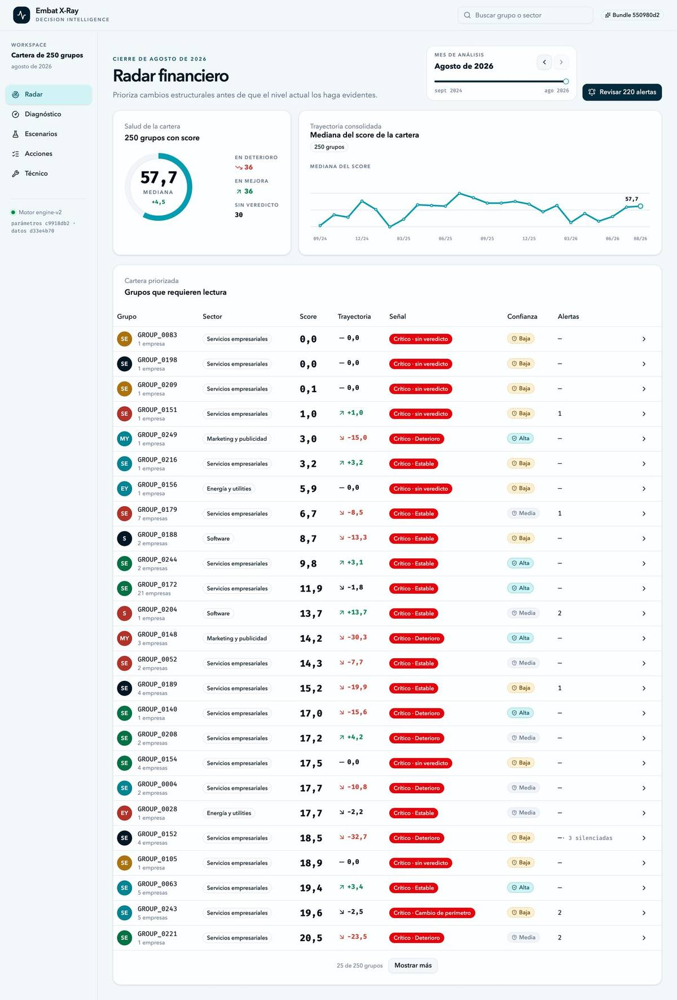
Módulos del Dashboard:
tab=radar): La vista de
entrada. Muestra KPIs agregados, un gráfico de la trayectoria mediana
consolidada y una tabla priorizada de todos los grupos. La tabla se
ordena por defecto de menor a mayor score
(sortRows(rows, 'shown', 'asc')). 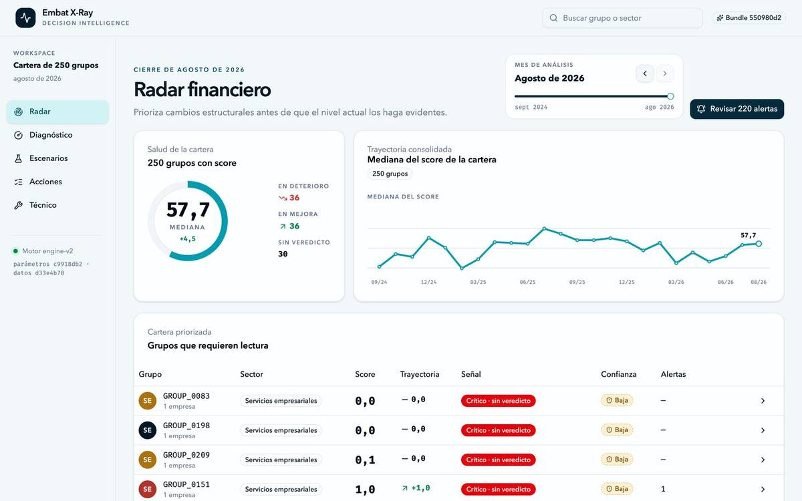
tab=diagnostico):
Análisis profundo del grupo definido en focus. Muestra el
score actual, la trayectoria histórica, los impulsores de los
pilares y las alertas de cambio de tendencia. 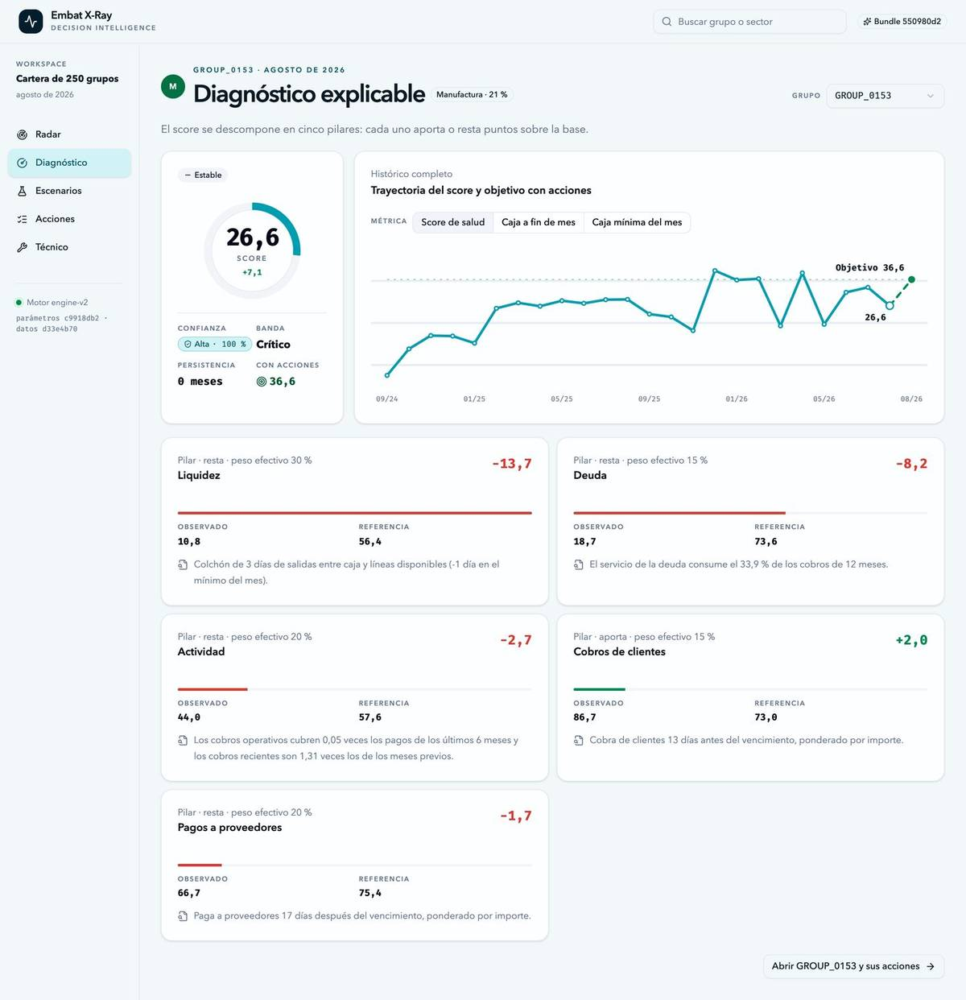
tab=escenario):
Laboratorio interactivo. Permite al usuario marcar casillas de acciones
recomendadas (almacenadas en un SvelteSet local) y
visualizar en tiempo real cómo impactarían en el score y en la
curva de trayectoria.tab=acciones): Centro
operativo transversal. Lee los 40 grupos con menor score del mes
(GROUPS_READ = 40) y muestra las 30 acciones
(ACTIONS_SHOWN = 30) que más puntos devuelven en toda la
cartera.tab=tecnico): Herramienta de
auditoría dividida por el parámetro section:
Ficha de Grupo (/group/[id]): Carga
groups/[id].json. Presenta el diagnóstico completo del
grupo. El antetítulo (eyebrow) muestra: «Grupo · [n] empresas ·
con datos desde [mes]». Incluye un desglose tabular de todas las
empresas que lo componen y una tarjeta con la ficha de atributos
inferidos.
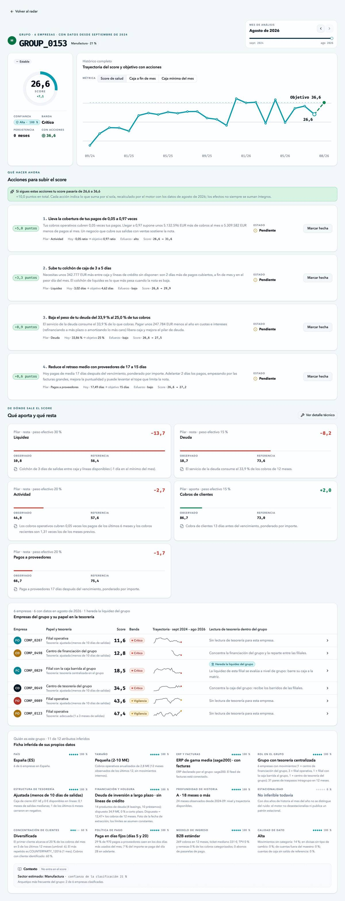
Ficha de Empresa
(/group/[id]/company/[companyId]): Carga
companies/[companyId].json y su grupo matriz para el
contexto. El antetítulo muestra: «Empresa · Grupo [id] · [role] ·
[treasury_class]». Si el archivo de la empresa no existe en el
bundle (la carpeta companies/ es opcional en el
contrato), la función loadCompany devuelve
null y la interfaz muestra un estado vacío
(FileX) con el texto: «Este bundle no incluye el detalle de
[id]» y la descripción «La exportación trae solo el resumen de la
empresa dentro de su grupo. Su score mensual figura en la tabla de
empresas del grupo.».
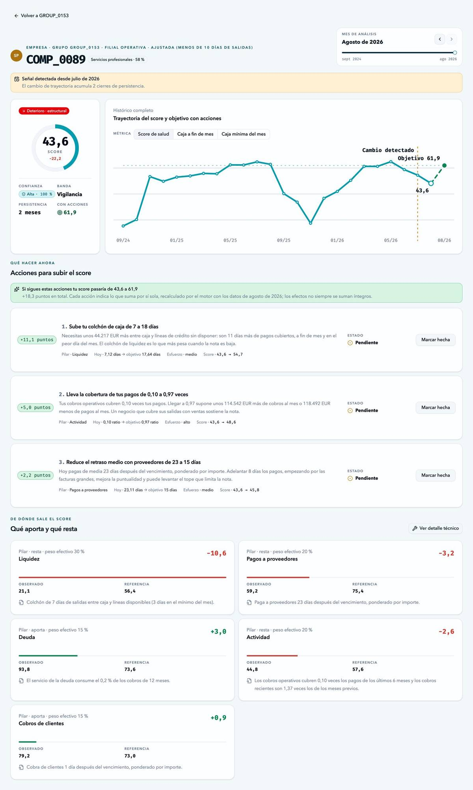
Redirección de Empresa
(/company/[id]): Ruta de atajo. Lee el archivo de
la empresa para descubrir a qué grupo pertenece y redirige
inmediatamente (HTTP 307) a /group/[id]/company/[id]. Si la
empresa no existe, lanza un error 404 con el mensaje «Este bundle no
incluye el detalle de [id]: abre la empresa desde la página de su
grupo.».
Qué es · La franja superior fija que proporciona la identidad de marca, la búsqueda global de entidades y la referencia técnica del paquete de datos cargado.
Dónde aparece · En la parte superior de todas las
pantallas de la aplicación, fijada al techo del navegador mediante las
clases sticky top-0 z-30 y con un fondo translúcido que
desenfoca el contenido subyacente
(bg-background/92 backdrop-blur-xl).
Anatomía * Logotipo e identidad:
Ubicado en el extremo izquierdo. Consta de un contenedor cuadrado oscuro
(bg-[var(--ink)] text-white) con el pictograma
Activity (una línea de pulso), seguido del texto «Embat
X-Ray» en negrita (tracking-[-0.02em]) y el subtítulo
«DECISION INTELLIGENCE» en mayúsculas pequeñas y muy espaciadas
(tracking-[0.18em]). * Buscador global:
Situado en el centro-derecha. Es una caja de texto (Input)
que incluye el icono Search posicionado de forma absoluta a
la izquierda. Presenta el texto de marcador de posición literal «Buscar
grupo o sector» y cuenta con los atributos
aria-label="Buscar grupo o sector" y
autocomplete="off". * Identificador del
bundle: En el extremo derecho. Una pastilla (Badge
con variante outline) que contiene el icono
Sparkles y el texto literal «Bundle» seguido de los
primeros 8 caracteres del identificador del paquete (calculado mediante
la función shortHash(manifest.bundle_id, 8)).
Cómo funciona * Buscador global: *
Interacción y despliegue: Al hacer clic o tabular hacia
el campo (onfocus), se activa la variable de estado
searchFocused. Si el usuario ha introducido texto
(query) y existen coincidencias
(matches.length > 0), se despliega una lista flotante
(ul con role="listbox" y
aria-label="Resultados de grupo") justo debajo del campo.
Al perder el foco (onblur), el menú se cierra con un
retraso intencionado de 150 ms (setTimeout); esto permite
que, si el usuario hace clic en un resultado, el evento
onmousedown se registre antes de que el menú desaparezca
del DOM. * Normalización y filtrado: El texto
introducido se procesa mediante la función normalizeText
(ubicada en portfolio.ts), que elimina marcas diacríticas
(tildes) usando la normalización Unicode NFD, pasa todo a
minúsculas y elimina espacios en blanco en los extremos. El filtro busca
si este texto normalizado está incluido en la concatenación del
identificador del grupo y su sector
(normalizeText(${row.id} ${row.group.industry ??
’’})). Esto permite que buscar «hosteleria» sin tilde
encuentre grupos cuyo sector es «Hostelería». * Límite de
resultados: La lista desplegable está limitada a un máximo de 8
coincidencias (slice(0, 8)). * Navegación por
teclado: Si el usuario presiona la tecla Enter y
hay al menos un resultado, se abre directamente la ficha del primer
grupo de la lista (matches[0]). Presionar
Escape fuerza el cierre del desplegable
(searchFocused = false). * Anatomía del
resultado: Cada fila del desplegable es un botón
(button type="button") que muestra: * A la izquierda: El
identificador del grupo (row.id) en tipografía de datos
(font-data) y, debajo, el sector
(row.group.industry) o el texto literal «Sin sector» si es
nulo. * A la derecha: El score del grupo formateado con
formatScore(row.shown) (ej. «57,7») o el texto literal «—»
si el valor es nulo. Si el grupo se encuentra en la banda crítica
(row.band === 'critical'), el score se tiñe de
rojo (text-[var(--danger)]). * Navegación al
detalle: Al hacer clic en un resultado
(onmousedown), se limpia la búsqueda
(query = ''), se cierra el menú y se navega a la ruta del
grupo (/group/${id}) conservando el mes seleccionado
mediante monthStore.href. * Identificador del
bundle: Aunque visualmente solo muestra 8 caracteres, el hash
completo de 64 caracteres está disponible en el atributo nativo
title del elemento, mostrándose como un tooltip
nativo del sistema operativo al mantener el cursor encima. Este elemento
se oculta por completo en pantallas móviles
(hidden sm:flex).
Estados y variantes * Sin
resultados: Si el texto introducido no produce coincidencias,
la lista flotante simplemente no se renderiza en el DOM (condición
{#if searchFocused && matches.length > 0}).
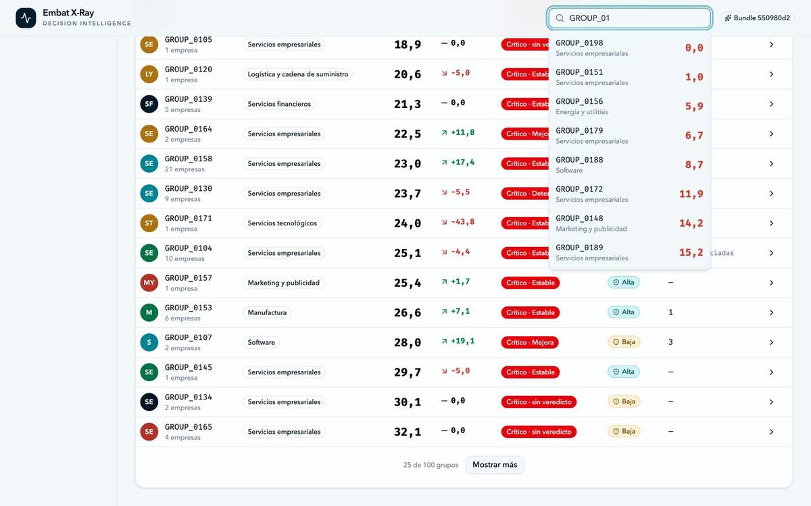
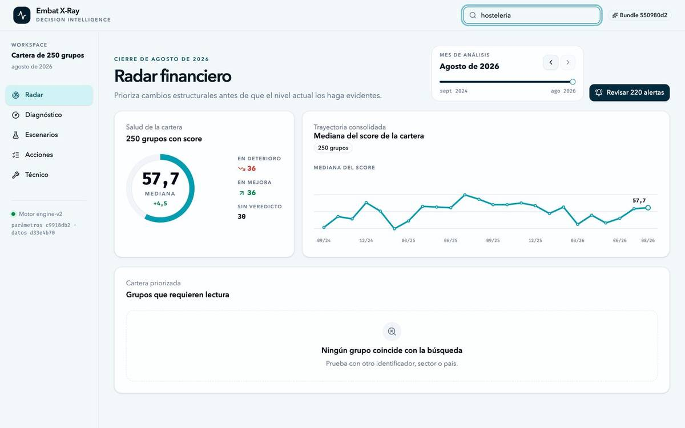
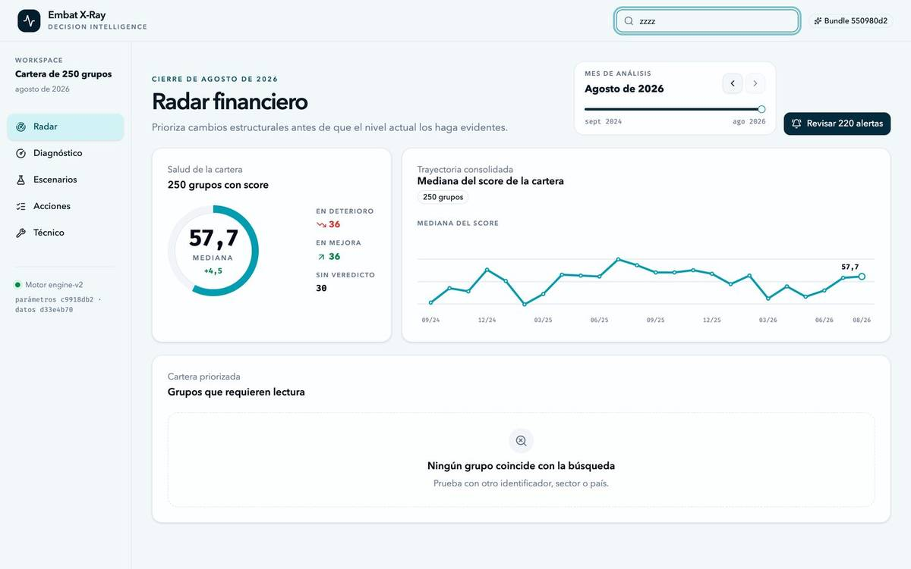
Fuente ·
src/lib/xray/xray-dashboard.svelte,
src/lib/xray/portfolio.ts (para
normalizeText), src/lib/format.ts (para
shortHash y formatScore).
Qué es · El panel vertical izquierdo que contextualiza el espacio de trabajo actual y permite la navegación principal entre los distintos módulos de la aplicación.
Dónde aparece · En el lateral izquierdo, visible
únicamente en pantallas de escritorio (hidden lg:block).
Ocupa la altura total de la pantalla menos la cabecera
(min-h-[calc(100vh-4rem)]).
Anatomía * Bloque Workspace: *
Etiqueta superior: Texto literal «Workspace» estilizado con la clase
.metric-label (mayúsculas pequeñas y espaciadas). * Título:
Texto literal «Cartera de {X} grupos», donde X es el valor numérico
extraído de manifest.counts.groups. * Subtítulo: El mes de
análisis actualmente seleccionado, formateado mediante
formatPeriod (ej. «agosto de 2026») y forzando la primera
letra a mayúscula (first-letter:uppercase). Incluye el
atributo data-testid="shell-month". * Pestañas
verticales: Implementadas utilizando las primitivas
Tabs.Root y Tabs.List configuradas con
orientation="vertical". * Pie de la barra (Estado
del motor): * Indicador visual: Un punto verde
(bg-[var(--success)]) con un anillo exterior translúcido
(shadow-[0_0_0_4px_var(--success-soft)]). * Texto de
versión: Texto literal «Motor {manifest.engine_version}» (ej. «Motor
engine-v2»). * Hashes técnicos: Muestra los primeros 8 caracteres de los
parámetros y los datos, con el texto literal «parámetros {hash} · datos
{hash}» en tipografía de datos (font-data) y tamaño
reducido (text-[0.68rem]).
Opciones de navegación
| Valor interno | Etiqueta visible | Icono |
|---|---|---|
radar |
«Radar» | Radar |
diagnostico |
«Diagnóstico» | CircleGauge |
escenario |
«Escenarios» | FlaskConical |
acciones |
«Acciones» | ListChecks |
tecnico |
«Técnico» | Wrench |
Cómo funciona * Estado activo: La
pestaña seleccionada recibe automáticamente el atributo
data-[state=active]. Mediante CSS, esto le aplica un fondo
suave y un color de texto intenso basados en el tono de señal
(data-[state=active]:bg-[var(--signal-soft)] data-[state=active]:text-[var(--signal-strong)]).
* Sincronización de URL: Al hacer clic en una pestaña,
se invoca la función setActive, que actualiza el parámetro
?tab= en la URL mediante la función auxiliar
setParams. Esta función utiliza goto con las
opciones replaceState: true (para no crear un historial de
navegación infinito al cambiar de pestañas),
keepFocus: true y noScroll: true. *
Comportamiento por defecto: Si se selecciona la pestaña
«Radar» (la vista principal), el parámetro tab se elimina
por completo de la URL
(tab: value === 'radar' ? null : value), manteniendo las
direcciones web limpias.
Fuente ·
src/lib/xray/xray-dashboard.svelte.
Qué es · La adaptación de la navegación principal para dispositivos donde la barra lateral vertical no tiene espacio suficiente.
Dónde aparece · Justo debajo de la cabecera global y
por encima del contenido principal, visible únicamente en pantallas
móviles y tabletas (lg:hidden).
Anatomía y comportamiento * Se renderiza como una
fila horizontal de pestañas (Tabs.List) dividida en 5
columnas iguales (grid-cols-5). * Muestra exactamente las
mismas opciones e iconos que la barra lateral de escritorio. *
Comportamiento responsivo: En pantallas muy estrechas
(móviles), el texto de las pestañas se oculta
(hidden sm:inline), dejando únicamente los iconos centrados
para maximizar el espacio táctil. En tabletas (sm a
lg), el texto vuelve a ser visible junto al icono. * El
buscador global de la cabecera adapta su ancho
(w-44 sm:w-72) y su menú desplegable se superpone al
contenido inferior ocupando el espacio disponible.
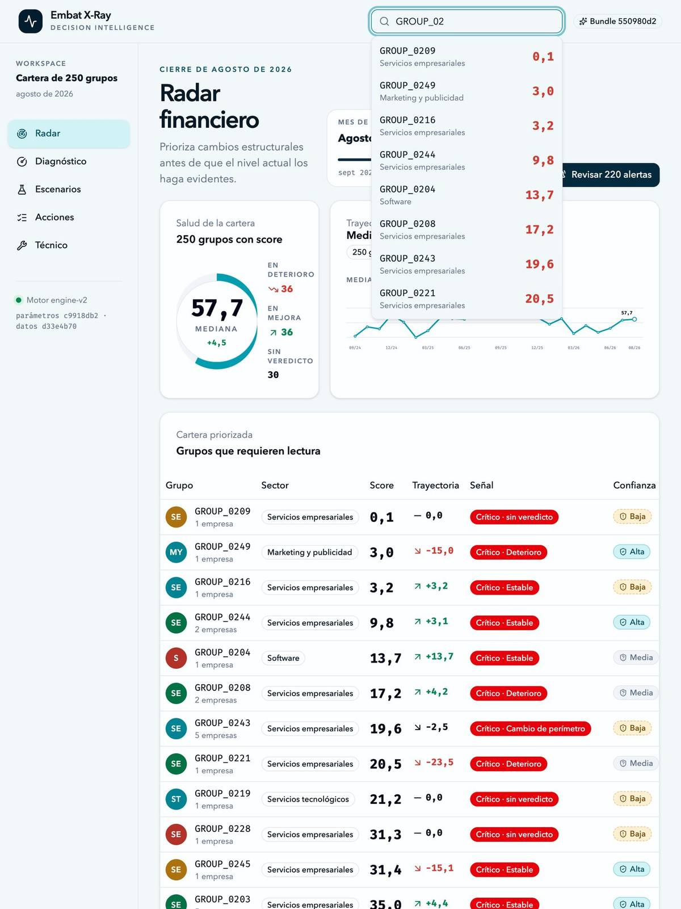
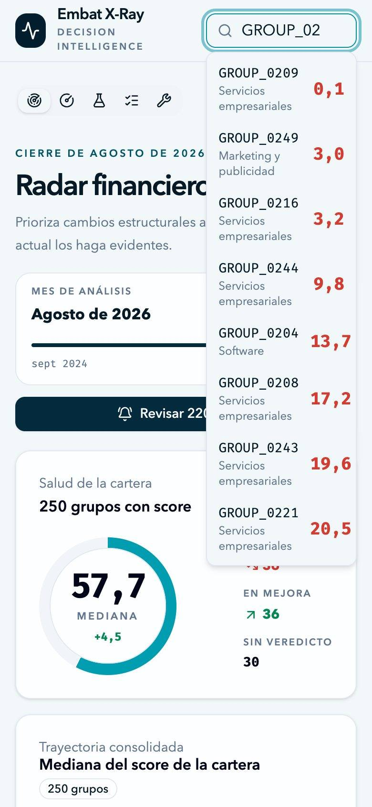
Fuente ·
src/lib/xray/xray-dashboard.svelte.
Qué es · El componente envoltorio invisible que gestiona la aparición y el comportamiento de las descripciones emergentes (tooltips) construidas con shadcn-svelte en toda la interfaz.
Cómo funciona · Toda la aplicación (el contenido
renderizado por el enrutador) está envuelta en un componente
<Tooltip.Provider delayDuration={150}> a nivel del
layout principal. Esto asegura que cualquier componente hijo
que implemente un tooltip (como los puntos de los gráficos de
trayectoria o los botones de iconos) comparta un retraso exacto de 150
milisegundos antes de mostrarse. Esta regla global evita parpadeos
inmediatos y molestos al mover el ratón rápidamente por la pantalla.
Fuente ·
src/routes/(app)/+layout.svelte.
Qué es · El control global interactivo que determina el punto exacto en el tiempo sobre el que se calculan, filtran y muestran los datos en toda la aplicación.
Dónde aparece · * En la vista Radar
(radar-view.svelte), junto al título principal. * En las
vistas de Diagnóstico y Escenarios a
nivel de grupo o empresa (entity-view.svelte). * En la
Bandeja de alertas (alerts-inbox.svelte),
pero condicionado a que el conmutador de alcance temporal esté
configurado en «Solo el mes de análisis».
Anatomía * Etiqueta superior: Texto
literal «MES DE ANÁLISIS» (o un texto personalizado pasado por la
prop label), estilizado con la clase
.metric-label. Posee un id único generado
dinámicamente que se enlaza con el deslizador mediante
aria-labelledby para accesibilidad. * Texto
principal: El mes seleccionado formateado con
formatPeriod (ej. «agosto de 2026»), forzando la primera
letra a mayúscula y con el atributo aria-live="polite" para
que los lectores de pantalla anuncien los cambios de fecha. *
Botón «Último cierre»: Un botón de variante
ghost con el icono History y el texto literal
«Último cierre». * Controles de paso: Dos botones
cuadrados pequeños (size="icon-sm") con los iconos
ChevronLeft y ChevronRight, y los atributos
aria-label="Mes anterior" y
aria-label="Mes siguiente". * Deslizador
(Slider): Una barra horizontal interactiva
(Slider de shadcn-svelte). * Etiquetas de los
extremos: El primer y último mes disponibles en el
bundle, formateados en versión corta con
formatPeriodShort (ej. «sept 2024» y «ago 2026»), situados
debajo del deslizador.
Estados y variantes * Botón «Último
cierre»: Solo se renderiza en el DOM
({#if !monthStore.isLatest}) si el mes actualmente
seleccionado no es el último mes disponible en el
bundle. * Límites de navegación: Las flechas
de paso se deshabilitan automáticamente (disabled) si se
alcanza el primer mes (monthStore.index <= 0) o el
último mes (monthStore.index >= last). * Bundle
de un solo mes: Si el paquete de datos exportado contiene un
único mes de historia, tanto el deslizador interactivo como las
etiquetas de los extremos se ocultan por completo
({#if months.length > 1}).
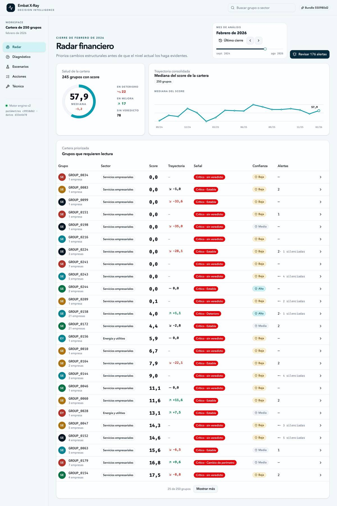
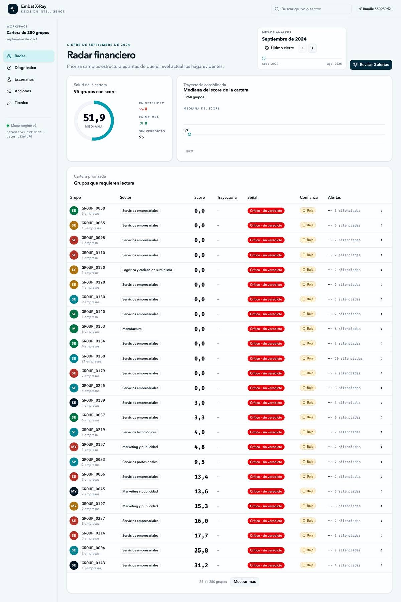
Cómo funciona (Lógica y Estado) El componente visual
(month-slider.svelte) es una representación del estado
global gestionado por la clase reactiva MonthStore
(month-store.svelte.ts).
$effect.pre en +layout.svelte), el
store se inicializa llamando a
monthStore.init(data.manifest.months) con la lista
cronológica de meses que dicta el contrato del bundle. Por
defecto, el mes activo (monthStore.month) es el último
disponible (latest).monthStore.step(-1) o
monthStore.step(1), modificando el índice.min={0},
max={last}, step={1}) directamente al índice
del array de meses mediante onValueChange. El tirador del
deslizador recibe el atributo aria-valuetext con el nombre
del mes formateado para accesibilidad.monthStore.select(monthStore.latest).?m=):
afterNavigate), el método readUrl() busca el
parámetro m en la URL. Valida que tenga el formato correcto
mediante la función isMonth (expresión regular
^[0-9]{4}-(0[1-9]|1[0-2])$).resolveMonth. Si el mes
pedido existe en el bundle, se selecciona. Si se pide un mes
anterior al inicio del bundle, se selecciona el primer mes
disponible. Si se pide un mes intermedio que falta en los datos, se
selecciona el mes inmediatamente anterior que sí exista.syncUrl() actualiza la barra de direcciones. Para
evitar saturar el historial del navegador o bloquear el hilo principal
mientras el usuario arrastra rápidamente el deslizador, la escritura
está retrasada (debounced) 200 ms
(URL_WRITE_DELAY_MS) y utiliza replaceState en
lugar de pushState.?m= se elimina de la URL para mantener los enlaces
limpios.monthStore.href(path). Este
método inyecta automáticamente el parámetro ?m= actual en
la URL de destino antes de que ocurra la navegación.Fuente ·
src/lib/xray/month-slider.svelte,
src/lib/xray/month-store.svelte.ts,
src/lib/xray/month.ts,
src/routes/(app)/+layout.svelte.
El Radar financiero es la vista principal y punto de entrada de la aplicación Embat X-Ray. Su propósito es ofrecer una visión consolidada de la salud financiera de toda la cartera de grupos empresariales en un mes determinado, permitiendo identificar rápidamente qué entidades requieren atención prioritaria debido a su bajo nivel de score o a un deterioro estructural reciente.
La pantalla se divide en un área superior con controles globales y métricas agregadas (KPIs), y un área inferior que contiene la tabla interactiva de la cartera priorizada.
Fuente: src/routes/(app)/+page.svelte,
src/lib/xray/xray-dashboard.svelte,
src/lib/xray/radar-view.svelte.
La parte superior del área de trabajo establece el contexto temporal y proporciona el acceso directo a la gestión de excepciones (alertas).
RadarView, bajo la cabecera global de la aplicación
(XrayDashboard).formatPeriod. Aplica la clase eyebrow.<h1 id="radar-heading">).<p class="page-lead">).xray-dashboard.svelte). Contiene el
placeholder «Buscar grupo o sector». Al escribir, filtra los
grupos en tiempo real. Si el campo tiene el foco
(searchFocused) y hay coincidencias, despliega una lista
flotante (<ul role="listbox">) con un máximo de 8
resultados (matches.slice(0, 8)). Cada fila del desplegable
muestra el identificador, el sector y el score (en color
var(--danger) si la banda es critical). Al
pulsar Enter o hacer clic en un resultado, navega a la
vista del grupo.Sparkles y el texto «Bundle [Hash]»
(ej. «Bundle 550980d2»), truncado a 8 caracteres mediante
shortHash. El atributo title revela el hash
completo al hacer hover.<MonthSlider />): Tarjeta ubicada a la
derecha que muestra la etiqueta «MES DE ANÁLISIS» y el mes actual.
Permite cambiar el mes activo mediante botones de flecha
(< y >) o arrastrando el control
deslizante (<Slider>) sobre la línea temporal que
abarca desde el primer hasta el último mes disponible en el
bundle (etiquetados con formatPeriodShort, ej.
«sept 2024» y «ago 2026»). Si el mes seleccionado no es el último,
aparece un botón «Último cierre» con el icono History. Al
cambiar el mes, toda la vista se recalcula y la URL se actualiza con el
parámetro ?m=YYYY-MM.BellRing y el texto «Revisar [N] alertas». El número
N corresponde a la suma de todas las alertas en estado
fired (activas) para el mes seleccionado, calculado en
portfolio.ts (summary.fired). Al pulsarlo,
ejecuta setParams({ tab: 'tecnico', section: 'alertas' }),
redirigiendo a la pestaña de alertas del detalle técnico.
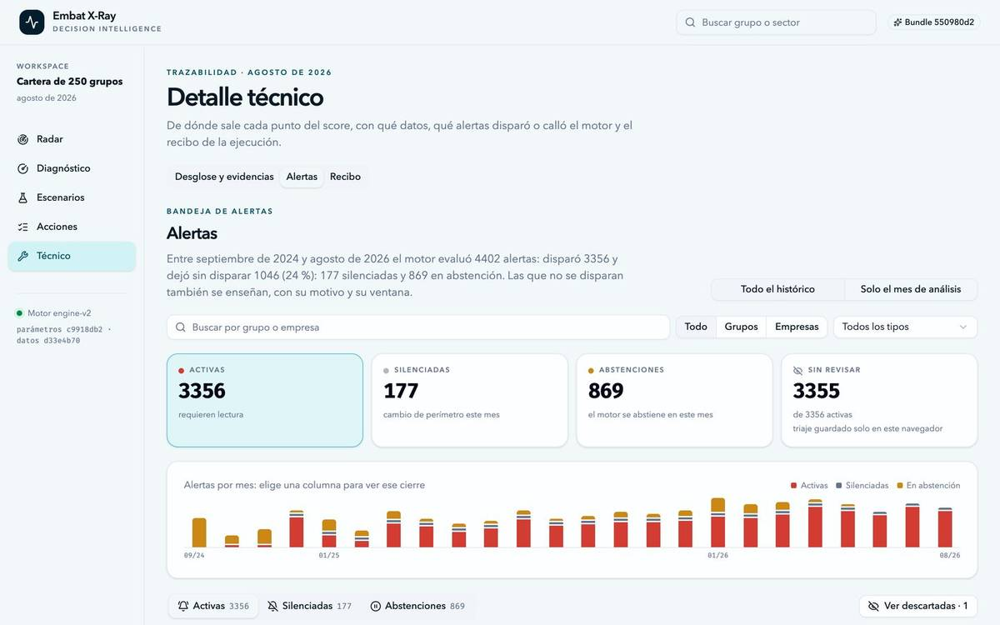
Debajo de la cabecera se presentan dos tarjetas que agregan los datos
de todos los grupos de la cartera para el mes seleccionado. Los cálculos
se realizan en la función summarize de
src/lib/xray/portfolio.ts.
Muestra la distribución de los estados de salud y la mediana del
score actual mediante el componente
<ScoreGauge />.
row.observed === true).summary.median). El valor
interno está en décimas y se formatea dividiendo por 10 con un decimal
(ej. 577 se muestra como 57,7).DELTA_MONTHS). Se formatea con signo explícito mediante
formatSigned(delta, 1) (ej. +4,5).direction === 'deteriorating' y que no están en abstención
(!row.abstained). Acompañado del icono
TrendingDown y renderizado con la clase
negative (rojo).direction === 'improving' y que no están en abstención.
Acompañado del icono ArrowUpRight y renderizado con la
clase positive (verde).row.abstained === true). Se muestra en color
neutro (font-data).Muestra la evolución histórica de la mediana de la cartera mediante
el componente <TrajectoryChart />.
portfolio.months.slice(0, upTo)). El eje
X muestra los meses en formato corto (MM/AA), y el último
punto dibuja el valor exacto de la mediana actual formateado a un
decimal. Se renderiza en modo compact={true}.Es el núcleo del Radar: un listado exhaustivo de todos los grupos, ordenado para destacar aquellos que requieren atención inmediata.
sortRows(rows, 'shown', 'asc')). Los grupos sin datos en
el mes (shown === null) se envían al final de la lista. Los
empates se resuelven alfabéticamente por el identificador del grupo
(id).query a
RadarView. La función filterRows (en
portfolio.ts) normaliza el texto (elimina tildes y pasa a
minúsculas mediante normalizeText) y busca coincidencias en
el id del grupo, el industry (sector), el
country (código ISO) y el nombre del país traducido al
español (countryName(country)).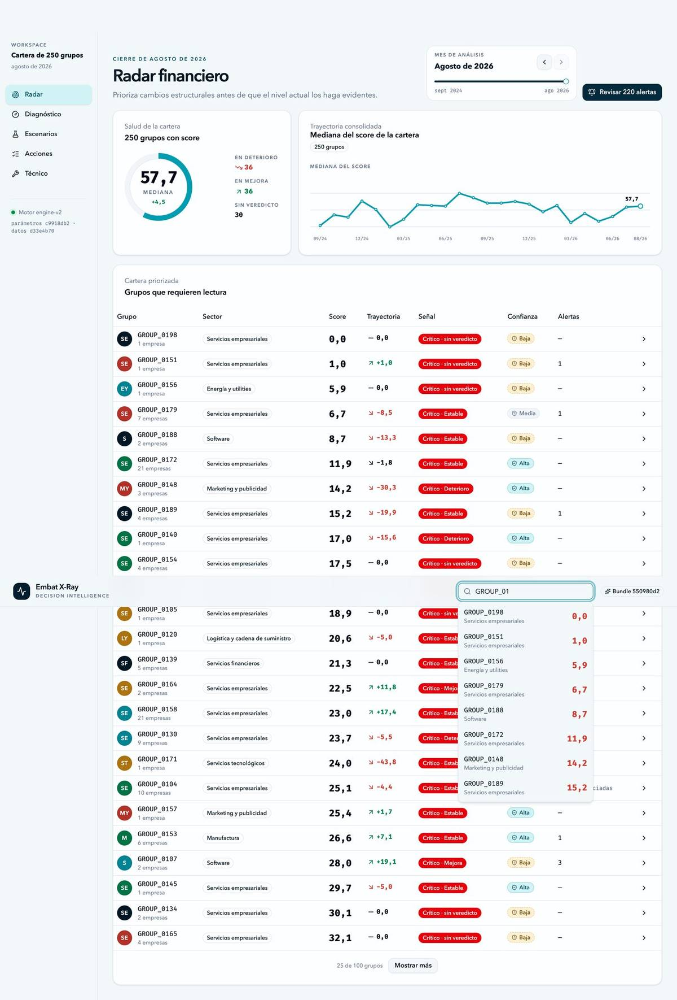
En resoluciones medias y grandes (md:block), los datos
se presentan mediante el componente <Table.Root>.
Toda la fila (<Table.Row>) tiene un efecto
hover que oscurece ligeramente el fondo
(hover:bg-muted/50), indicando que es interactiva.
| Columna | Contenido y Lógica | Componentes y Formato |
|---|---|---|
| Grupo | Avatar, identificador y número de empresas. | <CompanyAvatar />
genera un color basado en el hash del nombre. Muestra
row.id y row.group.n_companies pluralizado
(ej. «1 empresa» o «7 empresas»). |
| Sector | Sector inferido del grupo. | <Badge variant="outline">
con row.group.industry. Si es null, muestra
«—» con la clase text-sm text-muted-foreground. |
| Score | Puntuación del mes seleccionado. | Tipografía grande y negrita
(font-data text-xl font-semibold). Usa
formatScore(row.shown). Si es null, muestra
«—». |
| Trayectoria | Variación del score respecto a
hace 3 meses (DELTA_MONTHS). |
Si delta > 0:
ArrowUpRight (clase positive). Si
delta < 0: ArrowDownRight. Si
delta === 0: Minus. Formateado con
formatScoreDelta. Regla de color: Solo
recibe la clase negative (rojo) si la caída es
estrictamente menor a -3,0 puntos (row.delta < -30
décimas). |
| Señal | Estado de salud y dirección. | <Badge>. Si no hay
datos: «Sin datos este mes». Si hay abstención: «[Banda] · sin
veredicto». Si hay datos: «[Banda] · [Dirección]» (ej. «Crítico ·
Deterioro»). Variante destructive (rojo) si la banda es
critical o si la dirección es deteriorating
(sin abstención). Si no, variante outline. |
| Confianza | Nivel de confianza del motor. | <ConfidencePill compact />.
Muestra el icono y el nivel (Alta, Media, Baja) coloreado según
CONF_TONE. |
| Alertas | Conteo de alertas del grupo en el mes. | Muestra row.fired formateado.
Si hay alertas silenciadas (row.muted > 0), añade en
texto pequeño gris: «· [N] silenciadas» con el atributo
title="Alertas que el motor decidió no disparar". Si no hay
alertas, muestra «—». |
| Acción | Botón de navegación. | <Button variant="ghost" size="icon-sm">
con icono ChevronRight. Enlaza a la vista de detalle del
grupo (monthStore.href('/group/' + row.id)). |
En resoluciones pequeñas (md:hidden), la tabla se oculta
y se renderiza una lista de enlaces (<a>)
estructurados como tarjetas. * Anatomía: Cada tarjeta
muestra a la izquierda el Avatar, el ID, el número de empresas, el
badge del sector y el badge de la señal. A la derecha,
alineado al final, se muestra el Score en tamaño
text-2xl, la trayectoria y el conteo de alertas activas
pluralizado (ej. «1 alerta» o «2 alertas»). Toda la tarjeta es un área
clicable que navega al detalle del grupo.
Para mantener el rendimiento del DOM con carteras grandes, la lista
está paginada en el cliente. * Cómo funciona:
Inicialmente se muestran PAGE_SIZE (25) filas. *
Controles: Al final de la lista, si hay más grupos
filtrados que los visibles (filtered.length > visible),
aparece un texto indicando el progreso (ej. «25 de 250 grupos») y un
botón «Mostrar más». Al pulsarlo, la variable visible se
incrementa en 50 unidades (PAGE_SIZE * 2), revelando más
filas instantáneamente.
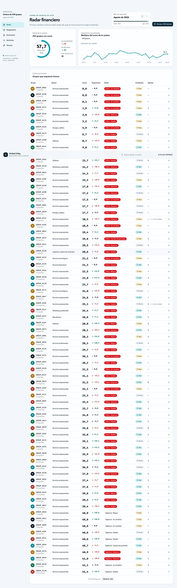
filtered.length === 0).<EmptyState compact />.SearchX.delta) requiere comparar el mes actual con el de hace 3
meses (DELTA_MONTHS), en los primeros meses este valor es
null al no existir histórico suficiente. La columna
«Trayectoria» muestra un guion gris («—»).La vista de «Diagnóstico explicable»
(diagnosis-view.svelte) ofrece una disección visual y
cuantitativa del score de salud financiera de un grupo
empresarial específico en un mes determinado. Su objetivo es explicar de
forma transparente cómo el motor analítico ha llegado a la puntuación
final, mostrando la contribución exacta de cada pilar, el nivel de
confianza y la trayectoria histórica.
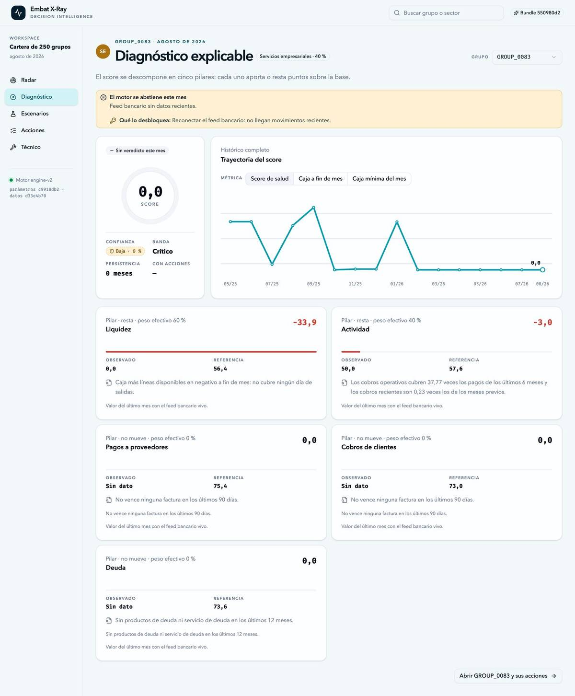
focus-picker)Qué es · El encabezado de la vista que identifica a la entidad bajo análisis y permite cambiar a otro grupo sin abandonar la pestaña.
Dónde aparece · En la parte superior de la vista, bajo las pestañas de navegación principales.
Anatomía y textos literales · - Avatar
(CompanyAvatar): Un círculo de color generado a
partir de un hash del nombre o ID de la entidad
(seed = nombre + id módulo la longitud de la paleta de
tonos), que contiene las iniciales del sector o del grupo (las dos
primeras letras de las dos primeras palabras, o los dos últimos
caracteres del ID). - Miga de pan (eyebrow):
Muestra el identificador y el mes, por ejemplo, «GROUP_0153 · agosto de
2026» (formatPeriod). Si no hay grupo cargado, muestra
«Grupo». - Título: «Diagnóstico explicable». -
Pastilla de contexto sectorial: Un Badge
con la variante outline que muestra el sector inferido y su
confianza
({industry.label} · {formatPercent(industry.confidence, 0)}),
por ejemplo, «Manufactura · 21 %». El atributo HTML title
contiene el motivo de la clasificación (industry.reason). -
Selector de grupo (focus-picker.svelte): -
Etiqueta superior: «Grupo» (metric-label). - Botón
disparador (Select.Trigger) con el texto del grupo
seleccionado o «Elegir grupo». - Menú desplegable
(Select.Content) con la lista de grupos. Cada ítem muestra
el ID del grupo y, alineado a la derecha, su score formateado a
un decimal (formatScore) o un guion «—» si es nulo. -
Texto introductorio: «El score se descompone en cinco
pilares: cada uno aporta o resta puntos sobre la base.»
Cómo funciona · El selector lee y escribe el
parámetro de URL focus. La selección del grupo por defecto
se resuelve en xray-dashboard.svelte siguiendo una
jerarquía estricta: 1. Si la URL contiene el parámetro
focus y este coincide con un grupo válido del
bundle, se selecciona ese grupo. 2. Si no hay parámetro o es
inválido, el sistema busca el primer grupo de la lista priorizada
(rows) que tenga un score válido en el mes
seleccionado
(rows.find((row) => row.shown !== null)?.id). Dado que
rows se ordena de menor a mayor score
(sortRows(..., 'shown', 'asc')), el diagnóstico se abre por
defecto en el grupo con peor salud financiera del mes.
Al seleccionar un nuevo grupo en el desplegable, se actualiza el
parámetro focus en la URL mediante
setParams({ focus: id }), lo que desencadena la recarga
reactiva de los datos sin recargar la página.
Fuente ·
frontend/src/lib/xray/diagnosis-view.svelte,
frontend/src/lib/xray/focus-picker.svelte,
frontend/src/lib/xray/company-avatar.svelte,
frontend/src/lib/xray/xray-dashboard.svelte.
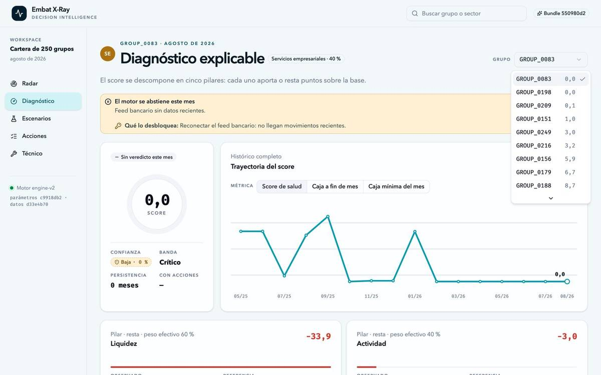
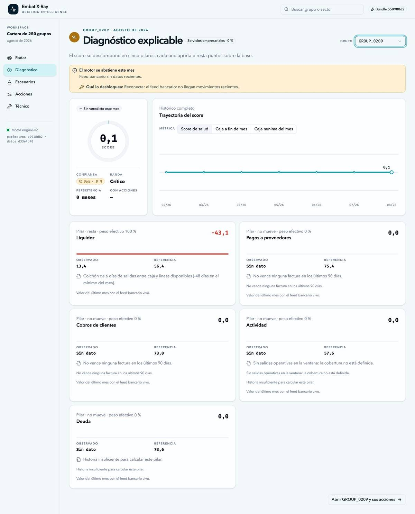
focus-frame)Qué es · Un componente contenedor que gestiona el
ciclo de vida de la petición asíncrona para obtener el archivo JSON
específico del grupo (groups/[id].json) y maneja los casos
límite de disponibilidad de datos.
Estados y variantes · El estado se maneja mediante
el tipo FocusState, que transita por cuatro posibles
valores: - idle: Estado inicial o cuando no hay un grupo
seleccionado. Muestra un EmptyState con el icono
MousePointerClick, el título «Elige un grupo» y la
descripción «Ningún grupo tiene score en este mes.». -
loading: Mientras se resuelve la promesa
loadGroup(fetch, id). Muestra un contenedor con
aria-label="Cargando grupo" y dos esqueletos de carga
(Skeleton) de altura h-72 que simulan la
disposición de las tarjetas principales. - error: Si la
promesa es rechazada (por ejemplo, un BundleError por
archivo faltante). Muestra un EmptyState con tono
danger, el icono FileWarning, el título «No se
pudo leer [id]» y el mensaje de error capturado. - ready:
La petición ha tenido éxito. El componente extrae la entrada del mes
correspondiente
(entryAt(focus.group.months, monthStore.month)). -
Subestado sin datos: Si el grupo existe pero no tiene
datos para el mes seleccionado, muestra un EmptyState con
el icono CalendarOff, el título «Sin datos de [id] en
[mes]» (formatPeriod) y la descripción «Su primer cierre
observado es [mes] (formatPeriod(focus.group.first_month)).
Elige otro mes u otro grupo.». - Subestado con datos:
Renderiza el contenido completo del diagnóstico.
Nota sobre discrepancias: La captura proporcionada bajo el
nombre 074-diagnostico-error-cargando-grupo muestra en
realidad la interfaz completamente renderizada en estado
ready para el grupo «GROUP_0153», contradiciendo su nombre
de archivo. El estado de carga real se ilustra en la captura
075-diagnostico-estado-cargando.
Fuente ·
frontend/src/lib/xray/focus-frame.svelte.
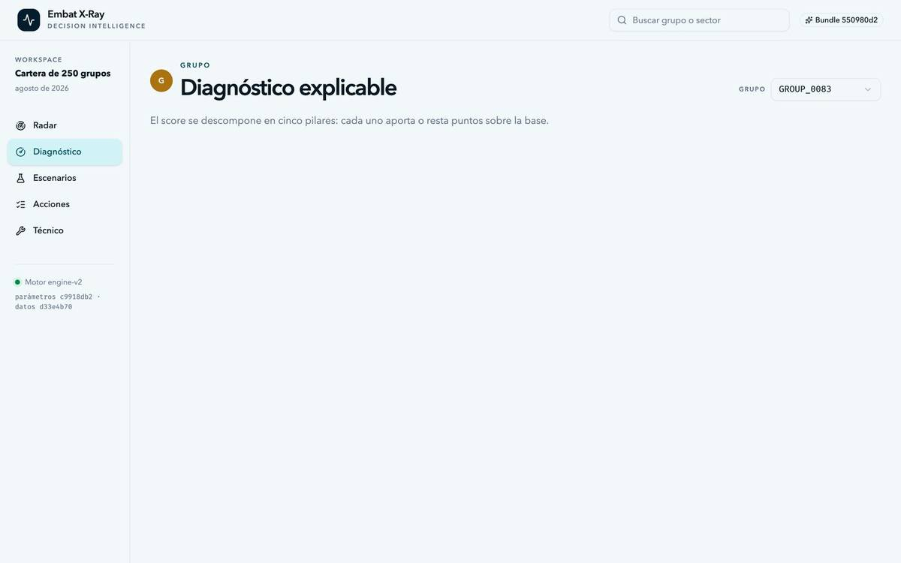

Antes de las métricas principales, el sistema inyecta avisos críticos basados en las reglas del motor si se cumplen ciertas condiciones.
Abstención (abstained-state) Si el
motor no dispone de datos suficientes para emitir un veredicto fiable,
la propiedad entry.abstain contiene datos. -
Anatomía: Se renderiza un componente Alert
con la clase
border-[var(--warning)]/40 bg-[var(--warning-soft)] (fondo
amarillo suave, bordes ámbar) y el icono PauseCircle. -
Textos: - Título: «El motor se abstiene este mes». -
Descripción: Muestra el motivo de la abstención traducido mediante
glossaryText desde el manifiesto (por ejemplo, «Feed
bancario sin datos recientes.»). - Desbloqueo: Precedido por un icono de
llave (KeyRound) en tono warning-strong,
muestra el texto literal «Qué lo desbloquea:» seguido de la acción
correctiva (entry.abstain.unlock). -
Lógica: Durante una abstención, el score se
muestra en el resto de la vista, pero se considera no vinculante.
Señal detectada Si el motor ha confirmado un cambio
de tendencia (entry.verdict.detected_since no es nulo), se
muestra una alerta advirtiendo del inicio de la señal. -
Anatomía: Componente Alert con clases
border-[var(--warning)]/35 bg-[var(--warning-soft)] y el
icono CalendarClock. - Textos: - Título:
«Señal detectada desde [mes]»
(formatPeriod(entry.verdict.detected_since)). -
Descripción: «El cambio de trayectoria acumula [n] [cierre/cierres] de
persistencia.» (pluralización basada en
entry.verdict.persistence_months).
entity-hero)Qué es · El bloque visual principal que resume la salud financiera del grupo. Se divide en dos tarjetas: el estado actual (izquierda) y la trayectoria histórica (derecha).
Anatomía y funcionamiento de la tarjeta de Score
actual · - Insignia de tendencia: Un
Badge en la esquina superior izquierda. - Lógica de
color: Variante destructive (rojo) si
verdict.direction es deteriorating; variante
secondary (gris) para el resto. - Icono:
ArrowUpRight (si es improving),
ArrowDownRight (si es deteriorating), o
Minus (para el resto). - Texto: Si no hay
veredicto disponible (!verdict.available), muestra «Sin
veredicto este mes». Si lo hay, concatena la dirección
(DIRECTION_TEXT) y la naturaleza (NATURE_TEXT
en minúsculas), por ejemplo, «↘ Deterioro · estructural» o «— Estable».
- Medidor de score (score-gauge): Un
gráfico circular generado mediante un conic-gradient en
CSS. - Lógica visual: El grado de llenado se calcula
como score * 3.6deg. El color del trazo se vincula a la
variable CSS --signal. - Textos: En el
centro muestra el score (entry.shown / 10)
formateado a un decimal (formatNumber(rawScore, 1)), la
etiqueta «SCORE» y la variación respecto al periodo de comparación
(verdict.delta3 / 10). La variación se formatea con
formatSigned(delta, 1) (que fuerza el signo +
o -) y se colorea con las clases positive
(verde) o negative (rojo) según su valor. Si el
score es nulo, muestra «—». - Cuadrícula de métricas
(2x2): - Confianza: Componente
ConfidencePill que evalúa entry.conf.label
(high, medium, low). Aplica un
tono semántico mediante CONF_TONE (verde, gris, amarillo) y
muestra el icono correspondiente (ShieldCheck,
ShieldQuestion, ShieldAlert). El texto
concatena CONF_TEXT y el porcentaje de confianza global
(formatPercent(entry.conf.value, 0)), por ejemplo, «Alta ·
100 %». - Banda: Muestra el nombre de la banda en la
que cae el score (entry.band), traducido desde el
manifiesto mediante bandLabel. -
Persistencia: Muestra
verdict.persistence_months junto a la palabra «mes» o
«meses» (formatNumber). - Con acciones:
Calcula el score potencial máximo si se aplicaran todas las
acciones recomendadas mediante la función
fullPlanTenths(entry). Si existen acciones, muestra el
valor proyectado (formatScore) junto a un icono de diana
(Target) y aplica la clase de color
text-[var(--success-strong)]; si no, muestra un guion
«—».
Estados y variantes por Banda · El color de los
elementos de acento en la interfaz (como los puntos en las tablas o las
pastillas en otras vistas) cambia según la banda, aunque el
score-gauge mantiene su color corporativo
--signal. Las bandas posibles y sus tonos
(BAND_TONE) son: - Crítico: Score
< 40. Tono danger (rojo). - Vigilancia:
Score 40 – 60. Tono warning (naranja/amarillo). -
Estable: Score 60 – 80. Tono
signal (azul/turquesa). - Sólido:
Score ≥ 80. Tono success (verde).
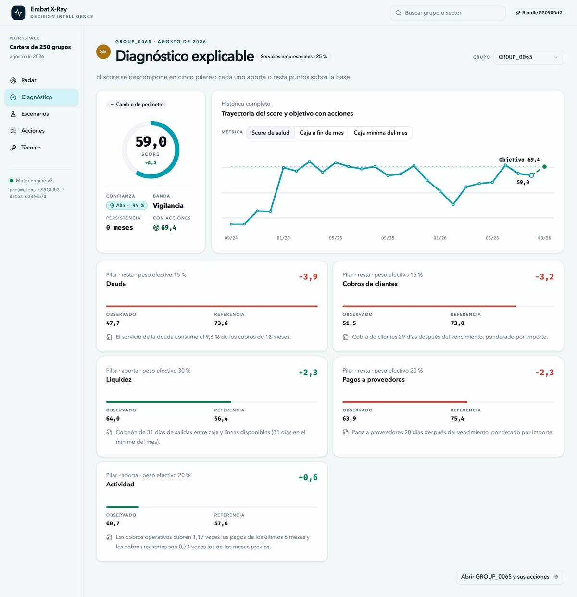
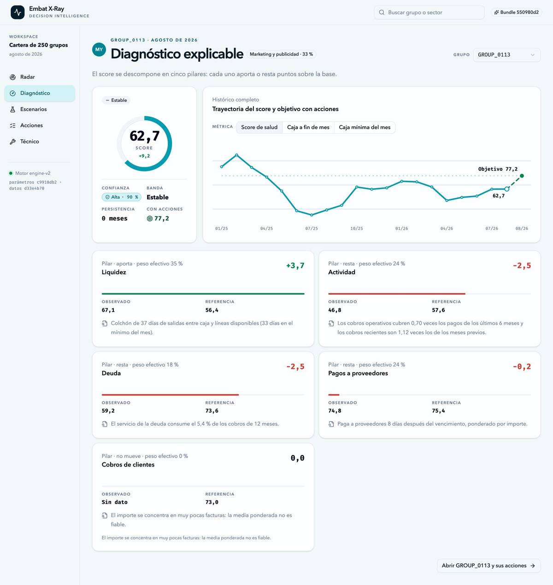
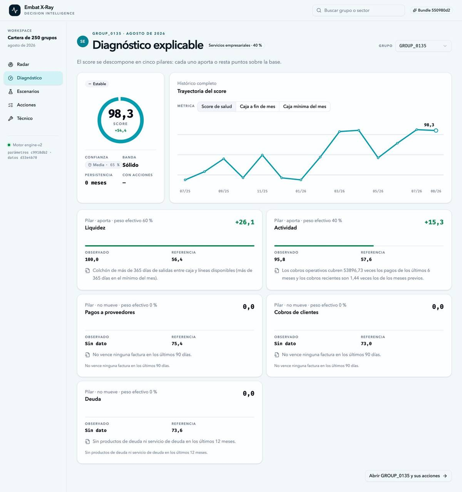
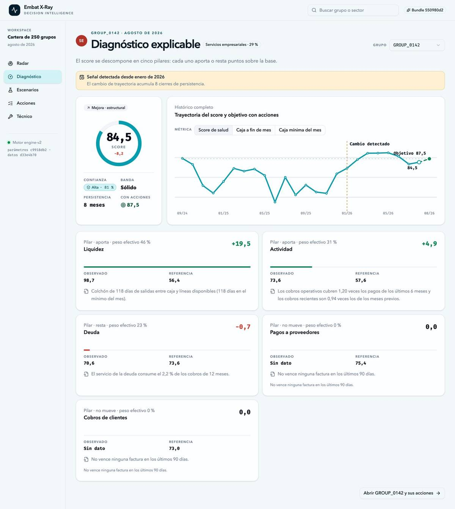
Fuente ·
frontend/src/lib/xray/entity-hero.svelte,
frontend/src/lib/xray/score-gauge.svelte,
frontend/src/lib/xray/confidence-pill.svelte,
frontend/src/lib/xray/tones.ts.
trajectory-chart)Qué es · Un gráfico de líneas interactivo situado en la tarjeta derecha del héroe, que muestra la evolución de las métricas a lo largo del tiempo, recortado hasta el mes seleccionado.
Anatomía y textos · - Cabecera:
Subtítulo «Histórico completo». El título cambia dinámicamente: si se
muestra el score y hay acciones, dice «Trayectoria del score y
objetivo con acciones»; si solo es el score, «Trayectoria del
score»; si es otra métrica, muestra el nombre de la métrica
(activeSeries?.label). - Selector de
métricas: Un ToggleGroup etiquetado como
«MÉTRICA». Por defecto muestra el «Score de salud», pero itera sobre las
series adicionales exportadas por el motor en group.series
(por ejemplo, «Caja a fin de mes» o «Caja mínima del mes»). -
Gráfico (SVG): - Eje X: Etiquetas de meses formateadas
como MM/AA (shortMonth). - Línea observada
(observed-line): Trazo continuo en color
--signal. - Puntos observados (observed-dot):
Círculos en cada mes con datos. - Tooltip interactivo
(hover-tooltip): Al pasar el cursor
(onpointermove), muestra el mes y el valor exacto.
Lógica y cálculos · - Los datos se preparan mediante
la función entitySeries(entries, month), que filtra el
historial de meses (group.months) para incluir solo
aquellos menores o iguales al mes seleccionado. - Formato de
valores: Si la métrica es el score, se formatea a un
decimal (formatNumber(value, 1)). Si es una serie monetaria
(unit === 'EUR'), usa formatEuroCompact (ej.
1,2 M€). Para otras unidades, concatena el número con dos
decimales y la unidad. - Marcador de cambio: Si el
motor detectó un cambio de tendencia
(changeIndex !== null), dibuja una línea vertical
discontinua de color warning (naranja) con la etiqueta
«Cambio detectado». - Proyección: Si la métrica activa
es el score y existen acciones de mejora
(targetTenths !== null), dibuja una línea discontinua verde
(projected-line, color success) desde el
último punto real hasta un nodo final (target-dot) que
representa el objetivo alcanzable. Se añade una línea horizontal tenue
de referencia y la etiqueta «Objetivo [valor]».
Fuente ·
frontend/src/lib/xray/trajectory-chart.svelte,
frontend/src/lib/xray/entity-series.ts.
pillar-drivers)Qué es · Una cuadrícula de tarjetas (dispuestas en 1 o 2 columnas según el ancho de pantalla) que explica la aportación matemática de cada uno de los cinco pilares financieros al score base.
Lógica de ordenación y escala · - Las tarjetas se
ordenan dinámicamente por el impacto absoluto de su contribución
(Math.abs(b.contrib) - Math.abs(a.contrib)), asegurando que
el pilar que más mueve el score (ya sea sumando o restando)
aparezca primero. - La escala máxima para las barras de progreso se
calcula buscando el valor absoluto mayor entre todas las contribuciones
(Math.max(1, ...entry.pillars.map(p => Math.abs(p.contrib)))).
Anatomía de la tarjeta · -
Cabecera: - Descripción: «Pilar · [verbo] · peso
efectivo [w_eff]%». El verbo se calcula dinámicamente:
contrib > 0 ? 'aporta' : contrib < 0 ? 'resta' : 'no mueve'.
El peso se formatea con formatPercent(driver.w_eff, 0). -
Título: Nombre del pilar traducido mediante pillarLabel
(ej. «Liquidez», «Actividad»). - Impacto: El valor exacto de la
contribución en puntos (formatScoreDelta(driver.contrib)),
coloreado con las clases positive (verde) o
negative (rojo) según su signo. - Barra de progreso
(Progress): - Su porcentaje de llenado es
proporcional a la contribución del pilar respecto a la escala máxima
calculada ((Math.abs(driver.contrib) / scale) * 100). - El
color del indicador (progress-indicator) es verde
(bg-[var(--success)]) si suma, o rojo
(bg-[var(--danger)]) si resta. - Cuadrícula
comparativa: - «OBSERVADO»: Muestra driver.score
formateado a un decimal (formatScore). Si es nulo, muestra
el texto literal «Sin dato». - «REFERENCIA»: Muestra el
baseline extraído del manifiesto para ese pilar. Si no
existe, muestra un guion «—». - Notas y compuertas
(Gates): - Si el motor exporta una nota
(driver.note), se muestra precedida por el icono
FileSearch. - Si existen reglas de exclusión o condiciones
especiales (driver.gates), se iteran y se muestra su texto
traducido mediante el glosario del manifiesto
(glossaryText(manifest, 'gates', gate)).
Tope (Cap) y Penalización · Aunque las tarjetas de
pilares muestran las contribuciones puras, el score final puede
verse afectado por reglas no compensatorias. Si un pilar es
excesivamente débil, el motor aplica una penalización
que resta puntos adicionales. Asimismo, pueden existir
topes (caps) que impiden que el
score supere un umbral máximo (por ejemplo, por liquidez
negativa recurrente). Estos ajustes matemáticos no tienen una tarjeta
propia en esta vista (se detallan exhaustivamente en la cascada de la
pestaña «Técnico»), pero su efecto ya está descontado en el
score global mostrado en el héroe de la entidad.
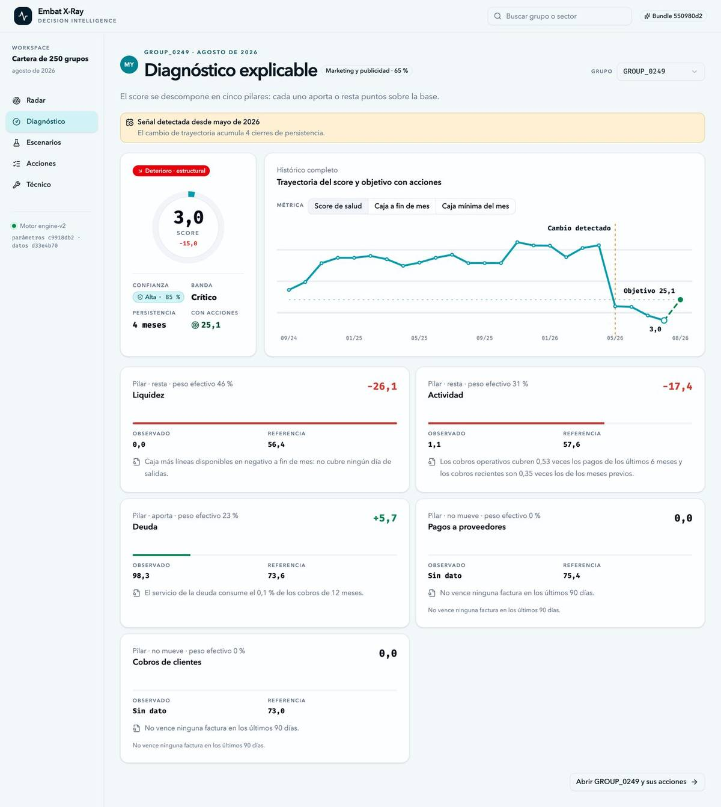
Fuente ·
frontend/src/lib/xray/pillar-drivers.svelte.
Al final de la vista de diagnóstico, alineado a la derecha, se
presenta un botón (Button) con la variante
outline y el texto «Abrir [ID] y sus acciones →» acompañado
del icono ArrowRight. Este botón utiliza la función
monthStore.href('/group/[id]') para generar un enlace
seguro hacia la ruta de la entidad, manteniendo el mes de análisis
seleccionado en los parámetros de la URL (?m=YYYY-MM),
permitiendo al usuario transitar hacia la vista operativa completa de la
entidad sin perder el contexto temporal.
Qué es · Es un entorno de simulación interactivo que
permite al usuario medir el impacto potencial de las acciones
recomendadas sobre el score de salud financiera de un grupo
empresarial. A diferencia del «Centro de acciones», que lista las
mejores palancas de toda la cartera, esta vista se centra en una única
entidad y permite combinar múltiples acciones para ver su efecto
conjunto. Dónde aparece · En la pestaña «Escenarios»
(scenario-view.svelte), accesible desde la barra lateral de
navegación principal. Fuente ·
src/lib/xray/scenario-view.svelte,
src/lib/xray/actions.ts,
src/lib/xray/focus-frame.svelte,
src/lib/xray/focus-picker.svelte.
La parte superior de la vista establece el contexto temporal y la entidad sobre la que se va a simular, apoyándose en el estado global de la aplicación.
Anatomía y textos literales · * Miga de pan
(eyebrow): Muestra el identificador del grupo y el mes
seleccionado. Plantilla:
{focus.state === 'ready' ? focus.group.id : 'Grupo'} · {formatPeriod(monthStore.month)}.
Por CSS (uppercase), se muestra en mayúsculas, por ejemplo:
«GROUP_0153 · AGOSTO DE 2026». * Título principal
(h1): «Laboratorio de escenarios». *
Descripción (.page-lead): «Activa las
acciones que el motor calculó para este grupo; el histórico observado
permanece intacto.». * Selector de grupo
(FocusPicker): Un control desplegable a la derecha
para cambiar la entidad bajo análisis sin abandonar la pestaña. *
Etiqueta: «Grupo». * Texto por defecto si no hay selección: «Elegir
grupo». * Opciones: Lista todos los grupos de la cartera. Muestra el
identificador (row.id) y su score formateado con
formatScore(row.shown). Si el grupo no tiene score
ese mes, muestra un guion «—». * Pastilla de estado
estática: Un badge con la variante
outline que acompaña al selector. Muestra el icono
FlaskConical y el texto literal «Estimación no aplicada».
Este badge es estático y advierte de que el laboratorio es un
entorno de pruebas, no la realidad consolidada.
Cómo funciona el estado · La selección de acciones
se gestiona mediante un SvelteSet local llamado
selected, que almacena los identificadores
(id) de las acciones marcadas. Para evitar que una
simulación se arrastre por error al cambiar de contexto, un efecto
reactivo ($effect) observa la variable scope
(compuesta por el id del grupo y el mes activo en
monthStore). Si el usuario cambia de grupo en el
FocusPicker o de mes en el deslizador superior, el conjunto
selected se vacía automáticamente
(selected.clear()).
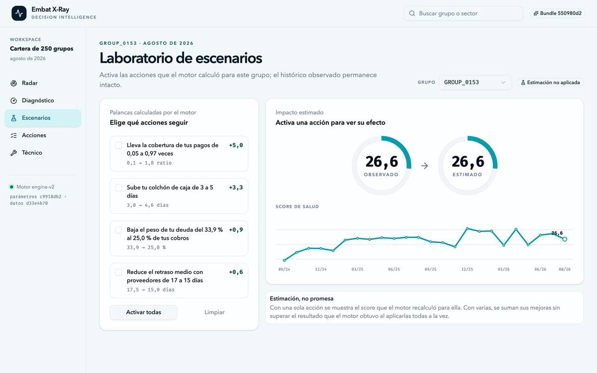
Qué es · El panel interactivo donde el usuario
selecciona qué recomendaciones desea simular. Datos de
origen · Lee el array actions dentro del objeto
EntityMonth del bundle. Las acciones se ordenan de mayor a
menor impacto potencial utilizando la función entryActions
(que ordena por uplift_tenths descendente).
Anatomía · * Cabecera de la
tarjeta: * Descripción (Card.Description):
«Palancas calculadas por el motor». * Título (Card.Title):
«Elige qué acciones seguir». * Lista de acciones: Se
itera sobre el array de acciones. Cada elemento es un
<label> interactivo que envuelve: * Casilla
de verificación (Checkbox): Vinculada
reactivamente a selected.has(action.id). Al cambiar,
ejecuta toggle(action.id, on). * Título de la
acción: Texto literal exportado por el motor en
action.title (ej. «Lleva la cobertura de tus pagos de 0,05
a 0,97 veces»). * Detalle métrico: Si la acción incluye
action.current y action.target, muestra la
transición de la métrica subyacente formateada a un decimal:
{formatNumber(action.current, 1)} → {formatNumber(action.target, 1)} {action.unit ?? ''}.
Ejemplo real: «0,1 → 1,0 ratio». * Impacto individual:
Alineado a la derecha, muestra los puntos que suma la acción por sí
sola, formateados con
formatScoreDelta(action.uplift_tenths) y en color verde
(text-[var(--success-strong)]). Ejemplo: «+5,0». *
Botonera inferior: * «Activar todas»:
Botón (variant="outline") que ejecuta
selectAll(entry), iterando sobre todas las acciones del mes
y añadiéndolas al SvelteSet. * «Limpiar»:
Botón de texto plano (variant="ghost") que ejecuta
selected.clear(). Se deshabilita
(disabled={selected.size === 0}) si no hay ninguna acción
marcada.
Interacción y estilos dinámicos · El
<label> de cada acción reacciona al estado del
Checkbox mediante selectores CSS avanzados
(has-[[data-state=checked]]).
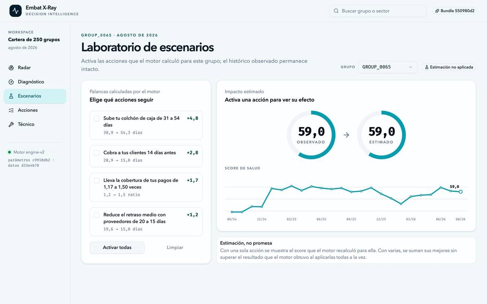
Estado inicial: Ninguna acción seleccionada. El contenedor de cada palanca tiene fondo blanco, borde gris y reacciona al hover conhover:bg-muted/40.
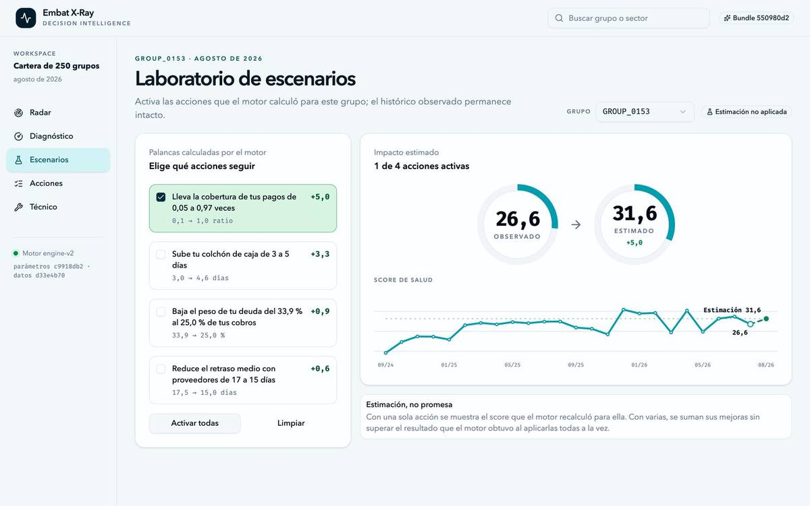
Estado activo: Al marcar una casilla, todo su contenedor adquiere un fondo verde menta suave (bg-[var(--success-soft)]) y un borde verde definido
(border-[var(--success)]/50).
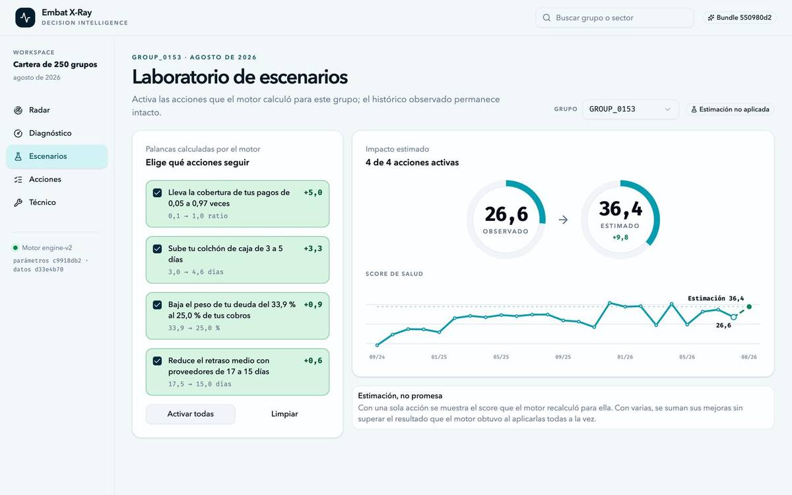
Uso del botón «Activar todas»: Todas las palancas se resaltan simultáneamente y el impacto en la columna derecha se recalcula al máximo posible. Uso del botón «Limpiar»:
Las palancas vuelven a su estado de reposo y la estimación de la columna
derecha se iguala al valor observado.
Uso del botón «Limpiar»:
Las palancas vuelven a su estado de reposo y la estimación de la columna
derecha se iguala al valor observado.
Qué es · El panel de resultados que refleja visualmente el recálculo del score basado en las palancas activadas. Se compone de dos tarjetas apiladas verticalmente.
Anatomía de la tarjeta principal · *
Cabecera: * Descripción: «Impacto estimado». * Título
dinámico: Si no hay acciones seleccionadas
(selected.size === 0), muestra «Activa una acción para ver
su efecto». Si hay selección, muestra la proporción:
{formatNumber(selected.size)} de {formatNumber(actions.length)} acciones activas
(ej. «1 de 4 acciones activas»). * Comparador de medidores
(ScoreGauge): * Medidor izquierdo
(«OBSERVADO»): Muestra el score real del mes
(entry.shown / 10). * Icono central: Una
flecha hacia la derecha (ArrowRight) en color gris
(text-muted-foreground). * Medidor derecho
(«ESTIMADO»): Muestra el score proyectado
(projected / 10). Si es mayor que el observado, el
componente ScoreGauge calcula automáticamente el
diferencial (delta={(projected - entry.shown) / 10}) y lo
muestra en verde debajo del número (ej. «+5,0»). * Gráfico de
evolución (TrajectoryChart): * Se renderiza en
modo compacto (compact={true}), reduciendo su altura de 230
px a 150 px. * Muestra la serie histórica
(trajectory.values) y los meses
(trajectory.months) calculados por
entitySeries. * Si hay acciones seleccionadas
(selected.size > 0), se le pasa el valor proyectado
(projected=[projected / 10]). El gráfico dibuja
automáticamente una línea discontinua verde desde el último punto real
hasta un nuevo nodo verde, etiquetado con el texto pasado en
projectedLabel="Estimación".
Anatomía de la tarjeta de aviso metodológico
(Alert) · Situada debajo del gráfico, explica la
lógica matemática subyacente para gestionar las expectativas del
usuario. * Título (Alert.Title):
«Estimación, no promesa». * Descripción
(Alert.Description): «Con una sola acción se
muestra el score que el motor recalculó para ella. Con varias, se suman
sus mejoras sin superar el resultado que el motor obtuvo al aplicarlas
todas a la vez.».
El cálculo del score estimado no es una simple suma lineal.
Se rige por la función projectedTenths (en
src/lib/xray/actions.ts), que implementa las reglas de
negocio del motor para evitar proyecciones irreales que superen el
máximo teórico:
| Cantidad de acciones seleccionadas | Regla de cálculo aplicada |
|---|---|
| 0 acciones | Devuelve exactamente el score
real mostrado en el mes (entry.shown). |
| 1 acción | Devuelve exactamente el valor precalculado
por el motor para esa acción individual
(action.new_score_tenths). |
| > 1 acción | Suma los uplift_tenths de las
acciones seleccionadas, pero topa el incremento máximo
al valor de entry.actions_combined.uplift (el cálculo del
motor aplicando todas las acciones a la vez). El resultado final se suma
a entry.shown y se restringe matemáticamente
(Math.min(1000, ...) y Math.max(ceiling, 0))
para que nunca baje de 0 ni supere los 1000 puntos (100,0 en
pantalla). |
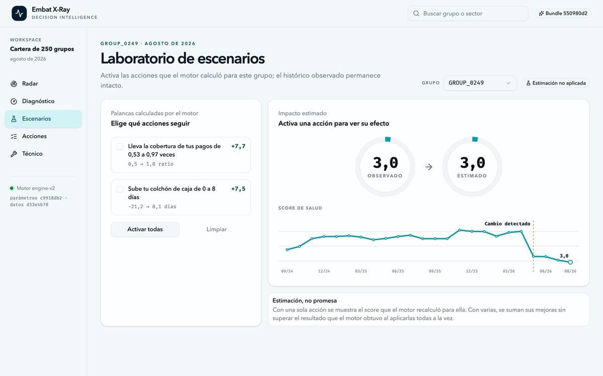
Ejemplo de proyección en un grupo crítico. El gráfico traza la línea discontinua hacia la estimación calculada, respetando el tope combinado del motor.FocusFrame y excepcionesLa vista de escenarios delega la gestión de estados de carga, error y
ausencia de datos al componente envolvedor FocusFrame.
Además, maneja sus propios estados vacíos según el contenido del
bundle.
Estados del FocusFrame · *
idle: Si no hay un grupo en foco, muestra
un EmptyState con el icono MousePointerClick.
Título: «Elige un grupo». Descripción: «Ningún grupo tiene score en este
mes.». * loading: Mientras se lee el JSON
del grupo, muestra un esqueleto de carga (Skeleton)
simulando las dos columnas. * error: Si
falla la carga, muestra un EmptyState con el icono
FileWarning en tono danger. Título: «No se
pudo leer [ID_GRUPO]». Descripción: El mensaje de error capturado. *
Mes sin datos: Si el grupo cargado no tiene datos en el
mes seleccionado en el monthStore, muestra un
EmptyState con el icono CalendarOff. Título:
«Sin datos de [ID_GRUPO] en [MES]». Descripción: «Su primer cierre
observado es [MES_INICIAL]. Elige otro mes u otro grupo.».
Estados específicos de la vista de Escenarios · *
Sin acciones calculadas: Si el array de acciones del
mes está vacío (actions.length === 0), se ocultan las
columnas de palancas e impacto. En su lugar, se muestra el componente
EmptyState con el icono ListChecks. *
Título: «Sin acciones con las que construir un escenario». *
Descripción: «El bundle no trae acciones para [ID_GRUPO] en
[MES]. El laboratorio solo usa mejoras recalculadas por el motor: no
inventa palancas ni resultados.». 
entry.abstain no es nulo),
el FocusFrame inyecta automáticamente el componente
AbstainedState en la parte superior. Muestra el motivo (ej.
«Feed bancario sin datos recientes.») y qué lo desbloquea. Si la
abstención implica que no hay acciones calculadas, se mostrará el estado
vacío descrito en el punto anterior. 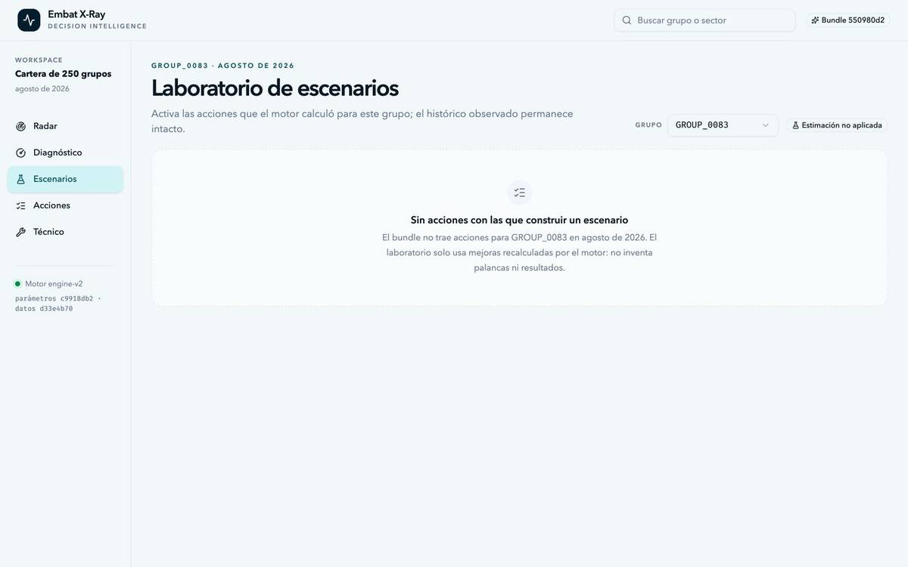
Qué es · Es la bandeja global de seguimiento operativo de la cartera. Agrupa y prioriza las recomendaciones financieras emitidas por el motor para los grupos con peor salud financiera, permitiendo al analista gestionar las tareas de mitigación de riesgo desde un único punto.
Dónde aparece · En la pestaña «Acciones» de la
navegación principal del panel de control
(/?tab=acciones).
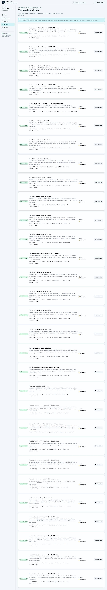
Cómo funciona (Lógica de carga y ordenación) · Para
evitar descargas masivas en carteras grandes y mantener el rendimiento,
la vista no lee las acciones de todos los grupos. La lógica
(actions-view.svelte) opera de la siguiente manera: 1. Toma
la lista de grupos del portfolio (rows) y filtra aquellos
que tienen un score válido en el mes seleccionado
(row.shown !== null). 2. Selecciona los 40 grupos
con menor score (.slice(0, GROUPS_READ)).
3. Carga los ficheros JSON de estos 40 grupos de forma concurrente
mediante Promise.allSettled(wanted.map(...)). Esto
garantiza que el fallo de un fichero no detenga la carga del resto. 4.
Extrae todas las acciones (entryActions(entry))
correspondientes al mes de análisis. 5. Ordena el conjunto global de
acciones de mayor a menor impacto en puntos
(b.action.uplift_tenths - a.action.uplift_tenths). 6.
Muestra únicamente las 30 acciones con mayor impacto
(top = status.items.slice(0, ACTIONS_SHOWN)).
Anatomía y textos - Cabecera: -
Antetítulo (eyebrow): «Seguimiento operativo ·
{formatPeriod(month)}» (ej. «Seguimiento operativo · agosto
de 2026»). - Título (h1): «Centro de acciones» (con
id="actions-heading"). - Descripción
(page-lead): «Las acciones que más puntos de score
devuelven en la cartera, con el grupo al que pertenecen.». -
Alerta de resumen: Una alerta de tono azul suave
(border-[var(--signal)]/30 bg-[var(--signal-soft)]) con el
icono BellRing. - Título: Muestra el
recuento total y el estado de triaje dinámico:
«{formatNumber(top.length)} acciones ·
{formatNumber(done)} hechas». El valor done se
calcula filtrando las acciones visibles cuyo estado en
actionState sea verdadero. - Descripción:
Explica la regla de negocio al usuario: «Se han leído los
{formatNumber(status.read)} grupos con menor score del mes
y se ordenan sus acciones por puntos ganados. El estado hecha /
pendiente se guarda solo en este navegador.».

Estados y variantes - Cargando
(status.state === 'loading'): Mientras se
resuelven las promesas de los 40 ficheros de grupo, se muestra un
contenedor con aria-label="Cargando acciones" que apila
tres componentes <Skeleton class="h-28" />. -
Error parcial (status.failed > 0): Si
alguno de los ficheros de grupo falla al cargar (por ejemplo, un error
404 de red), la vista se renderiza con los que hayan tenido éxito, pero
añade una alerta roja (variant="destructive") con el icono
FileWarning. - Título:
«{formatNumber(status.failed)} grupos no se pudieron leer».
- Descripción: «Sus acciones no figuran en esta lista.». - Vacío
(top.length === 0): Si tras leer los grupos no se
encuentra ninguna acción (ya sea porque el motor no encontró palancas o
porque el bundle es antiguo), se muestra el componente
EmptyState con el icono ListChecks. - Título:
«Sin acciones calculadas para este mes». - Descripción: «Los grupos
leídos no traen acciones en este cierre: o el motor no encontró palancas
que suban el score, o esta exportación es anterior al cálculo de
acciones.».
Fuente ·
src/lib/xray/actions-view.svelte.
Qué es · Es la versión contextualizada de la lista de acciones, restringida a una única entidad (grupo o empresa).
Dónde aparece · En la vista de detalle de grupo
(/group/[id]) y en la vista de detalle de empresa
(/group/[id]/company/[companyId]), justo debajo del bloque
del score y la trayectoria.

Anatomía y textos - Cabecera:
Antetítulo «Qué hacer ahora» (eyebrow) y título «Acciones
para subir el score» (h2 con
id="entity-actions-heading"). El contenedor principal lleva
data-testid="entity-actions". - Alerta de impacto
global: Se muestra solo si la entidad tiene acciones
(actions.length > 0) y un objetivo calculado
(target !== null). Es una alerta verde
(border-[var(--success)]/35 bg-[var(--success-soft)]) con
el icono Sparkles. - Título
(data-testid="actions-headline"): «Si sigues estas acciones
tu score pasaría de {formatScore(entry.shown)} a
{formatScore(target)}» (ej. «Si sigues estas acciones tu
score pasaría de 26,6 a 36,6»). - Descripción:
«{formatScoreDelta(target - entry.shown)} puntos en total.
Cada acción indica lo que suma por sí sola, recalculado por el motor con
los datos de {formatPeriod(entry.month)}; los efectos no
siempre se suman íntegros.». - Lista: Renderiza el
mismo componente ActionList que la vista global, mapeando
las acciones de la entidad actual y pasando su href nulo
(ya que el usuario ya está en la entidad).
Lógica de estimación combinada · El score
objetivo (target) que se muestra en la alerta verde se
calcula mediante la función fullPlanTenths
(src/lib/xray/actions.ts). - Si el motor exportó el nodo
actions_combined (que evalúa el efecto conjunto de aplicar
todas las palancas a la vez, evitando dobles conteos), se usa
entry.actions_combined.new_score. - Si este nodo no existe
(por retrocompatibilidad con bundles antiguos), se asume como
objetivo el máximo new_score_tenths de las acciones
individuales
(Math.max(...actions.map(a => a.new_score_tenths))). -
Las acciones se ordenan siempre de mayor a menor impacto mediante
entryActions
(b.uplift_tenths - a.uplift_tenths).
Estado vacío · Si la entidad no tiene acciones en
ese mes, se muestra un EmptyState con el icono
ListChecks. - Título: «Sin acciones calculadas para este
mes». - Descripción: «El bundle no trae acciones para
{entityId} en {formatPeriod(entry.month)}: o
el motor no encontró palancas que suban el score, o esta exportación es
anterior al cálculo de acciones.».
Fuente ·
src/lib/xray/entity-actions.svelte,
src/lib/xray/actions.ts.
Qué es · El componente individual que representa una recomendación operativa, utilizado tanto en la vista global como en la de entidad.
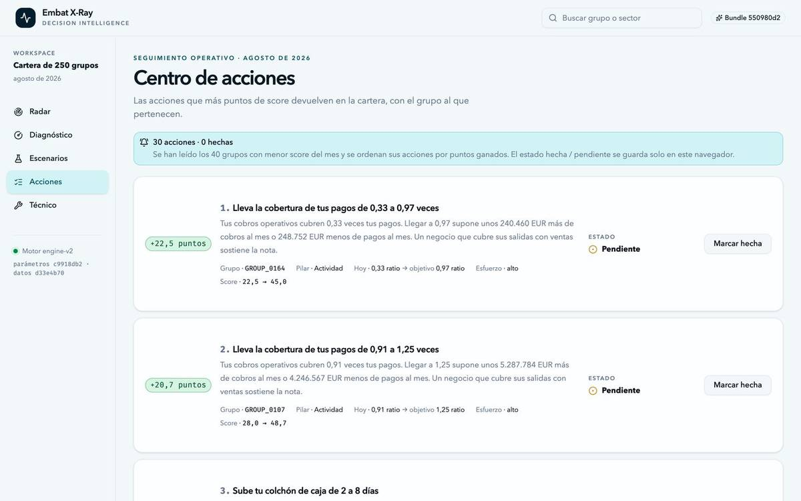
Anatomía La tarjeta (Card.Root con
data-action={action.id}) contiene un
Card.Content que se divide visualmente en tres columnas en
pantallas grandes mediante la clase
lg:grid-cols-[auto_1fr_12rem_auto] lg:items-center:
Badge con variant="outline" estilizado
en tonos verdes
(border-[var(--success)]/40 bg-[var(--success-soft)] text-[var(--success-strong)]).data-testid="action-uplift".{formatScoreDelta(action.uplift_tenths)} puntos» (ej.
«+22,5 puntos»).<span class="font-data mr-1 text-muted-foreground">{index + 1}.</span>{action.title}»
(ej. «1. Lleva la cobertura de tus pagos de 0,33 a 0,97 veces»).text-muted-foreground text-sm) con la explicación
financiera (action.detail), renderizado solo si
existe.flex flex-wrap gap-x-5 gap-y-2 text-xs) de etiquetas. Se
muestran condicionalmente si el dato existe en el JSON:
item.href (vista global). Muestra
«<span class="text-muted-foreground">Grupo</span> · <a href={item.href}>{item.entityId}</a>».
El enlace redirige a la vista de la entidad manteniendo el mes
seleccionado.action.pillar existe. Texto:
«<span class="text-muted-foreground">Pilar</span> · {pillarLabel(manifest, action.pillar)}»
(ej. «Pilar · Actividad»).action.current y
action.target existen. Utiliza una función local
quantity que formatea el número sin decimales si es entero,
o con dos si es flotante, añadiendo la unidad (action.unit)
separada por un espacio de no separación (\u00A0). Texto:
«<span class="text-muted-foreground">Hoy</span> · {quantity(action.current, action.unit)} <span class="text-muted-foreground">→ objetivo</span> {quantity(action.target, action.unit)}»
(ej. «Hoy · 0,33 ratio → objetivo 0,97 ratio»).action.effort existe.
Texto:
«<span class="text-muted-foreground">Esfuerzo</span> · {action.effort}»
(ej. «Esfuerzo · alto»).<span class="text-muted-foreground">Score</span> · <span class="font-data">{formatScore(item.shown)} → {formatScore(action.new_score_tenths)}</span>»
(ej. «Score · 22,5 → 45,0»).metric-label).done === true): Icono
Check en verde (text-[var(--success)]) y el
texto «Hecha».done === false):
Icono CircleDot en amarillo/naranja
(text-[var(--warning)]) y el texto «Pendiente».Button con
variant="outline" que ejecuta
actionState.toggle(item.entityId, action.id). Su texto
cambia dinámicamente: «Reabrir» si está hecha, o «Marcar hecha» si está
pendiente.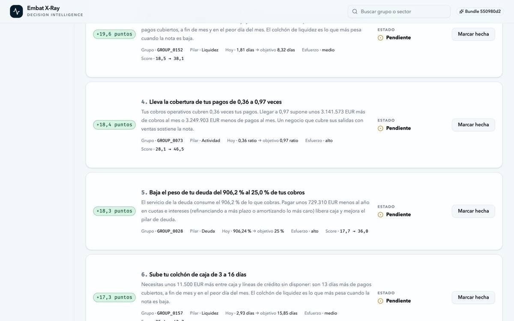
Fuente ·
src/lib/xray/action-list.svelte.
Qué es · El sistema que permite al analista marcar acciones como completadas y recordar esta decisión entre sesiones y entre distintas vistas (global y de entidad).
Cómo funciona El estado de las acciones se gestiona
íntegramente en el navegador del usuario, ya que el bundle JSON
es de solo lectura y la aplicación es estática. - La clase
ActionState
(src/lib/xray/action-state.svelte.ts) inicializa un
SvelteSet reactivo (#done) leyendo del
localStorage del navegador. - La clave de almacenamiento es
xray.actions.done.v1. - Durante la inicialización,
comprueba si está en el navegador
(import { browser } from '$app/environment') para evitar
errores de SSR, y parsea el JSON guardado
(JSON.parse(localStorage.getItem(STORAGE_KEY) ?? '[]')). -
Cada acción se identifica de forma única mediante una clave compuesta
generada por el método key:
${entityId}:${actionId}. Esto asegura que una misma acción
genérica no se marque como hecha accidentalmente para dos empresas
distintas. - Al pulsar el botón «Marcar hecha» o «Reabrir», el método
toggle comprueba si la clave existe en el
SvelteSet. Si existe, la elimina; si no, la añade. - Tras
la mutación, serializa el conjunto actualizado como un array JSON
(JSON.stringify([...this.#done])) y lo guarda en
localStorage. - Degradación elegante: Si
el localStorage está bloqueado (por políticas de privacidad
o modo incógnito estricto) o lleno, los bloques try/catch
tanto en el constructor como en el método toggle capturan
el error silenciosamente. El triaje seguirá funcionando en memoria de
forma reactiva durante la sesión actual, aunque no sobrevivirá a una
recarga de página.
Fuente ·
src/lib/xray/action-state.svelte.ts.
Qué es · El espacio de auditoría de la aplicación,
diseñado para explicar de forma determinista y transparente el origen de
cada cálculo del motor, la fiabilidad de los datos y las decisiones de
alerta. Dónde aparece · Se accede a través de la barra
lateral de navegación (ítem «Técnico») y su estado se refleja en la URL
mediante los parámetros ?tab=tecnico y
?focus=<id_grupo>. Anatomía · El
contenedor principal (technical-view.svelte) presenta una
cabecera con el epígrafe «Trazabilidad · [Mes]» (ej. «TRAZABILIDAD ·
AGOSTO DE 2026»), el título «Detalle técnico» y la descripción literal:
«De dónde sale cada punto del score, con qué datos, qué alertas disparó
o calló el motor y el recibo de la ejecución.». Cómo
funciona · La navegación se divide en tres subpestañas
controladas por el componente Tabs.Root y enlazadas al
parámetro de URL ?section=: 1. «Desglose y
evidencias» (?section=desglose): Pestaña activa
por defecto. Muestra la cascada matemática del score, la
confianza y los datos de origen. 2. «Alertas»
(?section=alertas): Bandeja de entrada de las alertas
evaluadas por el motor. 3. «Recibo»
(?section=recibo): Huella criptográfica y validación de la
ejecución del motor.
En la esquina superior derecha del área de contenido, alineado con
las pestañas, se ubica el componente focus-picker.svelte,
un menú desplegable etiquetado como «GRUPO» que permite al usuario
cambiar la entidad bajo análisis sin abandonar la vista técnica. Al
montar la vista, se disparan las promesas loadAlerts y
loadReceipt para alimentar las otras dos pestañas.
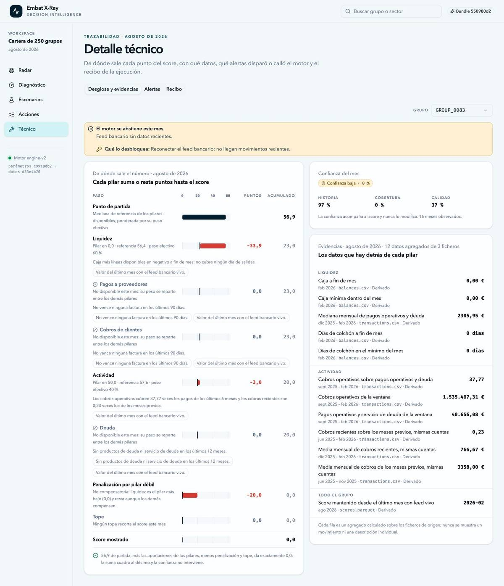
focus-frame.svelte)Qué es · Un componente envoltura que gestiona el
ciclo de vida de la carga de datos del grupo seleccionado para las
vistas que dependen de una entidad específica. Cómo
funciona · Evalúa la disponibilidad del grupo
(GroupFile) y extrae la entrada correspondiente al mes
seleccionado (EntityMonth) mediante
entryAt(focus.group.months, monthStore.month).
Estados y variantes: * Estado de carga
(loading): Mientras se resuelve
loadGroup, muestra una cuadrícula
(lg:grid-cols-[17rem_1fr]) con dos esqueletos animados
(Skeleton) de clase h-72 y el atributo
aria-label="Cargando grupo". * Estado de error
(error): Si el fichero no se puede leer o rompe el
contrato, renderiza un EmptyState con el icono
FileWarning en tono danger. El título es «No
se pudo leer [ID]» y la descripción inyecta el mensaje de la excepción
(focus.message). * Sin selección
(idle): Si no hay un grupo en foco, muestra un
EmptyState con el icono MousePointerClick.
Título: «Elige un grupo». Descripción: «Ningún grupo tiene score en este
mes.». * Mes sin datos: Si el grupo se ha cargado pero
entryAt devuelve null (la entidad no tiene
datos en el mes seleccionado en el MonthSlider), muestra un
EmptyState con el icono CalendarOff. * Título:
«Sin datos de [ID] en [Mes]» (ej. «Sin datos de GROUP_0001 en marzo de
2025»). * Descripción: «Su primer cierre observado es [Mes de inicio].
Elige otro mes u otro grupo.».
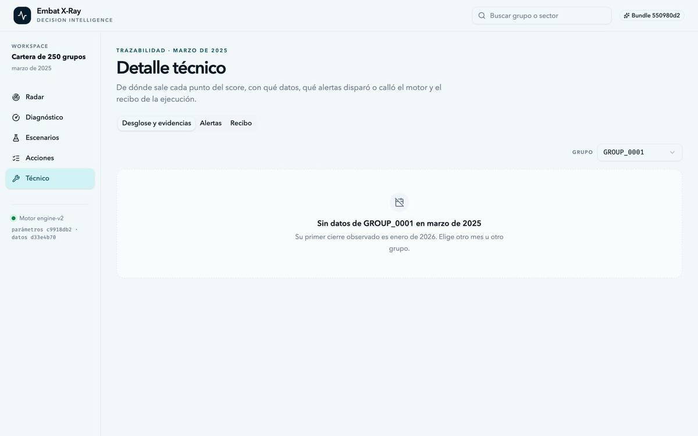
abstained-state.svelte)Qué es · Un banner de alerta destacado que aparece
en la parte superior del desglose cuando los datos de entrada no
alcanzan los requisitos mínimos para emitir un veredicto fiable
(entry.abstain !== null). Anatomía y
estilos · Utiliza el componente Alert.Root con
clases específicas para el tono de advertencia:
border-[var(--warning)]/40 bg-[var(--warning-soft)].
Incluye el icono PauseCircle y establece el atributo
data-abstain={abstain.reason}. Textos y
lógica: * Título: Por defecto es «El motor se
abstiene este mes». * Motivo: La descripción principal
traduce el código de la abstención extrayendo el texto legible desde el
manifiesto:
glossaryText(manifest, 'reasons', abstain.reason) (ej.
«Feed bancario sin datos recientes.»). * Desbloqueo: En
una segunda línea, precedida por el icono KeyRound en color
warning-strong, se muestra la acción correctiva literal
provista por el motor en abstain.unlock:
<span class="font-semibold">Qué lo desbloquea:</span> {humanizeMonths(abstain.unlock)}.

contribution-waterfall.svelte)Qué es · El componente central del desglose técnico.
Demuestra visualmente la identidad matemática exacta del score
calculada en explain.ts:
base + suma(contribuciones) - penalización - tope = score mostrado.
Dónde aparece · En la columna izquierda de la pestaña
«Desglose y evidencias». Anatomía · Una tarjeta
(Card.Root) con el epígrafe «De dónde sale el número ·
[Mes]» y el título «Cada pilar suma o resta puntos hasta el score». La
tabla interior usa una cuadrícula CSS
(md:grid-cols-[15rem_1fr_4.5rem_5rem]) con las cabeceras:
«Paso», un eje gráfico con marcas de escala, «Puntos» y «Acumulado».
Cómo funciona · Todo el motor y el frontend operan en
décimas enteras (integer tenths) para evitar errores de coma
flotante. La función waterfallSteps genera una matriz
secuencial calculando el inicio (start) y el fin
(end) de cada paso. El eje gráfico calcula sus límites
(bounds) añadiendo un margen (padding) al
valor mínimo y máximo de la cascada, y genera marcas
(ticks) dinámicas (en pasos de 10, 20, 50, 100, etc.)
formateadas con formatNumber(fromTenths(tick)).
| Paso | Clave | Comportamiento, textos y visualización |
|---|---|---|
| Punto de partida | base |
Etiqueta: «Punto de partida». Detalle:
«Mediana de referencia de los pilares disponibles, ponderada por su peso
efectivo». Se dibuja como una barra absoluta desde el inicio del eje
hasta su valor, en color oscuro (bg-[var(--ink)]). |
| Pilares (5) | liquidity,
payments, collections, activity,
debt |
Etiqueta:
pillarLabel(manifest, pillar.key).• Con datos: Detalle: «Pilar en [Score] · referencia [Base] · peso efectivo [w_eff %]». Si aporta ( delta > 0), la barra es
verde (bg-[var(--success)]); si resta
(delta < 0), es roja (bg-[var(--danger)]).
Debajo se listan las compuertas (gates) activadas como
pastillas (Badge), traduciendo sus códigos mediante
manifest.glossary.gates.• Sin datos ( muted): Detalle: «No disponible este mes: su peso
se reparte entre los demás pilares». El texto se atenúa, aparece el
icono CircleSlash y el impacto es 0,0. |
| Penalización | penalty |
Etiqueta: «Penalización por pilar
débil». • Aplica ( delta < 0):
Detalle: «No compensatoria: [Pilar más débil] es el pilar más bajo
([Score]) y resta aunque los demás compensen». Barra roja hacia la
izquierda.• No aplica ( delta === 0):
Detalle: «Sin penalización este mes». Fila atenuada
(muted). |
| Tope | cap |
Etiqueta: «Tope». • Aplica ( delta < 0): Detalle: «Una regla limita el
score máximo aunque el resto de pilares sea alto». Se listan las reglas
activadas (cap.fired) como pastillas, traducidas mediante
manifest.glossary.caps.• No aplica ( delta === 0): Detalle: «Ningún tope recorta el
score este mes». Fila atenuada. |
| Score mostrado | shown |
Etiqueta: «Score mostrado». Se dibuja como
un marcador absoluto oscuro (bg-[var(--ink)]) en la
posición final. La fila tiene un borde superior
(border-t pt-3). |
Auditoría matemática · Al pie de la tarjeta
(data-testid="waterfall-check"), un bloque verifica en
tiempo real que la brecha (waterfallGap(entry)) sea
exactamente cero: * Si cuadra (gap === 0):
Muestra el icono CircleCheck en color success.
Texto: «[Base] de partida, más las aportaciones de los pilares, menos
penalización y tope, da exactamente [Score]: la suma cuadra al décimo y
la confianza no interviene.». * Si no cuadra
(gap !== 0): Muestra el icono
TriangleAlert en color danger. Texto: «La suma
no cuadra por [Gap] puntos.». (Esto solo ocurre si el JSON del
bundle viola el contrato matemático).
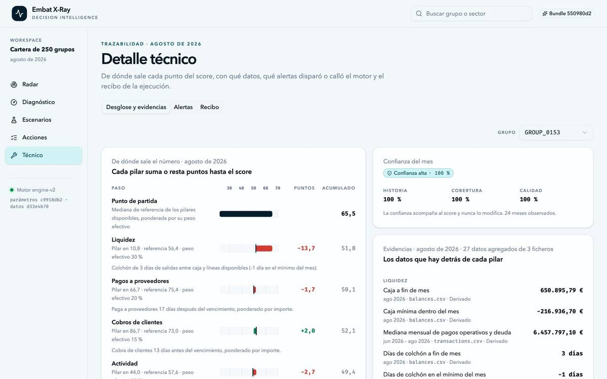
Qué es · Una tarjeta que desglosa la fiabilidad
estadística del dato. La confianza es un indicador de 0 a 100 % que
acompaña al score pero que nunca modifica su valor
numérico. Dónde aparece · En la parte superior
de la columna derecha de la pestaña «Desglose y evidencias».
Anatomía y textos: * Cabecera: Título
«Confianza del mes». A la derecha, el componente
ConfidencePill muestra el nivel cualitativo y el porcentaje
global (entry.conf.value). Usa los iconos
ShieldCheck (Alta, tono signal),
ShieldQuestion (Media, tono neutral) o
ShieldAlert (Baja, tono warning). Texto:
«Confianza [alta/media/baja] · [Valor %]». * Métricas
(Cuadrícula de 3 columnas): 1. «HISTORIA»:
Porcentaje basado en la profundidad de meses observados
(entry.conf.history). 2. «COBERTURA»:
Porcentaje basado en cuántos pilares tienen datos frente al total
posible (entry.conf.coverage). 3.
«CALIDAD»: Porcentaje que evalúa la limpieza del dato
(entry.conf.quality). Los valores se formatean con
formatPercent(valor, 0) y se muestran en tipografía
font-data en negrita. * Pie de tarjeta:
Texto explicativo: «La confianza acompaña al score y nunca lo modifica.
[N] [mes observado / meses observados].».
evidence-table.svelte)Qué es · Una tabla exhaustiva que expone los datos
crudos y agregados que alimentan los pilares. Cómo
funciona · Dado que el fichero de evidencias
(evidence/<id>.json) puede ser pesado, se carga de
forma perezosa (lazy loading) mediante
loadEvidence solo cuando el componente se monta.
Estados y variantes: * Cargando
(loading): Muestra 5 esqueletos rectangulares
(Skeleton) de clase h-8 w-full con el atributo
aria-label="Cargando evidencias". * Fichero ausente
(missing): Si el servidor devuelve 404 (ej. la
entidad no tiene evidencias exportadas), muestra un
EmptyState compacto con el icono FileX.
Título: «Este bundle no incluye evidencias de esta entidad».
Descripción: «Las filas de evidencia se exportan por entidad; el score y
los pilares de arriba no dependen de este fichero.». * Error de
red/parseo (error): Muestra un
EmptyState con el icono FileWarning en tono
danger. Título: «No se pudieron leer las evidencias».
Descripción: el mensaje de la excepción. * Mes sin
datos: Si el fichero existe pero entryAt devuelve
null para el mes actual, muestra un EmptyState
con el icono CalendarOff. Título: «Sin evidencias
exportadas para [Mes]». * Si el fichero tiene datos en otros meses:
Descripción: «El bundle guarda las evidencias de [Primer mes] a [Último
mes].». Incluye un botón interactivo «Ir a [Último mes]» que invoca a
monthStore.select() para saltar al último cierre
disponible. * Si el fichero está completamente vacío: Descripción: «El
fichero de evidencias de esta entidad está vacío.». * Sin
agregados: Si el array de filas está vacío para el mes, muestra
un EmptyState con el icono FileSearch. Título:
«Ningún dato agregado este mes». Descripción: «El motor no exportó filas
de evidencia para este cierre.».
Anatomía con datos (ready): *
Cabecera: Descripción dinámica: «Evidencias · [Mes] ·
[N] [dato agregado / datos agregados] de [N] [fichero / ficheros]».
Título: «Los datos que hay detrás de cada pilar». * Estructura
de la tabla: Las filas (EvidenceRow) se agrupan en
secciones (sections) siguiendo el orden del contrato
(PILLAR_KEYS), añadiendo una sección final para métricas a
nivel de entidad (cuyo título es «Todo el grupo» o «Toda la empresa»,
dependiendo de la prop kind). * Columnas:
1. «Dato»: Etiqueta descriptiva de la métrica
(row.label). 2. «Valor»: Alineado a la
derecha en tipografía tabular. Si la unidad es ratio y el
valor es numérico, usa formatRatio(row.value). Para el
resto, usa formatUnitValue(row.value, row.unit) (ej.
«650.895,79 €», «35,11 facturas»). 3. «Periodo»: Rango
temporal de los datos de origen, formateado por
formatEvidencePeriod (ej. «3 jun 2026 – 31 ago 2026»). 4.
«Fichero»: Nombre del archivo CSV original
(row.source_file), en tipografía monoespaciada gris (ej.
invoices.csv). 5. «Filas»: Número de
registros procesados. Si row.n_rows es null,
muestra el texto «Derivado». Si tiene valor, muestra «[N] [fila /
filas]». * Pie de tabla: Texto legal/técnico en gris:
«Cada fila es un agregado calculado sobre los ficheros de origen; nunca
se muestra un movimiento ni una descripción individual.».
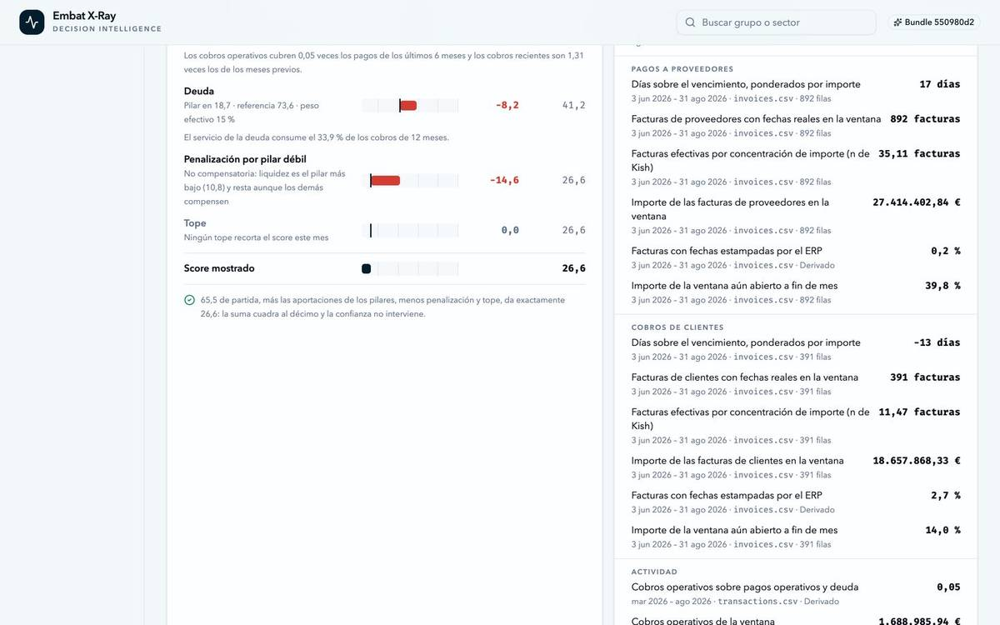
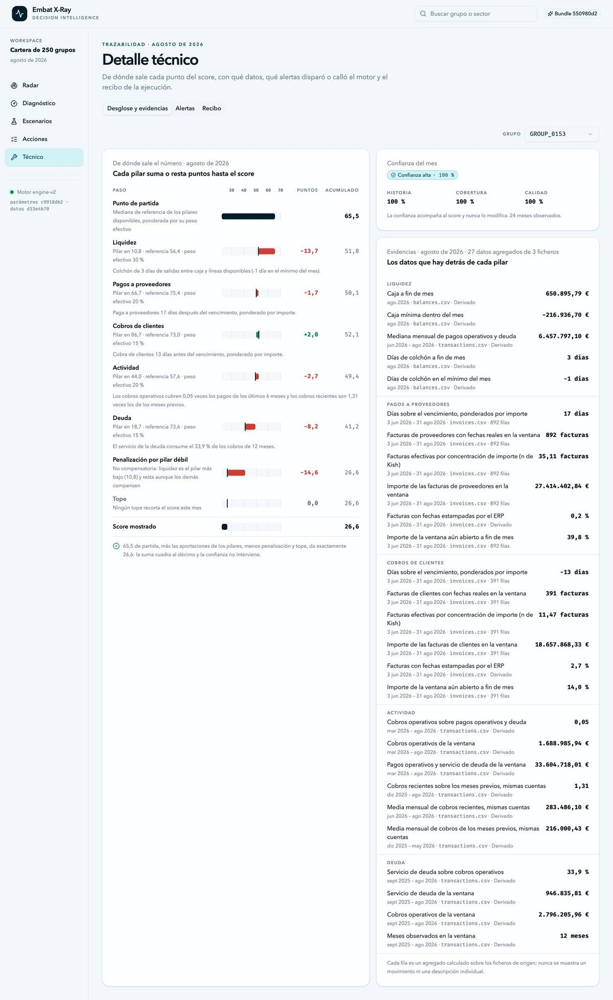
inline-bars.svelte)Qué es · Una primitiva técnica
(<ul>) que renderiza barras horizontales
proporcionales para comparar magnitudes. Aunque su uso principal recae
en la pestaña «Recibo» para mostrar distribuciones estadísticas, es un
componente base del ecosistema de trazabilidad. Anatomía y
estilos · Cada fila (<li>) utiliza una
cuadrícula
grid-cols-[minmax(4rem,7.5rem)_1fr_minmax(2.5rem,auto)] y
el atributo data-bar={bar.label}. Contiene: 1. La etiqueta
a la izquierda en color muted-foreground. 2. Una pista de
fondo (bg-muted/60) con una barra de relleno posicionada de
forma absoluta. El color de la barra depende de la prop
tone (por defecto signal, mapeado a través de
TONE_COLOR). 3. El valor numérico formateado a la derecha
en tipografía tabular-nums y font-semibold.
Cómo funciona · Recibe un array de objetos
{ label, value }. Calcula dinámicamente el valor mínimo
(low = Math.min(0, ...bars)) y máximo
(high = Math.max(0, max ?? 0, ...bars)) para establecer un
eje común. La posición de la barra se calcula mediante porcentajes:
left: {from}% y width: max(2px, {to - from}%).
Casos límite · Si el eje incluye números negativos
(low < 0), el componente dibuja automáticamente una fina
línea vertical (w-px bg-foreground/40) en la posición
exacta del cero (percent(0)), garantizando que las
longitudes de las barras positivas y negativas se comparen de forma
honesta.
La bandeja de alertas es el centro de notificaciones del motor de
scoring. Se encuentra en la pestaña «Alertas»
de la sección «Técnico» (ruta
/?tab=tecnico§ion=alertas). Su propósito es listar,
filtrar y permitir el triaje de todas las alertas generadas por el motor
para la cartera de grupos y empresas, incluyendo aquellas que el motor
decidió silenciar o no disparar por abstención.
La vista principal está gobernada por el componente
alerts-inbox.svelte, que orquesta los filtros, las
métricas, el gráfico temporal y el listado de tarjetas.

La cabecera de la sección presenta un texto introductorio
(page-lead) que resume el volumen total de alertas
evaluadas. Este texto se construye dinámicamente evaluando las alertas
que cumplen los filtros actuales (scoped) y se adapta a
cuatro escenarios posibles:
El [Período] varía según el alcance: «En [mes]» si se
mira un solo mes, o «Entre [mes inicial] y [mes final]» si se mira el
histórico.
A la derecha del texto introductorio y debajo de él, se despliegan
los controles para acotar la lista. La lógica de filtrado reside en la
función filterAlerts de alerts.ts.
scope): Un
ToggleGroup con
aria-label="Periodo de la bandeja".
history): Muestra
y contabiliza las alertas de todos los meses disponibles en el
bundle.month):
Restringe la vista al mes seleccionado. Al activar esta opción, aparece
inmediatamente debajo el componente MonthSlider para
navegar entre meses.query): Un campo
Input con type="search", el icono
Search, autocomplete="off" y el texto de
marcador de posición y aria-label «Buscar por grupo o
empresa». Filtra buscando coincidencias (ignorando mayúsculas y tildes
mediante normalizeText) en los campos
entity_id y group_id de cada alerta.entity): Un
ToggleGroup con
aria-label="Filtrar por tipo de entidad" y las opciones
«Todo» (all), «Grupos» (group) y «Empresas»
(company).kind): Un componente
Select con
aria-label="Filtrar por tipo de alerta". Muestra «Todos los
tipos» por defecto y despliega dinámicamente solo los tipos de alerta
que realmente existen en el bundle cargado
(kindsPresent).FilterX) si cualquiera de los tres
filtros anteriores tiene un valor distinto al de por defecto.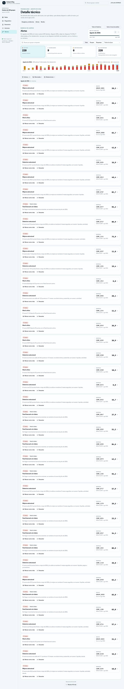
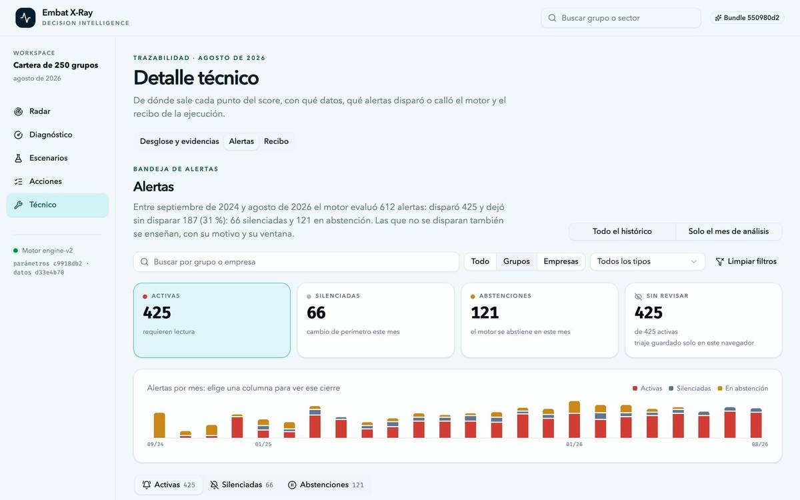
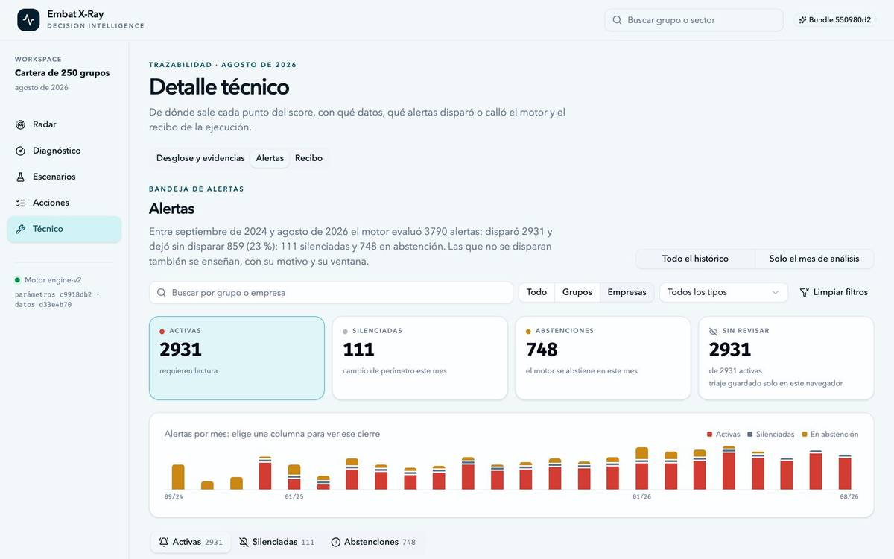
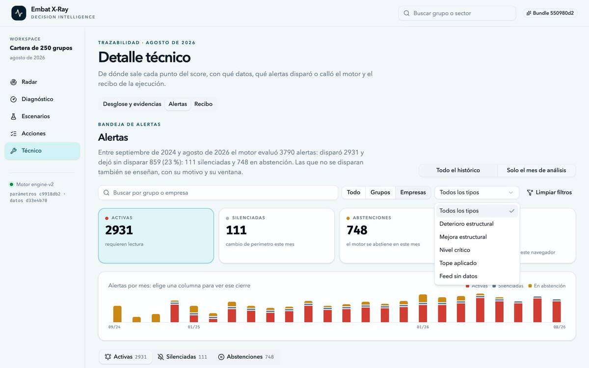
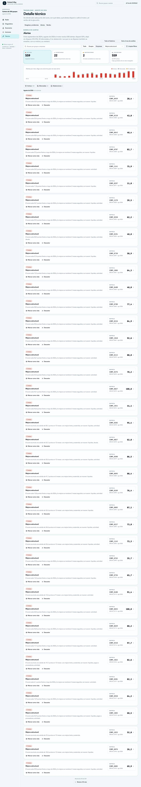
La correspondencia entre las claves del JSON
(ALERT_KINDS) y los textos mostrados en la interfaz
(ALERT_KIND_TEXT en contract.ts) es la
siguiente:
Clave en el bundle
(kind) |
Texto en la interfaz |
|---|---|
deterioration_structural |
«Deterioro estructural» |
improvement_structural |
«Mejora estructural» |
level_critical |
«Nivel crítico» |
cap_fired |
«Tope aplicado» |
stale_feed |
«Feed sin datos» |
Una cuadrícula de cuatro tarjetas (StatTile) muestra el
recuento de alertas según su estado (AlertState),
calculados mediante la función countByState sobre las
alertas que cumplen los filtros actuales. Las tres primeras actúan como
botones (pressed={tab === key}) que cambian la pestaña
activa del listado inferior.
fired): Alertas que el
motor ha disparado. Tono danger (rojo). Subtexto fijo:
«requieren lectura».suppressed): Alertas
generadas pero pausadas por el motor. Tono neutral
(gris).abstained): Alertas no
disparadas porque el motor no emite veredicto. Tono warning
(mostaza).Lógica de los subtextos dinámicos
(tileHint): Para las tarjetas de silenciadas y
abstenciones, el componente evalúa si todas las alertas de ese estado
comparten el mismo motivo de supresión
(suppressed_by.reason). Si es así, extrae el texto del
glosario del manifiesto, le quita el punto final y lo pone en minúsculas
(ej. «cambio de perímetro este mes»). Si hay varios motivos mezclados,
muestra «por varios motivos». Si no hay alertas, usa los valores por
defecto: «alertas en pausa» y «número visible, sin alerta».
EyeOff. Subtextos: «de [X] activa(s)» y «triaje guardado
solo en este navegador».alerts-timeline.svelte)A la derecha de las tarjetas KPI (o debajo en pantallas menores), se presenta un histograma que muestra la distribución de las alertas a lo largo de los meses del bundle.
monthlyCounts (alerts.ts) para generar un
array con los totales por estado para cada mes, incluyendo meses con
cero alertas.PLOT_HEIGHT), y las
demás columnas se escalan proporcionalmente al mes con mayor volumen
(peak). Cada columna apila visualmente los estados de abajo
hacia arriba: fired (rojo), suppressed (gris)
y abstained (mostaza). Si un mes no tiene alertas, se
renderiza un espacio vacío
(<span aria-hidden="true">).MM/AA mediante formatAxisMonth) solo se
imprimen para el primer mes, el último mes, los meses de enero (que
terminan en -01), y el mes que esté actualmente
seleccionado.bg-muted) y
el texto superior del gráfico (aria-live="polite") se
actualiza para describir el mes enfocado (ej. «Agosto de 2026 · 220
activas, 9 silenciadas, 0 en abstención»).onSelect, que cambia el alcance (scope) a
«Solo el mes de análisis» y selecciona ese mes en el
monthStore.Debajo del gráfico, un componente Tabs.Root permite
alternar el listado de alertas entre los tres estados principales.
BellRing), «Silenciadas [X]» (icono
BellOff) y «Abstenciones [X]» (icono
PauseCircle). En pantallas pequeñas (sm), los
iconos se ocultan.dismissedCount > 0), aparece un componente
Toggle a la derecha con el icono EyeOff y el
texto «Ver descartadas · [X]» para incluirlas en el listado.sortAlerts (mes más reciente primero, luego por grupo,
luego empresas, luego ID de alerta) y se agrupan visualmente por mes
mediante groupByMonth. Cada grupo mensual tiene un
encabezado con el mes (first-letter:uppercase) y un
contador pluralizado (ej. «Agosto de 2026 40 alertas»).PAGE_SIZE). Si hay más, aparece al final un
bloque con el texto «Mostrando [limit] de [total]» y un botón «Mostrar
[X] más» (con el icono ChevronDown) que incrementa el
límite visible.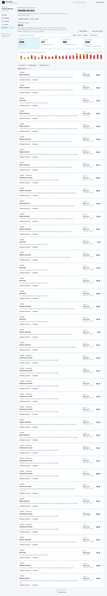
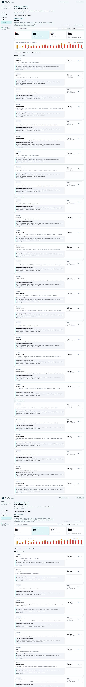
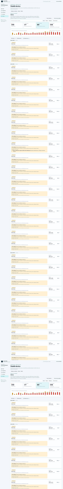
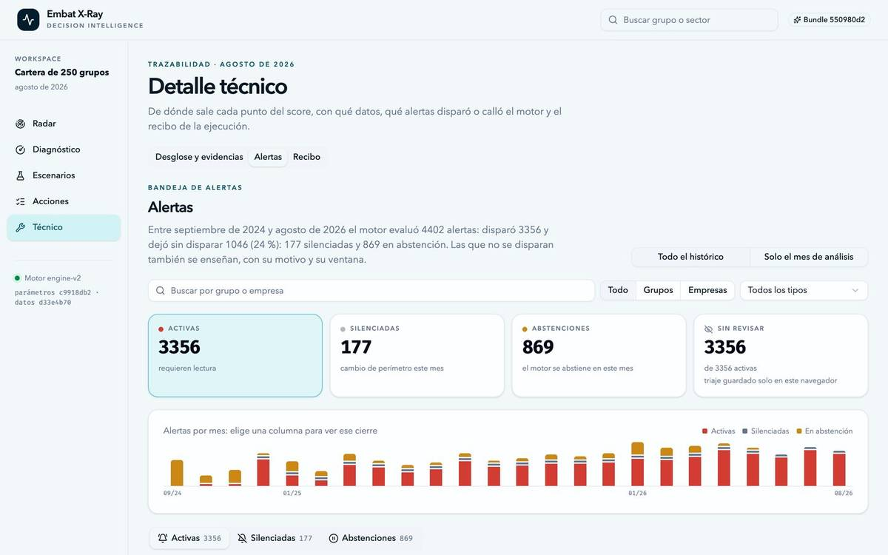
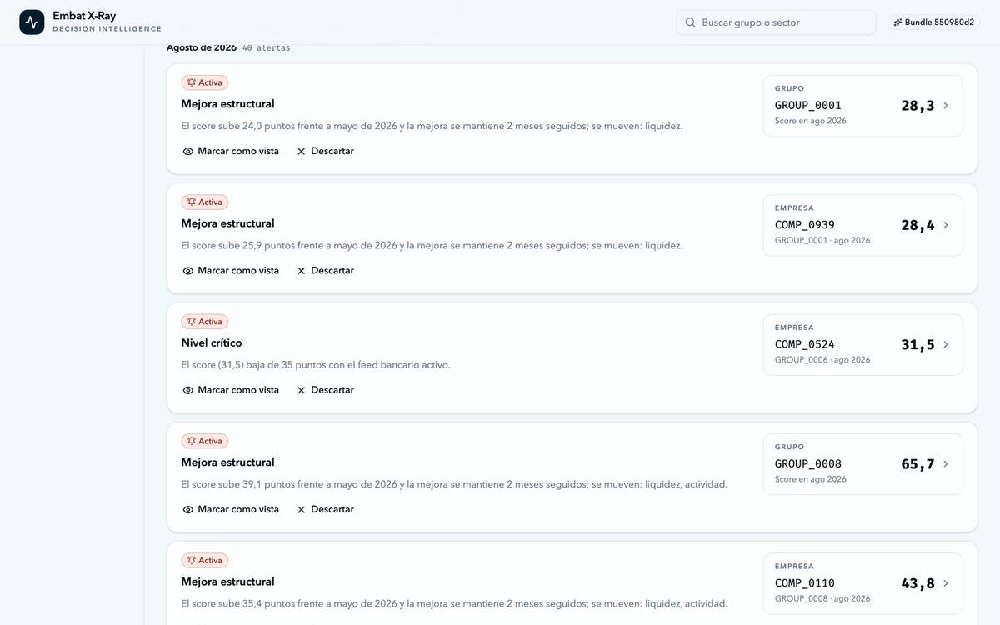

EmptyState)Si una pestaña no tiene alertas que mostrar, se renderiza el
componente EmptyState con un icono, un título y una
descripción que evalúa secuencialmente el contexto para dar la mejor
ayuda:
FilterX).Enlace al recibo: Específicamente en la pestaña de
«Abstenciones», al final del listado (o bajo el estado vacío), se
incluye un párrafo con el icono ReceiptText y un enlace
directo al recibo (/?tab=tecnico§ion=recibo),
explicando que allí se listan todas las entidades en abstención en el
último cierre y qué dato las desbloquea.
alert-card.svelte)Cada alerta se renderiza en una tarjeta dividida en dos columnas principales (en escritorio):
BellRing),
«Silenciada» (gris, BellOff) o «Abstención» (mostaza,
PauseCircle).ALERT_KIND_TEXT) difiere del título de la alerta.Check) o «Descartada» (gris,
EyeOff).alert.title) en negrita, seguido del detalle
(alert.detail). Las fechas en el detalle se formatean a
lenguaje natural mediante humanizeMonths (ej. «2025-09»
pasa a «septiembre de 2025»).suppressed_by, se muestra una caja con fondo tintado
(mostaza para abstenciones, gris para silenciadas) y un borde lateral
izquierdo más grueso.
manifest.glossary.reasons).perimeter_change, añade: «En [mes] se conectó una empresa o
una cuenta nueva: el salto del score refleja el perímetro nuevo, no un
deterioro del negocio. Las alertas quedan en pausa [hasta mes].». Si es
abstention, añade: «Con estos datos el motor no sostiene un
veredicto: enseña el número, pero no dispara la alerta.».!muted.until), dice «desde [mes]». Si
el inicio y fin son el mismo mes, dice solo «[mes]». Si son distintos,
dice «[mes inicio] – [mes fin]» (usando formatPeriodShort,
ej. «sep 2026»).receipt.abstentions si la
entidad sigue en abstención en el último cierre del bundle
(standingAbstention). Si es así, muestra el icono
KeyRound y el texto: «Sigue en abstención en [mes]. Qué la
desbloquea: [acción]». Si ya no lo está (y el recibo se pudo leer),
avisa: «En [mes], el último cierre, la entidad ya no está en
abstención.».fired.<a>) que apunta a la
ruta de la entidad (alertEntityPath), manteniendo el mes de
la alerta en la URL (?m=YYYY-MM). Al hacer hover,
el fondo se oscurece (hover:bg-muted).entity_id) con la clase font-data
(monoespaciada) que rompe palabras si es muy largo
(break-all), y un texto de contexto
(scoreCaption): si es empresa, muestra «[ID del grupo] ·
[mes corto]»; si es grupo, muestra «Score en [mes corto]».ScoreCell muestra la
puntuación en décimas (alert.shown), atenuada
(muted) si la alerta no está activa, junto a un icono de
chevron (ChevronRight).alert-state.svelte.ts)El triaje permite al analista gestionar su flujo de trabajo marcando
las alertas activas. Si una alerta tiene el estado
dismissed, toda su tarjeta recibe la clase
opacity-60.
localStorage bajo la clave
xray:alert-triage:v1. No se envía a ningún backend
ni modifica el bundle original. Si el almacenamiento está
bloqueado (modo privado estricto), el triaje funciona en memoria durante
la sesión actual.Triage):
seen («Vista») o dismissed («Descartada»). Si
no tiene marca, es null (nueva/pendiente).ghost de tamaño sm. Alterna el estado
seen. Mantiene la alerta en la lista principal pero
actualiza los contadores (resta 1 a «Sin revisar»). Usa los iconos
Eye y EyeOff.ghost con el icono
X. Asigna el estado dismissed. La alerta
desaparece inmediatamente de la vista principal (a menos que el botón
«Ver descartadas» esté activo).RotateCcw). Elimina la marca (null),
devolviéndola a la bandeja principal con opacidad normal.AlertTriage
escucha el evento storage del navegador
(window.addEventListener('storage', ...)), por lo que si el
usuario marca una alerta en una pestaña, el estado se actualiza en
tiempo real en otras pestañas abiertas de la misma aplicación.Qué es · Es la tercera pestaña de la vista «Detalle
técnico» (/?tab=tecnico§ion=recibo). Actúa como una
pista de auditoría y transparencia metodológica del motor de
Decision Intelligence, mostrando la huella criptográfica de la
ejecución, los resultados de la validación sin etiquetas, los pesos de
las señales utilizadas y el registro de abstenciones. Dónde
aparece · En el área principal de contenido de la vista técnica
cuando se selecciona la pestaña «Recibo». Fuente ·
src/lib/xray/receipt-view.svelte,
src/lib/xray/receipt-check-card.svelte,
src/lib/xray/receipt-signals.svelte,
src/lib/xray/receipt-abstentions.svelte, leyendo los datos
de receipt.json a través de loadReceipt.
Qué es · Un bloque que certifica que el recibo mostrado corresponde exactamente a los datos que se están visualizando en el resto de la aplicación.
Anatomía y funcionamiento · - Textos
introductorios: Epígrafe «Recibo», título «Por qué puedes
fiarte de este número» y el texto explicativo: «Un score solo vale si se
puede comprobar. Este recibo enseña con qué motor, parámetros y datos se
calculó esta exportación, qué pruebas supera sin usar etiquetas, qué
señales deja fuera y dónde prefiere no opinar.». - Tarjeta
«Huella de esta ejecución»: Muestra una lista de definición
(dl) con tres pares clave-valor extraídos de
receipt.json: - «Motor»: Versión del motor
(ej. engine-v2). - «Parámetros»: Hash
SHA-256 del archivo de parámetros (receipt.params_hash),
con la clase break-all para forzar el salto de línea. -
«Datos»: Hash SHA-256 del conjunto de datos
(receipt.dataset_hash), también con
break-all.
Lógica de validación y estados · El componente
receipt-view.svelte calcula la variable
sameRun comprobando que la versión del motor y los hashes
de parámetros y datos del recibo coinciden exactamente con los del
manifiesto (manifest). - Estado válido
(sameRun === true): Al pie de la tarjeta de la
huella, separado por un borde superior, aparece un icono
CircleCheck en tono success (verde) y el
texto: «Coincide con el bundle que ves en el resto de pantallas,
generado el [fecha].». La fecha se formatea con
formatTimestamp(manifest.generated_at) (ej. «1 sept 2026»).
- Estado de error (sameRun === false): Se
oculta el mensaje de éxito en la tarjeta y se renderiza un componente
Alert.Root con variant="destructive" debajo
del bloque de la huella. Muestra el icono TriangleAlert, el
título «El recibo no corresponde a este bundle» y la descripción: «La
versión del motor o las huellas del recibo no coinciden con las del
manifiesto: estas pruebas describen otra ejecución.».
Qué es · Una sección que expone los resultados de la
batería de pruebas de validación ejecutadas por el motor, listadas en
receipt.checks.
Anatomía del encabezado y KPIs · -
Epígrafe: «Pruebas sin etiquetas». - Título
dinámico (conclusion): Se calcula a partir de los
estados de las pruebas. Se define judged como la suma de
las pruebas superadas (pass) y no superadas
(fail). - Si judged === 0: «Esta exportación
no trae pruebas con veredicto». - Si no hay fallos
(counts.fail === 0): «La prueba con veredicto se supera»
(si judged === 1) o «Las [X] pruebas con veredicto se
superan» (si judged > 1). - Si hay fallos: «[X] de [Y]
pruebas con veredicto no se superan» (o «no se supera» en singular). -
Alertas de fallo: Si hay pruebas no superadas
(failed.length > 0), se listan sus títulos debajo del
encabezado en texto rojo (var(--danger-strong)): «No
superadas: [Título 1] · [Título 2]». - Tarjetas de
contadores: Cuatro métricas que agrupan las pruebas por su
estado (CheckStatus), utilizando los tonos definidos en
CHECK_STATUS_TONE y los textos de
CHECK_STATUS_TEXT: - «Superada»
(pass): Icono CircleCheck, tono
success (verde). Significado: «La propiedad se cumple». -
«No superada» (fail): Icono
CircleX, tono danger (rojo). Significado: «La
propiedad no se cumple». - «Informativa»
(info): Icono Info, tono signal
(turquesa). Significado: «Mide, no aprueba ni suspende». - «No
ejecutada» (not_run): Icono
CircleDashed, tono neutral (gris).
Significado: «Fuera de esta exportación». - El valor numérico se
formatea con formatNumber. Si el recuento es 0, el número
se muestra atenuado (text-muted-foreground).
Tarjetas de prueba
(receipt-check-card.svelte) · Cada prueba se
renderiza en una tarjeta individual en una cuadrícula: -
Cabecera: Muestra el icono correspondiente al estado,
el título de la prueba (check.title), una pastilla
(Badge) con el texto del estado y el tono correspondiente,
y la descripción (check.summary). - Métricas
(check.metrics): Lista de definición
(dl) con pares clave-valor. La función
display(metric) determina el formato: - Si el valor es una
cadena que coincide con una lista de meses separados por comas
(detectado mediante la expresión regular MONTH_LIST), se
hace un split, se aplica trim y se formatea
cada mes con formatPeriodShort, uniéndolos con « · » (ej.
«sept 2026 · oct 2026»). - Para el resto de valores, se usa
formatUnitValue(metric.value, metric.unit). -
Distribución (check.bars): Si la prueba
incluye un histograma, se renderiza usando el componente
InlineBars, mostrando el título «Distribución de
[check.title]» y barras horizontales proporcionales. - Variantes
visuales: - Si el estado es fail, la tarjeta
recibe un borde rojo (border-[var(--danger)]/40). - Si es
not_run, la tarjeta se muestra con borde discontinuo, fondo
translúcido y sin sombra
(border-dashed bg-card/60 shadow-none).
Estado vacío · Si el array
receipt.checks está vacío, se oculta la cuadrícula de
tarjetas y los contadores, y se muestra el componente
EmptyState con el icono FlaskConical, el
título «Este bundle se exportó sin ejecutar la validación» y la
descripción: «Ejecuta la batería de pruebas del motor y vuelve a
exportar: aquí aparecerá una tarjeta por prueba, con su resultado y sus
medidas.».
Qué es · El componente
receipt-signals.svelte divide la matriz de señales del
motor (receipt.signals) en dos bloques según su peso
(weight). El peso se formatea como porcentaje usando
share(weight): si el porcentaje es un número entero
(múltiplo de 10 en milésimas), no muestra decimales (ej. «30 %»); si no,
muestra un decimal (ej. «12,5 %»).
«Lo que sí entra en el número» (Señales con peso >
0) · - Cabecera: Indica el número de señales y
la suma total de sus pesos (ej. «5 señales con peso · suman 100 %»). -
Lista: Cada señal muestra su nombre
(signal.label) en negrita, su peso exacto alineado a la
derecha, una barra de progreso visual cuyo relleno
(bg-[var(--signal)]) es proporcional a su peso
(signal.weight * 100%), y la justificación técnica
(signal.why) en texto atenuado. - Estado
vacío: Si no hay señales con peso, muestra un
EmptyState con el icono Scale, el título
«Ninguna señal con peso» y la descripción «El recibo de esta exportación
no declara los pesos del score.».
«Señales que no usamos y por qué» (Señales con peso
0) · - Cabecera: Indica el número de señales
descartadas (ej. «6 señales con peso 0: no mueven el score de ningún
grupo»). El título de la tarjeta subraya la palabra «no» con el color de
señal (decoration-[var(--signal)]). -
Lista: Cada señal se presenta con un icono de
prohibición (Ban) en gris claro, su nombre en negrita, una
pastilla con borde que indica «Peso [X] %», y el texto explicativo
(signal.why) que justifica la exclusión (ej. «El patrón
mensual no se distingue del ruido con dos años de historia, así que no
se desestacionaliza.»). - Estado vacío: Si no hay
señales con peso 0, muestra un EmptyState con el icono
Ban, el título «Ninguna señal con peso 0» y la descripción
«Todas las señales que declara el motor entran en el score.».
Qué es · El componente
receipt-abstentions.svelte lista todas las entidades
(grupos y empresas) sobre las que el motor se ha abstenido de emitir un
veredicto en el último mes de la exportación, basándose en el array
receipt.abstentions.
Anatomía y funcionamiento · - Resumen
(summary): El subtítulo calcula dinámicamente
cuántos grupos y empresas están en abstención. Si todos los registros
pertenecen a un único mes, añade el periodo (ej. «Sin veredicto: 30
grupos y 157 empresas en agosto de 2026»). - Textos
introductorios: Título «Dónde nos abstenemos» y la descripción:
«Cuando los datos no alcanzan para defender un veredicto, el motor lo
dice en lugar de inventarlo: el número se sigue mostrando, no se
disparan alertas y queda escrito qué dato levanta la abstención.». -
Agrupación por motivo (byReason): Las
abstenciones se agrupan por su código de razón
(item.reason). Los bloques se ordenan de mayor a menor
cantidad de entidades afectadas, y en caso de empate, alfabéticamente
por el código de la razón. Dentro de cada bloque, las entidades se
ordenan por group_id, priorizando el grupo sobre sus
empresas, y finalmente por entity_id. - Cabecera
del bloque: Cada motivo se presenta en un contenedor con fondo
amarillo/ámbar (bg-[var(--warning-soft)]) y borde inferior.
Muestra el icono PauseCircle en tono
warning-strong, el texto del motivo traducido mediante el
glosario del manifiesto
(glossaryText(manifest, 'reasons', reason)), y una pastilla
(Badge) con el recuento de entidades afectadas (ej. «179
entidades»). - Tabla de entidades: - Columnas
(solo en escritorio): «Entidad» y «Qué lo desbloquea». -
Fila de entidad: - Enlace: Toda la
celda de la entidad es un enlace interactivo (con un chevron
> que se desplaza al hacer hover) que navega a la vista
de la entidad en ese mes específico mediante
monthStore.href(...). - Identificador:
Muestra el item.entity_id en negrita (ej. «COMP_0377»). -
Subtexto: Si es un grupo, indica «grupo»; si es una
empresa, indica «empresa de [group_id]». Si el array de abstenciones
contiene registros de múltiples meses, añade el mes formateado (ej. « ·
ago 2026»). - Columna de desbloqueo: Muestra un icono
de llave (KeyRound) en tono warning-strong y
el texto de la acción correctiva (item.unlock), procesado
por humanizeMonths para formatear correctamente cualquier
fecha mencionada (ej. «Reconectar el feed bancario: no llegan
movimientos recientes.»). - Paginación / Despliegue:
Para evitar listas inmensas, inicialmente solo se muestran las primeras
6 entidades de cada bloque (PREVIEW = 6). Si hay más,
aparece un botón en el pie del bloque: - Si está contraído: «Ver la
entidad restante» o «Ver las [X] entidades restantes» (ej. «Ver las 173
entidades restantes»). - Si está expandido: «Ver menos». - Al pulsarlo,
se alterna el estado en el diccionario
expanded[block.reason].
Estado vacío · Si no hay abstenciones en el último
cierre (abstentions.length === 0), se oculta la lista y se
muestra un EmptyState con el icono
CircleCheck, tono success, el título «Sin
abstenciones» y la descripción: «El motor emite veredicto para todas las
entidades en el último cierre de esta exportación.».
Qué es · Es el bloque superior fijo que identifica al grupo empresarial analizado, proporciona el contexto de su sector y tamaño, y permite la navegación temporal a través de los cierres mensuales disponibles en el bundle.
Dónde aparece · En la parte superior de la ruta
/group/[id], inmediatamente debajo de la cabecera global de
la aplicación. Está orquestado por el componente
src/lib/xray/entity-view.svelte.
Anatomía y textos literales · * Botón de
retroceso: Enlace con el icono ArrowLeft y el
texto literal «← Volver al radar» (pasado como prop
backLabel desde la ruta). * Metadatos del grupo
(Eyebrow): Texto en mayúsculas pequeñas. Se compone
dinámicamente en +page.svelte: «Grupo · [X] empresas · con
datos desde [mes formateado]» (ej. «Grupo · 6 empresas · con datos desde
septiembre de 2024»). Pluraliza correctamente: «1 empresa» o «X
empresas». * Identificación: * Avatar
(company-avatar.svelte): Círculo coloreado de
forma determinista según el nombre o ID, mostrando hasta dos iniciales
en mayúscula. * Título: Identificador del grupo
(group.id), por ejemplo, «GROUP_0153». * Pastilla
sectorial: Badge con estilo outline que
muestra el sector estimado y la confianza de la clasificación formateada
sin decimales: «[Sector] · [X] %» (ej. «Manufactura · 21 %»). El
atributo HTML title contiene el motivo de la clasificación
(industry.reason). * Selector temporal
(month-slider.svelte): Tarjeta ubicada a la
derecha. * Etiqueta superior: «Mes de análisis». * Mes seleccionado:
Formateado con formatPeriod (ej. «Agosto de 2026»). *
Botones de navegación: Flecha izquierda (ChevronLeft) con
aria-label="Mes anterior" y flecha derecha
(ChevronRight) con aria-label="Mes siguiente".
* Control deslizante (slider): Muestra en los extremos el
primer y último mes del bundle formateados con
formatPeriodShort (ej. «sept 2024» y «ago 2026»). * Botón
de retorno: Si el mes seleccionado no es el último disponible, aparece
el botón «Último cierre» con el icono History.
Cómo funciona · * El botón de retroceso utiliza
monthStore.href('/') para volver al radar manteniendo el
mes seleccionado en la URL mediante el parámetro
?m=YYYY-MM. * El MonthSlider lee y escribe en
la clase reactiva monthStore.svelte.ts. Al arrastrar el
slider o pulsar las flechas, se actualiza el estado global y la
URL (con un debounce de 200 ms). Esto provoca que la variable
derivada entry = entryAt(entries, monthStore.month) se
recalcule, actualizando instantáneamente todos los componentes de la
página.
Fuente ·
src/routes/(app)/group/[id]/+page.svelte,
src/lib/xray/entity-view.svelte,
src/lib/xray/month-slider.svelte.
Qué es · Banners informativos de ancho completo que aparecen justo debajo de la cabecera para advertir sobre situaciones excepcionales en el cálculo del score o cambios de tendencia detectados por el motor.
Estados y variantes · * Abstención del motor
(abstained-state.svelte): * Lógica:
Aparece si el objeto entry.abstain no es nulo (el motor no
tiene datos suficientes para emitir un veredicto). * Aspecto:
Componente Alert.Root con clases personalizadas para
aplicar el tono de advertencia
(border-[var(--warning)]/40 bg-[var(--warning-soft)]).
Icono PauseCircle. * Textos: Título por defecto
«El motor se abstiene este mes». La descripción muestra el motivo
traducido desde el manifiesto
(glossaryText(manifest, 'reasons', abstain.reason)), por
ejemplo, «Feed bancario sin datos recientes.». Debajo, precedido por el
icono KeyRound, el texto: «Qué lo
desbloquea: [texto de abstain.unlock formateado
con humanizeMonths]». * Señal detectada: *
Lógica: Aparece si entry.verdict.detected_since
tiene valor (el motor ha confirmado un cambio de trayectoria
estructural). * Aspecto: Componente Alert.Root con
tono de advertencia
(border-[var(--warning)]/35 bg-[var(--warning-soft)]).
Icono CalendarClock. * Textos: Título «Señal
detectada desde [mes formateado]». Descripción: «El cambio de
trayectoria acumula [X] [cierre/cierres] de persistencia.» (pluraliza
según verdict.persistence_months).
Fuente ·
src/lib/xray/entity-view.svelte,
src/lib/xray/abstained-state.svelte.
Qué es · El bloque visual principal
(entity-hero.svelte) que presenta la calificación
financiera del grupo en el mes seleccionado y su evolución histórica. Se
divide en dos tarjetas contiguas.
Anatomía y textos literales · * Pastilla de
tendencia: Muestra la dirección y naturaleza del veredicto. *
Lógica: Si verdict.available es falso, muestra
«Sin veredicto este mes». Si es verdadero, concatena
DIRECTION_TEXT y NATURE_TEXT (ej. «Deterioro ·
estructural»). * Aspecto: Usa el componente Badge.
Variante destructive si la dirección es
deteriorating, de lo contrario secondary.
Iconos: ArrowUpRight (mejora), ArrowDownRight
(deterioro), Minus (estable o cambio de perímetro). *
Gráfico radial (score-gauge.svelte): *
Lógica: El anillo se rellena proporcionalmente al
score (entry.shown / 10) usando un gradiente
cónico CSS. * Textos: Muestra el valor central formateado con
un decimal (formatNumber(rawScore, 1)), la etiqueta «Score»
y el diferencial respecto a hace 3 meses
(verdict.delta3 / 10) formateado con signo
(formatSigned). El diferencial aplica la clase CSS
positive o negative según su valor. *
Cuadrícula de métricas (2x2): * Confianza
(confidence-pill.svelte): Muestra el nivel (Alta,
Media, Baja) y el porcentaje (entry.conf.value) formateado
sin decimales. El color del badge y el icono
(ShieldCheck, ShieldQuestion,
ShieldAlert) dependen del nivel
(entry.conf.label). * Banda: Etiqueta
textual de la banda de riesgo (entry.band), traducida
mediante bandLabel (Crítico, Vigilancia, Estable, Sólido).
* Persistencia: Muestra [X] [mes/meses]
leyendo verdict.persistence_months. * Con
acciones: Si el cálculo de acciones arroja un objetivo
(targetTenths !== null), muestra el icono
Target y el score potencial formateado con un
decimal. Si no hay acciones, muestra un guion «—».
trajectory-chart.svelte)Anatomía y funcionamiento · * Selector de
métrica: Pestañas (ToggleGroup) para alternar la
serie temporal. Por defecto es «Score de salud». Si el bundle
incluye series adicionales en group.series (ej. «Caja a fin
de mes»), se añaden dinámicamente. El título de la tarjeta cambia a
«Trayectoria del score y objetivo con acciones» (si hay objetivo),
«Trayectoria del score» (si no lo hay), o al nombre de la serie activa
(ej. «Caja a fin de mes»). * Gráfico de líneas (SVG
personalizado): * Eje X: Meses del histórico
(trajectory.months), formateados como MM/AA
mediante la función interna shortMonth. * Serie
histórica: Línea continua (stroke: var(--signal)) que
une los valores observados. Los meses sin datos (null)
rompen la línea. El último punto observado se resalta con un círculo
hueco y su valor numérico. * Línea de cambio detectado: Si
existe changeIndex (derivado de
verdict.detected_since), se dibuja una línea vertical
discontinua naranja (stroke: var(--warning)) con la
etiqueta «Cambio detectado». * Proyección objetivo: Si hay un
score objetivo calculado, se dibuja una línea discontinua verde
(stroke: var(--success)) desde el último punto real hasta
un nodo verde final etiquetado como «Objetivo [valor]». *
Interacción (Hover): Al mover el cursor sobre el SVG
(onpointermove), se calcula el índice más cercano. Aparece
una línea vertical tenue, un punto resaltado y un tooltip
flotante absoluto que muestra el mes (añadiendo «(proy.)» si es futuro)
y el valor exacto formateado. * Formatos dinámicos: Si
se selecciona una serie monetaria (unidad EUR), el gráfico
formatea los valores del eje y del tooltip con
formatEuroCompact (ej. «+26,60 €») y ajusta los márgenes
(domain) dinámicamente.
Fuente ·
src/lib/xray/entity-hero.svelte,
src/lib/xray/score-gauge.svelte,
src/lib/xray/confidence-pill.svelte,
src/lib/xray/trajectory-chart.svelte,
src/lib/xray/entity-series.ts.
Qué es · Sección
(entity-actions.svelte) que lista las palancas operativas
que el grupo puede accionar para mejorar su score, calculadas
por el motor para el mes en curso.
Anatomía y textos literales · *
Encabezado: Eyebrow «Qué hacer ahora» y título
«Acciones para subir el score». * Banner de impacto:
Componente Alert.Root con clases
border-[var(--success)]/35 bg-[var(--success-soft)] y el
icono Sparkles. * Título: «Si sigues estas
acciones tu score pasaría de [actual] a [objetivo]» (formateados con un
decimal). * Descripción: «+[X] puntos en total. Cada acción
indica lo que suma por sí sola, recalculado por el motor con los datos
de [mes formateado]; los efectos no siempre se suman íntegros.». *
Lista de acciones (action-list.svelte):
Tarjetas ordenadas de mayor a menor impacto
(uplift_tenths). * Badge de impacto: Pastilla con
borde verde
(border-[var(--success)]/40 bg-[var(--success-soft)] text-[var(--success-strong)])
que muestra los puntos ganados formateados con signo (ej. «+5,0
puntos»). * Título: Numerado y con la instrucción directa
({index + 1}. {action.title}). * Descripción:
Texto detallado (action.detail) que cuantifica el esfuerzo
en euros o días. * Metadatos: Fila inferior con etiquetas en
gris y valores. Muestra el «Pilar» (pillarLabel), «Hoy» y
«objetivo» (formateados con formatNumber y su unidad),
«Esfuerzo» (action.effort), y la proyección individual del
«Score» («[actual] → [estimado]»). Nota: A diferencia de la vista
global de acciones, aquí no se muestra el enlace al grupo porque ya
estamos en su página. * Estado e interacción: Muestra la
etiqueta «Estado» y un indicador visual: «Hecha» (icono
Check verde) o «Pendiente» (icono CircleDot
amarillo). Un botón secundario permite alternar el estado («Marcar
hecha» o «Reabrir»). Este triaje se guarda localmente en el navegador
mediante la clase reactiva ActionState
(localStorage).
Estados y variantes · * Sin
acciones: Si el array de acciones está vacío, se muestra el
componente EmptyState con el icono ListChecks.
Título: «Sin acciones calculadas para este mes». Descripción: «El bundle
no trae acciones para [ID] en [mes formateado]: o el motor no encontró
palancas que suban el score, o esta exportación es anterior al cálculo
de acciones.».
Fuente ·
src/lib/xray/entity-actions.svelte,
src/lib/xray/action-list.svelte,
src/lib/xray/actions.ts.
Qué es · Sección
(pillar-drivers.svelte) que explica matemáticamente cómo se
construye el score del mes a partir de los cinco pilares
fundamentales.
Anatomía y lógica de ordenación · *
Encabezado: Eyebrow «De dónde sale el score»,
título «Qué aporta y qué resta». A la derecha, un botón «Ver detalle
técnico» (icono Wrench) que enlaza a la pestaña técnica del
grupo (/?tab=tecnico&focus=[id]). * Tarjetas de
pilares: Se muestran en una cuadrícula (grid) de
dos columnas. Se ordenan por el valor absoluto de su
contribución
(Math.abs(b.contrib) - Math.abs(a.contrib)), de modo que el
pilar que más mueve el score (ya sea sumando o restando)
aparece primero. * Anatomía de cada tarjeta: *
Cabecera: Texto gris «Pilar · [aporta/resta/no mueve] · peso
efectivo [X] %». El verbo se calcula dinámicamente según el signo de
contrib. A la derecha, el impacto en puntos
(contrib / 10) coloreado en verde (clase
positive) o rojo (clase negative) y formateado
con signo. * Barra de progreso: Componente
Progress. Su longitud es proporcional a la contribución del
pilar respecto a la contribución máxima absoluta de ese mes
(scale). El color de la barra de llenado es verde
(bg-[var(--success)]) o rojo
(bg-[var(--danger)]). * Métricas: Cuadrícula con
«Observado»
(driver.score === null ? 'Sin dato' : formatScore(driver.score))
y «Referencia» (obtenido de manifest.pillars.baseline). *
Explicaciones: Párrafo con el icono FileSearch que
muestra la nota del motor (driver.note). Debajo, se listan
como texto gris las reglas o compuertas lógicas que han saltado
(driver.gates), traducidas a lenguaje natural mediante
glossaryText(manifest, 'gates', gate).
Fuente ·
src/lib/xray/pillar-drivers.svelte.
Qué es · Tabla
(company-drilldown.svelte) que desglosa las filiales que
componen el grupo consolidado, mostrando su rol, su score
individual y su comportamiento de tesorería.
Anatomía y funcionamiento · *
Resumen: Subtítulo dinámico que cuenta el total de
empresas, cuántas tienen datos en el mes seleccionado y cuántas heredan
la liquidez de la matriz. Ejemplo: «22 empresas · 22 con datos en agosto
de 2026 · 4 heredan la liquidez del grupo». * Ordenación de la
tabla: Las empresas se ordenan de menor a mayor score
((a.score ?? Infinity) - (b.score ?? Infinity)). Las que no
tienen datos en el mes van al final. Los empates se rompen por orden
alfabético del ID. * Columnas: *
Empresa: Componente CompanyAvatar (genera
un color determinista basado en el nombre/ID y muestra hasta 2
iniciales). Nombre en negrita (company.id). * Papel
y tesorería: Muestra company.role (ej. «Filial
operativa») y, en texto menor gris, «Tesorería: [clase en minúsculas]».
Si no hay rol inferido, muestra «Sin papel inferido». * Score y
Banda: Componente ScoreCell (formatea a un
decimal) y BandBadge (pastilla coloreada según el tono de
la banda con un punto indicador). * Trayectoria
(score-sparkline.svelte): Minigráfico vectorial
(SVG) que dibuja la línea de tendencia de la empresa en toda la ventana
del bundle. * Línea: Trazo gris
(stroke-opacity="0.16" para el futuro, 0.62
para el pasado). Los meses sin datos rompen la línea. * Marcas de
perímetro: Líneas verticales que indican meses donde
perimeter_changed es true. * Punto actual: Círculo
relleno con el color de la banda actual
(TONE_COLOR[BAND_TONE[band]]). * Lectura de
tesorería: Si company.inherits_liquidity es true,
muestra un badge destacado («Hereda la liquidez del grupo» con
icono Landmark y tono signal). Debajo, el
texto explicativo del motor (company.truth) o «Sin lectura
de tesorería para esta empresa.». * Acción: Un chevron
(ChevronRight) a la derecha. Toda la fila tiene un efecto
hover (hover:bg-muted/40) y funciona como enlace
hacia la ruta /group/[id]/company/[companyId].
Estados y variantes · * Sin
empresas: Si el array group.companies está vacío,
muestra el componente EmptyState con el título «El bundle
no lista empresas para este grupo» y la descripción «El desglose aparece
cuando la exportación incluye los miembros del grupo.». *
Responsividad: En pantallas pequeñas
(< @4xl), la tabla se transforma en una lista de
tarjetas apiladas (ul.divide-y), manteniendo toda la
información e interactividad.
Fuente ·
src/lib/xray/company-drilldown.svelte,
src/lib/xray/score-sparkline.svelte.
Qué es · Tarjeta (profile-card.svelte)
que expone los atributos cualitativos y estructurales que el motor ha
deducido analizando la transaccionalidad del grupo, sin depender de
bases de datos externas.
Anatomía y lógica · * Resumen:
Subtítulo que indica cuántos atributos han podido ser inferidos (valor
distinto de null) frente al total disponible. Ejemplo:
«Quién es este grupo · 11 de 12 atributos inferidos». *
Cuadrícula de atributos: Matriz responsiva (hasta 4
columnas en pantallas grandes) que itera sobre
group.profile. * Cabecera del atributo: Muestra el
nombre (attribute.label) y un indicador visual de
cobertura (5 puntos circulares que se rellenan de color
var(--signal) proporcionalmente al valor
attribute.coverage de 0 a 1, acompañados del porcentaje
formateado sin decimales). El atributo title explica:
«Cobertura: parte de los datos necesarios que estaba disponible para
inferir este atributo». * Valor: Texto en negrita
(attribute.value). Si es null, se muestra en
gris con el texto «No inferible todavía». Si tiene unidad, se formatea
con formatUnitValue. * Evidencia: Texto menor en
gris (attribute.evidence) que explica exactamente qué datos
llevaron a esa conclusión (ej. «6 de 6 empresas en España.»). *
Bloque de Contexto: Recuadro inferior con borde
discontinuo y fondo bg-muted/30. Solo aparece si hay datos
de industria o benchmark. * Lleva la etiqueta «Contexto» (icono
BookOpen) y un badge aclaratorio: «No entra en el
score». * Muestra el sector estimado
(context.industry.label), la confianza de esa clasificación
(formatPercent(context.industry.confidence, 0)) y la razón
(context.industry.reason). * Si existe, muestra información
de benchmarks externos (context.benchmark.text y
context.benchmark.source).
Estados y variantes · * Sin perfil:
Si el array profile está vacío, muestra un
EmptyState con el título «El bundle no trae ficha para esta
entidad» y la descripción «La ficha se exporta con el perfil del motor;
vuelve a generar el bundle para verla.».
Fuente ·
src/lib/xray/profile-card.svelte.
(Esta sección es visible en la parte inferior de las capturas de grupo completo, como la 054).
Qué es · Pantallas o componentes de sustitución que aparecen cuando no hay datos para mostrar en el contexto solicitado o falla la carga del fichero JSON.
Estados y variantes · * Sin datos en el mes
seleccionado: * Lógica: El usuario navega a un mes
(vía URL o slider) en el que el grupo aún no existía o ya no reporta
datos (entryAt(entries, monthStore.month) devuelve
null). * Aspecto: Componente
EmptyState con el icono CalendarOff. *
Textos: Título «Sin datos de [id] en [mes formateado]». La
descripción informa de los límites reales de datos: «El primer cierre
observado es [mes] y el último, [mes].». * Interacción: Botón
«Ir al último cierre» que ejecuta
monthStore.select(lastMonth), actualizando la URL y
recargando la vista con datos válidos. * Error de carga del
grupo: * Lógica: Falla la promesa
loadGroup en +page.ts (el archivo JSON no
existe, devuelve 404, o está corrupto). El error se captura y redirige a
la página +error.svelte genérica de la aplicación. *
Aspecto: Pantalla completa con el componente
EmptyState. Icono FileWarning en tono
danger. * Textos: Título «No se pudo leer este
dato del bundle» (o «Esta página no existe» si es un 404 de ruta).
Descripción: Muestra el mensaje de error técnico capturado (ej. «El
bundle no contiene groups/GROUP_9999.json»). * Interacción:
Botón «Volver al radar» que enlaza a la raíz de la aplicación.
Fuente ·
src/lib/xray/entity-view.svelte,
src/routes/(app)/group/[id]/+page.ts,
src/routes/(app)/+error.svelte.
Qué es · Dónde aparece · Es la
vista de detalle analítico enfocada en una filial o empresa individual.
Reside en la ruta canónica /group/[id]/company/[companyId]
y proporciona el mismo nivel de profundidad diagnóstica que la vista de
grupo, pero acotada al perímetro de la entidad específica.
Anatomía y diferencias con la página de grupo · La
página delega el renderizado principal en el componente compartido
EntityView
(frontend/src/lib/xray/entity-view.svelte), por lo que la
estructura visual (tarjeta de score, gráfico de trayectoria, acciones
recomendadas, desglose de pilares y ficha inferida) es idéntica a la del
grupo. Sin embargo, presenta adaptaciones clave en su contexto y
navegación: * Botón de retroceso: En lugar de volver al
radar general, el botón superior izquierdo muestra el texto literal «←
Volver a [id del grupo]» (ejemplo: «← Volver a GROUP_0153») y enlaza
directamente a la ficha del grupo matriz mediante la función
monthStore.href, lo que preserva el mes seleccionado en la
URL. * Cejilla (Eyebrow): Es altamente específica y
contextual. Se construye dinámicamente concatenando cuatro elementos: la
palabra literal «Empresa», el identificador del grupo matriz («Grupo
[id]»), el rol de la empresa en el grupo (summary.role) y
su clasificación de tesorería (summary.treasury_class). El
código utiliza .filter(Boolean).join(' · '), por lo que si
la empresa carece de rol o clase de tesorería, esos segmentos se omiten
limpiamente. Un ejemplo real completo es: «EMPRESA · GRUPO GROUP_0153 ·
FILIAL OPERATIVA · AJUSTADA (MENOS DE 10 DÍAS DE SALIDAS)». *
Enlace técnico: El botón «Ver detalle técnico» (ubicado
sobre la sección de pilares) redirige a la vista técnica enfocada en el
grupo matriz (/?tab=tecnico&focus=[id del grupo]), ya
que la trazabilidad, las evidencias y el recibo de ejecución se evalúan
y muestran a nivel consolidado. * Ausencia de tabla de
filiales: Al tratarse del último nivel de desglose, la página
no pasa ningún bloque children al componente
EntityView, por lo que no se renderiza la tabla de empresas
del grupo que sí aparece en la vista matriz.
Fuente ·
frontend/src/routes/(app)/group/[id]/company/[companyId]/+page.svelte,
frontend/src/routes/(app)/group/[id]/company/[companyId]/+page.ts.
Qué es · Cómo funciona · Para
facilitar el acceso directo a una empresa sin necesidad de conocer de
antemano a qué grupo pertenece (por ejemplo, desde un enlace externo o
un buscador), la aplicación expone la ruta de conveniencia
/company/[id].
Lógica y estados · El archivo +page.ts
de esta ruta actúa como un interceptor puro: 1. Utiliza la función
loadCompany(fetch, params.id) para buscar el archivo JSON
de la empresa en el bundle. 2. Si lo encuentra, extrae la propiedad
group_id y ejecuta una redirección HTTP
307 Temporary Redirect hacia la ruta canónica
${base}/group/${company.group_id}/company/${company.id}${url.search},
preservando intactos los parámetros de URL (como el mes de análisis
?m=YYYY-MM). 3. Durante la fracción de segundo que puede
durar la redirección en el cliente, el componente
+page.svelte renderiza un EmptyState con el
título «Abriendo la empresa dentro de su grupo». 4. Si la empresa no
existe en el bundle, lanza un error HTTP 404 con el mensaje literal:
«Este bundle no incluye el detalle de [id]: abre la empresa desde la
página de su grupo.».
Fuente ·
frontend/src/routes/(app)/company/[id]/+page.ts,
frontend/src/routes/(app)/company/[id]/+page.svelte.
La página canónica de empresa maneja dos casos excepcionales relacionados con la topología del bundle exportado por el motor:
companies/ para ahorrar peso, incluyendo a las filiales
únicamente en el resumen tabular del grupo
(group.companies). En este escenario, la promesa
loadCompany se resuelve como null. El
componente +page.svelte intercepta esta ausencia y, en
lugar de renderizar el EntityView, muestra un contenedor
con el botón de retroceso y un estado vacío (EmptyState)
con el icono FileX.
companyId) no
coincide con ninguna de las filiales listadas en el array
group.companies del grupo especificado en la ruta, el
cargador de la página (+page.ts) rechaza la navegación.
+error.svelte), mostrando el icono
FileWarning en rojo y el botón «Volver al radar».Qué es · Discrepancia con el código
· El componente DebtProductsPanel existe en el código
fuente (frontend/src/lib/xray/debt-products-panel.svelte) y
está diseñado para mostrar los instrumentos de financiación activos. Sin
embargo, el código manda: este componente es
actualmente un elemento huérfano. No se importa ni se instancia en
EntityView, ni en la página de empresa, ni en la de grupo.
Además, los esquemas CompanyFile y GroupFile
del contrato de datos (contract.ts) no incluyen ninguna
matriz products que pueda alimentarlo. Se documenta aquí su
anatomía por exhaustividad técnica, ya que forma parte del código base
preparado para futuras extensiones del esquema.
Anatomía · Se presenta como una tarjeta
(Card.Root). * Cabecera: Icono
Landmark (edificio clásico), título «Financiación
contratada» y descripción «Productos de deuda activos en el cierre
actual.». * Estado vacío: Si la lista de productos está
vacía, muestra el texto «Sin productos de financiación registrados.» en
color gris atenuado. * Lista de productos: Si hay
datos, renderiza una lista (<ul>) con separadores
(divide-y). Cada fila muestra: * El logotipo de la entidad
bancaria (<img>). * El tipo de producto dentro de una
pastilla (Badge variante outline, ej.
type_label). * El nombre o alias del producto en negrita
(label). * El nombre del banco en texto secundario
(bank_name). * Una lista de definiciones
(<dl>) alineada a la derecha con los importes. Si
existe el valor granted, muestra «Concedido» y la cifra; si
existe outstanding, muestra «Pendiente» y la cifra.
Cómo funciona · * Resolución de
logotipos: El componente incluye una constante interna
BANK_DOMAINS que mapea subcadenas de texto a dominios web
reales para 14 entidades: Santander, CaixaBank, BBVA, Banco Sabadell,
Bankinter, Banca March, ING, Santander Consumer, Wizink, Evo Banco,
Unicaja, Kutxabank, Abanca e Ibercaja. * Lógica de
imagen: La función resolveBank normaliza el nombre
del banco a minúsculas y busca coincidencias. Si no encuentra ninguna,
usa el dominio de respaldo example.com. La URL de la imagen
se construye llamando al servicio de favicons de Google
(https://www.google.com/s2/favicons?domain=[dominio]&sz=32).
Si la carga de la imagen falla, un evento onerror oculta el
elemento (target.style.display = 'none') para evitar
mostrar un recuadro roto. * Formato numérico: Los
importes monetarios se formatean utilizando la función
formatEuroCompact, que abrevia cifras grandes (ej. «180
k€», «1,2 M€»). * Fuente:
frontend/src/lib/xray/debt-products-panel.svelte.
La aplicación, al ser una SPA estática que lee ficheros JSON exportados por el motor, gestiona la ausencia de datos, los tiempos de red y los errores de contrato mediante un sistema unificado de componentes de retroalimentación.
empty-state.svelte)Qué es · El componente universal para representar
estados vacíos, búsquedas sin resultados o errores de lectura de
ficheros específicos. Dónde aparece · En cualquier
vista, tarjeta o tabla donde falten los datos esperados o la interacción
del usuario devuelva un conjunto vacío. Anatomía ·
Contenedor centrado con borde discontinuo (border-dashed) y
fondo translúcido (bg-card/60). Incluye un icono circular,
un título en negrita, una descripción opcional en gris y un espacio para
botones de acción (children). Estados y
variantes · - tone: Define el color del icono y su
fondo (neutral, success, danger,
warning, signal). Se mapea mediante los
diccionarios TONE_TEXT y TONE_DOT de
src/lib/xray/tones.ts. - compact: Si es
true, reduce el relleno (px-4 py-6 y
gap-2) para encajar dentro de tarjetas o tablas; si es
false, usa el tamaño holgado para páginas completas
(px-6 py-12 y gap-3). Fuente
· src/lib/xray/empty-state.svelte.
abstained-state.svelte)Qué es · Una alerta destacada que explica por qué el
motor no ha emitido un veredicto para una entidad en un mes concreto.
Dónde aparece · En la cabecera de las vistas de
Diagnóstico, Escenarios y Desglose técnico cuando la propiedad
entry.abstain del mes evaluado no es nula.
Anatomía · Usa el componente Alert.Root
con fondo y bordes amarillos
(border-[var(--warning)]/40 bg-[var(--warning-soft)]).
Muestra el icono de pausa (PauseCircle), el título por
defecto «El motor se abstiene este mes», la razón traducida y la acción
necesaria para desbloquearlo (precedida por el icono
KeyRound). Cómo funciona · Lee
abstain.reason y busca su texto en el diccionario del
manifiesto mediante
glossaryText(page.data.manifest, 'reasons', abstain.reason).
Muestra la propiedad abstain.unlock procesada por la
función humanizeMonths para formatear las fechas que el
motor devuelve en formato YYYY-MM a texto natural (ej.
«septiembre de 2026»). Fuente ·
src/lib/xray/abstained-state.svelte.
focus-frame.svelte)Qué es · Un enrutador de estados interno para las
vistas que dependen de la carga asíncrona de un grupo específico
(Diagnóstico, Escenarios, Técnico). Cómo funciona ·
Recibe un objeto FocusState que determina qué renderizar: -
ready: Si el grupo está cargado, busca el mes seleccionado
mediante entryAt(focus.group.months, monthStore.month). Si
el mes existe, renderiza el contenido (children); si no,
muestra un EmptyState indicando la falta de datos
temporales. - loading: Muestra los esqueletos de carga. -
error: Muestra un EmptyState con el mensaje de
error de la promesa rechazada. - idle: Muestra un
EmptyState pidiendo al usuario que seleccione un grupo.
Fuente ·
src/lib/xray/focus-frame.svelte.
Dado que la aplicación carga ficheros JSON bajo demanda (grupos,
empresas, evidencias), utiliza esqueletos animados
(Skeleton con la clase animate-pulse y fondo
bg-accent) para mantener la estructura visual mientras se
resuelven las promesas de red (fetch).
lg:grid-cols-[17rem_1fr]) con dos bloques
grises de altura h-72.h-28.h-8 w-full.h-72 mientras se descargan y
parsean alerts.json o receipt.json.(Nota: La captura
074-diagnostico-error-cargando-grupo.jpg muestra
visualmente el estado ready con los datos cargados
correctamente, lo que demuestra que el sistema se recupera de fallos
transitorios o que la captura documenta el éxito posterior a una
carga).
La gestión de errores de red o de incumplimiento de contrato de datos
recae sobre la clase BundleError
(src/lib/xray/bundle.ts), que clasifica los fallos en
missing (código 404), invalid (fallo de
validación del esquema Zod) o network (código 500 o fallo
de red). Estos errores son capturados por el enrutador de SvelteKit y
renderizados en páginas de error dedicadas.
+error.svelte en la raíz)Qué es · La página de error de nivel superior.
Captura fallos críticos al cargar el manifest.json (sin el
cual la aplicación no puede arrancar) o navegaciones a rutas
completamente inexistentes fuera del contexto de la app. Lógica
y textos literales · - Si
page.status === 404: Muestra un
EmptyState con el icono SearchX. Título: «Esta
página no existe». Descripción: «La dirección no corresponde a ninguna
pantalla. La cartera de grupos es el punto de entrada a todo lo demás.».
Botón: «Ir a la cartera» (navega a base/). - Si es
fallo de bundle (ej. 500): Muestra un EmptyState
con el icono FileWarning y tono danger.
Título: «No se pudo cargar el bundle de datos». Descripción: Compone el
mensaje del error (page.error?.message) seguido de «La
aplicación solo muestra lo que exporta el motor en /data/v1; sin ese
bundle no hay nada que enseñar.». Botón: «Reintentar» (ejecuta
window.location.reload()).
(app)/+error.svelte)Qué es · Captura errores de carga de datos dentro de
la interfaz de la aplicación, manteniendo el layout principal intacto.
Ocurre al intentar acceder a un fichero JSON de grupo o empresa que no
existe en el bundle. Lógica y textos literales · Usa un
EmptyState con el icono FileWarning y tono
danger. - Si
page.status === 404: Título «Esta página no
existe». - Otros errores (BundleError):
Título «No se pudo leer este dato del bundle». La descripción inyecta el
mensaje exacto del error (ej. «El bundle no contiene
groups/GROUP_9999.json»). - Interacción: Botón «Volver
al radar» que navega a la raíz manteniendo el mes seleccionado mediante
monthStore.href('/').
group/[id]/company/[companyId]/+page.ts)Qué es · Un error 404 forzado desde el
servidor/cliente si se intenta acceder a una empresa que existe en el
bundle, pero que no pertenece al grupo indicado en la URL.
Lógica y textos literales · Lanza un
error(404) con el mensaje: «La empresa [COMP_ID] no
pertenece al grupo [GROUP_ID].», que es capturado y renderizado por
(app)/+error.svelte.
radar-view.svelte)query) no coincide con el ID, sector o
país de ningún grupo en la tabla (filtered.length === 0).
EmptyState con variante
compact e icono SearchX.focus-frame.svelte /
entity-view.svelte): Se dispara cuando el mes
seleccionado en el monthStore no tiene un registro
correspondiente en el array months de la entidad cargada.
focus-frame).monthStore.select(lastMonth).EmptyState con icono
CalendarOff.group/[id]/company/[companyId]/+page.svelte): Se
dispara cuando la promesa loadCompany devuelve
null (el bundle no incluye la carpeta
companies/), pero la empresa sí figura en el resumen del
grupo.
EmptyState con icono
FileX.profile-card.svelte): Se dispara si el array
profile de la entidad está vacío.
EmptyState con variante
compact.company-drilldown.svelte): Se dispara si el array
companies del grupo está vacío
(rows.length === 0).
EmptyState con variante
compact.scenario-view.svelte): Se dispara si el array
actions devuelto por entryActions(entry) está
vacío.
EmptyState con icono
ListChecks.entity-actions.svelte): Se dispara si
actions.length === 0 o el objetivo calculado es
null.
EmptyState con icono
ListChecks.actions-view.svelte): Se dispara si tras leer los
grupos con peor score, el array resultante top está vacío.
EmptyState con icono
ListChecks.loadGroup fallan, muestra un Alert.Root
destructivo con el título «[formatNumber(status.failed)] grupos no se
pudieron leer» y la descripción «Sus acciones no figuran en esta
lista.».evidence-table.svelte)Este componente gestiona cuatro estados de excepción distintos
basados en la resolución de loadEvidence:
status.state === 'missing'): Lanza un
BundleError de tipo missing.
EmptyState compacto con icono
FileX.status.state === 'error'): Falla el parseo Zod o
la red.
status.message).EmptyState compacto con icono
FileWarning y tono danger.rows === null): El fichero existe, pero no tiene
entrada para el mes seleccionado.
covered.length > 0), la descripción es «El bundle
guarda las evidencias de [formatPeriod(covered[0])] a
[formatPeriod(covered[covered.length - 1])].» y muestra un botón «Ir a
[formatPeriod(último_mes)]» que ejecuta
monthStore.select(). Si está totalmente vacío, la
descripción es «El fichero de evidencias de esta entidad está
vacío.».EmptyState compacto con icono
CalendarOff.rows.length === 0): El mes existe pero no
contiene filas.
EmptyState compacto con icono
FileSearch.alerts-inbox.svelte)La bandeja de alertas gestiona estados vacíos complejos dependiendo
de la pestaña activa (tab), el alcance temporal
(scope) y los filtros aplicados
(filtered).
listed.length === 0): Se dispara cuando la
combinación de estado y filtros no devuelve resultados.
TAB[key].empty), añadiendo « en [formatPeriod(month)]» si
el alcance es mensual.
fired: «El motor no disparó ninguna alerta»suppressed: «El motor no silenció ninguna alerta»abstained: «Ninguna alerta quedó sin disparar por
abstención»inTab.length > 0): Descripción «Todas las
alertas activas de este periodo están descartadas en este navegador.».
Botón «Ver descartadas» (activa showDismissed = true).filtered es true):
Descripción «Ninguna alerta coincide con los filtros. Límpialos o amplía
el periodo.». Botón «Limpiar filtros» con icono FilterX
(ejecuta clearFilters()).scope === 'month'):
Descripción «Elige otro mes en la línea temporal o amplía la bandeja a
todo el histórico.». Botón «Ver todo el histórico» (cambia
scope a 'history').EmptyState con el icono
correspondiente a la pestaña (BellRing,
BellOff, PauseCircle).receipt-view.svelte)El recibo audita la ejecución y muestra estados vacíos o de error si las validaciones o señales no están presentes.
!sameRun):
Se dispara si engine_version, params_hash o
dataset_hash no coinciden exactamente con los del
manifest.json.
Alert.Root con
variante destructive e icono
TriangleAlert.receipt.checks.length === 0):
EmptyState con icono
FlaskConical.weighted.length === 0):
EmptyState compacto con icono
Scale.unweighted.length === 0):
EmptyState compacto con icono
Ban.abstentions.length === 0):
EmptyState compacto con icono
CircleCheck y tono success.| Contexto / Pantalla | Condición | Componente visual | Texto principal / Comportamiento |
|---|---|---|---|
| Global | Falla carga de
manifest.json |
+error.svelte (raíz) |
«No se pudo cargar el bundle de datos» + Botón «Reintentar». |
| Global | Ruta inexistente (404) | +error.svelte (raíz) |
«Esta página no existe» + Botón «Ir a la cartera». |
| App | Falla carga de JSON de entidad | +error.svelte (app) |
«No se pudo leer este dato del bundle» + Ruta del fichero. |
| App | Empresa no pertenece al grupo | +error.svelte (app) |
«La empresa [X] no pertenece al grupo [Y].» |
| Cualquier vista | Carga de datos en curso | Skeleton |
Bloques grises con animación de pulso
(animate-pulse). |
| Radar | Búsqueda sin coincidencias | EmptyState |
«Ningún grupo coincide con la búsqueda». |
| Entidad (Grupo/Empresa) | Mes seleccionado sin datos | EmptyState |
«Sin datos de [ID] en [Mes]» + Botón al último cierre. |
| Empresa (Ruta directa) | Falta carpeta companies/ |
EmptyState |
«Este bundle no incluye el detalle de [ID]» + Botón al grupo. |
| Diagnóstico / Escenarios | Motor no emite veredicto | AbstainedState |
Alerta amarilla: «El motor se abstiene este mes» + Motivo. |
| Escenarios / Acciones | Sin acciones en el JSON | EmptyState |
«Sin acciones con las que construir un escenario / calculadas». |
| Técnico > Evidencias | Fichero evidence no
existe |
EmptyState |
«Este bundle no incluye evidencias de esta entidad». |
| Técnico > Evidencias | Mes sin evidencias | EmptyState |
«Sin evidencias exportadas para [Mes]». |
| Técnico > Alertas | Filtros muy restrictivos | EmptyState |
«Ninguna alerta coincide con los filtros.» + Botones dinámicos. |
| Técnico > Recibo | Hashes no coinciden | Alert (Destructive) |
«El recibo no corresponde a este bundle». |
| Técnico > Recibo | Sin validaciones ejecutadas | EmptyState |
«Este bundle se exportó sin ejecutar la validación». |
La interfaz de Embat X-Ray está construida bajo un enfoque
mobile-first utilizando las utilidades de Tailwind CSS. La
adaptación a diferentes tamaños de pantalla no depende de redirecciones
ni de vistas separadas, sino de una reorganización fluida del DOM basada
en media queries estándar y container queries para
componentes aislados. El código fuente
(frontend/src/lib/xray/) y las primitivas de interfaz
(frontend/src/lib/components/ui/) dictan el comportamiento
exacto.
Los puntos de ruptura (breakpoints) clave que determinan los
cambios estructurales son: - sm (640 px):
Transición de elementos compactos en móvil. Oculta textos en pestañas
para dejar solo iconos (hidden sm:inline) y muestra
elementos secundarios como la pastilla del bundle
(hidden sm:flex). - md (768
px): Punto de inflexión para la visualización de datos
tabulares. Por debajo de este ancho, las tablas HTML nativas se ocultan
(hidden md:block) y se transforman en listas de tarjetas
apiladas (divide-y md:hidden). También reorganiza el
gráfico de cascada (md:grid-cols-[15rem_1fr_4.5rem_5rem]).
- lg (1024 px - Tablet): Punto de ruptura
principal para el layout global. A partir de aquí se muestra la
barra lateral izquierda (lg:block) y se habilitan las
cuadrículas de dos columnas para el contenido principal
(lg:grid-cols-2, lg:grid-cols-[17rem_1fr]). -
xl (1280 px) y 2xl (1536 px):
Expansión de cuadrículas en monitores grandes, como el desglose técnico
(xl:grid-cols-[minmax(0,6fr)_minmax(0,5fr)]) o las tarjetas
de pruebas del recibo (2xl:grid-cols-3). -
@container (Container queries): Utilizados
en componentes reutilizables para que su diseño dependa del espacio
disponible en su contenedor padre y no del ancho total de la ventana. Se
aplica en evidence-table.svelte (@2xl:block),
company-drilldown.svelte (@4xl:block) y
profile-card.svelte
(@lg:grid-cols-2 @4xl:grid-cols-3 @6xl:grid-cols-4).
La estructura principal de la aplicación
(xray-dashboard.svelte) sufre una transformación radical
entre la vista de escritorio/tablet y la vista móvil.
En 1024 px, la aplicación mantiene el paradigma de escritorio. La
barra lateral izquierda (<aside>) está visible
(class="hidden min-h-[calc(100vh-4rem)] border-r px-3 py-6 lg:block"),
ocupando un ancho fijo dentro de la cuadrícula principal
(lg:grid-cols-[13rem_1fr]). - Muestra la etiqueta
«WORKSPACE», el título «Cartera de {manifest.counts.groups} grupos» y el
mes activo formateado con formatPeriod(monthStore.month). -
Las pestañas de navegación se renderizan verticalmente
(orientation="vertical"). - El pie muestra el estado del
motor (manifest.engine_version) y los hashes
truncados con shortHash(manifest.params_hash, 8). - La
cabecera superior muestra el logotipo completo, el buscador global (con
el placeholder «Buscar grupo o sector») y, en el extremo
derecho, la pastilla identificadora del bundle con el texto
«Bundle {shortHash(manifest.bundle_id, 8)}»
(hidden sm:flex).
Al descender de los 1024 px (< lg), la barra lateral
desaparece por completo. Para mantener la navegación entre los módulos,
el menú se transforma en una barra horizontal de iconos situada
inmediatamente debajo de la cabecera
(<Tabs.List class="mb-6 grid h-auto grid-cols-5 lg:hidden">).
- Las etiquetas de texto de las pestañas desaparecen
(<span class="hidden sm:inline">{tab.label}</span>),
dejando únicamente los iconos de lucide-svelte (Radar,
CircleGauge, FlaskConical, ListChecks, Wrench). - La pastilla del
bundle en la cabecera se oculta (hidden sm:flex)
para maximizar el espacio del buscador. - El buscador global reduce su
ancho pero mantiene su funcionalidad. Al recibir el foco
(onfocus), si hay coincidencias
(matches.length > 0), despliega los resultados en una
capa flotante (<ul role="listbox">) que superpone la
tabla principal. Cada resultado muestra el identificador
(row.id), el sector
(row.group.industry ?? 'Sin sector') y el score formateado
(formatScore(row.shown)). Al pulsar Enter o hacer
clic en un resultado, se ejecuta openGroup(row.id),
actualizando la URL y la vista.
La pantalla principal de entrada (radar-view.svelte)
adapta su densidad de información según el dispositivo.
La cabecera mantiene el título «Radar financiero» y el selector
temporal (MonthSlider) alineados. Las tarjetas de métricas
superiores se disponen en una cuadrícula de tres columnas
(md:grid-cols-3): - «Salud de la cartera» ocupa una columna
(md:col-span-1), mostrando el gráfico radial con la mediana
(summary.median / 10) y el desglose de estados («EN
DETERIORO», «EN MEJORA», «SIN VEREDICTO») calculados mediante
summarize(rows). - «Trayectoria consolidada» ocupa dos
columnas (md:col-span-2), mostrando el gráfico de líneas
con el histórico de medianas (trajectory). - La lista de
grupos se renderiza como una tabla HTML nativa
(<div class="hidden md:block"> con
<Table.Root>).
<a>
separados por bordes
(<div class="divide-y md:hidden">). Cada fila se
convierte en una tarjeta interactiva con
href={href(row)}.CompanyAvatar), el identificador
(row.id), el conteo de empresas pluralizado
(«{formatNumber(row.group.n_companies)} {row.group.n_companies === 1 ?
‘empresa’ : ‘empresas’}»), el sector (row.group.industry) y
la pastilla de señal (signal(row)). A la derecha, alinea el
score (formatScore(row.shown)), la trayectoria
(formatScoreDelta(row.delta)) y, si aplica, el conteo de
alertas («{formatNumber(row.fired)} {row.fired === 1 ? ‘alerta’ :
‘alertas’}»).
Las pantallas de detalle de entidad (entity-view.svelte)
comparten una estructura que se adapta progresivamente mediante
container queries y media queries.
EntityHero utiliza una cuadrícula de dos columnas
(lg:grid-cols-[17rem_1fr]). A la izquierda se sitúa el
medidor radial del score actual
(formatScore(entry.shown / 10)) y la cuadrícula 2x2 de
métricas (Confianza, Banda, Persistencia, Con acciones). A la derecha,
el gráfico de trayectoria histórica (TrajectoryChart).CompanyDrilldown): Al tener suficiente ancho
(@4xl:block), se muestra la tabla detallada
(<Table.Root>) con las columnas de empresa, papel
(company.role ?? 'Sin papel inferido'), score, banda,
sparkline de trayectoria y lectura de tesorería. Si una empresa
hereda liquidez (company.inherits_liquidity), se muestra la
pastilla «Hereda la liquidez del grupo».ProfileCard): Los
atributos se distribuyen en tres columnas
(@4xl:grid-cols-3), mostrando el nivel de cobertura (5
puntos calculados con Math.round(attribute.coverage * 5)),
el valor (formatUnitValue(attribute.value)) y la evidencia
textual.
<ul class="divide-y @4xl:hidden">). Cada empresa se
muestra como un bloque apilado donde el avatar y el rol están a la
izquierda, y el sparkline junto al score se alinean a la
derecha.EmptyState
con el texto «El bundle no lista empresas para este grupo». Si no hay
ficha inferida, se muestra «El bundle no trae ficha para esta
entidad».
La vista que desglosa los pilares del score
(diagnosis-view.svelte y
pillar-drivers.svelte) adapta su cuadrícula principal para
mantener la legibilidad de las barras de impacto.
lg:grid-cols-2). Cada tarjeta muestra el impacto
(formatScoreDelta(driver.contrib)), el peso efectivo
(formatPercent(driver.w_eff, 0)), y la barra de progreso
cuyo color depende de si el impacto es negativo
(driver.contrib < 0).AbstainedState
con el texto «El motor se abstiene este mes» y la razón extraída del
glosario
(glossaryText(manifest, 'reasons', abstain.reason)).
El simulador interactivo (scenario-view.svelte) requiere
una reorganización drástica para mantener la usabilidad de los controles
(checkboxes) y la visualización del impacto en tiempo real.
lg:grid-cols-[24rem_1fr]). La columna izquierda
contiene la lista de palancas interactivas. Al marcar una casilla
(selected.has(action.id)), se actualiza el estado local. La
columna derecha, más ancha, muestra el impacto estimado calculado
mediante projectedTenths(entry, selected), actualizando los
dos medidores radiales (Observado → Estimado) y dibujando la proyección
en el gráfico de evolución.EmptyState con el texto «Sin acciones
con las que construir un escenario».
El listado de recomendaciones operativas
(actions-view.svelte y action-list.svelte)
cambia la anatomía de sus tarjetas para evitar el desbordamiento
horizontal.
lg:grid-cols-[auto_1fr_12rem_auto] lg:items-center). De
izquierda a derecha: la pastilla de impacto
(formatScoreDelta(action.uplift_tenths)), el bloque de
texto («{index + 1}. {action.title}»), los metadatos, el estado y el
botón de acción que ejecuta
actionState.toggle(item.entityId, action.id).done es verdadero) se desplazan a la parte
inferior de la tarjeta, ocupando todo el ancho disponible.
Esta pestaña (technical-view.svelte >
desglose) contiene el gráfico de cascada
(waterfall) y la tabla de evidencias.
xl:grid-cols-[minmax(0,6fr)_minmax(0,5fr)]. Al estar en
1024 px (por debajo de xl), la cuadrícula principal colapsa
a una columna: el gráfico de cascada ocupa el ancho total en la parte
superior, y las tarjetas de confianza y evidencias se apilan debajo. El
gráfico de cascada (contribution-waterfall.svelte) mantiene
su estructura tabular interna
(md:grid-cols-[15rem_1fr_4.5rem_5rem]), mostrando las
barras visuales calculadas con position(tick). La tabla de
evidencias (evidence-table.svelte) se muestra como tabla
HTML (@2xl:block).grid-cols-[1fr_auto]. Las barras
visuales y las columnas de «Puntos» y «Acumulado» se ocultan, mostrando
únicamente el nombre del paso, la descripción y el valor final a la
derecha (formatScore(row.end) o
formatScoreDelta(row.delta)). La tabla de evidencias
utiliza container queries (@2xl:hidden): la tabla
HTML desaparece y se transforma en una lista vertical donde cada fila
muestra el nombre del dato, el valor formateado
(formatRatio o formatUnitValue), y debajo en
texto gris el periodo (formatEvidencePeriod), el fichero de
origen y el número de filas.
La gestión de alertas (alerts-inbox.svelte y
alert-card.svelte) adapta sus filtros, KPIs y el listado de
tarjetas.
lg:grid-cols-4). El gráfico de barras apiladas ocupa
todo el ancho.grid-cols-2). Los valores se calculan con
formatNumber(counts[key]).sm:inline-flex sm:w-fit).formatScore(alert.shown)) se sitúa al fondo de la
tarjeta.EmptyState con el texto «Ninguna
alerta coincide con los filtros. Límpialos o amplía el periodo.».
El recibo de ejecución (receipt-view.svelte) reorganiza
sus bloques de validación y auditoría.
lg:grid-cols-[minmax(0,1fr)_minmax(0,26rem)]). Las
tarjetas de señales ponderadas y excluidas se muestran en dos columnas
(lg:grid-cols-2). Las tarjetas de pruebas sin etiquetas se
distribuyen en lg:grid-cols-2 2xl:grid-cols-3.receipt.engine_version, receipt.params_hash,
receipt.dataset_hash) pasa a estar debajo del texto
introductorio. Las listas de señales (las que entran en el número con
formatPercent(signal.weight, 0) y las que no) se muestran
una debajo de la otra. Las tablas de abstenciones mantienen su formato
de acordeón (expanded[block.reason]), pero ajustan el ancho
de la columna «Qué lo desbloquea».
Las pantallas de error (+error.svelte a nivel de ruta y
a nivel raíz) utilizan el componente EmptyState para
garantizar una presentación consistente. - Tanto en Tablet (1024
px) como en Móvil (390 px), el comportamiento
es idéntico: el contenedor se centra vertical y horizontalmente en la
pantalla (grid min-h-screen place-items-center). - En
móvil, los márgenes laterales (px-4 o p-6)
aseguran que el texto no toque los bordes, pero la estructura interna
(icono, título, descripción, botón) se mantiene en una sola columna
centrada. - Textos exactos: Si la ruta no existe (404),
muestra «Esta página no existe» y el botón «Ir a la cartera» o «Volver
al radar». Si falla la carga del bundle, muestra «No se pudo
cargar el bundle de datos» con el botón «Reintentar» que ejecuta
window.location.reload(). Si falla la carga de una entidad
específica, muestra «No se pudo leer este dato del bundle».
Qué es · Componente de alerta visual que informa al usuario de que el motor analítico no ha emitido un veredicto (score) para la entidad en el mes seleccionado, explicando el motivo exacto y la acción correctiva necesaria para recuperar la lectura.
Dónde aparece · Se inyecta dinámicamente en la vista
de Diagnóstico (diagnosis-view.svelte), en el Laboratorio
de escenarios (scenario-view.svelte), en el Desglose
técnico (technical-view.svelte) y en las fichas
individuales de Grupo y Empresa (entity-view.svelte)
siempre que la propiedad abstain del mes evaluado no sea
nula.
Anatomía · Utiliza el componente base
Alert.Root con un tono de advertencia personalizado
(warning). * Contenedor: Fondo
amarillo/crema suave (bg-[var(--warning-soft)]) y borde
ámbar (border-[var(--warning)]/40). *
Icono: PauseCircle (pausa) en color
ámbar/marrón oscuro. * Título: Texto en negrita, por
defecto «El motor se abstiene este mes»
(<Alert.Title>{title}</Alert.Title>). *
Descripción: Dos párrafos en
<Alert.Description>. El primero expone la causa
técnica traducida a lenguaje natural
(<p>{reason}</p>). El segundo, precedido por un
icono de llave (KeyRound) en color ámbar fuerte
(text-[var(--warning-strong)]), indica en negrita «Qué lo
desbloquea:» seguido de la instrucción exacta para resolverlo.
Cómo funciona · Recibe el objeto
abstain del bundle. Traduce el código de la razón
(abstain.reason) a lenguaje natural consultando el
diccionario reasons del manifest.json mediante
la función glossaryText. Formatea cualquier mes mencionado
en la instrucción de desbloqueo usando la función
humanizeMonths (ej. convierte “2026-08” en “agosto de
2026”). El contenedor recibe el atributo
data-abstain={abstain.reason} para facilitar pruebas
automatizadas.
Props
| Propiedad | Tipo | Descripción |
|---|---|---|
abstain |
{ reason: string; unlock: string } |
Objeto del bundle con el código del motivo y el texto de desbloqueo. |
title |
string |
Título de la alerta (opcional, por defecto «El motor se abstiene este mes»). |
class |
string |
Clases CSS adicionales para el contenedor raíz. |
Fuente ·
src/lib/xray/abstained-state.svelte
Qué es · Lista renderizada de tarjetas de acciones recomendadas (palancas operativas) que el motor sugiere para mejorar la salud financiera de una entidad, ordenadas por impacto.
Dónde aparece · En el «Centro de acciones» global
(actions-view.svelte) y en el bloque «Qué hacer ahora» de
las fichas de entidad (entity-actions.svelte).
Anatomía · Un contenedor de cuadrícula
(grid gap-3) que itera sobre una lista de acciones. Cada
tarjeta (Card.Root) presenta un diseño responsivo
(lg:grid-cols-[auto_1fr_12rem_auto]) con cuatro bloques: *
Insignia de impacto: Pastilla verde
(Badge variant="outline") en la columna izquierda indicando
los puntos que suma, formateados con formatScoreDelta (ej.
«+22,5 puntos»). * Cuerpo central: * Título en negrita
con el índice numerado:
<span class="font-data mr-1 text-muted-foreground">{index + 1}.</span>{action.title}.
* Párrafo descriptivo (action.detail) en texto secundario,
si existe. * Fila de metadatos (text-xs): Muestra
condicionalmente el Grupo (con enlace si hay item.href), el
Pilar (traducido con pillarLabel), la métrica actual
vs. objetivo («Hoy · X → objetivo Y»), el nivel de esfuerzo («Esfuerzo ·
alto/medio/bajo») y la proyección del score («Score · X → Y»). *
Columna de estado: Etiqueta «Estado» y un indicador
visual con texto: icono Check verde si está hecha, o
CircleDot amarillo si está pendiente. * Botón de
acción: Botón secundario
(Button variant="outline") para alternar el estado.
Cómo funciona · Itera sobre el array
items. Para cada elemento, consulta el estado global
reactivo actionState.isDone(item.entityId, action.id) para
determinar si la acción ha sido marcada como completada en el navegador
actual. El botón de la derecha ejecuta
actionState.toggle(item.entityId, action.id), lo que
actualiza la interfaz de forma inmediata. Los valores numéricos de las
métricas se formatean dinámicamente con la función local
quantity, que respeta los decimales solo si el número no es
entero y añade la unidad si existe.
Props
| Propiedad | Tipo | Descripción |
|---|---|---|
items |
ActionItem[] |
Array de acciones a renderizar. Cada
ActionItem incluye entityId, href
(opcional), shown (score actual en décimas) y el objeto
action del contrato. |
Fuente ·
src/lib/xray/action-list.svelte
Qué es · Módulo de estado global reactivo (Svelte 5) que gestiona el triaje local de las acciones recomendadas, recordando cuáles han sido marcadas como “hechas” o “pendientes” por el analista.
Cómo funciona · Instancia la clase
ActionState como un singleton. *
Inicialización: Al cargarse en el navegador
(if (!browser) return), lee la clave
xray.actions.done.v1 de localStorage. Si
existe y es un array válido, carga los identificadores en un
SvelteSet reactivo. Si el almacenamiento es ilegible o está
vacío, captura el error silenciosamente y comienza con un conjunto vacío
(todo pendiente). * Identificadores: La clave única de
cada acción se compone concatenando el ID de la entidad y el ID de la
acción (entityId:actionId). * Mutación: Al
llamar a toggle(), añade o elimina la clave del
set y persiste inmediatamente el array resultante en
localStorage mediante JSON.stringify. Si el
almacenamiento está bloqueado (ej. modo incógnito estricto) o lleno, el
catch ignora el error y el estado se mantiene en memoria
durante la sesión actual.
Exportaciones
| Exportación | Tipo | Descripción |
|---|---|---|
actionState |
ActionState |
Instancia singleton del gestor de estado
de acciones. Expone los métodos isDone(entityId, actionId)
y toggle(entityId, actionId). |
Fuente ·
src/lib/xray/action-state.svelte.ts
Qué es · Pantalla principal del «Centro de acciones», accesible desde la pestaña «Acciones» de la navegación global. Agrupa, calcula y prioriza las mejores palancas operativas de toda la cartera para el mes seleccionado.
Dónde aparece · Se renderiza dentro de
xray-dashboard.svelte cuando la pestaña activa es
acciones.
Anatomía · * Cabecera: Epígrafe
«Seguimiento operativo · {mes}», título «Centro de acciones» y
descripción «Las acciones que más puntos de score devuelven en la
cartera, con el grupo al que pertenecen.». * Estados de
carga: Mientras resuelve las promesas, muestra tres esqueletos
(Skeleton class="h-28"). * Banner de
resumen: Alerta azul (bg-[var(--signal-soft)]) con
icono de campana (BellRing). Título: «{X} acciones · {Y}
hechas». Descripción: «Se han leído los {Z} grupos con menor score del
mes y se ordenan sus acciones por puntos ganados. El estado hecha /
pendiente se guarda solo en este navegador.». * Alerta de
error: (Condicional) Si falla la carga de algún grupo, muestra
una alerta roja (variant="destructive") con icono
FileWarning: «{X} grupos no se pudieron leer. Sus acciones
no figuran en esta lista.». * Contenido: Renderiza
ActionList con las acciones priorizadas. Si el array
resultante está vacío, muestra un EmptyState con el icono
ListChecks: «Sin acciones calculadas para este mes» y la
explicación «Los grupos leídos no traen acciones en este cierre: o el
motor no encontró palancas que suban el score, o esta exportación es
anterior al cálculo de acciones.».
Cómo funciona · Es una vista asíncrona y optimizada.
Al montarse o al cambiar el mes (monthStore.month),
selecciona únicamente los 40 grupos con menor score de la cartera
(GROUPS_READ = 40) para acotar la descarga de red. Lanza
promesas concurrentes (Promise.allSettled) para cargar los
ficheros JSON de esos grupos mediante loadGroup. Por cada
grupo cargado con éxito, extrae las acciones del mes activo usando
entryActions, les añade el contexto de la entidad
(incluyendo el enlace a la ficha del grupo) y las acumula. Finalmente,
ordena todas las acciones recolectadas por su impacto
(uplift_tenths descendente) y recorta el array para mostrar
solo las 30 mejores (ACTIONS_SHOWN = 30). Cuenta
reactivamente cuántas de estas acciones top están marcadas como hechas
consultando actionState.
Props
| Propiedad | Tipo | Descripción |
|---|---|---|
rows |
PortfolioRow[] |
Filas de la cartera ya ordenadas por score ascendente (los peores primero), inyectadas desde el dashboard. |
Fuente ·
src/lib/xray/actions-view.svelte
Qué es · Módulo de funciones puras que encapsula la aritmética de estimación y proyección de escenarios (What-If) sobre las acciones exportadas por el motor.
Cómo funciona · Ninguna función de este fichero
modela el score ni inventa datos; se limitan a operar sobre los
incrementos (uplift_tenths) y objetivos
(new_score_tenths) que el motor ya ha precalculado y
escrito en el bundle. Si un mes no tiene acciones (actions
es undefined), se trata como un plan vacío.
Exportaciones
| Exportación | Firma | Descripción |
|---|---|---|
entryActions |
(entry) => EntityAction[] |
Devuelve las acciones del mes ordenadas de
mayor a menor impacto (b.uplift_tenths - a.uplift_tenths).
Devuelve [] si el bundle no trae acciones. |
fullPlanTenths |
(entry) => number \| null |
Devuelve el score proyectado si se aplican
todas las acciones. Si el motor exportó una combinación
(actions_combined), devuelve new_score. Si no,
devuelve el máximo new_score_tenths de las acciones
individuales. Devuelve null si no hay acciones. |
projectedTenths |
(entry, selected) => number |
Estima el score para un subconjunto de
acciones seleccionadas (ReadonlySet<string>). Si se
selecciona una, devuelve su new_score_tenths. Si se
seleccionan varias, suma sus incrementos (sum), pero topa
el resultado (Math.max(ceiling, 0)) para que nunca supere
el incremento combinado máximo dictado por el motor
(actions_combined.uplift). Garantiza que el resultado final
nunca exceda los 1000 puntos (Math.min(1000, ...)). |
Fuente · src/lib/xray/actions.ts
Qué es · Tarjeta individual que representa una alerta disparada, silenciada o en abstención dentro de las listas de la bandeja de alertas.
Dónde aparece · En la vista de la bandeja de alertas
(alerts-inbox.svelte).
Anatomía · * Cabecera de estado:
Fila de pastillas (badges) que indican el estado de la alerta. * Estado
principal: Usa STATE_LABEL (Activa, Silenciada, Abstención)
y STATE_ICON (BellRing, BellOff,
PauseCircle), coloreado mediante
ALERT_STATE_TONE. * Tipo de alerta:
{#if ALERT_KIND_TEXT[alert.kind] !== alert.title} muestra
un badge secundario con el tipo original si el título ha sido
sobrescrito. * Triaje local: {#if triage === 'seen'}
muestra un badge gris «Vista» con icono Check.
{#if triage === 'dismissed'} muestra «Descartada» con icono
EyeOff. * Cuerpo: Título de la alerta en
negrita (alert.title) y descripción detallada
(alert.detail) formateada con humanizeMonths
para convertir fechas “YYYY-MM” en texto legible. * Bloque de
silenciamiento/abstención: {#if muted} (es decir,
si hay suppressed_by), muestra una caja con borde lateral
de color (amarillo para abstención, gris para silenciada). * Muestra el
motivo traducido:
<span class="font-semibold">{alert.state === 'abstained' ? 'No se dispara' : 'Silenciada'}:</span> {glossaryText(manifest, 'reasons', muted.reason)}.
* Añade una explicación didáctica (explanation) si el
motivo es perimeter_change (“En {mes} se conectó una
empresa o una cuenta nueva…”) o abstention (“Con estos
datos el motor no sostiene un veredicto…”). * Muestra la ventana
temporal (windowText): “desde {mes}” o “{mes_inicio} –
{mes_fin}”. *
{#if alert.state === 'abstained' && standing}: Si
la entidad sigue en abstención en el último cierre, muestra un aviso con
icono de llave (KeyRound): «Sigue en abstención en {mes}.
Qué la desbloquea: {unlock}». Si ya no lo está
(standingKnown), avisa: «En {mes}, el último cierre, la
entidad ya no está en abstención.». * Botonera de
triaje:
{#if alert.state === 'fired' && onTriage} muestra
botones fantasma (variant="ghost" size="sm"). Si está
descartada, muestra «Restaurar» (RotateCcw). Si no, muestra
«Marcar como vista/no vista» (Eye / EyeOff) y
«Descartar» (X). * Enlace a entidad:
Bloque inferior interactivo (<a href={href}>) con
fondo gris al hover. Muestra el tipo de entidad («Grupo» o
«Empresa»), el identificador (alert.entity_id), un
subtítulo de contexto (scoreCaption), el score formateado
(ScoreCell) y un chevron de navegación
(ChevronRight).
Cómo funciona · La tarjeta es puramente
presentacional pero contiene lógica de derivación compleja para los
textos explicativos (explanation, windowText,
scoreCaption). Si la alerta está descartada
(triage === 'dismissed'), todo el contenedor raíz reduce su
opacidad (opacity-60).
Props
| Propiedad | Tipo | Descripción |
|---|---|---|
alert |
Alert |
Objeto de alerta del contrato. |
manifest |
Manifest |
Manifiesto del bundle (para leer el glosario de motivos). |
standing |
Abstention \| null |
(Opcional) Registro de abstención vigente en el último cierre para esta entidad. |
standingKnown |
boolean |
(Opcional) Indica si se pudo leer el recibo para saber si la abstención sigue vigente. |
triage |
Triage \| null |
(Opcional) Estado de triaje local de esta
alerta (seen, dismissed o
null). |
onTriage |
(value) => void |
(Opcional) Callback que se ejecuta al pulsar los botones de triaje. |
Fuente ·
src/lib/xray/alert-card.svelte
Qué es · Módulo de estado global reactivo (Svelte 5) que gestiona el triaje local de la bandeja de alertas (marcar como vista o descartar).
Cómo funciona · Es una nota exclusiva del analista
que se guarda en el localStorage del navegador bajo la
clave xray:alert-triage:v1. Nunca altera los datos
exportados por el motor. * Inicialización: Al llamar a
init(), si está en el navegador y no se ha inicializado,
lee el almacenamiento, lo parsea validando que los valores sean
estrictamente 'seen' o 'dismissed' (ignorando
basura), y se suscribe al evento storage de
window para sincronizar el estado en tiempo real si el
usuario tiene varias pestañas abiertas. * Mutación: El
método set(id, value) actualiza el estado reactivo
#marks y llama a #save(). Si el objeto queda
vacío, elimina la clave del localStorage para no dejar
rastro. Si el almacenamiento está bloqueado (ej. modo privado), el
catch ignora el error y el triaje sigue funcionando en
memoria durante la visita. * Consultas: Expone
get(id) para leer una marca, count(ids, value)
para contar cuántas alertas de un array tienen una marca específica, y
pending(ids) para contar cuántas no tienen ninguna
marca.
Exportaciones
| Exportación | Tipo | Descripción |
|---|---|---|
Triage |
type |
Unión de literales:
'seen' \| 'dismissed'. |
TRIAGE_STORAGE_KEY |
string |
Clave usada en localStorage
('xray:alert-triage:v1'). |
alertTriage |
AlertTriage |
Instancia singleton. Métodos:
init(), get(id), set(id, value),
count(ids, value), pending(ids),
reset(ids). |
Fuente ·
src/lib/xray/alert-state.svelte.ts
Qué es · Vista completa y compleja de la «Bandeja de alertas». Permite explorar, filtrar, analizar temporalmente y triar todas las alertas generadas por el motor en la cartera.
Dónde aparece · Es el contenido principal de la
pestaña «Alertas» dentro de la vista «Técnico»
(technical-view.svelte).
Anatomía · * Cabecera y alcance:
Epígrafe «Bandeja de alertas», título «Alertas» y un párrafo dinámico
(lead) que resume la actividad del motor. A la derecha, un
selector segmentado (ToggleGroup) para elegir entre «Todo
el histórico» o «Solo el mes de análisis». Si se elige el mes, inyecta
el componente MonthSlider. * Barra de
filtros: Buscador de texto (Input type="search"),
selector de tipo de entidad (Todo, Grupos, Empresas) y desplegable de
tipo de alerta (Select.Root). Si hay filtros activos,
muestra un botón fantasma «Limpiar filtros» (FilterX). *
Tarjetas KPI: Cuatro componentes StatTile
que muestran los recuentos de Activas, Silenciadas, Abstenciones y Sin
revisar. Actúan como botones para cambiar la pestaña activa
(tab). * Línea temporal: Tarjeta que
contiene el componente AlertsTimeline (gráfico de barras
apiladas por mes). * Pestañas y listado: Pestañas
(Tabs.Root) para alternar entre los estados de alerta. Si
hay alertas descartadas en la pestaña “Activas”, muestra un botón
toggle «Ver descartadas · {X}» (EyeOff). El
listado agrupa las alertas por mes (groupByMonth) y
renderiza componentes AlertCard. *
Paginación: Incluye paginación local («Mostrar más»)
con un tamaño de página de 40 elementos (PAGE_SIZE).
Muestra el texto «Mostrando {limit} de {total}». * Pie de
abstenciones: En la pestaña de abstenciones, añade un texto
explicativo con un enlace hacia la pestaña del recibo: «El recibo lista
todas las entidades en abstención en el último cierre…».
Cómo funciona · * URL Params: Lee
los parámetros de la URL al inicializarse: ?ver=mes activa
el scope mensual, ?estado= fuerza una pestaña,
?q= pre-rellena el buscador. La función
firstTab() decide inteligentemente qué pestaña abrir si no
se especifica (la primera que tenga alertas). * Filtros en
cascada: Aplica filtros de forma reactiva: primero
texto/tipo/entidad (matching), luego alcance temporal
(scoped). Calcula los contadores (counts) y la
línea temporal (timeline). * Textos
dinámicos: El párrafo lead se construye
lógicamente. Si no hay alertas: “En {periodo} el motor no evaluó ninguna
alerta…”. Si disparó todas: “…y las disparó todas: ninguna quedó
silenciada ni en abstención.”. Si hubo silenciamientos: “…disparó X y
dejó sin disparar Y (Z %): A silenciadas y B en abstención. Las que no
se disparan también se enseñan…”. Los hints de los KPI
también son dinámicos, extrayendo el motivo de silenciamiento más común
usando reasonHint. * Triaje: Sincroniza el
estado de triaje con alertTriage.init(). Filtra las alertas
descartadas de la vista principal a menos que showDismissed
sea true.
Props
| Propiedad | Tipo | Descripción |
|---|---|---|
alerts |
Alert[] |
Array completo de alertas del fichero
alerts.json. |
manifest |
Manifest |
Manifiesto del bundle. |
abstentions |
Abstention[] \| null |
Lista de abstenciones vigentes leídas del
recibo (opcional, para inyectar en AlertCard). |
Fuente ·
src/lib/xray/alerts-inbox.svelte
Qué es · Gráfico interactivo de barras apiladas que visualiza la distribución mensual de alertas según su estado (Activas, Silenciadas, Abstenciones) a lo largo de toda la ventana temporal del bundle.
Dónde aparece · En la sección central de la bandeja
de alertas (alerts-inbox.svelte).
Anatomía · * Leyenda y
accesibilidad: <figcaption> con texto
descriptivo dinámico a la izquierda (actualizado al hacer hover
o foco) y tres elementos de leyenda a la derecha indicando el color de
cada estado (Rojo para activas, Gris para silenciadas, Mostaza para
abstenciones). * Gráfico de barras: Contenedor flexible
(flex items-end) donde cada mes es un botón
(<button>). Cada botón contiene hasta tres segmentos
(<span>) coloreados mediante
TONE_COLOR[ALERT_STATE_TONE[state]]. * Eje
X: Etiquetas de meses en la parte inferior, formateadas con
formatAxisMonth (ej. «08/26»). Para evitar solapamientos,
la función labelled(index) decide qué meses llevan
etiqueta: el primero, el último, y los meses de enero
(endsWith('-01')), además del mes actualmente
seleccionado.
Cómo funciona · Recibe un array de conteos mensuales
(MonthlyAlertCount[]). Calcula el pico máximo
(peak) para establecer la escala vertical. La altura de
cada segmento se calcula en píxeles mediante la función
segment(count):
Math.max(3, (count / peak) * PLOT_HEIGHT), garantizando un
mínimo de 3px para que los valores pequeños (ej. 1 alerta silenciada)
sean siempre visibles y clicables. Cada barra es interactiva: al hacer
hover o focus, actualiza el estado
hovered que cambia el texto del figcaption
(anunciado por lectores de pantalla gracias a
aria-live="polite"); al hacer clic, emite el evento
onSelect con el mes correspondiente.
Props
| Propiedad | Tipo | Descripción |
|---|---|---|
counts |
MonthlyAlertCount[] |
Array con los totales por estado para cada mes de la ventana. |
selected |
string \| null |
Mes actualmente seleccionado/resaltado (opcional). |
onSelect |
(month: string) => void |
Callback al hacer clic en una columna. |
class |
string |
Clases CSS adicionales. |
Fuente ·
src/lib/xray/alerts-timeline.svelte
Qué es · Módulo de funciones puras y utilidades de
filtrado, agrupación y conteo para la bandeja de alertas. Toda la lógica
opera en memoria sobre el array estático extraído de
alerts.json.
Cómo funciona · * filterAlerts
normaliza el texto de búsqueda (sin tildes, minúsculas) y busca
coincidencias parciales tanto en entity_id como en
group_id. * sortAlerts establece un orden
determinista estricto: mes más reciente primero
(b.month.localeCompare(a.month)), luego por grupo, luego
empresas frente a grupos, y finalmente por ID de alerta. *
monthlyCounts construye la serie temporal para el gráfico
iterando sobre manifest.months, garantizando una entrada
por cada mes del bundle incluso si el motor no generó ninguna alerta en
ese mes (rellenando con ceros).
Exportaciones
| Exportación | Firma / Tipo | Descripción |
|---|---|---|
AlertScope |
type |
'history' \| 'month'. |
AlertEntityFilter |
type |
'all' \| 'group' \| 'company'. |
AlertKindFilter |
type |
'all' \| AlertKind. |
filterAlerts |
(alerts, filters) => Alert[] |
Filtra alertas por texto, tipo de alerta y tipo de entidad. |
inScope |
(alerts, scope, month) => Alert[] |
Acota el array de alertas a un mes
específico si el scope es 'month'. |
countByState |
(alerts) => Record<AlertState, number> |
Devuelve un objeto con el conteo exacto de
alertas en estado fired, suppressed y
abstained. |
sortAlerts |
(alerts) => Alert[] |
Ordena alertas para su visualización en lista. |
groupByMonth |
(alerts) => { month, alerts }[] |
Agrupa un array de alertas (previamente ordenado) en bloques contiguos por mes. |
monthlyCounts |
(alerts, months) => MonthlyAlertCount[] |
Construye la serie temporal para el gráfico. |
alertEntityPath |
(alert) => string |
Construye la ruta URL relativa hacia la
ficha de la entidad afectada por la alerta (/group/X o
/group/X/company/Y). |
standingAbstention |
(alert, abstentions) => Abstention \| null |
Busca si la entidad de una alerta sigue en abstención en el último cierre (leyendo del array de abstenciones del recibo). |
Fuente · src/lib/xray/alerts.ts
Qué es · Componente visual (pastilla/badge) que muestra la banda de riesgo en la que se clasifica una entidad según su score (Crítico, Vigilancia, Estable, Sólido).
Dónde aparece · Tablas de desglose de empresas
(company-drilldown.svelte), tarjetas de resumen de score
(entity-hero.svelte), y listados del radar
(radar-view.svelte).
Anatomía · *
{#if band && text}: Utiliza el componente base
Badge con variante outline. Incluye un pequeño
punto circular de color a la izquierda
(<span class="size-1.5 rounded-full...">) y el texto
de la banda a la derecha. * {:else}: Si el valor es nulo
(entidad no observada ese mes), renderiza un guion largo («—») en texto
gris (text-muted-foreground) con
aria-label="Sin dato".
Cómo funciona · Determina el color del punto y del
fondo/borde del badge consultando los diccionarios
BAND_TONE, TONE_BADGE y TONE_DOT
del módulo tones.ts (ej. critical ->
danger -> rojo). El texto se obtiene del manifiesto
mediante la función bandLabel de labels.ts, a
menos que se pase la prop label para forzar un texto
específico.
Props
| Propiedad | Tipo | Descripción |
|---|---|---|
band |
Band \| null |
Clave de la banda (ej.
'critical', 'stable'). Si es
null, muestra estado vacío. |
label |
string |
(Opcional) Sobrescribe el texto del manifiesto para esa banda. |
class |
string |
Clases CSS adicionales. |
Fuente ·
src/lib/xray/band-badge.svelte
Qué es · Capa de acceso a datos de la aplicación.
Gestiona la carga asíncrona, validación estricta y caché en memoria de
todos los ficheros JSON estáticos que componen el bundle exportado por
el motor en /data/v1/.
Cómo funciona · 1. Usa la función fetch
nativa inyectada por SvelteKit en las funciones load. 2.
Añade el prefijo BUNDLE_ROOT (/data/v1). 3.
Manejo de errores de red/SPA: Si la respuesta es 404, o
si devuelve 200 pero el content-type incluye
text/html (el típico fallback de una SPA en hosts
estáticos cuando falta un JSON), lanza un BundleError de
tipo missing con el mensaje «El bundle no contiene {path}».
4. Parseo y validación: Pasa el JSON crudo por la
función parseBundleFile (que usa Zod en
contract.ts). Si falla la validación, captura el
ZodError y lanza un BundleError de tipo
invalid detallando la ruta del error en el esquema. 5.
Caché: Mantiene un mapa de promesas
(cache) indexado por bundle_id:ruta para
garantizar que cada fichero se descarga y parsea exactamente una vez por
sesión, evitando cascadas de red. El bundle_id se extrae
del manifiesto y se añade como parámetro ?v= a las URLs
para cache busting. 6. Comportamiento opcional: La
función loadCompany captura silenciosamente el error
missing y devuelve null, ya que la carpeta
companies/ es opcional en el contrato del motor.
Exportaciones
| Exportación | Tipo | Descripción |
|---|---|---|
BundleError |
class |
Error personalizado con propiedades
kind (missing, invalid,
network), path y status. |
clearBundleCache |
() => void |
Limpia la caché en memoria (útil para tests o recargas forzadas). |
loadManifest |
(fetch) => Promise<Manifest> |
Carga manifest.json. Es el
punto de entrada que define el bundle_id. |
loadPortfolio |
(fetch) => Promise<Portfolio> |
Carga portfolio.json. |
loadGroup |
(fetch, id) => Promise<GroupFile> |
Carga
groups/<id>.json. |
loadCompany |
(fetch, id) => Promise<CompanyFile \| null> |
Carga
companies/<id>.json. Devuelve null si no
existe. |
loadEvidence |
(fetch, id) => Promise<EvidenceFile> |
Carga
evidence/<id>.json. |
loadAlerts |
(fetch) => Promise<AlertsFile> |
Carga alerts.json. |
loadReceipt |
(fetch) => Promise<Receipt> |
Carga receipt.json. |
Fuente · src/lib/xray/bundle.ts
Qué es · Componente visual que muestra un avatar circular con iniciales para representar gráficamente a un grupo o empresa, facilitando la identificación visual rápida en listas densas.
Dónde aparece · Tablas del radar
(radar-view.svelte), cabeceras de vistas de entidad
(entity-view.svelte), listas de empresas
(company-drilldown.svelte) y tarjetas de alertas.
Anatomía · Utiliza los primitivos de
Avatar (de bits-ui / shadcn-svelte). Muestra
un Avatar.Fallback con texto blanco en tipografía pequeña,
seminegrita y espaciada (tracking-[0.04em]).
Cómo funciona · * Acrónimo: Toma
las dos primeras palabras de la prop name (separando por
espacios), y extrae su primera letra en mayúscula. Si el nombre está
vacío, usa los dos últimos caracteres del id (ej. “01” para
“GROUP_01”). * Color determinista: Calcula un valor
numérico sumando los códigos ASCII de todos los caracteres de
name + id (semilla). Usa el módulo de esta
suma (seed % tones.length) para seleccionar un color de
fondo de un array fijo de 5 tonos semánticos
(var(--signal), var(--success),
var(--warning), var(--danger),
var(--ink)). Para asegurar contraste con el texto blanco,
oscurece el tono base mezclándolo con un 88% de negro mediante la
función CSS color-mix(in oklch, ${tone} 88%, black).
Props
| Propiedad | Tipo | Descripción |
|---|---|---|
name |
string |
Nombre o rol de la entidad (usado para las iniciales y la semilla de color). |
id |
string |
(Opcional) Identificador de la entidad (usado como respaldo y para la semilla). |
class |
string |
Clases CSS adicionales (por defecto
size-9). |
Fuente ·
src/lib/xray/company-avatar.svelte
Qué es · Sección que desglosa las empresas pertenecientes a un grupo consolidado, mostrando su rol en la tesorería, su score individual y su trayectoria histórica.
Dónde aparece · En la parte inferior de la vista de
detalle de Grupo (group/[id]/+page.svelte).
Anatomía · * Cabecera: Tarjeta con
título «Empresas del grupo y su papel en la tesorería» y una descripción
dinámica que resume la situación:
{plural(group.companies.length, 'empresa', 'empresas')} · {formatNumber(observed)} con datos en {formatPeriod(month)}.
Si hay empresas que heredan liquidez, añade:
· {plural(inheriting, 'hereda', 'heredan')} la liquidez del grupo.
* Estado vacío: Si el array de empresas está vacío,
muestra un EmptyState compacto: «El bundle no lista
empresas para este grupo». * Vista Móvil/Estrecha
(@4xl:hidden): Lista apilada
(ul divide-y) donde cada empresa es un bloque clicable
(<a>) con el avatar, rol, score, banda, trayectoria
(ScoreSparkline) y notas de tesorería. * Vista
Escritorio (hidden @4xl:block): Tabla de datos
(Table.Root) con columnas: “Empresa”, “Papel y tesorería”,
“Score”, “Banda”, “Trayectoria · {mes_inicio} – {mes_fin}”, “Lectura de
tesorería dentro del grupo” y un botón de apertura (>).
* Badges: Si la empresa tiene una clase de tesorería
distinta a su rol, muestra un badge «Tesorería: {clase}». Si hereda
liquidez (inherits_liquidity), muestra un badge destacado
(TONE_BADGE.signal) con el icono Landmark:
«Hereda la liquidez del grupo».
Cómo funciona · Recibe el objeto group
y el month activo. Extrae el índice del mes en los arrays
columnares del grupo (labels.indexOf(month)). Mapea
group.companies para inyectar el score y
bandNow de ese índice. Ordena las filas: primero las que
tienen score (de menor a mayor, priorizando las más críticas), luego las
no observadas (Infinity), desempatando alfabéticamente por
ID. El texto de lectura de tesorería muestra company.truth
o, si es nulo, el texto por defecto «Sin lectura de tesorería para esta
empresa.».
Props
| Propiedad | Tipo | Descripción |
|---|---|---|
group |
GroupFile |
Objeto completo del grupo cargado desde el bundle. |
month |
string |
Mes seleccionado actualmente en la
interfaz (formato YYYY-MM). |
Fuente ·
src/lib/xray/company-drilldown.svelte
Qué es · Pastilla (badge) visual que indica el nivel de confianza estadística o de calidad de datos que el motor otorga al score calculado.
Dónde aparece · Tarjetas de resumen de score
(entity-hero.svelte), tablas del radar
(radar-view.svelte) y desglose técnico
(technical-view.svelte).
Anatomía · Badge con variante outline.
* Color: Determinado por el nivel consultando
CONF_TONE en tones.ts (Alta = cian/signal,
Media = gris/neutral, Baja = amarillo/warning). Si es baja, el borde es
discontinuo (border-dashed). * Icono:
ShieldCheck (Alta), ShieldQuestion (Media) o
ShieldAlert (Baja). * Texto: Construido
dinámicamente. Si compact es true, usa solo el literal
traducido (ej. «Alta»). Si es false, antepone la palabra:
Confianza ${CONF_TEXT[label].toLowerCase()} (ej. «Confianza
alta»). * Valor: {#if value !== null}
muestra el porcentaje exacto formateado sin decimales
(formatPercent(value, 0)), ej. «· 85 %». *
Tooltip: Incluye el atributo
title="La confianza acompaña al score y no lo modifica".
Cómo funciona · Traduce el literal
label (high, medium,
low) a textos en español usando CONF_TEXT. Si
el label es nulo (entidad no observada), renderiza un guion («—») en
texto gris (text-muted-foreground) con
aria-label="Sin dato".
Props
| Propiedad | Tipo | Descripción |
|---|---|---|
label |
ConfLabel \| null |
Nivel de confianza (high,
medium, low). |
value |
number \| null |
(Opcional) Valor numérico de 0 a 1. |
compact |
boolean |
(Opcional) Si es true, omite
la palabra “Confianza”. |
class |
string |
Clases CSS adicionales. |
Fuente ·
src/lib/xray/confidence-pill.svelte
Qué es · El corazón de la validación de datos.
Define los esquemas de Zod y los tipos de TypeScript que modelan
exactamente la estructura del bundle JSON estático
(xray-export-v1.schema.json) generado por el motor en
Python.
Cómo funciona · Define esquemas estrictos para cada
tipo de fichero (manifest, portfolio,
group, company, evidence,
alerts, receipt). Incluye validaciones
complejas (superRefine) que garantizan la integridad
referencial y matemática de los datos en el cliente: *
Alineación columnar: En portfolioSchema,
groupSchema y companySchema, verifica que los
arrays columnares (ej. shown, band,
series.values) tengan exactamente la misma longitud que el
array de months. * Identidad del
Waterfall: En entityMonthSchema, verifica que la
identidad matemática se cumpla al décimo exacto:
base + contribuciones - penalización - tope === shown
(identityGap). * Orden de pilares:
Verifica que el array pillars venga exactamente en el orden
definido por PILLAR_KEYS. * Alertas: En
alertSchema, verifica que el estado fired sea
mutuamente excluyente con la presencia de
suppressed_by.
Exportaciones principales
| Exportación | Tipo | Descripción |
|---|---|---|
BUNDLE_FILES |
object |
Rutas relativas de los ficheros dentro de
/data/v1/. |
PILLAR_KEYS,
BAND_KEYS, DIRECTIONS, NATURES,
CONF_LABELS, ALERT_KINDS,
ALERT_STATES, CHECK_STATUSES |
array |
Tuplas constantes que definen los vocabularios cerrados del contrato. |
bundleSchemas |
object |
Diccionario con los esquemas Zod de cada tipo de fichero. |
parseBundleFile |
function |
Función que toma un tipo de fichero y datos crudos, los pasa por Zod y devuelve el objeto tipado (o lanza error). |
Manifest,
Portfolio, GroupFile, Alert,
etc. |
type |
Tipos TypeScript inferidos automáticamente
de los esquemas Zod (z.infer). |
DIRECTION_TEXT,
NATURE_TEXT, CONF_TEXT,
ALERT_KIND_TEXT, ALERT_STATE_TEXT,
CHECK_STATUS_TEXT |
Record |
Diccionarios que traducen las claves internas (inglés) a los literales exactos en español que exige la UI. |
fromTenths |
function |
Convierte décimas enteras (formato del bundle) a puntos de score (float). |
Fuente · src/lib/xray/contract.ts
Qué es · Gráfico de cascada (waterfall) tabular que explica matemáticamente, paso a paso, cómo se construye el score final de un mes a partir de una base, sumando y restando el impacto de cada pilar, penalizaciones y topes.
Dónde aparece · En la pestaña «Desglose y
evidencias» de la vista «Técnico»
(technical-view.svelte).
Anatomía · * Cabecera: Título «Cada
pilar suma o resta puntos hasta el score» y descripción «De dónde sale
el número · {mes}». * Eje X simulado: Fila oculta en
móvil, visible en escritorio, que dibuja las marcas del eje (ticks)
calculadas dinámicamente para hacer zoom sobre la variación de los
datos. * Filas de pasos (ol > li): Cada
paso muestra: * Izquierda: Nombre del paso y descripción
detallada. Para pilares: «Pilar en {score} · referencia {base} · peso
efectivo {peso}%» o «No disponible este mes…». Para base: «Mediana de
referencia…». Para penalización: «No compensatoria: {pilar} es el pilar
más bajo…». Para tope: «Una regla limita el score máximo…». Muestra
también notas y “chips” (pastillas con las reglas/gates que han saltado,
leídas del glosario). * Centro: Barra gráfica. Gris de fondo,
con un segmento relleno (negro para absolutos, verde para sumas, rojo
para restas) posicionado exactamente en el eje X según su valor de
inicio y fin. * Derecha: Puntos aportados (con signo,
formateados con formatScoreDelta) y el acumulado parcial
(formatScore). * Pie de validación:
Mensaje con icono de check verde (CircleCheck) que
certifica que la suma matemática cuadra al décimo exacto: «{base} de
partida, más las aportaciones de los pilares, menos penalización y tope,
da exactamente {shown}: la suma cuadra al décimo y la confianza no
interviene.». Si hay error (solo en desarrollo), muestra un
TriangleAlert rojo.
Cómo funciona · Recibe un EntityMonth.
Llama a waterfallSteps (de explain.ts) para
generar la secuencia matemática exacta. Mapea cada paso para inyectar
textos descriptivos, buscar el pilar correspondiente, formatear los
valores y extraer las reglas (gates,
cap.fired) traduciéndolas con glossaryText. *
Cálculo del eje X: Calcula los límites
(bounds) buscando el mínimo y máximo de los acumulados,
añadiendo un padding del 12%
(Math.max(30, (high - low) * 0.12)), para que las barras
visuales maximicen el espacio disponible. Calcula los ticks
buscando un paso (10, 20, 50, 100…) que genere un máximo de 6
marcas.
Props
| Propiedad | Tipo | Descripción |
|---|---|---|
entry |
EntityMonth |
Objeto con los datos del mes específico a desglosar. |
Fuente ·
src/lib/xray/contribution-waterfall.svelte
Qué es · Panel informativo que lista los productos de financiación contratados por una entidad (préstamos, líneas de crédito, factoring, etc.), mostrando la entidad bancaria, el tipo de producto y los importes concedidos y pendientes.
Dónde aparece · Diseñado como un bloque de contexto
adicional para las vistas de entidad (aunque su renderizado final
depende de la composición de children en
entity-view.svelte).
Anatomía · Tarjeta (Card.Root) con el
título «Financiación contratada» y el icono Landmark.
Contiene una lista (ul divide-y) donde cada fila representa
un producto. * Izquierda: Favicon del banco, tipo de
producto (en un badge variant="outline"), nombre del
producto y nombre del banco en texto secundario. *
Derecha: Lista de definiciones (dl) con
los importes «Concedido» (product.granted) y «Pendiente»
(product.outstanding), formateados con
formatEuroCompact (ej. “180 k€”).
Cómo funciona · Recibe un array de
DebtProduct. Utiliza una heurística interna
(BANK_DOMAINS) que busca coincidencias de texto en el
nombre del banco (ej. “santander”, “caixabank”, “bbva”, “sabadell”,
“bankinter”, “banca march”, “ing”, “santander consumer”, “wizink”,
“evo”, “unicaja”, “kutxabank”, “abanca”, “ibercaja”) para resolver un
dominio web. Usa el servicio google.com/s2/favicons para
obtener y mostrar dinámicamente el logotipo del banco. Si la imagen
falla al cargar, se oculta mediante el evento onerror
(target.style.display = 'none').
Props
| Propiedad | Tipo | Descripción |
|---|---|---|
products |
DebtProduct[] |
Array de productos de deuda a listar. |
Fuente ·
src/lib/xray/debt-products-panel.svelte
Qué es · Pantalla principal del módulo «Diagnóstico explicable». Muestra la radiografía completa de la salud financiera de un grupo en un mes determinado, desglosando el score en sus pilares fundamentales.
Dónde aparece · Se renderiza dentro de
xray-dashboard.svelte cuando la pestaña activa es
diagnostico.
Anatomía · * Cabecera: Avatar del
grupo, título «Diagnóstico explicable», pastilla con el sector estimado
y su confianza (ej. «Manufactura · 21 %») y selector de grupo (inyectado
vía picker). Texto descriptivo: «El score se descompone en
cinco pilares: cada uno aporta o resta puntos sobre la base.». *
Contenedor de estado: Usa FocusFrame para
manejar los estados de carga, error o selección vacía. * Alertas
contextuales: * {#if entry.abstain}: Muestra
AbstainedState si el motor se abstiene. *
{#else if entry.verdict.detected_since}: Muestra una alerta
amarilla (CalendarClock) indicando «Señal detectada desde
{mes}» y «El cambio de trayectoria acumula {X} cierres de
persistencia.». * Héroe (EntityHero):
Tarjetas superiores con el score actual (gauge) y el gráfico de
trayectoria histórica. * Pilares
(PillarDrivers): Cuadrícula de tarjetas que
explican el impacto individual de cada pilar (Liquidez, Actividad,
Deuda, etc.). * Llamada a la acción: Botón inferior
derecho para «Abrir [ID] y sus acciones →», que navega a la ficha
completa del grupo.
Cómo funciona · Es una vista de ensamblaje. Recibe
el estado de foco (focus) gestionado por el dashboard. Si
el estado es ready, extrae el mes activo
(entryAt) y el contexto de la industria. Calcula el score
proyectado (fullPlanTenths) para pasárselo al gráfico de
trayectoria como objetivo.
Props
| Propiedad | Tipo | Descripción |
|---|---|---|
focus |
FocusState |
Estado de carga y datos del grupo seleccionado. |
picker |
Snippet |
Fragmento Svelte inyectado desde el layout
padre que renderiza el componente FocusPicker. |
Fuente ·
src/lib/xray/diagnosis-view.svelte
Qué es · Componente de interfaz genérico utilizado para representar estados vacíos, ausencias de datos, resultados de búsqueda nulos o mensajes de error bloqueantes.
Dónde aparece · Ubicuo. Se usa en el dashboard
(búsquedas sin resultados), en la bandeja de alertas (filtros vacíos),
en las tablas de evidencias (ficheros no exportados), en el recibo (sin
validación) y en las páginas de error globales
(+error.svelte).
Anatomía · Contenedor centrado con texto alineado al
medio. * Fondo/Borde: Por defecto, fondo grisáceo
(bg-card/60) con borde discontinuo
(border-dashed). * Icono: Círculo superior
con un icono de Lucide (por defecto Inbox). El color del
círculo y del icono depende de la prop tone (usando
TONE_TEXT[tone]). * Textos: Título en
negrita y descripción opcional en gris
(text-muted-foreground). * Acciones:
{#if children} renderiza un contenedor inferior flexible
(flex flex-wrap justify-center gap-2) para inyectar botones
de recuperación (ej. “Limpiar filtros”, “Volver al radar”).
Estados y variantes · * tone: Cambia el
color semántico del icono (neutral, danger,
warning, success, signal). Usa
los diccionarios de tones.ts. * compact: Si es
true, reduce drásticamente el padding vertical y horizontal
(px-4 py-6 en lugar de px-6 py-12), útil para
incrustar el estado vacío dentro de tarjetas o tablas pequeñas.
Props
| Propiedad | Tipo | Descripción |
|---|---|---|
title |
string |
Título principal del mensaje. |
description |
string |
(Opcional) Texto explicativo secundario. |
icon |
Component |
(Opcional) Componente de icono de Lucide.
Por defecto Inbox. |
tone |
Tone |
(Opcional) Tono semántico visual. Por
defecto neutral. |
compact |
boolean |
(Opcional) Reduce el espaciado interno. |
class |
string |
Clases CSS adicionales. |
children |
Snippet |
(Opcional) Contenido inyectado bajo los textos (generalmente botones). |
Fuente ·
src/lib/xray/empty-state.svelte
Qué es · Bloque de interfaz que agrupa y presenta las acciones recomendadas específicas para una entidad en un mes determinado.
Dónde aparece · En la vista de detalle de Entidad
(entity-view.svelte), justo debajo del bloque de héroe
(score y trayectoria).
Anatomía · * Cabecera: Epígrafe
«Qué hacer ahora» y título «Acciones para subir el score». *
Banner de impacto:
{#if actions.length > 0 && target !== null}
muestra una alerta verde (success-soft) con un icono de
destellos (Sparkles). El título indica el salto de score
proyectado: «Si sigues estas acciones tu score pasaría de {score} a
{target}». La descripción aclara: «+{delta} puntos en total. Cada acción
indica lo que suma por sí sola, recalculado por el motor con los datos
de {mes}; los efectos no siempre se suman íntegros.». *
Lista: Renderiza el componente ActionList
pasándole las acciones mapeadas. * Estado vacío:
{:else} renderiza un EmptyState con el icono
ListChecks: «Sin acciones calculadas para este mes» y la
descripción «El bundle no trae acciones para {id} en {mes}: o el motor
no encontró palancas que suban el score, o esta exportación es anterior
al cálculo de acciones.».
Cómo funciona · Extrae las acciones del mes usando
entryActions(entry). Calcula el score objetivo máximo
usando fullPlanTenths(entry). Mapea las acciones al formato
ActionItem que requiere ActionList, inyectando
el entityId y el score actual (shown).
Props
| Propiedad | Tipo | Descripción |
|---|---|---|
entityId |
string |
Identificador de la entidad (Grupo o Empresa). |
entry |
EntityMonth |
Datos del mes activo para esa entidad. |
Fuente ·
src/lib/xray/entity-actions.svelte
Qué es · El componente visual principal (héroe) de las vistas de análisis de entidad. Combina el medidor del score actual con el gráfico interactivo de su trayectoria histórica.
Dónde aparece · En la vista de Diagnóstico
(diagnosis-view.svelte) y en la vista genérica de Entidad
(entity-view.svelte).
Anatomía · Un grid de dos columnas (en escritorio):
* Tarjeta Izquierda (Score actual): * Cabecera con un
badge que indica la dirección de la tendencia (Mejora, Estable,
Deterioro) con su icono correspondiente (ArrowUpRight,
Minus, ArrowDownRight). El texto se forma con
DIRECTION_TEXT y NATURE_TEXT (ej. «Deterioro ·
estructural» o «Sin veredicto este mes»). * Componente
ScoreGauge centrado. * Cuadrícula inferior con 4 métricas:
Confianza (ConfidencePill), Banda (bandLabel),
Persistencia (meses) y Con acciones
({#if targetTenths !== null} muestra el objetivo con un
icono Target, si no, muestra «—»). * Tarjeta
Derecha (Trayectoria): * Cabecera con título dinámico: Si
muestra el score y hay objetivo, «Trayectoria del score y objetivo con
acciones». Si no hay objetivo, «Trayectoria del score». Si muestra otra
métrica, el nombre de la métrica. * Componente
TrajectoryChart que dibuja la evolución. * Si se
proporcionan series adicionales, muestra botones para
alternar la métrica del gráfico (ej. cambiar de “Score de salud” a “Caja
a fin de mes”).
Cómo funciona · Extrae el veredicto del mes
(entry.verdict). Construye la serie temporal histórica
llamando a entitySeries(entries, entry.month). Prepara el
array de metrics para el gráfico, combinando el score por
defecto con hasta dos series adicionales exportadas por el motor
(series.slice(0, 2)). Formatea los euros con
formatEuroCompact y otras unidades con
formatNumber. Si el gráfico está mostrando el score
(onScore) y hay un targetTenths, se lo pasa al
gráfico para que dibuje la línea de proyección discontinua.
Props
| Propiedad | Tipo | Descripción |
|---|---|---|
entry |
EntityMonth |
Datos del mes activo. |
entries |
EntityMonth[] |
Histórico completo de meses de la entidad. |
series |
Series[] |
(Opcional) Series temporales adicionales (ej. saldos de caja). |
targetTenths |
number \| null |
(Opcional) Score proyectado si se aplican acciones, en décimas. |
targetLabel |
string |
(Opcional) Etiqueta para la proyección (por defecto «Objetivo»). |
Fuente ·
src/lib/xray/entity-hero.svelte
Qué es · Módulo de lógica pura que extrae y formatea la serie temporal histórica de una entidad hasta el mes de análisis seleccionado, preparándola para ser consumida por los gráficos.
Cómo funciona · Recibe el array completo de meses de
la entidad y el mes de corte. Filtra el array para quedarse solo con los
meses anteriores o iguales al mes de corte (upTo). Extrae
las etiquetas de los meses (months) y los valores del score
convertidos a puntos flotantes (shown / 10). Busca si el
motor emitió un veredicto con fecha de detección
(detected_since) en el último mes del corte; si es así,
busca el índice de ese mes en el array filtrado para marcar visualmente
dónde comenzó el cambio de tendencia (changeIndex).
Exportaciones
| Exportación | Firma / Tipo | Descripción |
|---|---|---|
EntitySeries |
type |
Objeto con months
(etiquetas), values (puntos de score) y
changeIndex (índice del cambio detectado, o null). |
entitySeries |
(entries, month) => EntitySeries |
Función que construye la serie temporal truncada al mes de análisis. |
Fuente ·
src/lib/xray/entity-series.ts
Qué es · Plantilla de página (layout de vista) completa y reutilizable para mostrar el análisis detallado de una entidad individual (ya sea un Grupo o una Empresa).
Dónde aparece · Es el componente raíz renderizado
por las rutas /group/[id]/+page.svelte y
/group/[id]/company/[companyId]/+page.svelte.
Anatomía · * Navegación superior:
Botón fantasma para volver atrás (backHref,
backLabel ej. “Volver al radar”). *
Cabecera: Avatar de la entidad, epígrafe (ej. “Grupo ·
6 empresas”), título (ID de la entidad), badge de sector y el control
MonthSlider a la derecha. * Cuerpo (Si hay datos en
el mes): * {#if entry.abstain}: Muestra
AbstainedState. *
{#else if entry.verdict.detected_since}: Muestra alerta
amarilla indicando persistencia de la señal. * EntityHero
(Score y gráfico). * EntityActions (Recomendaciones). *
Cabecera “De dónde sale el score” con botón “Ver detalle técnico”
(technicalHref). * PillarDrivers (Desglose de
pilares). * {@render children()} (Contenido inyectado, como
la tabla de empresas o la ficha de perfil). * Cuerpo (Si no hay
datos en el mes): * EmptyState con icono
CalendarOff: «Sin datos de {id} en {mes}» y descripción «El
primer cierre observado es {firstMonth} y el último, {lastMonth}.».
Incluye un botón para saltar al último cierre disponible.
Cómo funciona · Centraliza la presentación de
cualquier entidad. Resuelve el mes activo desde monthStore.
Busca los datos de ese mes (entryAt). Si existen, calcula
el objetivo de acciones (fullPlanTenths) y renderiza la
cascada de componentes de dominio pasándoles el entry
resuelto.
Props
| Propiedad | Tipo | Descripción |
|---|---|---|
id |
string |
Identificador de la entidad. |
eyebrow |
string |
Texto superior de contexto (ej. “Filial operativa”). |
entries |
EntityMonth[] |
Histórico completo de meses. |
series |
Series[] |
(Opcional) Series temporales adicionales. |
context |
EntityContext |
Contexto de la entidad (industria, benchmark). |
firstMonth |
string |
Primer mes con datos observados. |
backHref |
string |
URL para el botón de retroceso. |
backLabel |
string |
Texto para el botón de retroceso. |
technicalHref |
string |
URL hacia la pestaña técnica enfocada en esta entidad. |
children |
Snippet |
(Opcional) Bloques extra a renderizar al final de la página. |
Fuente ·
src/lib/xray/entity-view.svelte
Qué es · Tabla exhaustiva que lista todos los datos agregados (evidencias) que el motor ha calculado a partir de los ficheros CSV crudos para alimentar los pilares de una entidad en un mes concreto.
Dónde aparece · En la pestaña «Desglose y
evidencias» de la vista «Técnico» (technical-view.svelte),
debajo de la tarjeta de confianza.
Anatomía · * Cabecera: Título «Los
datos que hay detrás de cada pilar» y descripción dinámica con el
recuento de evidencias y ficheros de origen: «Evidencias · {mes} · {X}
datos agregados de {Y} ficheros». * Estados de carga:
Maneja loading (esqueletos), missing (fichero
no exportado, muestra EmptyState con “Este bundle no
incluye evidencias…”), error (fallo de red/parseo) y vacío
(sin filas en el mes, muestra “Sin evidencias exportadas para {mes}”). *
Vista Móvil (@2xl:hidden): Lista agrupada
por secciones (pilares). Cada fila muestra el nombre del dato, el valor
formateado a la derecha, y debajo en texto pequeño el periodo, el
fichero origen y el número de filas. * Vista Escritorio
(hidden @2xl:block): Tabla
(Table.Root) agrupada por Table.Body (uno por
sección/pilar). Columnas: Dato, Valor, Periodo, Fichero, Filas. *
Pie: Nota aclaratoria: «Cada fila es un agregado
calculado sobre los ficheros de origen; nunca se muestra un movimiento
ni una descripción individual.».
Cómo funciona · Es un componente de carga perezosa
(lazy). Al montarse o cambiar el mes/entidad, dispara
loadEvidence(fetch, entityId). Agrupa las filas devueltas
(EvidenceRow) por pilar (PILLAR_KEYS),
añadiendo una sección final para las evidencias a nivel de entidad
(pillar === null). Formatea los valores dinámicamente según
su unidad (formatRatio, formatUnitValue) y los
periodos (formatEvidencePeriod). Si la fila es un cálculo
del motor sin filas directas, muestra “Derivado” en lugar del número de
filas.
Props
| Propiedad | Tipo | Descripción |
|---|---|---|
entityId |
string |
ID de la entidad para cargar
evidence/<id>.json. |
month |
string |
Mes de análisis seleccionado. |
kind |
'group' \| 'company' |
(Opcional) Tipo de entidad, solo cambia el texto de la sección global (“Todo el grupo” vs “Toda la empresa”). |
Fuente ·
src/lib/xray/evidence-table.svelte
Qué es · Módulo central de lógica aritmética pura. Contiene las funciones que explican matemáticamente la construcción del score, los cambios mes a mes y el posicionamiento en las bandas de riesgo. Opera exclusivamente con enteros (décimas) para garantizar sumas exactas sin errores de coma flotante.
Cómo funciona · Implementa las reglas de negocio
descritas en el contrato del motor. * Waterfall:
waterfallSteps inicia en base, suma cada
pillar.contrib, resta penalty y
cap.amount, terminando en shown. El orden
estricto es: base, pilares, penalización, tope, score mostrado.
waterfallGap verifica que esta suma cuadre exactamente a 0.
* Cambios mensuales: monthChanges calcula
la diferencia exacta de cada componente del waterfall entre dos meses
consecutivos, detectando si un pilar ha aparecido o desaparecido
(availability es 'gained' o
'lost'). * Bandas: bandZones
convierte los umbrales del manifiesto en rangos continuos
[min, max). bandDomain calcula los límites
óptimos para el eje Y de un gráfico de score asegurando que siempre se
vea la banda actual y las adyacentes (el máximo es
SCORE_MAX = 1000).
Exportaciones principales
| Exportación | Firma / Tipo | Descripción |
|---|---|---|
WaterfallStep |
type |
Estructura de un paso del cálculo
(key, delta, start,
end). |
waterfallSteps |
(entry) => WaterfallStep[] |
Genera la secuencia aditiva exacta que explica el score del mes. |
waterfallGap |
(entry) => number |
Devuelve la diferencia entre la suma calculada y el score mostrado (debe ser 0). |
weakestPillar |
(entry) => { key, score } \| null |
Encuentra el pilar disponible con menor puntuación (usado para explicar la penalización no compensatoria). |
monthChanges |
(current, previous) => MonthChanges |
Calcula las diferencias exactas de cada componente entre dos meses. |
verdictDelta |
(entry, months) => number \| null |
Calcula la diferencia de score real frente al mes de comparación del veredicto. |
bandZones |
(bands) => BandZone[] |
Transforma los umbrales del manifiesto en zonas contiguas. |
bandDomain |
(values, zones) => { low, high } |
Calcula los límites del eje Y para gráficos de score. |
Fuente · src/lib/xray/explain.ts
src/lib/xray/focus-frame.svelteQué es · Un contenedor reactivo que gestiona los
estados de carga, error y ausencia de datos cuando una vista requiere el
detalle de un grupo específico. Dónde aparece ·
Envuelve el contenido principal en diagnosis-view.svelte,
scenario-view.svelte y la pestaña de desglose en
technical-view.svelte. Anatomía · Recibe
el estado de foco (focus de tipo FocusState) y
un fragmento (children) con el contenido a renderizar si
los datos están listos, pasándole el grupo y la entrada del mes.
Cómo funciona · Evalúa la propiedad
focus.state. Si el estado es ready, busca la
entrada del mes seleccionado mediante
entryAt(focus.group.months, monthStore.month). Si existe,
renderiza el contenido; si no, muestra un estado vacío. Estados
y variantes · * ready con datos:
Muestra el contenido hijo. * ready sin datos en el
mes: Muestra un EmptyState con el icono
CalendarOff. Textos: «Sin datos de {focus.group.id} en
{formatPeriod(monthStore.month)}» y «Su primer cierre observado es
{formatPeriod(focus.group.first_month)}. Elige otro mes u otro grupo.».
* loading: Muestra un esqueleto de carga
simulando la disposición de las tarjetas con dos Skeleton
de clase h-72. * error:
Muestra un EmptyState destructivo (tono
danger) con el icono FileWarning. Textos: «No
se pudo leer {focus.id}» y el mensaje de error devuelto por la promesa
(focus.message). * idle:
Muestra un EmptyState con el icono
MousePointerClick. Textos: «Elige un grupo» y «Ningún grupo
tiene score en este mes.».
src/lib/xray/focus-picker.svelteQué es · Un menú desplegable que permite al usuario
seleccionar un grupo de la cartera para analizarlo en detalle.
Dónde aparece · En la cabecera de
diagnosis-view.svelte, scenario-view.svelte y
la pestaña de desglose en technical-view.svelte.
Anatomía · Utiliza el componente Select de
shadcn-svelte (basado en bits-ui). Muestra la etiqueta
«Grupo» y el identificador del grupo seleccionado. Cómo
funciona · Recibe la lista de grupos ya ordenada por prioridad
(rows). Al desplegarse, muestra cada row.id y
su score formateado (formatScore(row.shown) o «—» si es
nulo). Al seleccionar un elemento, invoca la función
onChange con el identificador del grupo, lo que actualiza
el parámetro ?focus= en la URL. El texto por defecto si no
hay selección es «Elegir grupo».
src/lib/xray/inline-bars.svelteQué es · Un componente visual que renderiza una
lista de barras horizontales proporcionales para mostrar distribuciones
de valores. Dónde aparece · En las tarjetas de pruebas
de validación (receipt-check-card.svelte).
Anatomía · Una lista no ordenada (ul) con
el atributo aria-label={label}. Cada elemento
(li) muestra una etiqueta, una barra de progreso visual y
el valor numérico formateado. Cómo funciona · Calcula
el valor mínimo
(low = Math.min(0, ...bars.map(b => b.value))) y máximo
(high = Math.max(0, max ?? 0, ...bars.map(b => b.value)))
de la serie para establecer un eje común que siempre contiene el cero.
La longitud y posición de cada barra se calculan como porcentajes sobre
este rango (span = high - low || 1), permitiendo
representar valores negativos (alineados a la izquierda del cero con
bordes redondeados a la izquierda) y positivos (a la derecha con bordes
redondeados a la derecha) de forma honesta. Si low < 0,
dibuja una línea vertical en la posición del cero.
src/lib/xray/labels.tsQué es · Un módulo de funciones puras para extraer
los textos en español definidos en el manifiesto del bundle.
Cómo funciona · * bandLabel: Devuelve el
nombre de la banda (ejemplo: «Crítico») a partir de su clave buscando en
manifest.bands. * pillarLabel: Devuelve el
nombre del pilar (ejemplo: «Pagos a proveedores») buscando en
manifest.pillars. * glossaryText: Devuelve la
explicación detallada de un código abierto (puertas, topes, banderas,
motivos de abstención) buscando en
manifest.glossary[kind][code]. Si el código no existe en el
glosario, devuelve el propio código como medida de seguridad para no
ocultar información.
src/lib/xray/month-slider.svelteQué es · El control principal de navegación temporal
de la aplicación. Dónde aparece · En la cabecera de
alerts-inbox.svelte, entity-view.svelte,
radar-view.svelte y xray-dashboard.svelte.
Anatomía · Una tarjeta que muestra el mes seleccionado
en texto (ejemplo: «Agosto de 2026»), botones de avance y retroceso
(<, >), un botón para volver al último
cierre (si no se está en él) y un control deslizante
(Slider) con los extremos temporales del bundle.
Cómo funciona · Lee y escribe directamente en
monthStore. Los botones incrementan o decrementan el índice
del mes (monthStore.step(-1) o 1),
deshabilitándose si se alcanza el límite
(monthStore.index <= 0 o >= last). El
deslizador permite saltos rápidos invocando
monthStore.selectIndex(index). Textos
literales · La etiqueta superior es configurable mediante la
prop label (por defecto «Mes de análisis»). El botón de
retorno muestra «Último cierre» junto al icono History. Los
extremos del deslizador usan formatPeriodShort (ejemplo:
«sept 2024» y «ago 2026»).
src/lib/xray/month-store.svelte.tsQué es · El estado global reactivo (Svelte 5) que
mantiene el mes bajo análisis y lo sincroniza con la URL. Cómo
funciona · * Estado: Almacena la lista de
meses del bundle (#months) y el mes seleccionado
(#selected). Si #selected es nulo, el
getter month devuelve el último mes disponible
(latest). * Sincronización:
syncUrl escribe el mes en el parámetro ?m= de
la URL mediante replaceState (sin añadir entradas al
historial del navegador). Utiliza un retraso
(URL_WRITE_DELAY_MS = 200) para evitar saturar el enrutador
durante el arrastre del deslizador. Si se selecciona el último mes,
elimina el parámetro de la URL. * Resolución:
resolveMonth asegura que cualquier mes solicitado (por URL
o interacción) se ajuste a los meses válidos del bundle, devolviendo el
mes exacto o el inmediatamente anterior disponible. * Navegación
interna: El método href(path, month) genera URLs
que preservan el mes seleccionado (ejemplo:
/group/G1?m=2026-03), asegurando que la navegación entre
pantallas no pierda el contexto temporal.
src/lib/xray/month.tsQué es · Funciones puras para el manejo de cadenas
de mes en formato YYYY-MM. Cómo funciona ·
* Define la constante MONTH_PARAM = 'm' y la expresión
regular MONTH_PATTERN = /^[0-9]{4}-(0[1-9]|1[0-2])$/. *
isMonth: Valida si una cadena cumple el patrón. *
resolveMonth: Encuentra el mes solicitado en una lista
ordenada. Si no existe, devuelve el mes anterior más cercano
(comportamiento as-of). Si la lista está vacía o no hay
solicitud, devuelve el último mes. * monthIndex,
entryAt, valueAt: Funciones de utilidad para
extraer datos alineados por índice en las matrices columnares del
bundle.
src/lib/xray/pillar-drivers.svelteQué es · Una cuadrícula de tarjetas que explica el
impacto individual de cada pilar en el score de una entidad.
Dónde aparece · En diagnosis-view.svelte y
entity-view.svelte. Anatomía · Cada
tarjeta muestra el nombre del pilar, su peso efectivo, los puntos que
aporta o resta, una barra de progreso, los valores observado y de
referencia, y las notas o reglas (puertas) que aplican. Cómo
funciona · Ordena los pilares por su contribución absoluta
(Math.abs(b.contrib) - Math.abs(a.contrib)), de modo que el
pilar que más mueve el score (ya sea a favor o en contra) aparece
primero. La barra de progreso se escala respecto a la mayor contribución
absoluta del mes
(scale = Math.max(1, ...entry.pillars.map(p => Math.abs(p.contrib)))).
Si la contribución es negativa, la barra se pinta con el tono
danger; si es positiva, con success.
Textos literales · * Cabecera: «Pilar · {verb} · peso
efectivo {formatPercent(driver.w_eff, 0)}», donde verb es
«aporta» (>0), «resta» (<0) o «no mueve» (0). * Métricas:
«OBSERVADO» (muestra el score o «Sin dato» si es nulo) y «REFERENCIA»
(muestra el baseline del manifiesto o «—»). * Notas:
Muestra driver.note precedido del icono
FileSearch, y cada código de driver.gates
traducido mediante glossaryText.
src/lib/xray/portfolio.tsQué es · El motor de proyecciones, filtrado y
ordenación para la tabla de la cartera de grupos. Cómo
funciona · * portfolioRows:
Transforma las matrices columnares de portfolio.json en un
array de objetos PortfolioRow para un mes específico.
Calcula la variación a 3 meses (DELTA_MONTHS = 3) restando
el score actual del score de hace tres meses. *
summarize: Calcula los KPIs de la cabecera
del radar. La mediana se calcula ordenando los valores y promediando los
centrales si la longitud es par. Cuenta los grupos por banda, dirección
(separando estructurales y pendientes de shock), cambios de perímetro,
abstenciones y alertas (activas y silenciadas). *
closingNotes: Extrae hasta tres titulares
automáticos sobre el cierre: la mayor caída (fall), el
score más bajo (lowest), y el mayor incremento
(rise), cambio de perímetro (perimeter) o
abstención (abstained). Si no hay caídas, emite la nota
no_fall. * filterRows: Aplica
los filtros de búsqueda (normalizando texto sin tildes ni mayúsculas
mediante normalizeText), banda, dirección y movimiento.
Busca coincidencias en el ID, sector, tamaño, código de país y nombre
del país. * sortRows: Ordena las filas
según la clave (id, shown, delta,
move, conf, companies,
alerts) y dirección (asc, desc).
Los valores nulos siempre se envían al final de la lista, y los empates
se resuelven por el identificador del grupo. La confianza se ordena
numéricamente asignando pesos (low: 0, medium: 1, high: 2).
* countryName: Traduce códigos ISO 3166
alfa-2 a nombres en español usando Intl.DisplayNames
(ejemplo: «ES» -> «España»).
src/lib/xray/profile-card.svelteQué es · La tarjeta que muestra los atributos
cualitativos y cuantitativos inferidos para una entidad. Dónde
aparece · En la vista de detalle de grupo
(group/[id]/+page.svelte) y de empresa
(company/[id]/+page.svelte). Anatomía ·
Una lista de definiciones (dl) en cuadrícula (hasta 4
columnas en pantallas grandes). Cada atributo muestra su etiqueta, un
indicador visual de cobertura (5 puntos), el valor inferido y la
evidencia que lo sustenta. Incluye un bloque inferior para el contexto
sectorial. Cómo funciona · El indicador de cobertura
rellena los puntos proporcionalmente al valor coverage (0 a
1) del atributo
(filled = Math.round(coverage * COVERAGE_STEPS) con
COVERAGE_STEPS = 5). Los puntos llenos usan el tono
signal, los vacíos muted-foreground/25.
Textos literales · * Cabecera: «Quién es este grupo» o
«Quién es esta empresa» (según la prop kind), seguido de «·
{inferred} de {profile.length} atributos inferidos». Título: «Ficha
inferida de sus propios datos». * Atributos: Si el valor es nulo,
muestra «No inferible todavía» en color atenuado. * Contexto:
«Contexto», «No entra en el score». Si hay industria: «Sector estimado:
{context.industry.label} · confianza de la clasificación
{formatPercent(context.industry.confidence, 0)}» y su justificación
(context.industry.reason). Si hay benchmark: el texto y la
fuente.
src/lib/xray/radar-view.svelteQué es · La vista principal del producto, que
muestra la salud global de la cartera y la lista priorizada de grupos.
Dónde aparece · Es el contenido de la pestaña «Radar»
en xray-dashboard.svelte. Anatomía · *
Cabecera con el título, el selector de mes (MonthSlider) y
el botón para revisar alertas. * Dos tarjetas de KPIs: «Salud de la
cartera» (con ScoreGauge para la mediana y desglose de
direcciones) y «Trayectoria consolidada» (con
TrajectoryChart para la evolución de la mediana). * Tarjeta
«Cartera priorizada» con la tabla de grupos y avatares de empresa
(CompanyAvatar). Cómo funciona · Recibe
las filas ya filtradas por el buscador global (query) y
ordenadas. Implementa paginación local (PAGE_SIZE = 25)
mediante el botón «Mostrar más». Determina la señal visual de cada fila
combinando la banda y la dirección. Lógica visual · La
función isDanger devuelve true si la banda es
crítica o si hay deterioro estructural sin abstención, aplicando el tono
destructivo a la pastilla de señal. Textos literales ·
* Cabecera: «Cierre de {formatPeriod(monthStore.month)}», «Radar
financiero», «Prioriza cambios estructurales antes de que el nivel
actual los haga evidentes.». Botón: «Revisar
{formatNumber(summary.fired)} alertas». * KPIs: «Salud de la cartera»,
«{formatNumber(summary.scored)} grupos con score», «Mediana», «En
deterioro», «En mejora», «Sin veredicto». «Trayectoria consolidada»,
«Mediana del score de la cartera», «{formatNumber(summary.total)}
grupos». * Tabla: «Cartera priorizada», «Grupos que requieren lectura».
Cabeceras: «Grupo», «Sector», «Score», «Trayectoria», «Señal»,
«Confianza», «Alertas». * Señal: Si no hay datos, «Sin datos este mes».
Si hay abstención, «{bandLabel} · sin veredicto». Si hay datos,
«{bandLabel} · {DIRECTION_TEXT}». * Estados vacíos y paginación: «Ningún
grupo coincide con la búsqueda» (con el icono SearchX).
«Mostrando {formatNumber(limit)} de {formatNumber(filtered.length)}
grupos». Botón: «Mostrar {n} más».
src/lib/xray/receipt-abstentions.svelteQué es · Un componente que lista todas las entidades
sobre las que el motor se ha abstenido de emitir un veredicto en el
último cierre. Dónde aparece · En la parte inferior de
receipt-view.svelte. Anatomía · Agrupa las
abstenciones por motivo. Para cada motivo, muestra una cabecera con el
texto del glosario y una tabla con las entidades afectadas y la acción
necesaria para desbloquearlas. Cómo funciona · Agrupa
las abstenciones por reason. Ordena los motivos por volumen
de entidades afectadas (de mayor a menor). Dentro de cada motivo, ordena
las entidades primero por grupo, luego grupos antes que empresas, y
finalmente por identificador. Para evitar listas kilométricas en
carteras grandes, muestra un máximo de 6 entidades por motivo
(PREVIEW = 6) y oculta el resto tras un botón, gestionado
mediante un estado local expanded. Textos
literales · * Cabecera: Si hay abstenciones, «Sin veredicto:
{grupos} y {empresas}». Si hay un solo mes, añade «en
{formatPeriod(mes)}». Si no hay, «Último cierre de la exportación».
Título: «Dónde nos abstenemos». Descripción: «Cuando los datos no
alcanzan para defender un veredicto, el motor lo dice en lugar de
inventarlo: el número se sigue mostrando, no se disparan alertas y queda
escrito qué dato levanta la abstención.». * Estado vacío: «Sin
abstenciones» (icono CircleCheck, tono
success). «El motor emite veredicto para todas las
entidades en el último cierre de esta exportación.». * Tabla: Cabeceras
«Entidad» y «Qué lo desbloquea» (solo visibles en escritorio). Subtexto
de entidad: «grupo» o «empresa de {group_id}». * Botón de expansión:
«Ver menos» (si está abierto) o «Ver la entidad restante» / «Ver las {n}
entidades restantes» (si está cerrado).
src/lib/xray/receipt-check-card.svelteQué es · Una tarjeta que muestra el resultado de una
prueba de validación sin etiquetas del motor. Dónde
aparece · En la cuadrícula de pruebas de
receipt-view.svelte. Anatomía · Título con
icono de estado, pastilla con el resultado (Superada, No superada,
Informativa, No ejecutada), descripción, lista de métricas y,
opcionalmente, un gráfico de distribución (InlineBars).
Cómo funciona · Asigna iconos
(CircleCheck, CircleX, Info,
CircleDashed) y tonos semánticos (success,
danger, signal, neutral) según el
estado de la prueba (check.status). Si el estado es
fail, el borde de la tarjeta se tiñe de rojo. Si es
not_run, la tarjeta se muestra con borde discontinuo y
fondo atenuado. Lógica de formato · Si una métrica es
una lista de meses separados por comas (evaluada con la expresión
regular MONTH_LIST), la formatea como fechas legibles
separadas por «·» (ejemplo: «ago 2026 · sept 2026»). Textos
literales · Muestra check.title,
CHECK_STATUS_TEXT[check.status] y
check.summary. Para las barras, la etiqueta de
accesibilidad es «Distribución de {check.title}».
src/lib/xray/receipt-signals.svelteQué es · Un componente que divide y explica las
señales utilizadas por el motor y las descartadas. Dónde
aparece · En receipt-view.svelte.
Anatomía · Dos tarjetas: «Lo que sí entra en el número»
(señales con peso mayor a 0) y «Señales que no usamos y por qué»
(señales con peso 0). Cómo funciona · Divide
receipt.signals en weighted y
unweighted. Para las señales con peso, dibuja una barra de
progreso proporcional a su peso sobre el total (100 %), coloreada con el
tono signal. Para las descartadas, muestra el icono de
prohibición (Ban) y la justificación técnica exportada por
el motor. Textos literales · * Con peso: «{n} señales
con peso · suman {share(total)}». Título: «Lo que sí entra en el
número». * Sin peso: «{n} señales con peso 0: no mueven el score de
ningún grupo». Título: «Señales que no usamos y por qué». Pastilla:
«Peso {share(signal.weight)}». * Estados vacíos: «Ninguna señal con
peso» («El recibo de esta exportación no declara los pesos del score.»)
y «Ninguna señal con peso 0» («Todas las señales que declara el motor
entran en el score.»).
src/lib/xray/receipt-view.svelteQué es · La vista que expone la trazabilidad y
auditoría de la ejecución del motor. Dónde aparece · Es
el contenido de la pestaña «Recibo» en
technical-view.svelte. Anatomía · Muestra
la huella criptográfica (hashes), el resumen de pruebas de validación,
el detalle de las señales (ReceiptSignals) y las
abstenciones (ReceiptAbstentions). Cómo
funciona · Verifica la integridad de la ejecución comparando
los hashes y la versión del motor del recibo con los del manifiesto
(sameRun). Si no coinciden, muestra una alerta destructiva
indicando que el recibo pertenece a otra ejecución. Cuenta las pruebas
por estado para generar la conclusión principal. Textos
literales · * Cabecera: «Recibo», «Por qué puedes fiarte de
este número», «Un score solo vale si se puede comprobar. Este recibo
enseña con qué motor, parámetros y datos se calculó esta exportación…».
* Huella: «Huella de esta ejecución», «Motor», «Parámetros», «Datos».
Mensaje de éxito: «Coincide con el bundle que ves en el resto de
pantallas, generado el {formatTimestamp(manifest.generated_at)}.».
Alerta de error: «El recibo no corresponde a este bundle». * Pruebas:
«Pruebas sin etiquetas». Conclusión dinámica: «Esta exportación no trae
pruebas con veredicto» (si no hay pass/fail), «La prueba con veredicto
se supera» (si hay 1 y 0 fallos), «Las {n} pruebas con veredicto se
superan» (si hay >1 y 0 fallos), o «{n} de {total} pruebas con
veredicto no se superan». Si hay fallos, lista los nombres: «No
superadas: {nombres}». * Estado vacío de pruebas: «Este bundle se
exportó sin ejecutar la validación» (icono
FlaskConical).
src/lib/xray/scenario-view.svelteQué es · El «Laboratorio de escenarios», una
herramienta interactiva para simular el impacto de las acciones
recomendadas. Dónde aparece · Es el contenido de la
pestaña «Escenarios» en xray-dashboard.svelte.
Anatomía · Columna izquierda con la lista de acciones
como casillas de verificación (Checkbox). Columna derecha
con la comparativa del score (dos ScoreGauge conectados por
una flecha) y el gráfico de trayectoria proyectada
(TrajectoryChart). Cómo funciona ·
Mantiene un conjunto reactivo (SvelteSet) con los
identificadores de las acciones seleccionadas. Al marcar o desmarcar,
recalcula el score estimado utilizando la función
projectedTenths de actions.ts. El estado se
limpia automáticamente si el usuario cambia de grupo o de mes (evaluando
el cambio en la variable derivada scope). Textos
literales · * Cabecera: «Laboratorio de escenarios», «Activa
las acciones que el motor calculó para este grupo; el histórico
observado permanece intacto.». Pastilla: «Estimación no aplicada». *
Palancas: «Palancas calculadas por el motor», «Elige qué acciones
seguir». Botones: «Activar todas», «Limpiar». * Impacto: «Impacto
estimado». Título dinámico: «Activa una acción para ver su efecto» (si
0) o «{n} de {total} acciones activas». Medidores: «OBSERVADO»,
«ESTIMADO». * Aviso: «Estimación, no promesa», «Con una sola acción se
muestra el score que el motor recalculó para ella. Con varias, se suman
sus mejoras sin superar el resultado que el motor obtuvo al aplicarlas
todas a la vez.». * Estado vacío: «Sin acciones con las que construir un
escenario» (icono ListChecks). «El bundle no trae acciones
para {group.id} en {formatPeriod(entry.month)}. El laboratorio solo usa
mejoras recalculadas por el motor: no inventa palancas ni
resultados.».
src/lib/xray/score-cell.svelteQué es · Un componente tipográfico para mostrar el
score formateado en tablas y listas. Props · | Prop |
Tipo | Descripción | | :— | :— | :— | | tenths |
number \| null | El score en décimas. Si es nulo, muestra
un guion. | | band | Band \| null | Si se
proporciona, añade un punto del color de la banda. | | size
| 'sm' \| 'md' \| 'lg' \| 'xl' | Tamaño de la tipografía
(clases Tailwind predefinidas). | | muted |
boolean | Si es verdadero, atenúa el color del texto
(text-muted-foreground). | Cómo funciona ·
Si tenths es nulo, renderiza «—» con la etiqueta
aria-label="Sin score". Si tiene valor, lo formatea con
formatScore y establece
aria-label="Score {valor} sobre 100". Si recibe una
band, utiliza TONE_DOT para pintar el círculo
indicador.
src/lib/xray/score-gauge.svelteQué es · Un gráfico circular (donut) para mostrar el
score de forma destacada en las tarjetas de resumen.
Anatomía · Un círculo con un borde coloreado
proporcional al score, el valor numérico en el centro, una etiqueta y la
variación respecto al periodo anterior. Cómo funciona ·
Utiliza un conic-gradient en CSS inyectado mediante el
atributo style para dibujar el arco de progreso, calculando
los grados como score * 3.6. El color del arco usa la
variable CSS var(--signal). Textos
literales · Muestra el valor formateado con un decimal
(formatNumber(rawScore, 1)) o «—» si es nulo. La etiqueta
por defecto es «Score». Si hay variación (delta), la
muestra con signo (formatSigned(delta, 1)) y aplica las
clases positive o negative según el valor.
Etiqueta de accesibilidad: «{label}: {text} sobre 100».
src/lib/xray/score-sparkline.svelteQué es · Un minigráfico de líneas (sparkline) SVG
para mostrar la trayectoria del score en tablas y espacios reducidos.
Anatomía · Dibuja la línea histórica, marca los cambios
de perímetro con líneas verticales tenues, y resalta el punto del mes
seleccionado con el color de su banda. Cómo funciona ·
Calcula el dominio Y dinámicamente (domain), asegurando un
rango mínimo (MIN_SPAN = 300 décimas) para que el ruido
mensual no parezca volatilidad extrema. Si la diferencia entre el máximo
y el mínimo es menor a 300, expande el dominio simétricamente sin
salirse de los límites 0-1000. Genera el atributo d del
<path> SVG agrupando los meses consecutivos
(runs) para saltar los meses sin datos (creando huecos en
la línea). Dibuja una línea tenue para el histórico completo
(fullPath) y una más opaca hasta el mes seleccionado
(pastPath). Textos literales · Incluye
etiquetas <title> para accesibilidad: «Cambio de
perímetro en {formatPeriod(mes)}» y un aria-label dinámico:
«Trayectoria del score: de {inicio} a {fin}» o «Sin score en la
ventana».
src/lib/xray/stat-tile.svelteQué es · Una tarjeta reutilizable para mostrar
indicadores clave (KPIs) en las cabeceras de sección.
Anatomía · Muestra un icono o punto de color, una
etiqueta, un valor numérico grande y líneas de contexto (hints).
Estados y variantes · * Enlace: Si
recibe href, se renderiza como una etiqueta
<a> interactiva. * Botón: Si recibe
pressed y onclick, se renderiza como un
<button>. Si pressed es verdadero,
aplica un fondo y borde resaltados
(bg-[var(--signal-soft)]/60). * Estático:
Si no recibe ninguno de los anteriores, se renderiza como un
<div>. Permite inyectar contenido adicional a la
derecha mediante el snippet children. Incluye el atributo
data-kpi y data-kpi-value para facilitar las
pruebas automatizadas.
src/lib/xray/technical-view.svelteQué es · La vista principal del módulo técnico, que
agrupa el desglose matemático, la bandeja de alertas y el recibo de
ejecución. Dónde aparece · Es el contenido de la
pestaña «Técnico» en xray-dashboard.svelte.
Anatomía · Cabecera con título y pestañas
(Tabs). El contenido de la pestaña «Desglose y evidencias»
incluye el FocusFrame con el
ContributionWaterfall, la tarjeta de confianza y la
EvidenceTable. Cómo funciona · Carga los
ficheros alerts.json y receipt.json de forma
diferida (lazy loading) cuando el componente se monta (dentro de un
$effect), ya que no son necesarios para el resto de la
aplicación. Gestiona sus propios estados de carga
(loading), éxito (ready) y error
(error) para estos ficheros. Textos
literales · * Cabecera: «Trazabilidad ·
{formatPeriod(monthStore.month)}», «Detalle técnico», «De dónde sale
cada punto del score, con qué datos, qué alertas disparó o calló el
motor y el recibo de la ejecución.». * Pestañas: «Desglose y
evidencias», «Alertas», «Recibo». * Confianza: «Confianza del mes».
Columnas: «Historia», «Cobertura», «Calidad». Nota: «La confianza
acompaña al score y nunca lo modifica. {entry.months_observed} meses
observados.». * Estados de error: «No se pudieron leer las alertas» /
«No se pudo leer el recibo» (con el icono FileWarning y el
mensaje de error).
src/lib/xray/tones.tsQué es · El diccionario central que mapea los
estados del dominio a los tonos visuales de la interfaz. Cómo
funciona · Define el tipo Tone
(danger, warning, signal,
success, neutral) y exporta mapas constantes
que asocian las bandas (BAND_TONE), direcciones
(DIRECTION_TONE), niveles de confianza
(CONF_TONE), estados de alerta
(ALERT_STATE_TONE) y estados de validación
(CHECK_STATUS_TONE) a su tono correspondiente. También
exporta las clases CSS de Tailwind para pintar pastillas
(TONE_BADGE), textos (TONE_TEXT), puntos
(TONE_DOT) y variables CSS para gráficos
(TONE_COLOR).
src/lib/xray/trajectory-chart.svelteQué es · El gráfico principal de líneas interactivo
para mostrar series temporales y proyecciones. Dónde
aparece · En las tarjetas de trayectoria del radar, diagnóstico
y escenarios. Anatomía · Un SVG que dibuja la línea
histórica (observed-line), los puntos de datos
(observed-dot), la línea de cambio detectado
(change-line), la proyección objetivo
(projected-line, target-line) y un eje X con
las fechas. Incluye un selector de métricas (ToggleGroup)
si se proporcionan varias. Cómo funciona · Calcula las
coordenadas X e Y basándose en los valores proporcionados, determinando
el mínimo y máximo con un margen dinámico (margin). Agrupa
los puntos observados en segmentos (observedSegments) para
no dibujar líneas sobre meses sin datos. Implementa interactividad
nativa capturando eventos de puntero (onpointermove) para
calcular el índice más cercano (hoverIndex) y mostrar un
tooltip flotante con el valor exacto del mes sobre el que se
pasa el cursor, ajustando su posición para que no se salga de la
pantalla. Textos literales · * Selector: «Métrica»,
«Unidad · {unidad}». * Gráfico: changeLabel (por defecto
«Cambio detectado»), projectedLabel (por defecto
«Objetivo»). * Tooltip: Muestra la fecha (pointHint) y el
valor formateado, o «Sin dato» si es nulo. Etiqueta de accesibilidad:
«Trayectoria de {currentLabel} observada y proyectada».
src/lib/xray/xray-dashboard.svelteQué es · El componente contenedor principal (shell)
de la aplicación Embat X-Ray. Dónde aparece · Es
renderizado por la ruta raíz +page.svelte.
Anatomía · * Cabecera: Logotipo,
buscador global con autocompletado y pastilla del bundle. *
Barra lateral: Información del workspace y menú de
pestañas principales (Radar, Diagnóstico, Escenarios, Acciones,
Técnico). * Área principal: Renderiza el componente
correspondiente a la pestaña activa. Cómo funciona · *
Enrutamiento: El estado de la aplicación se mantiene en
la URL mediante parámetros de búsqueda (?tab=,
?focus=, ?section=). La función
setParams actualiza la URL usando replaceState
para no ensuciar el historial. * Buscador: Filtra los
grupos por identificador o sector (normalizeText),
mostrando un menú flotante con los 8 mejores resultados. Al pulsar enter
o hacer clic, navega a la vista de detalle del grupo. * Carga
diferida: El grupo enfocado (focusId) se carga
bajo demanda mediante loadGroup dentro de un
$effect. Las pestañas inactivas permanecen montadas en el
DOM (gracias a la estructura de Tabs.Content), pero sus
componentes internos gestionan su propia reactividad. Textos
literales · * Cabecera: «Embat X-Ray», «DECISION INTELLIGENCE».
Buscador: «Buscar grupo o sector». Pastilla: «Bundle
{shortHash(manifest.bundle_id, 8)}». * Sidebar: «WORKSPACE», «Cartera de
{manifest.counts.groups} grupos», «{formatPeriod(monthStore.month)}».
Pestañas: «Radar», «Diagnóstico», «Escenarios», «Acciones», «Técnico».
Pie: «Motor {manifest.engine_version}», «parámetros {hash} · datos
{hash}».
src/lib/format.tsQué es · Colección de funciones puras para el
formateo de números, monedas, fechas y textos según las convenciones de
la interfaz (español de España). Cómo funciona · *
Utiliza Intl.NumberFormat y
Intl.DateTimeFormat con el locale es-ES. *
formatScore: Convierte décimas a puntos con un decimal
(ejemplo: 724 -> «72,4»). * formatScoreDelta: Igual que
el anterior, pero fuerza el signo explícito (ejemplo: «+1,2», «-6,1»,
«0,0»). * formatEuroCompact: Abrevia cifras grandes (k€,
M€). * formatFeatureValue: Aplica el formato correcto
(ratio, días, moneda, cantidad) según el nombre de la característica
consultando conjuntos predefinidos (RATIO_FEATURES,
DAY_FEATURES, MONEY_FEATURES). *
humanizeMonths: Busca patrones YYYY-MM en
textos generados por el motor y los convierte a lenguaje natural
(ejemplo: «frente a 2025-09» -> «frente a septiembre de 2025»). *
formatUnitValue: Añade la unidad correspondiente (EUR, %,
días) al valor, manejando casos nulos («—») y booleanos («Sí» / «No»). *
formatEvidencePeriod: Formatea rangos de fechas de las
evidencias (ejemplo: «jun 2026 – ago 2026»).
src/lib/utils.tsQué es · Utilidades generales de la aplicación.
Cómo funciona · Exporta la función cn
(basada en clsx y tailwind-merge) para la
composición condicional de clases CSS, resolviendo conflictos de
Tailwind. Exporta tipos de utilidad para TypeScript
(WithoutChild, WithoutChildren,
WithoutChildrenOrChild, WithElementRef)
utilizados extensivamente en los componentes de interfaz para tipar
correctamente los snippets y referencias al DOM.
src/lib/hooks/is-mobile.svelte.tsQué es · Un estado reactivo que indica si la ventana
del navegador tiene un ancho inferior al punto de ruptura móvil.
Cómo funciona · Extiende la clase
MediaQuery de Svelte 5, evaluando la regla
max-width: 767px
(DEFAULT_MOBILE_BREAKPOINT - 1). Permite a los componentes
adaptar su renderizado (por ejemplo, el comportamiento del
Sidebar) sin depender exclusivamente de clases CSS.
src/routes)La aplicación está configurada como una Single Page Application (SPA) estática.
+layout.ts /
+layout.svelte: Desactiva el renderizado en
servidor (ssr = false) y el prerenderizado. Carga el
manifiesto del bundle (loadManifest) e inicializa el
monthStore antes del primer renderizado
($effect.pre). Sincroniza el parámetro ?m= de
la URL tras cada navegación (afterNavigate).+page.ts / +page.svelte:
Ruta raíz. Carga el portfolio (loadPortfolio) y renderiza
el XrayDashboard.group/[id]/+page.ts /
+page.svelte: Vista de detalle de grupo. Carga el
fichero del grupo (loadGroup) y renderiza
EntityView con el CompanyDrilldown y la
ProfileCard.company/[id]/+page.ts: Atajo de URL.
Carga la empresa para descubrir a qué grupo pertenece y redirige (HTTP
307) a la ruta canónica group/[id]/company/[id]. Si la
empresa no existe, lanza un error 404 con el texto: «Este bundle no
incluye el detalle de {id}: abre la empresa desde la página de su
grupo.».group/[id]/company/[companyId]/+page.ts /
+page.svelte: Vista de detalle de empresa. Carga
el grupo y la empresa. Si el bundle no incluye ficheros de empresa (la
promesa devuelve null), muestra un EmptyState
con el icono FileX y el texto: «Este bundle no incluye el
detalle de {id}» / «La exportación trae solo el resumen de la empresa
dentro de su grupo. Su score mensual figura en la tabla de empresas del
grupo.».+error.svelte: Páginas de error.
Capturan fallos de red, ficheros JSON inválidos o rutas inexistentes
(404). Si es un 404 en la raíz, muestra «Esta página no existe» / «La
dirección no corresponde a ninguna pantalla. La cartera de grupos es el
punto de entrada a todo lo demás.» con el icono SearchX. Si
es un fallo del bundle, muestra «No se pudo cargar el bundle de datos»
con el icono FileWarning y un botón «Reintentar».(app)/+error.svelte: Página de error
dentro del shell de la aplicación. Muestra «Esta página no
existe» o «No se pudo leer este dato del bundle» con un botón «Volver al
radar».
components.json) y utilidadesEl ecosistema de componentes de interfaz está orquestado por
shadcn-svelte, cuya configuración reside en
components.json. Este fichero define las reglas de
generación y las rutas de importación para todas las primitivas:
slate para la generación de variables CSS. La hoja de
estilos principal donde se inyectan las variables y utilidades es
src/routes/layout.css.components: apunta a $lib/components.utils: apunta a $lib/utils.ui: apunta a $lib/components/ui
(directorio exclusivo de las primitivas).hooks: apunta a $lib/hooks.lib: apunta a $lib.Todas las primitivas utilizan la función cn (exportada
desde src/lib/utils.ts), que combina clsx y
tailwind-merge para permitir la inyección y sobrescritura
segura de clases CSS desde los componentes de dominio. Las variantes
visuales se gestionan mediante tailwind-variants
(tv).
Las siguientes primitivas están instanciadas directamente en los
componentes de dominio de la aplicación (src/lib/xray/) y
en las rutas principales.
alert)Qué es: Contenedor para mostrar mensajes de
atención, advertencias o estados excepcionales. Basado en HTML nativo
con role="alert". Subcomponentes:
Alert (raíz), AlertTitle,
AlertDescription, AlertAction.
| Propiedad | Valor | Clases de
tailwind-variants |
|---|---|---|
variant |
default |
bg-card text-card-foreground |
variant |
destructive |
text-destructive bg-card *:data-[slot=alert-description]:text-destructive/90 *:[svg]:text-current |
Uso en dominio y lógica: Se utiliza para comunicar
tres tipos de estados, inyectando colores semánticos personalizados
mediante la propiedad class que sobrescriben el fondo y el
borde por defecto:
abstained-state.svelte.border-[var(--warning)]/40 bg-[var(--warning-soft)].PauseCircle.
Título por defecto: «El motor se abstiene este mes». La descripción
muestra el motivo exacto extraído del glosario
(glossaryText(page.data.manifest, 'reasons', abstain.reason))
y, precedido por el icono KeyRound, el texto literal «Qué
lo desbloquea: » seguido de la instrucción formateada con
humanizeMonths(abstain.unlock).actions-view.svelte,
entity-actions.svelte, entity-view.svelte,
scenario-view.svelte.border-[var(--signal)]/30 bg-[var(--signal-soft)]
(informativo) o
border-[var(--success)]/35 bg-[var(--success-soft)]
(éxito).actions-view.svelte), con el
icono BellRing, muestra el recuento:
«{formatNumber(top.length)} acciones · {formatNumber(done)}
hechas».entity-actions.svelte), con
el icono Sparkles, proyecta el impacto: «Si sigues estas
acciones tu score pasaría de {formatScore(entry.shown)} a
{formatScore(target)}».entity-view.svelte), si hay una
señal detectada (entry.verdict.detected_since), usa el
icono CalendarClock y el texto: «Señal detectada desde
{formatPeriod(entry.verdict.detected_since)}».scenario-view.svelte),
advierte: «Estimación, no promesa» con la explicación de que los efectos
no se suman linealmente.actions-view.svelte,
receipt-view.svelte.variant="destructive".status.failed > 0),
muestra el icono FileWarning y el título
«{formatNumber(status.failed)} grupos no se pudieron leer».!sameRun),
muestra el icono TriangleAlert y el título «El recibo no
corresponde a este bundle».avatar)Qué es: Representación gráfica de una entidad
(empresa o grupo). Basado en la primitiva de bits-ui.
Subcomponentes: Avatar (raíz),
AvatarImage, AvatarFallback.
Uso en dominio y lógica: * Dónde:
company-avatar.svelte. Se instancia en las tablas de radar
(radar-view.svelte), desglose de empresas
(company-drilldown.svelte), cabeceras de entidad
(entity-view.svelte, diagnosis-view.svelte) y
en el buscador global. * Cálculo del acrónimo: Extrae
la primera letra de las dos primeras palabras del nombre
(name.split(/\s+/).slice(0, 2)). Si no hay nombre, usa los
dos últimos caracteres del ID en mayúsculas, o un punto medio «·» como
último recurso. * Cálculo del color (Seed
determinista): Suma los códigos ASCII de todos los caracteres
del nombre y el ID (charCodeAt(0)). El resultado módulo 5
selecciona un tono de la lista: var(--signal),
var(--success), var(--warning),
var(--danger), var(--ink). *
Estilos: El componente AvatarFallback
inyecta el color calculado oscurecido mediante CSS moderno:
style="background: color-mix(in oklch, {tone} 88%, black);",
con texto blanco en negrita y tracking amplio
(tracking-[0.04em]). * Captura:
badge)Qué es: Pequeña pastilla visual para estados,
etiquetas o recuentos. Renderiza un <span> o un
<a> si recibe la propiedad href.
Subcomponentes: Badge.
| Propiedad | Valor | Clases de
tailwind-variants |
|---|---|---|
variant |
default |
bg-primary text-primary-foreground [a&]:hover:bg-primary/90 border-transparent |
variant |
secondary |
bg-secondary text-secondary-foreground [a&]:hover:bg-secondary/90 border-transparent |
variant |
destructive |
bg-destructive [a&]:hover:bg-destructive/90 focus-visible:ring-destructive/20 dark:focus-visible:ring-destructive/40 dark:bg-destructive/70 border-transparent text-white |
variant |
outline |
text-foreground [a&]:hover:bg-accent [a&]:hover:text-accent-foreground |
Uso en dominio y lógica: Es una de las primitivas más utilizadas para clasificar información densa:
action-list.svelte): Usa
variant="outline" con clases inyectadas
border-[var(--success)]/40 bg-[var(--success-soft)] text-[var(--success-strong)].
Muestra el texto literal «{formatScoreDelta(action.uplift_tenths)}
puntos».alert-card.svelte):
variant="outline" y mapea el tono mediante
TONE_BADGE[ALERT_STATE_TONE[alert.state]].ALERT_KIND_TEXT[alert.kind] !== alert.title), muestra un
badge variant="outline" con el tipo.triage === 'seen', muestra
variant="secondary" con el icono Check y el
texto «Vista». Si triage === 'dismissed', muestra
variant="secondary" con el icono EyeOff y el
texto «Descartada».band-badge.svelte):
Usa variant="outline" y mapea el color mediante
TONE_BADGE[BAND_TONE[band]]. Incluye un punto circular
(span con size-1.5 rounded-full) coloreado con
TONE_DOT[BAND_TONE[band]]. Si la banda es nula, muestra un
guion «—».confidence-pill.svelte):
Usa variant="outline" y mapea el color mediante
TONE_BADGE[CONF_TONE[label]]. Si la confianza es baja
(label === 'low'), inyecta la clase
border-dashed. Muestra el texto «Confianza alta/media/baja»
y, si hay valor, « · {formatPercent(value, 0)}».entity-hero.svelte): Si la
dirección es deteriorating, usa
variant="destructive". Para el resto,
variant="secondary". Muestra iconos direccionales
(ArrowUpRight, ArrowDownRight,
Minus) y el texto compuesto:
«{DIRECTION_TEXT[verdict.direction]} ·
{NATURE_TEXT[verdict.nature].toLowerCase()}».company-drilldown.svelte): Usa
variant="outline" para mostrar la clase de tesorería
(«Tesorería: {company.treasury_class.toLowerCase()}») y, si hereda
liquidez, inyecta TONE_BADGE.signal con el icono
Landmark y el texto «Hereda la liquidez del grupo».button)Qué es: Elemento interactivo principal. Renderiza un
<button> o un <a> si recibe la
propiedad href. Subcomponentes:
Button.
| Propiedad | Valor | Clases de
tailwind-variants |
|---|---|---|
variant |
default |
bg-primary text-primary-foreground shadow-xs hover:bg-primary/90 |
variant |
destructive |
bg-destructive shadow-xs hover:bg-destructive/90 focus-visible:ring-destructive/20 dark:focus-visible:ring-destructive/40 dark:bg-destructive/60 text-white |
variant |
outline |
bg-background shadow-xs hover:bg-accent hover:text-accent-foreground dark:bg-input/30 dark:border-input dark:hover:bg-input/50 border |
variant |
secondary |
bg-secondary text-secondary-foreground shadow-xs hover:bg-secondary/80 |
variant |
ghost |
hover:bg-accent hover:text-accent-foreground dark:hover:bg-accent/50 |
variant |
link |
text-primary underline-offset-4 hover:underline |
size |
default |
h-9 px-4 py-2 has-[>svg]:px-3 |
size |
sm |
h-8 gap-1.5 rounded-md px-3 has-[>svg]:px-2.5 |
size |
lg |
h-10 rounded-md px-6 has-[>svg]:px-4 |
size |
icon |
size-9 |
size |
icon-sm |
size-8 |
size |
icon-lg |
size-10 |
Uso en dominio y lógica: * Navegación
principal: En entity-view.svelte, el botón de
retroceso usa variant="ghost" size="sm" con el icono
ArrowLeft y el texto dinámico backLabel. El
botón para ir al detalle técnico usa
variant="outline" size="sm" con el icono
Wrench y el texto «Ver detalle técnico». * Triaje
de alertas (alert-card.svelte): Utiliza botones
variant="ghost" size="sm". * Si está descartada: Icono
RotateCcw y texto «Restaurar». * Si está activa: Icono
Eye o EyeOff con texto «Marcar como vista» o
«Marcar como no vista» (usa
aria-pressed={triage === 'seen'}). Icono X con
texto «Descartar». * Gestión de acciones
(action-list.svelte): Usa
variant="outline". El texto cambia dinámicamente según el
estado guardado en localStorage:
done ? 'Reabrir' : 'Marcar hecha'. * Filtros y
paginación (alerts-inbox.svelte,
radar-view.svelte): * Limpiar filtros:
variant="ghost" size="sm" con icono FilterX y
texto «Limpiar filtros». Solo se muestra si filtered es
true. * Cargar más: variant="outline". El
texto calcula el remanente: «Mostrar {formatNumber(Math.min(PAGE_SIZE,
listed.length - limit))} más». * Navegación temporal
(month-slider.svelte): * Botón «Último cierre»:
variant="ghost" size="sm" con icono History.
Solo visible si !monthStore.isLatest. * Flechas de mes:
variant="outline" size="icon-sm". Se deshabilitan
(disabled={monthStore.index <= 0} o
>= last) en los extremos del histórico. *
Estados vacíos (empty-state.svelte): Los
botones de recuperación (ej. «Ir al último cierre», «Reintentar») se
inyectan mediante snippets y suelen usar
variant="outline". * Captura:
card)Qué es: Contenedor con fondo, borde y sombra para
agrupar información relacionada. Subcomponentes:
Card (raíz), CardHeader,
CardTitle, CardDescription,
CardContent, CardFooter,
CardAction.
Uso en dominio y lógica: Es la estructura
fundamental para organizar la información en la pantalla. *
Tarjetas de métricas (KPIs): En
radar-view.svelte y alerts-inbox.svelte,
envuelven los resúmenes numéricos. En stat-tile.svelte,
aunque no usa el componente Svelte directamente, replica sus clases
exactas
(rounded-xl border bg-card px-4 py-4 text-left text-card-foreground shadow-sm)
para permitir que la tarjeta entera sea un <button> o
un <a> interactivo con estados de hover
(hover:border-[var(--signal)]/50 hover:bg-muted/40). *
Desglose de pilares (pillar-drivers.svelte,
explain.ts): Cada pilar se renderiza en una
Card. El Card.Description muestra el peso
efectivo: «Pilar · {verb(driver.contrib)} · peso efectivo
{formatPercent(driver.w_eff, 0)}». El Card.Title muestra el
nombre del pilar (pillarLabel). * Ficha de perfil
(profile-card.svelte): Usa
Card.Content con un contenedor @container para
aplicar un grid responsivo
(@lg:grid-cols-2 @4xl:grid-cols-3 @6xl:grid-cols-4) a los
atributos inferidos. * Recibo de ejecución
(receipt-check-card.svelte): Cambia dinámicamente
las clases del contenedor raíz según el estado de la prueba. Si
status === 'fail', inyecta
border-[var(--danger)]/40. Si
status === 'not_run', inyecta
border-dashed bg-card/60 shadow-none. *
Captura:
checkbox)Qué es: Control de selección binaria. Basado en la
primitiva de bits-ui. Subcomponentes:
Checkbox.
Uso en dominio y lógica: * Dónde:
scenario-view.svelte (Laboratorio de escenarios). *
Lógica: Se utiliza para activar o desactivar las
palancas de simulación. Está enlazado reactivamente al conjunto
selected
(bind:checked={() => selected.has(action.id), (on) => toggle(action.id, on)}).
* Interacción visual: El componente padre
<label> reacciona al estado del checkbox utilizando
el selector CSS has-[[data-state=checked]] para cambiar su
propio borde y fondo
(border-[var(--success)]/50 bg-[var(--success-soft)]),
proporcionando un feedback visual inmediato de que la acción
está aplicada en la estimación. * Captura:
input)Qué es: Campo de entrada de texto nativo con estilos
unificados. Subcomponentes: Input.
Uso en dominio y lógica: * Buscador global
(xray-dashboard.svelte): *
Atributos: type="search",
placeholder="Buscar grupo o sector",
autocomplete="off". * Interacción:
Enlazado a la variable query. Los eventos
onfocus y onblur controlan la visibilidad del
menú desplegable de resultados (searchFocused). El evento
onkeydown intercepta la tecla Enter para
navegar automáticamente al primer resultado
(openGroup(matches[0].id)) y la tecla Escape
para cerrar el menú. * Buscador de bandeja
(alerts-inbox.svelte): *
Atributos: type="search",
placeholder="Buscar por grupo o empresa",
autocomplete="off". * Interacción: Filtra
reactivamente la lista de alertas en memoria. *
Captura:
progress)Qué es: Barra de progreso horizontal. Basado en la
primitiva de bits-ui. Subcomponentes:
Progress.
Uso en dominio y lógica: * Dónde:
pillar-drivers.svelte. * Cálculo:
Representa el impacto absoluto de un pilar respecto al pilar de mayor
impacto en ese mes.
value={Math.min(100, (Math.abs(driver.contrib) / scale) * 100)},
donde scale es el máximo valor absoluto de contribución. *
Estilos dinámicos: Inyecta clases en el indicador
interno ([data-slot=progress-indicator]) basándose en el
signo de la contribución. Si driver.contrib < 0, usa
bg-[var(--danger)]; si es positivo, usa
bg-[var(--success)]. * Captura:
select)Qué es: Menú desplegable para selección de opciones.
Basado en la primitiva de bits-ui.
Subcomponentes: Select (raíz),
SelectGroup, SelectLabel,
SelectItem, SelectContent,
SelectTrigger, SelectSeparator,
SelectScrollDownButton, SelectScrollUpButton,
SelectGroupHeading.
Uso en dominio y lógica: * Filtro de
tipología de alertas (alerts-inbox.svelte): *
Lógica: Permite filtrar por tipo de alerta. Las
opciones se generan dinámicamente (kindsPresent) iterando
sobre ALERT_KINDS y comprobando cuáles existen realmente en
el bundle cargado. * Textos: El valor por defecto es
«Todos los tipos». Las opciones mapean su valor técnico al texto en
español mediante ALERT_KIND_TEXT (ej.
level_critical -> «Nivel crítico»). * Selector
de grupo contextual (focus-picker.svelte): *
Dónde: Se inyecta en la cabecera de las vistas de
Diagnóstico, Escenarios y Técnico. * Lógica: Permite
cambiar el grupo bajo análisis sin volver al radar. La lista de opciones
(rows) ya viene ordenada por prioridad (menor score
primero). * Textos: El Select.Trigger
muestra el ID del grupo o «Elegir grupo». Cada Select.Item
muestra el ID del grupo alineado a la izquierda y su score formateado
(formatScore(row.shown)) alineado a la derecha en color
gris. * Interacción: Al seleccionar un valor, dispara
onChange(next), que actualiza el parámetro
?focus= en la URL mediante
goto(..., { replaceState: true }). *
Captura:
separator)Qué es: Línea divisoria visual o semántica. Basado
en la primitiva de bits-ui.
Subcomponentes: Separator.
Uso en dominio y lógica: * Se utiliza internamente
en los componentes compuestos de shadcn-svelte (como
select-separator.svelte y
dropdown-menu-separator.svelte). * En el dominio, las
divisiones visuales se suelen resolver mediante clases de utilidad de
Tailwind (border-t, divide-y) en lugar de
instanciar el componente explícitamente, para mantener el DOM más ligero
en listas largas.
sheet)Qué es: Panel lateral superpuesto (offcanvas).
Basado en el componente Dialog de bits-ui.
Subcomponentes: Sheet (raíz),
SheetClose, SheetTrigger,
SheetPortal, SheetOverlay,
SheetContent, SheetHeader,
SheetFooter, SheetTitle,
SheetDescription.
| Propiedad | Valor | Clases de
tailwind-variants |
|---|---|---|
side |
top |
data-[state=closed]:slide-out-to-top data-[state=open]:slide-in-from-top inset-x-0 top-0 h-auto border-b |
side |
bottom |
data-[state=closed]:slide-out-to-bottom data-[state=open]:slide-in-from-bottom inset-x-0 bottom-0 h-auto border-t |
side |
left |
data-[state=closed]:slide-out-to-left data-[state=open]:slide-in-from-left inset-y-0 left-0 h-full w-3/4 border-r sm:max-w-sm |
side |
right |
data-[state=closed]:slide-out-to-right data-[state=open]:slide-in-from-right inset-y-0 right-0 h-full w-3/4 border-l sm:max-w-sm |
Uso en dominio y lógica: * Navegación móvil
(sidebar.svelte): La primitiva
sidebar utiliza Sheet internamente para
renderizar el menú lateral cuando la pantalla es pequeña
(sidebar.isMobile). * Lógica: El estado de
apertura se enlaza a sidebar.openMobile. Utiliza
side="left" para deslizarse desde el borde izquierdo. El
contenido del menú se inyecta dentro de Sheet.Content. *
Accesibilidad: Incluye Sheet.Header,
Sheet.Title («Sidebar») y Sheet.Description
ocultos visualmente (class="sr-only") para cumplir con los
requisitos de accesibilidad de los diálogos modales.
skeleton)Qué es: Marcador de posición animado
(animate-pulse) para estados de carga.
Subcomponentes: Skeleton.
Uso en dominio y lógica: Se utiliza para evitar saltos de diseño (Layout Shifts) mientras se resuelven las promesas de carga de los ficheros JSON del bundle.
actions-view.svelte): Muestra 3 bloques de
h-28 mientras se leen los grupos candidatos.evidence-table.svelte): Muestra 5 bloques de
h-8 w-full simulando las filas de la tabla.focus-frame.svelte): Muestra 2 bloques grandes de
h-72 en un grid (lg:grid-cols-[17rem_1fr])
simulando las tarjetas de score y trayectoria.technical-view.svelte): Muestra bloques de
h-72 mientras se cargan los ficheros
alerts.json y receipt.json.slider)Qué es: Control deslizante para seleccionar un valor
en un rango. Basado en la primitiva de bits-ui.
Subcomponentes: Slider.
Uso en dominio y lógica: * Dónde:
month-slider.svelte. * Lógica: Es el
control principal para viajar en el tiempo a través de los meses del
bundle. * min={0}, max={last} (donde
last es el índice del último mes disponible). *
step={1}. * value={monthStore.index}. *
Interacción: Al arrastrar el tirador, el evento
onValueChange llama a
monthStore.selectIndex(index), lo que actualiza el estado
global y refleja el cambio en la URL (?m=YYYY-MM). *
Accesibilidad: Se inyectan propiedades al tirador
mediante thumbProps: aria-labelledby apuntando
al ID del título, y aria-valuetext={period} para que los
lectores de pantalla anuncien el mes formateado (ej. «agosto de 2026»)
en lugar del índice numérico. * Captura:
table)Qué es: Estructura de tabla HTML nativa con estilos
unificados. Subcomponentes: Table (raíz),
TableBody, TableCaption,
TableCell, TableFooter,
TableHead, TableHeader,
TableRow.
Uso en dominio y lógica: El componente raíz envuelve
la tabla en un div con overflow-x-auto para
garantizar el desplazamiento horizontal en pantallas pequeñas.
radar-view.svelte):
shownRows (la
lista filtrada y paginada). Cada fila (TableRow) tiene la
clase group para permitir efectos de hover
coordinados.company-drilldown.svelte):
ScoreSparkline), Lectura de tesorería.hidden @4xl:block) y muestra una vista de lista
alternativa (ul.divide-y) para mejor usabilidad en
móviles.evidence-table.svelte):
Table.Body distinto para cada sección
(section.key), encabezado por un TableRow con
fondo gris (bg-muted/40) que actúa como título de la
agrupación mediante un Table.Head colspan={5}.tabs)Qué es: Sistema de navegación por pestañas para
alternar vistas en el mismo contexto. Basado en la primitiva de
bits-ui. Subcomponentes: Tabs
(raíz), TabsContent, TabsList,
TabsTrigger.
Uso en dominio y lógica: * Navegación
principal (xray-dashboard.svelte): *
Lógica: Controla las 5 vistas principales (Radar,
Diagnóstico, Escenarios, Acciones, Técnico). El valor activo se enlaza a
la URL (?tab=). * Estilos: En escritorio,
la lista de pestañas (Tabs.List) se sitúa en la barra
lateral (<aside>) y utiliza
orientation="vertical" con clases
flex-col items-stretch bg-transparent. En móvil, se muestra
como una fila horizontal sobre el contenido. *
Rendimiento: Los paneles (Tabs.Content)
utilizan bloques {#if active === '...'} en su interior.
Esto asegura que los componentes pesados (como gráficos o tablas) solo
se monten en el DOM cuando su pestaña está activa, optimizando la
memoria. * Navegación técnica
(technical-view.svelte): * Alterna entre «Desglose
y evidencias», «Alertas» y «Recibo». El valor se enlaza al parámetro de
URL ?section=. * Bandeja de alertas
(alerts-inbox.svelte): * Alterna entre los estados
de alerta: «Activas», «Silenciadas», «Abstenciones». *
Textos: Cada Tabs.Trigger incluye el icono
correspondiente, la etiqueta y el recuento exacto formateado
(formatNumber(counts[key])) en una fuente monoespaciada
pequeña. * Captura:
toggle, toggle-group)Qué es: Botones de estado (activado/desactivado) que
pueden agruparse para selecciones únicas o múltiples. Basado en la
primitiva de bits-ui. Subcomponentes:
Toggle, ToggleGroup,
ToggleGroupItem.
| Propiedad | Valor | Clases de
tailwind-variants |
|---|---|---|
variant |
default |
bg-transparent |
variant |
outline |
border-input shadow-xs hover:bg-accent hover:text-accent-foreground border bg-transparent |
size |
default |
h-9 min-w-9 px-2 |
size |
sm |
h-8 min-w-8 px-1.5 |
size |
lg |
h-10 min-w-10 px-2.5 |
Uso en dominio y lógica: * Filtros de la
bandeja de alertas (alerts-inbox.svelte): *
Alcance temporal: ToggleGroup con
type="single" variant="outline" size="sm". Opciones: «Todo
el histórico» (value="history") y «Solo el mes de análisis»
(value="month"). * Tipo de entidad:
ToggleGroup con
type="single" variant="outline" size="sm". Opciones:
«Todo», «Grupos», «Empresas». * Ver descartadas: Un
Toggle individual
(variant="outline" size="sm") que solo aparece si la
pestaña activa es «Activas» y hay alertas descartadas en el triaje local
(dismissedCount > 0). Texto: «Ver descartadas ·
{formatNumber(dismissedCount)}». * Selector de métrica en
gráficos (trajectory-chart.svelte): *
Lógica: Permite alternar la serie temporal dibujada en
el gráfico. * Textos: Las opciones se pasan mediante la
prop metrics. Por defecto: «Score de salud», «Caja a fin de
mes», «Caja mínima del mes». * Captura:
El repositorio contiene varias primitivas instaladas en
src/lib/components/ui que no se instancian directamente en
los componentes de dominio actuales. Su presencia responde a
instalaciones en bloque o iteraciones previas del diseño:
chart): Envoltorio sobre la
librería layerchart. No se utiliza porque el componente
trajectory-chart.svelte implementa su propio SVG a medida
para garantizar el control exacto sobre las proyecciones, los nodos
interactivos y las líneas de cambio de tendencia.data-table): Envoltorio
sobre @tanstack/table-core. Las tablas de la aplicación
(como el radar o las evidencias) utilizan la primitiva estática
table nativa por simplicidad, ya que el filtrado y la
ordenación se resuelven de forma reactiva en memoria mediante funciones
puras en Svelte 5 (ej. sortRows, filterRows en
portfolio.ts).drawer): Panel inferior
deslizante basado en vaul-svelte.dropdown-menu): Menús
contextuales basados en bits-ui. La aplicación resuelve las
selecciones mediante select o listas flotantes a medida
(como en el buscador global).field,
label): Componentes para la construcción de
formularios. La aplicación es de naturaleza analítica y de solo lectura
(SPA estática que consume un JSON), por lo que no requiere formularios
de entrada de datos.sidebar): Sistema complejo de
navegación lateral. Aunque está instalado, el layout principal en
xray-dashboard.svelte implementa su propia etiqueta
<aside> estática con pestañas verticales
(Tabs) para gestionar la navegación en escritorio,
utilizando únicamente el componente Sheet para la versión
móvil.tooltip): El proveedor global
(Tooltip.Provider) está instanciado en
+layout.svelte con un delayDuration={150} para
dar soporte a toda la aplicación, pero no existen disparadores
(Tooltip.Trigger) ni contenidos
(Tooltip.Content) instanciados explícitamente en los
componentes de dominio. Las explicaciones contextuales se resuelven
mediante el atributo HTML nativo title (ej. en
confidence-pill.svelte o profile-card.svelte)
o mediante paneles flotantes a medida (ej. el hover en
trajectory-chart.svelte).El sistema visual de Embat X-Ray se construye sobre una paleta de
variables CSS definidas en la raíz de
src/routes/layout.css, utilizando el espacio de color
oklch para garantizar una percepción uniforme de la
luminosidad. La paleta extiende los colores base de la biblioteca
shadcn-svelte con una familia de tonos semánticos propios diseñados
específicamente para la visualización de datos financieros.
| Variable CSS | Valor (Light Mode) | Uso principal |
|---|---|---|
--background |
oklch(0.975 0.007 221) |
Fondo general de la aplicación (gris muy claro azulado). |
--foreground |
oklch(0.205 0.035 239) |
Texto principal (azul marino muy oscuro). |
--card |
oklch(0.997 0.002 220) |
Fondo de las tarjetas (blanco casi puro). |
--muted |
oklch(0.968 0.007 247.896) |
Fondos secundarios, elementos inactivos y pistas de gráficos. |
--muted-foreground |
oklch(0.554 0.046 257.417) |
Textos secundarios, descripciones y ejes de gráficos. |
--border /
--input |
oklch(0.929 0.013 255.508) |
Bordes de tarjetas, tablas y campos de formulario. |
--sidebar-* |
Varios | Familia de tokens dedicada a la barra
lateral izquierda (ej. --sidebar-accent). |
--chart-1 a
-5 |
Varios | Colores categóricos para gráficos genéricos (shadcn-svelte por defecto). |
--ink |
oklch(0.22 0.047 239) |
Tono neutro oscuro para avatares y barras de punto de partida en la cascada. |
--signal |
oklch(0.62 0.14 206) |
Tono azul verdoso/turquesa. Usado para bandas estables, mejoras y confianza alta. |
--success |
oklch(0.55 0.13 157) |
Tono verde esmeralda. Usado para bandas sólidas y aportaciones positivas. |
--warning |
oklch(0.68 0.14 73) |
Tono amarillo/mostaza. Usado para bandas de vigilancia y abstenciones. |
--danger |
oklch(0.58 0.19 28) |
Tono rojo/coral. Usado para bandas críticas, deterioros y penalizaciones. |
Cada tono semántico del dominio (signal,
success, warning, danger) cuenta
con dos variantes calculadas manualmente en el CSS: -
-strong: Variante más oscura y saturada, utilizada para
textos e iconos sobre fondos tintados, garantizando el contraste
accesible (AA). - -soft: Variante muy clara y desaturada,
utilizada para los fondos de las pastillas (badges) y
alertas.
El sistema define un radio de borde global
--radius: 0.75rem (12 px) que se aplica a tarjetas y
contenedores principales. Este valor se escala matemáticamente para
elementos interiores mediante variables calculadas en línea
(--radius-md: calc(var(--radius) - 2px),
--radius-sm: calc(var(--radius) - 4px)).
Además, layout.css define tres variantes personalizadas
de Tailwind (@custom-variant): - dark: Aplica
estilos cuando un ancestro tiene la clase .dark. -
data-horizontal: Atajo para
&[data-orientation='horizontal'] (usado en el
componente Slider). - data-vertical: Atajo
para &[data-orientation='vertical'].
El proyecto utiliza dos familias tipográficas principales,
configuradas a través de clases utilitarias globales en
layout.css:
'Avenir Next', 'Segoe UI', system-ui, sans-serif) con las
características OpenType ss01 y cv11 activadas
mediante font-feature-settings. Se aplica por defecto al
body para toda la interfaz de lectura, encabezados y
descripciones.Fira Mono (importada vía @fontsource/fira-mono
en pesos 400 y 700), respaldada por ui-monospace y
monospace. Se aplica exclusivamente a cifras,
identificadores de entidades (ej. GROUP_0153), hashes y
fechas en ejes de gráficos.Para mantener la consistencia en la jerarquía visual sin repetir
clases de Tailwind, se han creado clases utilitarias específicas
aplicadas mediante la directiva @layer components:
| Clase CSS | Estilo aplicado | Uso en la interfaz |
|---|---|---|
.font-data |
font-family: var(--font-data) |
Cifras de score, deltas, identificadores y tablas de evidencias. |
.eyebrow |
Texto 0.67rem, seminegrita,
mayúsculas, tracking amplio (0.2em), color
--signal-strong. |
Sobretítulos de sección (ej. «QUÉ HACER AHORA», «WORKSPACE»). |
.metric-label |
Texto 0.63rem, seminegrita,
mayúsculas, tracking 0.14em, color
--muted-foreground. |
Etiquetas de métricas en tarjetas y ejes de gráficos. |
.page-lead |
Texto tamaño base/mediano, altura de línea
leading-6, color --muted-foreground, ancho
máximo 2xl. |
Párrafos introductorios debajo de los títulos H1. |
.positive |
color: var(--success) |
Valores numéricos que suman puntos al score o deltas positivos. |
.negative |
color: var(--danger) |
Valores numéricos que restan puntos al score o deltas negativos. |
A nivel de base (@layer base), los encabezados
h1 tienen un tamaño 3xl (escalando a
4xl en pantallas medianas) con un tracking muy
ajustado de -0.045em. Los h2 aplican un
tracking de -0.02em. Todos los elementos
interactivos (button, a, input,
[role='tab']) comparten un anillo de foco unificado
(focus-visible:ring-2 focus-visible:ring-ring focus-visible:ring-offset-2).
El fichero src/lib/xray/tones.ts actúa como la fuente de
verdad para asignar colores a los distintos estados del dominio
financiero. Todo concepto evaluable se mapea a uno de los cinco tonos
base (danger, warning, signal,
success, neutral).
| Dominio | Valor del contrato | Tono asignado |
|---|---|---|
Banda de salud
(BAND_TONE) |
critical |
danger (Rojo) |
watch |
warning (Amarillo) |
|
stable |
signal (Turquesa) |
|
solid |
success (Verde) |
|
Dirección
(DIRECTION_TONE) |
improving |
success |
stable |
neutral (Gris) |
|
deteriorating |
danger |
|
perimeter_shift |
signal |
|
Confianza
(CONF_TONE) |
high |
signal |
medium |
neutral |
|
low |
warning |
|
Estado de alerta
(ALERT_STATE_TONE) |
fired |
danger |
suppressed |
neutral |
|
abstained |
warning |
|
Estado de prueba
(CHECK_STATUS_TONE) |
pass |
success |
fail |
danger |
|
info |
signal |
|
not_run |
neutral |
Para aplicar estos tonos de manera uniforme en el marcado HTML,
tones.ts exporta diccionarios de clases Tailwind
precalculadas: - TONE_BADGE: Aplica un fondo
-soft, texto -strong y un borde translúcido
(ej.
border-[var(--danger)]/30 bg-[var(--danger-soft)] text-[var(--danger-strong)]).
Utilizado en las pastillas de estado (band-badge.svelte,
confidence-pill.svelte). - TONE_TEXT: Aplica
el color de texto -strong (ej.
text-[var(--danger-strong)]). Utilizado en iconos y cifras
destacadas. - TONE_DOT: Aplica el color base como fondo
(ej. bg-[var(--danger)]). Utilizado en los pequeños
círculos indicadores (ej. leyenda de gráficos o el componente
stat-tile.svelte). - TONE_COLOR: Devuelve la
variable CSS cruda como cadena (ej. 'var(--danger)').
Utilizado exclusivamente para inyectar estilos en línea en elementos SVG
o atributos style dinámicos (gráficos de trayectoria,
cascada, anillos y barras en línea).
Las entidades (grupos y empresas) se representan visualmente mediante
el componente src/lib/xray/company-avatar.svelte.
name.split(/\s+/).filter(Boolean).slice(0, 2).map(word => word[0]?.toUpperCase() ?? '').join('').
Si la cadena resultante está vacía, recurre a los dos últimos caracteres
del identificador (id?.slice(-2).toUpperCase()) y, si
tampoco existe, muestra un punto centrado ('·').seed) sumando los códigos de carácter (ASCII) de la
concatenación del nombre y el ID
(`${name}${id ?? ''}.split(’’).reduce((total, letter) =>
total + letter.charCodeAt(0),
0)). Este *seed* se usa para seleccionar mediante módulo (%) uno de los cinco tonos disponibles en el array[‘var(–signal)’,
‘var(–success)’, ‘var(–warning)’, ‘var(–danger)’, ‘var(–ink)’]`.color-mix:
style="background: color-mix(in oklch, ${tone} 88%, black);".La aplicación utiliza la biblioteca Lucide Svelte para toda la iconografía de la interfaz (navegación, acciones, estados vacíos, alertas).
Adicionalmente, existen convenciones iconográficas específicas
dictadas por el producto: - Productos financieros
(docs/PRODUCT_ICONOGRAPHY.md): La semántica visual
agrupa los productos en tres familias: - Protección / Riesgo:
Tonos azules, metáfora de escudo o colchón (ej. Línea de crédito,
Factoring, Confirming). - Mitigación de concentración: Tono
violeta, metáfora de paraguas (ej. Seguro de crédito). -
Optimización / Inversión: Tonos verdes o dorados, metáfora de
crecimiento escalonado (ej. Cuenta remunerada, Depósitos, Plan de
pensiones). - Logotipos bancarios
(src/lib/xray/debt-products-panel.svelte): En el
panel de financiación contratada, los iconos de los bancos no son SVGs
locales, sino que se obtienen dinámicamente a través de la API de
favicons de Google
(https://www.google.com/s2/favicons?domain=${domain}&sz=32).
El componente mapea nombres de bancos en texto plano a sus dominios
reales mediante una tabla de resolución interna de 14 entidades
(Santander, CaixaBank, BBVA, Sabadell, Bankinter, Banca March, ING,
Santander Consumer, Wizink, Evo Banco, Unicaja, Kutxabank, Abanca,
Ibercaja). Si el banco no está en la lista, usa example.com
como dominio de respaldo. La etiqueta <img> incluye
un manejador onerror que oculta la imagen si falla la carga
(target.style.display = 'none').
El componente src/lib/xray/empty-state.svelte
estandariza la presentación de la ausencia de datos, errores o
resultados de búsqueda nulos. Nunca se limita a mostrar un espacio en
blanco.
border-dashed), fondo translúcido
(bg-card/60) y texto centrado.title: Qué falta o qué ha ocurrido (ej. «Sin acciones
calculadas para este mes»).description (opcional): Motivo técnico o acción a
realizar (ej. «El bundle no trae acciones para GROUP_0153 en agosto de
2026…»).icon: Componente de Lucide (por defecto
Inbox).tone: Tono semántico aplicado al fondo del icono (por
defecto neutral).compact: Booleano que reduce el relleno
(px-4 py-6 frente a px-6 py-12) para su uso
dentro de tarjetas o tablas.children: Espacio para inyectar botones de acción (ej.
«Ir al último cierre» o «Limpiar filtros»).Toda la representación de números, monedas y fechas está centralizada
en src/lib/format.ts y obedece estrictamente a las reglas
definidas en docs/UI_FORMATTING.mdx. La aplicación nunca
utiliza toLocaleString() sin especificar el
locale, garantizando que la salida sea siempre
es-ES independientemente del entorno del navegador.
,) para decimales y
punto (.) para miles, derivados de
Intl.NumberFormat('es-ES').formatEuro): El símbolo del
euro (€) se coloca siempre al final, separado por un
espacio de no separación (\u00A0), evitando saltos de línea
indeseados (ej. 1.234,56 €). Si el valor es mayor que cero,
se fuerza el signo positivo (+).formatEuroCompact): Se abrevian con un decimal
para millones (1,2 M€) y sin decimales para miles
(185 k€). Nunca se mezclan magnitudes en una misma
lista.formatPercent): Se
multiplican por 100 y se formatean con un espacio de no separación antes
del símbolo (42,5 %). Se utiliza un decimal por defecto, o
cero si el número es un entero exacto.19 días). Los ratios mantienen dos
decimales sin sufijo (0,81).formatFeatureValue): Utiliza conjuntos
(Set) para decidir el formato según el nombre de la
característica: RATIO_FEATURES (aplica
formatRatio), DAY_FEATURES (aplica
formatDays), MONEY_FEATURES (aplica
formatEuroCompact). El resto mantiene dos decimales, o cero
si es entero.formatUnitValue):
Maneja dinámicamente la unidad proporcionada por el bundle. Si es
EUR, aplica formatMoney (sin signo positivo
forzado); si es cuota, aplica porcentaje; si es
días, aplica días. Convierte booleanos a «Sí» o «No» y
nulos a un guion largo («—»).El motor exporta todas las puntuaciones y contribuciones en
décimas enteras para evitar errores de coma flotante.
El frontend divide este valor por 10 y lo formatea forzando siempre
un decimal exacto, incluso si es cero (ej.
72,4 o 50,0), mediante la función
formatScore. La función formatScoreDelta
incluye siempre el signo explícito (+1,2,
-6,1, 0,0) usando la opción
signDisplay: 'exceptZero'.
formatPeriod): Mes
en minúsculas y año a cuatro dígitos (ej. «septiembre de 2026»).formatPeriodShort): Mes
abreviado (ej. «sep 2026»). Utilizado en los extremos de los
deslizadores temporales y etiquetas compactas.formatAxisMonth):
Formato compacto de dos dígitos para mes y año (ej. «09/26»).formatEvidencePeriod): Divide la cadena por
.. y formatea cada parte, uniéndolas con un guion medio
espaciado (ej. «jun 2026 – ago 2026»).Para mostrar las huellas de ejecución (parámetros, datos, bundle), la
función shortHash recorta las cadenas SHA-256 a la longitud
deseada (por defecto 10 caracteres) y elimina el prefijo
sha256: si estuviera presente mediante una expresión
regular (/^sha256:/), mostrándose siempre en tipografía
monoespaciada.
El tono de la aplicación es directo, profesional y explicativo. -
Capitalización: Se utiliza el estilo de oración
(Sentence case) para todos los títulos y encabezados (ej.
«Diagnóstico explicable», no «Diagnóstico Explicable»). -
Etiquetas de métricas: Son sustantivos cortos y
directos, sin punto final (ej. «Retraso de cobro»). -
Pluralización: Se maneja dinámicamente en las
plantillas. Por ejemplo, en alerts-inbox.svelte:
`${formatNumber(count)} ${count === 1 ? one : many}` genera
textos como «1 alerta» o «40 alertas». - Humanización de textos
del motor: El motor exporta justificaciones en texto plano que
pueden contener referencias a meses en formato ISO
(2025-09). La función humanizeMonths
intercepta estos textos mediante la expresión regular
/\b[0-9]{4}-(0[1-9]|1[0-2])\b(?!-[0-9])/g y los convierte
al formato natural español («septiembre de 2025») antes de renderizarlos
en pantalla (ej. «frente a septiembre de 2025; se mueven: pagos»).
Aunque el código fuente (específicamente layout.css)
contiene la directiva @custom-variant dark y define una
paleta completa de colores para el modo oscuro bajo la clase
.dark, la aplicación actual opera exclusivamente en
modo claro.
Como se evidencia en la captura
076-radar-con-preferencia-oscura-sin-tema-oscuro y en el
archivo app.html, no existe ningún script de inicialización
que lea la preferencia del sistema
(prefers-color-scheme: dark) ni un conmutador en la
interfaz que inyecte la clase .dark en la etiqueta
<html>. Por tanto, independientemente de la
configuración del sistema operativo del usuario, el frontend de Embat
X-Ray renderizará siempre su paleta de colores claros por defecto.

La interfaz de Embat X-Ray es una aplicación de página única (SPA)
estática que no se comunica con una base de datos ni con una API
transaccional en tiempo real. Toda la información que muestra proviene
de un paquete de archivos JSON estáticos (el bundle) exportado
por el motor analítico y servido desde la ruta
/data/v1/.
El esquema de este contrato (xray-export-v1 definido en
contract.ts) garantiza que la interfaz solo lea datos
precalculados, inmutables y auditables. El módulo bundle.ts
se encarga de la carga y el cacheo en memoria, añadiendo un parámetro de
versión (?v=) basado en los primeros 12 caracteres del
bundle_id para evitar problemas de caché en el navegador.
El bundle se compone de los siguientes ficheros:
manifest.json: Contiene los metadatos de la ejecución
(versión del motor, hashes criptográficos de parámetros y
datos), la lista de meses evaluados, las definiciones de los pilares y
bandas, y el glosario de textos en español para las reglas abiertas
(puertas, topes, motivos de abstención).portfolio.json: Matriz consolidada con el resumen de
todos los grupos de la cartera mes a mes. Alimenta la vista del radar
sin necesidad de cargar el detalle de cada entidad.groups/<id>.json: Ficha exhaustiva de un grupo
empresarial. Contiene su perfil inferido, el desglose mensual de su
score (pilares, topes, penalizaciones), las empresas que lo
componen, sus series temporales y sus alertas.companies/<id>.json: Ficha exhaustiva de una
empresa individual, con la misma estructura que el grupo. Si este
directorio no se exporta, la aplicación recurre al resumen incluido en
el fichero del grupo.evidence/<id>.json: Fichero de auditoría que
contiene las filas de datos agregados (evidencias) que justifican el
cálculo de cada pilar para una entidad en un mes concreto.alerts.json: Bandeja centralizada con todas las alertas
evaluadas en la cartera, sus estados y motivos de silenciamiento.receipt.json: El recibo de ejecución. Detalla las
pruebas de validación sin etiquetas, el peso real aplicado a cada señal
y la lista de entidades en abstención técnica.Gestión de errores de carga: Si la carga de un
fichero falla, bundle.ts lanza un BundleError
que es capturado por el enrutador de SvelteKit
(+error.svelte). La interfaz contempla tres estados de
error visuales: * Falta el manifiesto: Pantalla
completa con el icono FileWarning rojo y el texto «No se
pudo cargar el bundle de datos», seguido de la explicación técnica (ej.
«El servidor respondió 500 al leer manifest.json») y un botón
«Reintentar» que recarga la página. * Falta una
entidad: Tarjeta de error centrada con el texto «No se pudo
leer este dato del bundle» y el detalle de la ruta (ej. «El bundle no
contiene groups/GROUP_9999.json»), con un botón «Volver al radar». *
Ruta inexistente (404): Tarjeta con el icono
SearchX, el título «Esta página no existe» y el texto «La
dirección no corresponde a ninguna pantalla. La cartera de grupos es el
punto de entrada a todo lo demás.».
El score es una medida absoluta del riesgo y la salud financiera de una entidad. Para evitar errores de redondeo y derivas en coma flotante, el motor calcula y exporta absolutamente todos los valores del score en décimas enteras (de 0 a 1000).
El módulo format.ts centraliza la presentación de todos
los datos numéricos utilizando la API Intl.NumberFormat con
la configuración local es-ES: * Score
(formatScore): Divide las décimas entre 10 y
fuerza siempre un decimal. Un valor interno de 724 se
muestra como «72,4». * Deltas de Score
(formatScoreDelta): Igual que el score,
pero fuerza la visualización del signo
(signDisplay: 'exceptZero'). Muestra «+1,2», «-6,1» o
«0,0». * Moneda (formatEuroCompact): Los
importes grandes se abrevian para facilitar la lectura. Valores ≥
1.000.000 se muestran en millones («1,2 M€»), valores ≥ 1.000 en miles
(«185 k€»), y el resto con dos decimales («83.281,13 €»). Siempre se usa
un espacio de no separación (\u00A0) antes del símbolo. *
Fechas (formatPeriod y
humanizeMonths): Los meses en formato
YYYY-MM se transforman a texto legible (ej. «agosto de
2026»). La función humanizeMonths busca patrones de fecha
en los textos generados por el motor y los traduce dinámicamente (ej.
«frente a 2025-09» se renderiza como «frente a septiembre de 2025»).
El cálculo del score es estrictamente aditivo y
determinista. Para cualquier entidad y mes, se cumple la siguiente
identidad matemática exacta (la «cascada» o waterfall,
calculada en explain.ts):
Score = Base + Σ Contribuciones de los pilares − Penalización − Tope
El score ubica a la entidad en una de las cuatro bandas de
riesgo predefinidas. Los umbrales son estáticos y se definen en el
manifest.json. El fichero tones.ts mapea estas
bandas y otros estados a una paleta semántica estricta que aplica
variables CSS globales:
| Clave JSON | Etiqueta UI | Tono semántico | Color visual |
|---|---|---|---|
critical |
«Crítico» | danger |
Rojo (--danger) |
watch |
«Vigilancia» | warning |
Naranja/Ámbar
(--warning) |
stable |
«Estable» | signal |
Azul/Cian (--signal) |
solid |
«Sólido» | success |
Verde (--success) |
Estos tonos se aplican mediante clases utilitarias
(TONE_BADGE, TONE_TEXT, TONE_DOT,
TONE_COLOR) para garantizar que un estado crítico siempre
se vea rojo, ya sea en el texto de una tabla, en el fondo de una
pastilla o en el trazo de un gráfico SVG.
El modelo evalúa cinco áreas observables (pilares). Cada pilar tiene un peso nominal y una puntuación de referencia (mediana de la población base):
liquidity): Días de salidas
cubiertos por caja y líneas de crédito.activity): Cobertura de
pagos con cobros operativos e impulso de ingresos.payments): Días
de retraso sobre el vencimiento.collections): Días
de retraso en el cobro.debt): Proporción de los cobros
consumida por el servicio de la deuda.Lógica de datos faltantes y peso efectivo
(w_eff): El motor nunca inventa datos. Si un pilar
no se puede medir (por ejemplo, una empresa sin deuda o sin facturas
emitidas), su valor es null y se acompaña de una regla o
puerta (gates) que explica el motivo. Cuando un pilar
falta, su peso se reparte proporcionalmente entre los pilares
disponibles, dando lugar al peso efectivo.
El componente contribution-waterfall.svelte renderiza la
explicación exacta de este cálculo paso a paso: * Punto de
partida (Base): Se muestra con el texto «Mediana de referencia
de los pilares disponibles, ponderada por su peso efectivo». *
Pilares disponibles: Muestran su impacto visual con una
barra hacia la derecha (verde) o izquierda (roja). El texto detalla:
«Pilar en {score} · referencia {baseline} · peso efectivo {w_eff} %».
Las puertas (gates) se renderizan como pastillas grises
debajo de la explicación (ej. «Valor del último mes con el feed bancario
vivo.»). * Pilares no disponibles: Se marcan con un
icono de círculo tachado (CircleSlash) y el texto se
atenúa. El detalle indica: «No disponible este mes: su peso se reparte
entre los demás pilares».
El modelo es no compensatorio. Un pilar excelente no puede ocultar un pilar desastroso. Estas reglas se aplican al final de la cascada y se explican explícitamente en la interfaz:
penalty): Si el pilar más bajo de la entidad cae
por debajo de 45 puntos, se aplica una penalización.
entry.penalty > 0), la interfaz muestra:
«No compensatoria: {nombre_del_pilar} es el pilar más bajo ({score}) y
resta aunque los demás compensen».caps): Son reglas duras que
limitan la puntuación máxima. El motor calcula el ajuste necesario
(cap.amount) para recortar el score hasta el
límite establecido.
entry.cap.amount > 0), se muestra: «Una
regla limita el score máximo aunque el resto de pilares sea alto»,
seguido de pastillas con los textos del glosario (ej. «Caja más líneas
disponibles en negativo 3 de los últimos 6 meses: score máximo
40.»).Al pie de la cascada, un bloque de validación
(waterfallGap === 0) certifica la matemática: «{base} de
partida, más las aportaciones de los pilares, menos penalización y tope,
da exactamente {score}: la suma cuadra al décimo y la confianza no
interviene.». Si por algún error en los datos la suma no cuadrara, el
icono cambia a un triángulo de alerta rojo (TriangleAlert)
con el texto «La suma no cuadra por {gap} puntos.».
La Confianza (conf) evalúa la calidad
de la medición, pero nunca modifica el score. Se
calcula como el producto de tres factores (Historia × Cobertura ×
Calidad) y se clasifica en tres niveles visuales
(confidence-pill.svelte): * high («Alta»):
Tono cian (signal). Icono ShieldCheck. *
medium («Media»): Tono gris neutro (neutral).
Icono ShieldQuestion. * low («Baja»): Tono
amarillo/naranja (warning) con borde discontinuo. Icono
ShieldAlert.
Abstención técnica (abstain): Cuando
los datos son insuficientes para sostener un veredicto fiable, el motor
se abstiene. El componente abstained-state.svelte inyecta
un banner destacado en la parte superior de las vistas de
Diagnóstico y Técnico. * Anatomía del banner: Fondo
amarillo suave (warning-soft), borde naranja
(warning), icono PauseCircle. *
Textos: Título fijo «El motor se abstiene este mes». La
descripción lee el motivo del glosario (ej. «Feed bancario sin datos
recientes.») y añade una línea con el icono de una llave
(KeyRound) indicando la solución: «Qué lo desbloquea:
{texto_de_desbloqueo}». * Efectos en la UI: El
score se muestra atenuado (gris), la pastilla de trayectoria
indica «— Sin veredicto este mes», y no se disparan alertas nuevas.
La trayectoria evalúa el cambio del score mirando
exclusivamente al pasado. El Veredicto
(verdict) se compone de:
direction): Compara el
score actual con el de hace 3 meses. Se traduce visualmente en
pastillas (Badge) en la cabecera de la entidad:
improving: «↗ Mejora» (Tono success).deteriorating: «↘ Deterioro» (Tono
danger).stable: «— Estable» (Tono neutral).perimeter_shift: «Cambio de perímetro» (Tono
signal).nature): Acompaña a la
dirección (ej. «↗ Mejora · estructural»).
shock_pending: «Shock por confirmar» (Primer mes que se
detecta el cambio).structural: «Estructural» (La dirección se mantiene 2
meses consecutivos).bump: «Bache» (El movimiento revierte antes de
consolidarse).Si el motor detecta un cambio de tendencia
(entry.verdict.detected_since), la vista de la entidad
muestra un banner de alerta amarillo con el icono
CalendarClock: «Señal detectada desde {mes}» y el texto «El
cambio de trayectoria acumula {n} cierres de persistencia.». En el
gráfico de trayectoria, este momento se marca con una línea vertical
discontinua naranja y la etiqueta «Cambio detectado».
El motor genera alertas (alerts.json) basadas en reglas
estrictas. La vista «Bandeja de Alertas»
(alerts-inbox.svelte) permite filtrarlas por texto, tipo de
entidad (Grupo/Empresa) y tipo de alerta.
Tipos de alerta (kind): *
deterioration_structural: Deterioro estructural. *
improvement_structural: Mejora estructural. *
level_critical: Nivel crítico. * cap_fired:
Tope aplicado. * stale_feed: Feed sin datos.
Estados de la alerta (state) y
Pestañas: La bandeja se divide en tres pestañas principales que
filtran la lista: * Activas (fired): La
alerta es válida y requiere atención. Tono rojo. * Silenciadas
(suppressed): La alerta se ha detectado, pero una
regla superior la pone en pausa. El componente
alert-card.svelte muestra un bloque gris destacado con el
motivo: «Silenciada: {motivo_del_glosario}» y el periodo de aplicación:
«Ventana: desde {inicio} hasta {fin}». * Abstenciones
(abstained): La alerta matemática existe, pero el
motor está en abstención técnica. Tono amarillo. El bloque explicativo
indica: «No se dispara: {motivo}».
Triaje local (alert-state.svelte.ts):
El analista puede gestionar las alertas activas directamente desde las
tarjetas. * Interacción: Botones «Marcar como vista»
(icono Eye) y «Descartar» (icono X). *
Efecto: Al marcar como vista, aparece una pastilla gris
«Vista» con el icono Check. Al descartar, la alerta
desaparece de la lista principal, la tarjeta se atenúa (opacidad 60%) y
aparece la pastilla «Descartada» con el icono EyeOff. El
botón cambia a «Restaurar» (RotateCcw). *
Persistencia: Este estado se guarda exclusivamente en
el localStorage del navegador
(xray:alert-triage:v1). Un texto en la tarjeta KPI «Sin
revisar» lo advierte explícitamente: «triaje guardado solo en este
navegador». * Filtro de descartadas: Si hay alertas
descartadas, aparece un botón toggle «Ver descartadas · {n}»
junto a las pestañas para volver a mostrarlas en la lista.
El motor calcula recomendaciones operativas (actions)
para mejorar el score. El «Centro de acciones» muestra la lista
priorizada para toda la cartera, mientras que la vista de la entidad
muestra solo las suyas.
action-list.svelte): Cada tarjeta muestra el
impacto en una pastilla verde (ej. «+5,0 puntos»), el título, la
descripción financiera, y una fila de metadatos: «Grupo · {id}», «Pilar
· {pilar}», «Hoy · {actual} → objetivo {meta}», «Esfuerzo · {nivel}»,
«Score · {inicial} → {final}».localStorage
(xray.actions.done.v1). El botón «Marcar hecha» cambia el
estado a «✓ Hecha» y el botón pasa a decir «Reabrir».Laboratorio de Escenarios
(scenario-view.svelte): Permite al usuario simular
la aplicación de estas palancas mediante casillas de verificación
(checkboxes). * Interacción: Al marcar una o
varias acciones, el gráfico de anillo «ESTIMADO» se actualiza en tiempo
real, mostrando el nuevo valor y el delta en verde. El gráfico de
trayectoria dibuja una línea discontinua verde hacia el nuevo
«Objetivo». Los botones «Activar todas» y «Limpiar» permiten selecciones
masivas. * Lógica de combinación
(projectedTenths): Como el modelo no es lineal, la
suma de los impactos individuales suele ser mayor que el impacto real
conjunto. El motor precalcula el escenario máximo
(actions_combined.new_score). Al seleccionar varias
acciones, la interfaz suma los impactos individuales pero topa
el resultado a este valor combinado. * Aviso
metodológico: Una tarjeta inferior advierte: «Estimación, no
promesa. Con una sola acción se muestra el score que el motor recalculó
para ella. Con varias, se suman sus mejoras sin superar el resultado que
el motor obtuvo al aplicarlas todas a la vez.».
El modelo de score es agnóstico al sector. Sin embargo, el
motor infiere atributos del negocio basándose en sus patrones
transaccionales. Esta información se muestra en la «Ficha inferida de
sus propios datos» (profile-card.svelte).
null, se muestra el texto «No inferible todavía» en
gris.La pestaña «Recibo» (receipt-view.svelte) es la pista de
auditoría técnica de la exportación.
sameRun) verifica que estos
hashes coinciden con los del manifest.json. Si
coinciden, muestra: «Coincide con el bundle que ves en el resto de
pantallas…». Si no, muestra una alerta roja: «El recibo no corresponde a
este bundle».receipt-check-card.svelte) indican el estado: «Superada»
(verde), «No superada» (rojo), «Informativa» (azul) o «No ejecutada»
(gris). Si no hay pruebas, un empty state indica: «Este bundle
se exportó sin ejecutar la validación».
Definición de los términos técnicos y de negocio tal y como se presentan en la interfaz de Embat X-Ray:
delta3 (cambio del
score respecto a hace 3 meses).w_eff): Porcentaje real
de influencia de un pilar sobre el score final. Si un pilar no
está disponible, su peso nominal se reparte entre los demás,
recalculando el peso efectivo de los restantes.La aplicación está construida sobre primitivas de
bits-ui (a través de shadcn-svelte), lo que
garantiza un cumplimiento estricto de los estándares WAI-ARIA en los
componentes base, complementado con atributos semánticos específicos en
las vistas de dominio.
<section> o <main> con
atributos aria-labelledby que apuntan a los encabezados
<h1> o <h2> (por ejemplo,
<section class="space-y-5" aria-labelledby="alerts-heading">
en alerts-inbox.svelte). Las listas de atributos, como la
ficha inferida o las métricas del recibo, utilizan listas de definición
(<dl>, <dt>,
<dd>).role="alert" o role="status" para ser
anunciados por lectores de pantalla (ej.
<div role="status" aria-label="Cargando evidencias">
en evidence-table.svelte).<strong class="block text-base first-letter:uppercase" aria-live="polite">{period}</strong>
en month-slider.svelte.aria-pressed (ej.
<button aria-pressed={pressed}> en
stat-tile.svelte o en las columnas del gráfico
alerts-timeline.svelte).aria-expanded={open} y
aria-controls="abstentions-{block.reason}".aria-hidden="true"..sr-only (ej.
<span class="sr-only">Toggle Sidebar</span> en
sidebar-trigger.svelte o
<span class="sr-only">Cobertura </span> en
profile-card.svelte).aria-label
explícito: aria-label="Mes anterior" en los botones del
slider temporal, o aria-label="Buscar por grupo o empresa"
en los inputs de búsqueda.focus-visible:ring-2 focus-visible:ring-ring focus-visible:ring-offset-2,
garantizando un anillo visible.tones.ts y layout.css, empareja
fondos suaves con textos fuertes (ej. --danger-soft con
--danger-strong). Esto asegura que las pastillas de estado
y las alertas mantengan un ratio de contraste mínimo AA, perceptible
claramente en capturas como la .La presentación de datos numéricos y textuales está centralizada en
src/lib/format.ts y se apoya en la API Intl
nativa del navegador, garantizando la consistencia en toda la
interfaz.
724) para evitar errores
de coma flotante. La función formatScore lo divide por 10 y
fuerza un decimal (72,4). Para las variaciones,
formatScoreDelta fuerza la visualización del signo
(+1,2 o -6,1).formatEuroCompact abrevia cifras grandes
(1,2 M€, 185 k€), mientras que
formatUnitValue añade la unidad correspondiente con un
espacio de no separación (\u00A0), gestionando casos
especiales como cuota (que se multiplica por 100 y se le
añade %) o booleanos
(Sí/No).YYYY-MM se transforma mediante
Intl.DateTimeFormat:
formatPeriod: «agosto de 2026» (usado en cabeceras y
textos largos).formatPeriodShort: «ago 2026» (usado en sliders y
pastillas).formatAxisMonth: «08/26» (usado en los ejes X de los
gráficos).alerts-inbox.svelte:
const plural = (count: number, one: string, many: string) => `${formatNumber(count)} ${count === 1 ? one : many}`;
genera textos como «1 alerta» o «40 alertas».company-drilldown.svelte:
`${formatNumber(observed)} con datos en ${formatPeriod(month)}`.receipt-abstentions.svelte:
`Ver ${hidden === 1 ? 'la entidad restante' : `las ${formatNumber(hidden)} entidades restantes`}`.explain.ts, waterfallSteps calcula la cascada
exacta:
base + Σ contribuciones - penalización - tope = score mostrado.
La función waterfallGap verifica que esta diferencia sea
exactamente 0, lo cual se renderiza como un mensaje de
éxito en la interfaz: «la suma cuadra al décimo y la confianza no
interviene» (visible en ).actions.ts, projectedTenths suma los impactos
de las acciones seleccionadas por el usuario, pero aplica un límite
estricto (Math.min) para que la suma nunca supere el valor
actions_combined.new_score precalculado por el motor.El código contempla exhaustivamente los estados donde los datos están
ausentes, en proceso o presentan anomalías, renderizando componentes
específicos (empty-state.svelte,
abstained-state.svelte, alert.svelte).
state: 'loading'):
Se muestran componentes <Skeleton> que imitan la
estructura final. En actions-view.svelte, se renderizan
tres bloques grises parpadeantes mientras se resuelven las promesas de
los grupos.state: 'error'): Si
una promesa es rechazada (ej. fallo de red o JSON inválido), se captura
el BundleError y se muestra un
<EmptyState tone="danger">.
rows === null): Si el usuario navega a un mes
donde la entidad aún no existía o ya no existe.
entry.abstain):
Si el motor no puede emitir un veredicto fiable (ej. feed caído), se
renderiza el componente <AbstainedState>.
).).El frontend es una SPA (Single Page Application) estática, pero mantiene el estado clave de la interfaz sincronizado con la URL para permitir enlaces profundos (deep linking) y preservar el contexto al recargar la página.
| Parámetro / Ruta | Fichero responsable | Comportamiento e Interacción |
|---|---|---|
?m=YYYY-MM |
month-store.svelte.ts |
Almacena el mes de análisis global. Si el
usuario selecciona el último cierre disponible, el parámetro se elimina
de la URL para mantenerla limpia. La escritura en la URL utiliza
replaceState y está debounced (200 ms) para no
saturar el historial de navegación del navegador al arrastrar el
slider. |
?tab= |
xray-dashboard.svelte |
Guarda la pestaña activa de la navegación
principal (ej. radar, tecnico,
escenarios). |
?section= |
xray-dashboard.svelte |
Guarda la subpestaña activa dentro de la
vista Técnica (ej. desglose, alertas,
recibo). |
?focus= |
xray-dashboard.svelte |
Guarda el identificador del grupo
seleccionado en las vistas que requieren un contexto específico
(Diagnóstico, Escenarios, Técnico). El componente
<FocusPicker> actualiza este valor. |
/group/[id] |
(app)/group/[id]/+page.ts |
Ruta dinámica para la vista de detalle de
un grupo. Valida la existencia del grupo mediante
loadGroup; si no existe, lanza un error 404 que es
capturado por +error.svelte. |
/group/[id]/company/[companyId] |
(app)/group/[id]/company/[companyId]/+page.ts |
Ruta canónica para el detalle de una empresa. Carga tanto el grupo como la empresa para validar la pertenencia. |
/company/[id] |
(app)/company/[id]/+page.ts |
Ruta de atajo. Carga la empresa,
identifica a qué grupo pertenece y ejecuta un redirect(307)
hacia la ruta canónica anidada, preservando los parámetros de búsqueda
(url.search). |
Dado que la aplicación lee un bundle JSON estático fragmentado que puede pesar varios megabytes en total, el rendimiento se gestiona mediante estrategias de caché en memoria, almacenamiento local y renderizado perezoso.
bundle.ts implementa una caché en memoria
(Map) indexada por el bundle_id y la ruta del
fichero. Cuando se navega de un grupo a otro, los ficheros JSON
(portfolio.json, groups/[id].json) se
descargan una sola vez. Si la promesa está en curso, las peticiones
concurrentes se acoplan a la misma promesa mediante la función
cached().SvelteSet y $state.raw).
action-state.svelte.ts: Guarda las acciones marcadas
como hechas bajo la clave xray.actions.done.v1.alert-state.svelte.ts: Guarda el triaje de alertas
(vistas o descartadas) bajo la clave xray:alert-triage:v1.
Escucha el evento storage de la ventana para sincronizar
pestañas del navegador.xray-dashboard.svelte, el contenido de las pestañas
principales se envuelve en bloques {#if active === '...'}.
Esto significa que los componentes pesados se destruyen y se retiran del
DOM cuando no están visibles, liberando memoria.radar-view.svelte se muestran
de 25 en 25 grupos (PAGE_SIZE = 25), y en
alerts-inbox.svelte de 40 en 40. La interacción con el
botón «Mostrar más» simplemente incrementa la variable
limit, reactivando el bloque {#each} (visible
en la captura ).El repositorio cuenta con una suite de pruebas exhaustiva que abarca desde la lógica pura hasta el renderizado en el navegador, utilizando Vitest y Playwright.
format.spec.ts, actions.spec.ts,
alerts.spec.ts, explain.spec.ts y
portfolio.spec.ts validan la aritmética del frontend.
Comprueban que monthChanges sume exactamente la diferencia
de score entre dos meses, que los filtros de alertas funcionen
correctamente y que las proyecciones de escenarios no superen los topes
matemáticos (projectedTenths).bundle-integrity.spec.ts es una prueba masiva que lee el
fixture real (e2e/fixtures/bundle/v1/) y valida
cada archivo JSON contra los esquemas de Zod definidos en
contract.ts. Verifica reglas de negocio estrictas:
waterfallEnd(entry) === entry.shown).bandOf).receipt-view.svelte.spec.ts utilizan
vitest-browser-svelte para montar componentes en un entorno
de navegador real (Playwright). Verifican que los elementos DOM se
rendericen correctamente, que los roles ARIA estén presentes, que los
textos literales coincidan y que la interacción (como expandir el
acordeón de abstenciones) funcione como se espera.La aplicación está configurada como una SPA puramente estática, sin renderizado en el servidor (SSR).
svelte.config.js se
utiliza @sveltejs/adapter-static con una página de
fallback configurada como 200.html cuando la
variable de entorno XRAY_TARGET=static está presente.vercel.json define una regla de reescritura
(rewrites) que envía cualquier petición que no coincida con
un archivo estático (o con la carpeta /data/) al archivo
/200.html. Esto permite que el enrutador del lado del
cliente de SvelteKit tome el control de las URLs profundas (como
/group/GROUP_0153).max-age=31536000, immutable) para los activos
compilados de la aplicación (/_app/immutable/), mientras
que la carpeta /data/ (donde reside el bundle
JSON) se configura con must-revalidate para garantizar que
los usuarios siempre descarguen la última exportación del motor sin
retenciones de caché indeseadas.A partir del análisis exhaustivo del código fuente y las capturas proporcionadas, se detectan las siguientes inconsistencias y áreas de mejora en la interfaz:
Mezcla de idiomas (Spanglish): Aunque la aplicación está en español, persisten términos en inglés incrustados en la interfaz que rompen la coherencia lingüística.
Errores de concordancia gramatical: En el banner
de la sección de Acciones (captura ), cuando solo hay una acción completada,
el texto muestra «30 acciones · 1 hechas». El código en
actions-view.svelte
({formatNumber(done)} hechas) no aplica lógica de
pluralización a la palabra «hecha» en función del contador, a diferencia
de otras partes de la app que sí usan la función
plural().
Redundancia de textos en los pilares: En las
tarjetas de los pilares «Pagos a proveedores» y «Cobros de clientes»
(visible en capturas como y ), el texto explicativo «No vence
ninguna factura en los últimos 90 días.» aparece duplicado: una vez
junto al icono del documento (driver.note) y otra vez
inmediatamente debajo en color gris (proveniente de
driver.gates).
Impacto visual del Score «0,0»: Cuando el motor
se abstiene (por ejemplo, por un feed bancario caído, como en
la captura ), el score mostrado es «0,0» y la
banda es «Crítico». Aunque matemáticamente es el resultado de la
anulación de los pilares, visualmente transmite un mensaje de quiebra
inminente en lugar de una falta de datos. La pastilla amarilla de
advertencia intenta mitigarlo, pero el número gigante en rojo genera
alarma innecesaria.
Falta de affordance en botones
secundarios: En la vista de Escenarios (captura ), el botón «Limpiar» es un
texto plano gris sin contorno ni fondo (variant="ghost").
Podría pasar desapercibido como un elemento interactivo frente al botón
«Activar todas» que sí tiene forma de pastilla.
Soporte incompleto para modo oscuro: El fichero
layout.css define una paleta completa de variables bajo la
clase .dark, y la captura evidencia que el sistema operativo
solicita el modo oscuro, pero la aplicación se renderiza en modo claro.
Falta un mecanismo (como un botón de alternancia o la lectura de
prefers-color-scheme en el HTML base) para inyectar la
clase .dark al documento.
Ubicación contextual de banderas de calidad: En
la ficha inferida de datos (profile-card.svelte), si el
límite de las líneas de crédito se asume constante, el texto explicativo
se añade al atributo «CALIDAD DE DATO» («El límite de las líneas se
asume constante.», texto que llega del bundle, no del código de la
interfaz), lo cual podría encajar mejor semánticamente en el atributo
«FINANCIACIÓN Y HOLGURA».
Las 113 capturas en el orden en que se tomaron, cada una con su ficha: qué estado muestra y qué se ve en ella de forma específica. La cabecera y la barra lateral comunes solo se describen cuando cambian.
Estado que muestra: Vista general del «Radar financiero» al cierre de agosto de 2026, con los indicadores consolidados de salud y evolución de la cartera y la tabla de entidades priorizadas que requieren lectura urgente.
< y >) sobre un
rango que abarca desde «sept 2024» hasta «ago 2026».↘), «EN MEJORA» con valor 36 (flecha verde ↗)
y «SIN VEREDICTO» con valor 30.>).Estado que muestra: Vista general del primer pliegue del módulo «Radar» al corte de «Agosto de 2026», con el resumen consolidado de la cartera de 250 grupos y el listado de grupos prioritarios que requieren revisión.
< y >, mostrando «Agosto de 2026» y un
control deslizante temporal comprendido entre «sept 2024» y «ago 2026»
(posicionado al límite derecho).Presenta columnas para «Grupo», «Sector», «Score», «Trayectoria», «Señal», «Confianza», «Alertas» y acción de navegación «>». Filas visibles en este pliegue: * «GROUP_0083» («1 empresa»): sector «Servicios empresariales», score «0,0», trayectoria «- 0,0», señal «Crítico · sin veredicto», confianza «Baja» (pastilla amarilla punteada) y alertas «-». * «GROUP_0198» («1 empresa»): sector «Servicios empresariales», score «0,0», trayectoria «- 0,0», señal «Crítico · sin veredicto», confianza «Baja» y alertas «-». * «GROUP_0209» («1 empresa»): sector «Servicios empresariales», score «0,1», trayectoria «- 0,0», señal «Crítico · sin veredicto», confianza «Baja» y alertas «-». * «GROUP_0151» («1 empresa»): sector «Servicios empresariales», score «1,0», trayectoria «↗ +1,0» en verde, señal «Crítico · sin veredicto», confianza «Baja» y alertas con valor «1».
Estado que muestra: Vista principal del Radar financiero con interacción de cursor sobre la primera fila de la tabla de cartera priorizada.
GROUP_0083) en estado hover:
fondo sutilmente sombreado respecto al resto de la tabla.
GROUP_0198: Score «0,0», trayectoria «— 0,0», señal
«Crítico · sin veredicto», confianza «Baja», alertas «—».GROUP_0209: Score «0,1», trayectoria «— 0,0», señal
«Crítico · sin veredicto», confianza «Baja», alertas «—».GROUP_0151: Score «1,0», trayectoria «↗ +1,0» (en
verde), señal «Crítico · sin veredicto», confianza «Baja», alertas
«1».Estado que muestra: Vista del Radar financiero tras accionar la paginación incremental mediante el botón «Mostrar más», mostrando 75 de los 250 grupos de la cartera ordenados por puntuación ascendente.
Estado que muestra: Campo de búsqueda global enfocado con el término «GROUP_01» introducido y menú desplegable flotante de resultados rápidos superpuesto sobre la tabla principal de grupos.
>>>>>>>>>.>.>.>.>.>.Estado que muestra: Despliegue interactivo del buscador rápido sobre la vista de «Radar financiero», con la consulta «GROUP_01» introducida y el menú contextual de autocompletado superpuesto sobre la tabla de cartera.
- 0,0, señal «Crítico · sin veredicto», confianza «Baja»,
sin alertas (–).+1,0, señal «Crítico · sin veredicto», confianza «Baja», 1
alerta.- 0,0, señal «Crítico · sin veredicto», confianza «Baja»,
sin alertas (–).-8,5, señal «Crítico · Estable», confianza «Media», 1
alerta.-13,3,
señal «Crítico · Estable», confianza «Baja», sin alertas
(–).-1,8, señal «Crítico · Estable», confianza «Alta», sin
alertas (–).-30,3, señal «Crítico · Deterioro», confianza «Alta», sin
alertas (–).-19,9, señal «Crítico · Estable», confianza «Baja», 1
alerta.-15,6, señal «Crítico · Deterioro», confianza «Alta», sin
alertas (–).- 0,0, señal «Crítico · sin veredicto», confianza «Baja»,
sin alertas (–).Estado que muestra: Vista del «Radar financiero» en estado vacío (empty state) dentro del bloque «Cartera priorizada» tras ejecutar una búsqueda sin coincidencias con el término «hosteleria».
Estado que muestra: Estado vacío (empty state) en la sección inferior de «Cartera priorizada» tras introducir un término sin coincidencias en el buscador global activo.
Estado que muestra: Vista general del módulo «Radar financiero» configurada en el cierre histórico de febrero de 2026, con métricas globales de cartera y el listado de grupos en situación crítica.
03/25), recuperación posterior y punto de cierre en
«57,9».Estado que muestra: Vista del «Radar financiero» posicionada en el primer mes del conjunto de datos («Septiembre de 2024»), caracterizada por la ausencia de histórico temporal previo y la consiguiente falta de veredictos evolutivos.
<
deshabilitada/atenuada, mientras que la flecha derecha >
está activa. El selector deslizante sitúa el marcador en el extremo
izquierdo («sept 2024») frente al límite final («ago 2026»).GROUP_0050,
GROUP_0065, GROUP_0158 o
GROUP_0143), con desglose de empresas vinculadas y sector
de actividad.Estado que muestra: Pantalla de «Diagnóstico explicable» en estado de abstención del motor de cálculo para la entidad «GROUP_0083» en «AGOSTO DE 2026», provocada por la falta de datos recientes procedentes del feed bancario.
Todas las tarjetas muestran al pie la nota contextual «Valor del último mes con el feed bancario vivo.»: * «Liquidez»: Clasificado como «Pilar · resta · peso efectivo 60 %» con un impacto negativo de «-33,9» y barra roja de estado. Valor «OBSERVADO» de «0,0» frente a una «REFERENCIA» de «56,4». Detalle: «Caja más líneas disponibles en negativo a fin de mes: no cubre ningún día de salidas.». * «Actividad»: Clasificado como «Pilar · resta · peso efectivo 40 %» con impacto de «-3,0» y barra roja. Valor «OBSERVADO» de «50,0» frente a «57,6» de «REFERENCIA». Detalle: «Los cobros operativos cubren 37,77 veces los pagos de los últimos 6 meses y los cobros recientes son 0,23 veces los de los meses previos.». * «Pagos a proveedores»: Clasificado como «Pilar · no mueve · peso efectivo 0 %» e impacto «0,0». Valor «OBSERVADO» en «Sin dato» frente a «75,4» de «REFERENCIA». Detalle: «No vence ninguna factura en los últimos 90 días.». * «Cobros de clientes»: Clasificado como «Pilar · no mueve · peso efectivo 0 %» e impacto «0,0». Valor «OBSERVADO» en «Sin dato» frente a «73,0» de «REFERENCIA». Detalle: «No vence ninguna factura en los últimos 90 días.». * «Deuda»: Clasificado como «Pilar · no mueve · peso efectivo 0 %» e impacto «0,0». Valor «OBSERVADO» en «Sin dato» frente a «73,6» de «REFERENCIA». Detalle: «Sin productos de deuda ni servicio de deuda en los últimos 12 meses.».
Estado que muestra: Vista por defecto del laboratorio de escenarios para el grupo «GROUP_0083» en «agosto de 2026», en la que se presenta un estado vacío por ausencia de acciones disponibles calculadas por el motor.
Estado que muestra: Vista inicial del «Centro de acciones» para la cartera en agosto de 2026, con el catálogo completo de 30 recomendaciones operativas y financieras priorizadas por ganancia de puntuación, figurando todas ellas en estado pendiente sin marcar.
Cada una de las 30 tarjetas presenta una estructura común compuesta
por: * Insignia de impacto: Pastilla verde situada a la
izquierda con la ganancia proyectada (+[X,X] puntos),
ordenada en sentido descendente de +22,5 a +7,7 puntos. *
Detalle central: Título numerado con la directriz
operativa, explicación cuantitativa en euros (EUR) y días de cobertura o
porcentaje, acompañado de una fila de metadatos con cinco atributos:
Grupo, Pilar (Actividad, Liquidez o Deuda),
Hoy → objetivo, Esfuerzo (alto, medio o bajo)
y evolución de Score. * Columna de control de
estado: Encabezado «ESTADO», indicador con punto amarillo
«Pendiente» y botón interactivo «Marcar hecha» en estado por defecto
(sin accionar).
GROUP_0164 | Pilar: Actividad |
Hoy: 0,33 ratio → objetivo 0,97 ratio (+240.460 EUR cobros/mes o
-248.752 EUR pagos/mes) | Esfuerzo: alto | Score: 22,5 → 45,0.GROUP_0107 | Pilar: Actividad |
Hoy: 0,91 ratio → objetivo 1,25 ratio (+5.287.784 EUR cobros/mes o
-4.246.567 EUR pagos/mes) | Esfuerzo: alto | Score: 28,0 → 48,7.GROUP_0152 | Pilar: Liquidez | Hoy: 1,81 días →
objetivo 8,32 días (necesita 3.152.759 EUR más; 7 días más de pagos
cubiertos) | Esfuerzo: medio | Score: 18,5 → 38,1.GROUP_0073 | Pilar: Actividad |
Hoy: 0,36 ratio → objetivo 0,97 ratio (+3.141.573 EUR cobros/mes o
-3.249.903 EUR pagos/mes) | Esfuerzo: alto | Score: 28,1 → 46,5.GROUP_0028 | Pilar:
Deuda | Hoy: 906,24 % → objetivo 25 % (pagar 729.310 EUR menos al año en
cuotas e intereses) | Esfuerzo: alto | Score: 17,7 → 36,0.GROUP_0157 | Pilar: Liquidez | Hoy: 2,93 días →
objetivo 15,85 días (necesita 11.500 EUR más; 13 días más cubiertos) |
Esfuerzo: medio | Score: 25,4 → 42,7.GROUP_0216 | Pilar: Liquidez | Hoy: -37,14 días →
objetivo 4,66 días (necesita 26.262.714 EUR más; 42 días más cubiertos)
| Esfuerzo: medio | Score: 3,2 → 19,7.GROUP_0179 | Pilar: Liquidez | Hoy: -0,28 días →
objetivo 1,91 días (necesita 4.617.473 EUR más; 2 días más cubiertos) |
Esfuerzo: medio | Score: 6,7 → 23,2.GROUP_0171 | Pilar: Liquidez | Hoy: 3,62 días →
objetivo 15,89 días (necesita 96.212 EUR más; 12 días más cubiertos) |
Esfuerzo: medio | Score: 24,0 → 40,4.GROUP_0120 | Pilar: Liquidez | Hoy: 0 días →
objetivo 1,61 días (necesita 6.106 EUR más; 2 días más cubiertos) |
Esfuerzo: medio | Score: 20,6 → 35,1.GROUP_0208 | Pilar: Liquidez | Hoy: -14,73 días →
objetivo 4,66 días (necesita 4.043.470 EUR más; 19 días más cubiertos) |
Esfuerzo: medio | Score: 17,2 → 31,6.GROUP_0243 | Pilar: Liquidez | Hoy: -2,77 días →
objetivo 3,66 días (necesita 1.454.846 EUR más; 6 días más cubiertos) |
Esfuerzo: medio | Score: 19,6 → 34,0.GROUP_0130 | Pilar: Actividad |
Hoy: 0,82 ratio → objetivo 1,06 ratio (+2.625.111 EUR cobros/mes o
-2.469.676 EUR pagos/mes) | Esfuerzo: alto | Score: 23,7 → 37,4.GROUP_0188 | Pilar: Liquidez | Hoy: 0,25 días →
objetivo 1,11 días (necesita 127.787 EUR más; 1 día más cubierto) |
Esfuerzo: medio | Score: 8,7 → 22,0.GROUP_0158 | Pilar: Liquidez | Hoy: 3,30 días →
objetivo 8,32 días (necesita 1.032.653 EUR más; 5 días más cubiertos) |
Esfuerzo: medio | Score: 23,0 → 36,2.GROUP_0148 | Pilar: Liquidez | Hoy: -2,16 días →
objetivo 1,61 días (necesita 46.349 EUR más; 4 días más cubiertos) |
Esfuerzo: medio | Score: 14,2 → 27,0.GROUP_0139 | Pilar: Liquidez | Hoy: -4,17 días →
objetivo 2,51 días (necesita 158.597 EUR más; 7 días más cubiertos) |
Esfuerzo: medio | Score: 21,3 → 33,3.GROUP_0204 | Pilar: Liquidez | Hoy: 0,20 días →
objetivo 1 días (necesita 524.226 EUR más; 1 día más cubierto) |
Esfuerzo: medio | Score: 13,7 → 23,9.GROUP_0001 | Pilar: Actividad |
Hoy: 0,92 ratio → objetivo 1,29 ratio (+7.786.583 EUR cobros/mes o
-6.045.389 EUR pagos/mes) | Esfuerzo: alto | Score: 28,3 → 38,3.GROUP_0172 | Pilar: Liquidez | Hoy: 0,36 días →
objetivo 1,04 días (necesita 1.842.550 EUR más; 1 día más cubierto) |
Esfuerzo: bajo | Score: 11,9 → 21,4.GROUP_0047 | Pilar: Actividad |
Hoy: 0,06 ratio → objetivo 0,85 ratio (+139.858.018 EUR cobros/mes o
-164.538.845 EUR pagos/mes) | Esfuerzo: alto | Score: 24,6 → 34,0.GROUP_0244 | Pilar:
Deuda | Hoy: 128,83 % → objetivo 25 % (pagar 3.206.020 EUR menos al año
en cuotas e intereses) | Esfuerzo: alto | Score: 9,8 → 19,1.GROUP_0152 | Pilar: Actividad |
Hoy: 0,98 ratio → objetivo 1,50 ratio (+8.908.217 EUR cobros/mes o
-5.938.811 EUR pagos/mes) | Esfuerzo: alto | Score: 18,5 → 27,8.GROUP_0216 | Pilar: Actividad |
Hoy: 0,78 ratio → objetivo 1,02 ratio (+3.473.587 EUR cobros/mes o
-3.405.691 EUR pagos/mes) | Esfuerzo: alto | Score: 3,2 → 12,0.GROUP_0052 | Pilar: Actividad |
Hoy: 0,57 ratio → objetivo 0,98 ratio (+49.439 EUR cobros/mes o -50.265
EUR pagos/mes) | Esfuerzo: alto | Score: 14,3 → 22,6.GROUP_0028 | Pilar: Liquidez | Hoy: 58,36 días
→ objetivo 116,82 días (necesita 2.268.875 EUR más; 58 días más
cubiertos) | Esfuerzo: medio | Score: 17,7 → 25,9.GROUP_0026 | Pilar: Actividad |
Hoy: 0,41 ratio → objetivo 0,97 ratio (+227.062 EUR cobros/mes o
-234.892 EUR pagos/mes) | Esfuerzo: alto | Score: 28,3 → 36,4.GROUP_0249 | Pilar: Actividad |
Hoy: 0,53 ratio → objetivo 0,97 ratio (+46.573 EUR cobros/mes o -47.825
EUR pagos/mes) | Esfuerzo: alto | Score: 3,0 → 10,7.GROUP_0172 | Pilar: Actividad |
Hoy: 0,11 ratio → objetivo 0,97 ratio (+69.324.422 EUR cobros/mes o
-71.714.920 EUR pagos/mes) | Esfuerzo: alto | Score: 11,9 → 19,6.GROUP_0028 | Pilar: Actividad |
Hoy: 0,01 ratio → objetivo 0,97 ratio (+964.436 EUR cobros/mes o
-997.692 EUR pagos/mes) | Esfuerzo: alto | Score: 17,7 → 25,4.Estado que muestra: Vista inicial del «Centro de acciones» (primer pliegue) con la pestaña «Acciones» seleccionada en la navegación, mostrando el resumen de seguimiento operativo y las primeras tarjetas de medidas prioritarias sin completar.
Estado que muestra: Vista con desplazamiento vertical (segundo pliegue) del listado de acciones de optimización financiera, mostrando las recomendaciones intermedias ordenadas por impacto decreciente en el score.
Estructura común de las tarjetas: Cada bloque dispone de una pastilla verde con el incremento estimado de puntos en el lateral izquierdo, cuerpo central con título, explicación cuantitativa y metadatos («Grupo», «Pilar», «Hoy → objetivo», «Esfuerzo» y evolución del «Score»), y lateral derecho con el indicador «ESTADO», el valor «Pendiente» junto a un punto concéntrico amarillo y el botón interactivo «Marcar hecha».
Acción previa (cortada por el borde superior):
Acción 4:
Acción 5:
Acción 6 (cortada por el borde inferior):
Estado que muestra: Vista por defecto del detalle técnico y trazabilidad matemática de la puntuación para el grupo «GROUP_0083» en agosto de 2026, con el motor en estado de abstención por ausencia de movimientos bancarios recientes.
Tabla en cascada que detalla el cálculo del score desde el punto de partida hasta el resultado final: * «Punto de partida»: «Mediana de referencia de los pilares disponibles, ponderada por su peso efectivo», con un acumulado inicial de «56,9». * «Liquidez»: pilar en «0,0», referencia «56,4» y peso efectivo «60 %». Diagnóstico: «Caja más líneas disponibles en negativo a fin de mes: no cubre ningún día de salidas.», con etiqueta «Valor del último mes con el feed bancario vivo.». Resta «-33,9» puntos, dejando el acumulado en «23,0». * «Pagos a proveedores»: no disponible, marcado con icono de prohibición. Mensaje: «No disponible este mes: su peso se reparte entre los demás pilares» y «No vence ninguna factura en los últimos 90 días.». Aporta «0,0» puntos (acumulado en «23,0»). * «Cobros de clientes»: no disponible con icono de prohibición. Diagnóstico: «No vence ninguna factura en los últimos 90 días.». Aporta «0,0» puntos (acumulado en «23,0»). * «Actividad»: pilar en «50,0», referencia «57,6» y peso efectivo «40 %». Explicación: «Los cobros operativos cubren 37,77 veces los pagos de los últimos 6 meses y los cobros recientes son 0,23 veces los de los meses previos.», con etiqueta «Valor del último mes con el feed bancario vivo.». Resta «-3,0» puntos, situando el acumulado en «20,0». * «Deuda»: no disponible con icono de prohibición. Explicación: «Sin productos de deuda ni servicio de deuda en los últimos 12 meses.». Aporta «0,0» puntos (acumulado en «20,0»). * «Penalización por pilar débil»: penalización no compensatoria («liquidez es el pilar más bajo (0,0) y resta aunque los demás compensen»). Resta «-20,0» puntos, llevando el acumulado a «0,0». * «Tope»: «Ningún tope recorta el score este mes», aporta «0,0» puntos. * «Score mostrado»: resultado final fijado en «0,0». * Cuadro de validación al pie: «56,9 de partida, más las aportaciones de los pilares, menos penalización y tope, da exactamente 0,0: la suma cuadra al décimo y la confianza no interviene.».
Tarjeta «Evidencias · agosto de 2026 · 12 datos agregados de 3 ficheros» con el epígrafe «Los datos que hay detrás de cada pilar»: * Bloque «LIQUIDEZ»: * «Caja a fin de mes» («feb 2026 · balances.csv · Derivado»): «0,00 €». * «Caja mínima dentro del mes» («feb 2026 · balances.csv · Derivado»): «0,00 €». * «Mediana mensual de pagos operativos y deuda» («dic 2025 – feb 2026 · transactions.csv · Derivado»): «2305,95 €». * «Días de colchón a fin de mes» («feb 2026 · balances.csv · Derivado»): «0 días». * «Días de colchón en el mínimo del mes» («feb 2026 · balances.csv · Derivado»): «0 días». * Bloque «ACTIVIDAD»: * «Cobros operativos sobre pagos operativos y deuda» («sept 2025 – feb 2026 · transactions.csv · Derivado»): «37,77». * «Cobros operativos de la ventana» («sept 2025 – feb 2026 · transactions.csv · Derivado»): «1.535.407,31 €». * «Pagos operativos y servicio de deuda de la ventana» («sept 2025 – feb 2026 · transactions.csv · Derivado»): «40.656,08 €». * «Cobros recientes sobre los meses previos, mismas cuentas» («jun 2025 – feb 2026 · transactions.csv · Derivado»): «0,23». * «Media mensual de cobros recientes, mismas cuentas» («dic 2025 – feb 2026 · transactions.csv · Derivado»): «766,67 €». * «Media mensual de cobros de los meses previos, mismas cuentas» («jun 2025 – nov 2025 · transactions.csv · Derivado»): «3358,00 €». * Bloque «TODO EL GRUPO»: * «Score mantenido desde el último mes con feed vivo» («ago 2026 · scores.parquet · Derivado»): «2026-02». * Nota metodológica: «Cada fila es un agregado calculado sobre los ficheros de origen; nunca se muestra un movimiento ni una descripción individual.».
Estado que muestra: Vista de «Diagnóstico explicable» para el grupo «GROUP_0153» en agosto de 2026, situado en banda «Crítico» con score 26,6 y un objetivo proyectado con acciones de 36,6.
Estado que muestra: Desplegable del selector de grupos abierto sobre la vista de diagnóstico explicable, mostrando la lista de grupos disponibles con sus respectivas puntuaciones para cambiar de contexto.
Estado que muestra: Vista de diagnóstico explicable tras seleccionar «GROUP_0209» para «AGOSTO DE 2026», donde el motor analítico entra en abstención técnica por falta de movimientos recientes en el feed bancario.
Cuatro de los cinco pilares quedan neutralizados con impacto «0,0» y nota al pie común («Valor del último mes con el feed bancario vivo.»): * «Liquidez» (único pilar activo): * Metadatos: «Pilar · resta · peso efectivo 100 %». * Impacto negativo de «-43,1» (resaltado en rojo). * Métricas: «OBSERVADO» en 13,4 frente a «REFERENCIA» de 56,4. * Diagnóstico: «Colchón de 6 días de salidas entre caja y líneas disponibles (-48 días en el mínimo del mes).». * «Pagos a proveedores»: * Metadatos: «Pilar · no mueve · peso efectivo 0 %» con impacto «0,0». * «OBSERVADO»: «Sin dato» | «REFERENCIA»: «75,4». * Detalle: «No vence ninguna factura en los últimos 90 días.». * «Cobros de clientes»: * Metadatos: «Pilar · no mueve · peso efectivo 0 %» con impacto «0,0». * «OBSERVADO»: «Sin dato» | «REFERENCIA»: «73,0». * Detalle: «No vence ninguna factura en los últimos 90 días.». * «Actividad»: * Metadatos: «Pilar · no mueve · peso efectivo 0 %» con impacto «0,0». * «OBSERVADO»: «Sin dato» | «REFERENCIA»: «57,6». * Diagnóstico: «Sin salidas operativas en la ventana: la cobertura no está definida.» e «Historia insuficiente para calcular este pilar.». * «Deuda»: * Metadatos: «Pilar · no mueve · peso efectivo 0 %» con impacto «0,0». * «OBSERVADO»: «Sin dato» | «REFERENCIA»: «73,6». * Detalle: «Historia insuficiente para calcular este pilar.».
Estado que muestra: Vista de «Diagnóstico explicable» para el grupo «GROUP_0249» en agosto de 2026, situado en banda crítica con deterioro estructural tras una caída abrupta de solvencia en mayo de 2026.
Estado que muestra: Vista de diagnóstico explicable en estado de abstención del motor analítico debido a la caída del feed bancario para la empresa «GROUP_0083» en agosto de 2026.
Todas las tarjetas de pilares incorporan en el pie el aviso aclaratorio: «Valor del último mes con el feed bancario vivo.».
Estado que muestra: Ficha de diagnóstico explicable del grupo «GROUP_0065» (sector «Servicios empresariales · 25 %») en banda de «Vigilancia», con un score global de 59,0 y desglose detallado de sus cinco pilares analíticos.
Estado que muestra: Vista detallada de «Diagnóstico explicable» para el grupo «GROUP_0113» (sector «Marketing y publicidad · 33 %») clasificado en banda «Estable» para agosto de 2026.
Estado que muestra: Vista de «Diagnóstico explicable» para el grupo «GROUP_0135» clasificado en banda «Sólido» con un score de «98,3», cuya puntuación se sustenta únicamente en los pilares de liquidez y actividad al no registrarse datos de deuda ni vencimientos de facturas.
Estado que muestra: Vista de «Diagnóstico explicable» correspondiente al grupo «GROUP_0142» en «agosto de 2026», clasificado en «Servicios empresariales · 29 %», con señal de cambio de trayectoria activa y desglose completo de sus cinco pilares de score.
Estado que muestra: Vista inicial del «Laboratorio de escenarios» para el grupo en situación crítica «GROUP_0153» en agosto de 2026, con cuatro palancas de mejora calculadas por el motor sin ninguna simulación activada.
Panel izquierdo titulado «Elige qué acciones seguir» con cuatro propuestas cuantificadas, todas con su casilla de verificación desmarcada: * «Lleva la cobertura de tus pagos de 0,05 a 0,97 veces»: cambio de «0,1 → 1,0 ratio» con un impacto estimado de «+5,0». * «Sube tu colchón de caja de 3 a 5 días»: cambio de «3,0 → 4,6 días» con un impacto estimado de «+3,3». * «Baja el peso de tu deuda del 33,9 % al 25,0 % de tus cobros»: cambio de «33,9 → 25,0 %» con un impacto estimado de «+0,9». * «Reduce el retraso medio con proveedores de 17 a 15 días»: cambio de «17,5 → 15,0 días» con un impacto estimado de «+0,6». * Botonera inferior: botón en pastilla «Activar todas» y enlace en texto «Limpiar».
Panel derecho con el mensaje inicial «Activa una acción para ver su efecto»: * Marcadores circulares de score: al no haber palancas activas, el valor «OBSERVADO» («26,6») y el valor «ESTIMADO» («26,6») muestran una puntuación idéntica conectados por una flecha «→». * Gráfico de línea «SCORE DE SALUD»: traza continua con puntos de datos en las fechas «09/24», «12/24», «03/25», «06/25», «09/25», «12/25», «03/26», «06/26» y «08/26», finalizando con la anotación numérica destacada «26,6». * Tarjeta metodológica inferior: bloque «Estimación, no promesa» con el texto explicativo «Con una sola acción se muestra el score que el motor recalculó para ella. Con varias, se suman sus mejoras sin superar el resultado que el motor obtuvo al aplicarlas todas a la vez.»
Estado que muestra: Vista inicial del «Laboratorio de escenarios» para el grupo «GROUP_0153» en «agosto de 2026», con todas las palancas desactivadas y la simulación en reposo.
Estado que muestra: Estado neutro e inicial del «Laboratorio de escenarios» con la pastilla «Estimación no aplicada» para el grupo «GROUP_0153», en el que ninguna palanca está seleccionada y el valor estimado coincide con el observado.
Panel interactivo bajo el título «Elige qué acciones seguir», con cuatro opciones desmarcadas: * «Lleva la cobertura de tus pagos de 0,05 a 0,97 veces» (métrica: «0,1 → 1,0 ratio»; ganancia: «+5,0»). * «Sube tu colchón de caja de 3 a 5 días» (métrica: «3,0 → 4,6 días»; ganancia: «+3,3»). * «Baja el peso de tu deuda del 33,9 % al 25,0 % de tus cobros» (métrica: «33,9 → 25,0 %»; ganancia: «+0,9»). * «Reduce el retraso medio con proveedores de 17 a 15 días» (métrica: «17,5 → 15,0 días»; ganancia: «+0,6»). * Controles al pie de lista: botón de acción «Activar todas» y enlace en texto «Limpiar».
Estado que muestra: Vista inicial del laboratorio de escenarios para un grupo en nivel crítico («GROUP_0249») en agosto de 2026, sin ninguna palanca de simulación activada.
Estado que muestra: Estado de abstención o pantalla vacía en el Laboratorio de escenarios para el grupo «GROUP_0083» en «agosto de 2026», debido a la ausencia de acciones precalculadas en el lote para formular simulaciones alternativas.
Estado que muestra: Vista inicial del laboratorio de escenarios para el grupo «GROUP_0065» referenciado en «AGOSTO DE 2026», en estado de reposo sin ninguna palanca de acción activada y con las puntuaciones observada y estimada idénticas.
Panel izquierdo titulado «Elige qué acciones seguir» con cuatro controles de tipo casilla de verificación (checkbox), todos desmarcados por defecto: * «Sube tu colchón de caja de 31 a 54 días»: impacto proyectado de «+4,8» y variación paramétrica de «30,9 → 54,3 días». * «Cobra a tus clientes 14 días antes»: impacto proyectado de «+2,8» y variación paramétrica de «28,9 → 15,0 días». * «Lleva la cobertura de tus pagos de 1,17 a 1,50 veces»: impacto proyectado de «+1,7» y variación paramétrica de «1,2 → 1,5 ratio». * «Reduce el retraso medio con proveedores de 20 a 15 días»: impacto proyectado de «+1,2» y variación paramétrica de «19,6 → 15,0 días». * Controles al pie de la lista: botón «Activar todas» y enlace interactivo «Limpiar».
Panel derecho bajo el epígrafe «Impacto estimado» con el estado «Activa una acción para ver su efecto»: * Comparador de medidores radiales: * Indicador «OBSERVADO» con valor «59,0». * Flecha de transición horizontal («→»). * Indicador «ESTIMADO» reflejando exactamente el mismo valor basal «59,0», al no haber simulación en curso. * Gráfico de línea «SCORE DE SALUD»: * Eje temporal con marcas bimensuales desde «09/24» hasta «08/26» («09/24», «12/24», «03/25», «06/25», «09/25», «12/25», «03/26», «06/26», «08/26»). * Traza histórica que muestra recuperación progresiva tras una caída en marzo de 2026, culminando en la cota actual destacada de «59,0» en «08/26», sin trazos proyectados adicionales. * Tarjeta informativa al pie («Estimación, no promesa»): especifica literalmente que «Con una sola acción se muestra el score que el motor recalculó para ella. Con varias, se suman sus mejoras sin superar el resultado que el motor obtuvo al aplicarlas todas a la vez.».
Estado que muestra: Simulación de impacto en el «Laboratorio de escenarios» para el grupo «GROUP_0153» con una única acción de optimización activada de cuatro posibles.
Estado que muestra: Vista del «Laboratorio de escenarios» para el grupo «GROUP_0153» con todas las palancas de optimización activadas simultáneamente (4 de 4) y el cálculo resultante sobre el score proyectado.
Estado que muestra: Laboratorio de escenarios para el grupo «GROUP_0153» en estado inicial o limpiado, sin ninguna palanca de acción seleccionada y con la estimación desactivada.
Estado que muestra: Listado priorizado del «Centro de acciones» donde la primera recomendación ha sido marcada como completada («Hecha») y las restantes veintinueve permanecen pendientes.
Cada tarjeta refleja el impacto estimado en puntos de score (pastilla verde), la descripción operativa con cifras de ajuste y una fila de metadatos («Grupo», «Pilar», valores «Hoy → objetivo», nivel de «Esfuerzo» y evolución de «Score»).
Estado que muestra: Desglose del cálculo del score y detalle de evidencias cuantitativas de todos los pilares para el grupo «GROUP_0153» en agosto de 2026, con confianza alta al 100 %.
Gráfico de cascada (waterfall) y tabla con la descomposición paso a paso desde la mediana de referencia hasta el valor final: * Punto de partida: «Mediana de referencia de los pilares disponibles, ponderada por su peso efectivo», acumulado en «65,5». * Liquidez: Pilar en 10,8 (referencia 56,4; peso efectivo 30 %). Colchón de 3 días de salidas (-1 día en el mínimo del mes). Aporta «-13,7» puntos (acumulado: «51,8»). * Pagos a proveedores: Pilar en 66,7 (referencia 75,4; peso efectivo 20 %). Paga a proveedores 17 días tras vencimiento. Aporta «-1,7» puntos (acumulado: «50,1»). * Cobros de clientes: Pilar en 86,7 (referencia 73,0; peso efectivo 15 %). Cobra de clientes 13 días antes de vencimiento. Aporta «+2,0» puntos (acumulado: «52,1»). * Actividad: Pilar en 44,0 (referencia 57,6; peso efectivo 20 %). Cobros operativos cubren 0,05 veces pagos de 6 meses; cobros recientes en 1,31 veces. Aporta «-2,7» puntos (acumulado: «49,4»). * Deuda: Pilar en 18,7 (referencia 73,6; peso efectivo 15 %). Servicio de deuda consume 33,9 % de cobros de 12 meses. Aporta «-8,2» puntos (acumulado: «41,2»). * Penalización por pilar débil: No compensatoria por ser liquidez el pilar más bajo (10,8). Aporta «-14,6» puntos (acumulado: «26,6»). * Tope: Ningún tope recorta el score («0,0» puntos; acumulado: «26,6»). * Score mostrado: Marcador final cerrado en «26,6». * Mensaje de validación: «65,5 de partida, más las aportaciones de los pilares, menos penalización y tope, da exactamente 26,6; la suma cuadra al décimo y la confianza no interviene.».
Detalle de 27 métricas agregadas procedentes de tres ficheros («balances.csv», «invoices.csv» y «transactions.csv»): * Liquidez: * «Caja a fin de mes»: «650.895,79 €». * «Caja mínima dentro del mes»: «-216.936,70 €». * «Mediana mensual de pagos operativos y deuda»: «6.457.797,10 €». * «Días de colchón a fin de mes»: «3 días». * «Días de colchón en el mínimo del mes»: «-1 días». * Pagos a proveedores: * «Días sobre el vencimiento, ponderados por importe»: «17 días». * «Facturas de proveedores con fechas reales en la ventana»: «892 facturas». * «Facturas efectivas por concentración de importe (n de Kish)»: «35,11 facturas». * «Importe de las facturas de proveedores en la ventana»: «27.414.402,84 €». * «Facturas con fechas estampadas por el ERP»: «0,2 %». * «Importe de la ventana aún abierto a fin de mes»: «39,8 %». * Cobros de clientes: * «Días sobre el vencimiento, ponderados por importe»: «-13 días». * «Facturas de clientes con fechas reales en la ventana»: «391 facturas». * «Facturas efectivas por concentración de importe (n de Kish)»: «11,47 facturas». * «Importe de las facturas de clientes en la ventana»: «18.657.868,33 €». * «Facturas con fechas estampadas por el ERP»: «2,7 %». * «Importe de la ventana aún abierto a fin de mes»: «14,0 %». * Actividad: * «Cobros operativos sobre pagos operativos y deuda»: «0,05». * «Cobros operativos de la ventana»: «1.688.985,94 €». * «Pagos operativos y servicio de deuda de la ventana»: «33.604.718,01 €». * «Cobros recientes sobre los meses previos, mismas cuentas»: «1,31». * «Media mensual de cobros recientes, mismas cuentas»: «283.486,10 €». * «Media mensual de cobros de los meses previos, mismas cuentas»: «216.000,43 €». * Deuda: * «Servicio de deuda sobre cobros operativos»: «33,9 %». * «Servicio de deuda de la ventana»: «946.835,81 €». * «Cobros operativos de la ventana»: «2.796.205,96 €». * «Meses observados en la ventana»: «12 meses». * Nota al pie: «Cada fila es un agregado calculado sobre los ficheros de origen; nunca se muestra un movimiento ni una descripción individual.».
Estado que muestra: Detalle técnico del cálculo del score y evidencias de datos para el grupo «GROUP_0153» en agosto de 2026, situado en el primer pliegue de la pestaña «Desglose y evidencias».
Tarjeta titulada «Cada pilar suma o resta puntos hasta el score» («De dónde sale el número · agosto de 2026»), estructurada en tabla con escala gráfica horizontal (30 a 70), columna «PUNTOS» e impacto «ACUMULADO»: * Punto de partida: «Mediana de referencia de los pilares disponibles, ponderada por su peso efectivo». Representado por barra oscura entre ~36 y 65,5. Acumulado: «65,5». * Liquidez: «Pilar en 10,8 · referencia 56,4 · peso efectivo 30 %». Explicación: «Colchón de 3 días de salidas entre caja y líneas disponibles (-1 día en el mínimo del mes).». Impacto: «-13,7» (en rojo); acumulado: «51,8». * Pagos a proveedores: «Pilar en 66,7 · referencia 75,4 · peso efectivo 20 %». Explicación: «Paga a proveedores 17 días después del vencimiento, ponderado por importe.». Impacto: «-1,7» (en rojo); acumulado: «50,1». * Cobros de clientes: «Pilar en 86,7 · referencia 73,0 · peso efectivo 15 %». Explicación: «Cobra de clientes 13 días antes del vencimiento, ponderado por importe.». Impacto: «+2,0» (en verde); acumulado: «52,1». * Actividad (visible parcialmente): «Pilar en 44,0 · referencia 57,6…». Impacto: «-2,7» (en rojo); acumulado: «49,4».
Estado que muestra: Parte inferior del desglose técnico de la puntuación tras hacer scroll vertical, detallando el cierre de la cascada de cálculo hasta el resultado final y el panel lateral de auditoría de datos.
Estado que muestra: Vista de detalle técnico («Desglose y evidencias») para el grupo «GROUP_0083» en agosto de 2026, en situación de abstención del motor por desconexión del feed bancario.
Muestra 12 agregados calculados a partir de 3 ficheros («balances.csv», «transactions.csv» y «scores.parquet»), arrastrando referencias de febrero de 2026 (último mes con feed activo): * Liquidez: * Caja a fin de mes (feb 2026): «0,00 €». * Caja mínima dentro del mes (feb 2026): «0,00 €». * Mediana mensual de pagos operativos y deuda (dic 2025 - feb 2026): «2305,95 €». * Días de colchón a fin de mes y en mínimo (feb 2026): «0 días». * Actividad: * Cobros operativos sobre pagos operativos y deuda: «37,77» (cobros: «1.535.407,31 €»; pagos/deuda: «40.656,08 €»). * Cobros recientes sobre meses previos: «0,23» (media reciente: «766,67 €»; media previa: «3358,00 €»). * Todo el grupo: * «Score mantenido desde el último mes con feed vivo»: «2026-02».
Estado que muestra: Estado vacío (empty state) en la sección «Desglose y evidencias» del detalle técnico al consultar un grupo que carece de registros para el período temporal seleccionado.
Estado que muestra: Vista por defecto de la bandeja de alertas dentro del detalle técnico, con el histórico completo seleccionado, el filtro en alertas activas y el listado de las primeras 40 alertas correspondientes a agosto de 2026.
Estado que muestra: Primer pliegue de la bandeja de alertas dentro del detalle técnico, configurado en la vista de todo el histórico y con la tarjeta de alertas activas seleccionada.
Estado que muestra: Segundo pliegue del listado de alertas tras realizar desplazamiento vertical, enfocado en el bloque temporal de agosto de 2026.
Se muestran cinco tarjetas individuales dispuestas verticalmente con estructura de dos columnas (la última cortada parcialmente por el borde inferior de la pantalla):
Estado que muestra: Vista de la bandeja de alertas dentro de la sección «Detalle técnico», con la subpestaña de alertas «Activas» seleccionada para el cierre de agosto de 2026 bajo el filtro temporal «Todo el histórico».
Estado que muestra: Pestaña «Alertas» dentro de «Detalle técnico» con la subpestaña «Silenciadas 177» seleccionada, que lista cronológicamente las alertas suprimidas por el motor debido a cambios de perímetro.
Estado que muestra: Pestaña «Alertas» dentro de «Detalle técnico», filtrada por «Abstenciones» en «Todo el histórico», con el listado cronológico de alertas que el motor evaluó pero decidió no disparar por falta de sostén analítico.
Agrupadas en orden cronológico descendente por mes:
Estado que muestra: Bandeja de alertas del «Detalle técnico» acotada exclusivamente al periodo de evaluación («Agosto de 2026») mediante el conmutador temporal «Solo el mes de análisis».
GROUP_0001, COMP_0939,
COMP_0524, etc.) y matriz o fecha asociada.Estado que muestra: Vista de la bandeja de alertas dentro del «Detalle técnico», con el selector temporal situado en «Todo el histórico», las tarjetas de resumen y el gráfico de barras apiladas mensual.
Estado que muestra: Vista de la bandeja de alertas técnicas filtrada específicamente por el segmento de empresas, con el rango temporal completo del histórico seleccionado y la tarjeta de alertas activas resaltada.
Estado que muestra: Menú desplegable de filtrado por tipología de alerta abierto en la subpestaña «Alertas» dentro de la sección «Detalle técnico».
Estado que muestra: Vista de la bandeja de alertas en «Detalle técnico» filtrada por nivel «Empresas» y tipología «Mejora estructural», mostrando las tarjetas de alertas activas resultantes para el cierre de agosto de 2026.
Estado que muestra: Pestaña «Alertas» del detalle técnico tras haber iniciado el triaje de alertas de agosto de 2026, con una alerta descartada y el contador de elementos sin revisar actualizado.
Estado que muestra: Pestaña «Alertas» dentro de «Detalle técnico» con el conmutador «Ver descartadas · 1» activado, intercalando alertas descartadas en el listado junto con la opción de restaurarlas.
Estado que muestra: Bandeja de triaje de alertas en el «Detalle técnico» desplegada al completo tras accionar la carga continua («Cargar más»), listando las 80 alertas correspondientes al cierre analítico de «Agosto de 2026».
Cada elemento detalla la entidad (grupo o empresa), identificador, cálculo de score del periodo («Score en ago 2026»), badges de estado y botones de acción («Marcar como vista», «✕ Descartar» o «Restaurar»). Ejemplos visibles destacados: * «GROUP_0001» (Score: «28,3»): badges «Activa» y «Descartada». Alerta «Mejora estructural» («El score sube 24,0 puntos frente a mayo de 2026 y la mejora se mantiene 2 meses seguidos; se mueven: liquidez.»). Botón de acción: «Restaurar». * «COMP_0939» (Score: «28,4»): badge «Activa». Alerta «Mejora estructural» («El score sube 25,9 puntos frente a mayo de 2026…»). Pertenece a «GROUP_0001». * «COMP_0524» (Score: «31,5»): badge «Activa». Alerta «Nivel crítico» («El score (31,5) baja de 35 puntos con el feed bancario activo.»). Pertenece a «GROUP_0006». * «COMP_0464» (Score: «16,9»): badge «Activa». Alerta «Deterioro estructural» («El score cae 23,1 puntos frente a mayo de 2026…»). Pertenece a «GROUP_0008». * «COMP_0377» (Score: «95,2»): badges «Activa» y «Feed sin datos». Alerta «Feed bancario sin datos» («No llegan movimientos bancarios recientes: se mantiene el score de julio de 2026.»). Pertenece a «GROUP_0009». * «COMP_0666» (Score: «28,1»): badge «Activa». Alerta «Deterioro estructural» («El score acumula una caída de 13,3 puntos en 11 meses: una deriva lenta y sostenida; se mueven: actividad.»). Pertenece a «GROUP_0013». * «COMP_0368» (Score: «18,5»): presenta doble alerta simultánea: «Deterioro estructural» (caída de 34,5 puntos en 12 meses) y «Nivel crítico» (baja de 35 puntos). Pertenece a «GROUP_0016». * «COMP_0272» y «COMP_1042» (Score: «0,0»): alertas de «Deterioro estructural» y «Nivel crítico» respectivamente.
Estado que muestra: Vista de la bandeja de alertas dentro de la sección técnica con el alcance «Todo el histórico» aplicado y la tarjeta de alertas «ACTIVAS» seleccionada.
Estado que muestra: Pestaña «Recibo» dentro de «Detalle técnico», con la trazabilidad criptográfica del cálculo, las señales ponderadas y descartadas, el listado de abstenciones del motor y un estado vacío en la batería de pruebas de validación.
c9918db28e91608fb5f83c70adea2aa3a95026ca4c1e321ec9771018103060a1.d33e4b700b3f8a592c447d76812cbaf5b49c77d15581975ecbb961ec98ededaf.COMP_0377,
GROUP_0012, COMP_0475, COMP_0148,
COMP_0047, COMP_0398) con enlace a su ficha
correspondiente.COMP_0046,
COMP_0066, COMP_0789, COMP_0968,
COMP_1283, COMP_0276).Estado que muestra: Primer pliegue de la pestaña «Recibo» dentro de la sección «Técnico», con los identificadores criptográficos de la ejecución y el estado vacío de la batería de pruebas de validación.
Estado que muestra: Desglose metodológico o recibo del cálculo del score en su segundo pliegue, detallando los pesos de las señales activas, las variables descartadas y los criterios de abstención.
Estado que muestra: Pestaña «Recibo» dentro de «Detalle técnico» con el acordeón de abstenciones técnicas desplegado, listando las entidades que carecen de datos bancarios recientes y la acción requerida para desbloquearlas.
engine-v2.c9918db28e91608fb5f83c70adea2aa3a95026ca4c1e321ec9771018103060a1.d33e4b700b3f8a592c447d76812cbaf5b49c77d15581975ecbb961ec98ededaf.COMP_0377,
GROUP_0012, COMP_0475, COMP_0148,
entre otros) especificando su jerarquía («empresa de GROUP_XXXX >» o
«grupo >») como enlace interactivo.Estado que muestra: Ficha de detalle de un grupo consolidado («GROUP_0153») en banda crítica (score 26,6) con proyección activa de subida a 36,6 mediante un plan de cuatro acciones recomendadas, desglose de pilares, tabla de seis empresas filiales y ficha inferida de atributos.
Estado que muestra: Ficha de detalle del grupo «GROUP_0249» en banda «Crítico» con score 3,0 tras sufrir un deterioro estructural con cuatro meses de persistencia, mostrando acciones de mejora, desglose de pilares y la ficha inferida.
Estado que muestra: Ficha de grupo en estado de abstención del motor debido a la interrupción de la conexión con el feed bancario, con score resultante a cero y acciones no calculadas.
Estado que muestra: Ficha de grupo en banda «Vigilancia» («GROUP_0065», 13 empresas) con desglose de acciones de mejora, impacto por pilares, lista de filiales y ficha inferida de atributos.
Estado que muestra: Ficha de detalle del grupo «GROUP_0113» en estado «Estable» con un score de 62,7 puntos para el mes de análisis «Agosto de 2026».
Estado que muestra: Vista de detalle del grupo empresarial monocompañía «GROUP_0135» en agosto de 2026, situado en banda «Sólido» con un score de «98,3», sin acciones de mejora recomendadas y con solo dos pilares activos por ausencia de facturas y deuda.
Estado que muestra: Vista de detalle y diagnóstico integral del grupo corporativo «GROUP_0142» (22 empresas) para el periodo «Agosto de 2026», mostrando su score consolidado, proyección, acciones recomendadas, desglose por pilares, desglose por filiales y ficha de atributos inferidos.
< >, y línea temporal entre «sept 2024»
y «ago 2026».>.Estado que muestra: Primer pliegue de la ficha de detalle del grupo «GROUP_0153» en agosto de 2026, donde se visualiza el resumen del score de salud en estado crítico, la evolución histórica con proyección de objetivo y el bloque inicial de acciones recomendadas.
«← Volver al radar».«GRUPO · 6 EMPRESAS · CON DATOS DESDE SEPTIEMBRE DE 2024»,
nombre principal «GROUP_0153» y pastilla de sector
«Manufactura · 21 %».«MES DE ANÁLISIS»: establecido en
«Agosto de 2026», con botones de navegación lateral
(«<» y «>») y barra deslizante que
comprende desde «sept 2024» hasta «ago 2026»
con el control posicionado en su límite derecho.«– Estable».«26,6» («SCORE») e incremento en verde de
«+7,1».«CONFIANZA»: indicador destacado
«Alta · 100 %».«BANDA»: valor «Crítico».«PERSISTENCIA»: «0 meses».«CON ACCIONES»: valor en verde «36,6»
junto a icono de diana.«Histórico completo»
y título
«Trayectoria del score y objetivo con acciones».«MÉTRICA»: botón
«Score de salud» seleccionado;
«Caja a fin de mes» y «Caja mínima del mes»
disponibles e inactivos.«09/24» y «08/26»:
«26,6».«Objetivo 36,6», alineada con una guía discontinua
horizontal.«QUÉ HACER AHORA»
y título «Acciones para subir el score».«Si sigues estas acciones tu score pasaría de 26,6 a 36,6».«+10,0 puntos en total. Cada acción indica lo que suma por sí sola, recalculado por el motor con los datos de agosto de 2026; los efectos no siempre se suman íntegros.».Estado que muestra: Detalle del grupo empresarial «GROUP_0153» con el gráfico de trayectoria histórica centrado en la métrica «Score de salud», junto al resumen de su puntuación actual y la proyección de mejora mediante acciones recomendadas.
Estado que muestra: Vista de trayectoria histórica y proyección de score para el grupo corporativo «GROUP_0153» en agosto de 2026, con el detalle de su calificación de salud financiera y la introducción al bloque de acciones recomendadas.
Estado que muestra: Detalle del grupo «GROUP_0153» centrado en el análisis de trayectoria temporal y proyección de objetivos con acciones para el mes de agosto de 2026.
Estado que muestra: Ficha de detalle del grupo «GROUP_0153» correspondiente al análisis de «Agosto de 2026», con el último punto del gráfico histórico focalizado para mostrar el valor actual y la proyección hacia el objetivo tras aplicar acciones.
Estado que muestra: Ficha de análisis y salud financiera del grupo empresarial «GROUP_0153» correspondiente a «Septiembre de 2025», con un score global situado en banda crítica y el desglose de métricas, acciones de mejora, filiales y atributos inferidos.
Enlace superior «Ver detalle técnico» con icono de llave inglesa y 5 tarjetas comparativas (observado vs. referencia): * «Liquidez»: penaliza «-16,9» (peso efectivo 30 %), barra roja, observado 0,0 frente a referencia 56,4. Caja y líneas disponibles negativas a cierre de mes sin cobertura de salidas. * «Actividad»: penaliza «-7,2» (peso efectivo 20 %), barra roja, observado 21,8 frente a referencia 57,6. Cobros cubren 0,74 veces los pagos a 6 meses. * «Cobros de clientes»: aporta «+2,4» (peso efectivo 15 %), barra verde, observado 89,0 frente a referencia 73,0. Cobro medio 18 días antes del vencimiento. * «Deuda»: penaliza «-1,3» (peso efectivo 15 %), barra roja, observado 64,9 frente a referencia 73,6. El servicio de deuda absorbe el 3,8 % de los cobros anuales. * «Pagos a proveedores»: aporta «+0,9» (peso efectivo 20 %), barra verde, observado 79,9 frente a referencia 75,4. Pagos realizados 0 días después del vencimiento.
Subtítulo descriptivo: «6 empresas · 5 con datos en septiembre de 2025 · 1 hereda la liquidez del grupo». Tabla con desglose individual: * «COMP_0123»: filial operativa, tesorería adecuada (1 a 3 meses), score «24,9», banda «Crítico», minigráfico en rojo. * «COMP_0649»: centro de tesorería del grupo, tesorería ajustada (<10 días), score «27,9», banda «Crítico», minigráfico en rojo. Lectura: «Concentra la caja del grupo: recibe los barridos de las filiales.». * «COMP_0089»: filial operativa, tesorería ajustada (<10 días), score «33,1», banda «Crítico», minigráfico en rojo. * «COMP_0207»: filial operativa, tesorería ajustada (<10 días), score «45,4», banda «Vigilancia», minigráfico en naranja. * «COMP_0829»: filial con caja barrida, tesorería centralizada, score «59,2», banda «Vigilancia», minigráfico en amarillo. Lectura destacada con badge «🏛 Hereda la liquidez del grupo»: la liquidez se evalúa a nivel de grupo por barrido a matriz. * «COMP_0498»: centro de financiación del grupo, tesorería ajustada (<10 días), score y banda sin datos («— —»), minigráfico plano gris. Lectura: reparte la financiación entre las filiales.
Bloque con subtítulo «Quién es este grupo · 11 de 12 atributos inferidos» distribuido en una cuadrícula de 12 tarjetas: * «PAÍS» (100 %): «España (ES)» (6 de 6 empresas). * «TAMAÑO» (100 %): «Pequeña (2-10 M€)», con cobros operativos de 2,8 M€ anualizados. * «ERP Y FACTURAS» (100 %): «ERP de gama media (sage200) · con facturas». * «ROL EN EL GRUPO» (100 %): «Grupo con tesorería centralizada», con 31 pares de traspasos internos en 12 meses. * «ESTRUCTURA DE TESORERÍA» (100 %): «Ajustada (menos de 10 días de salidas)», 651 k€ de cierre, 0 € en líneas y 0,1 meses de salidas cubiertas. * «FINANCIACIÓN Y HOLGURA» (100 %): «Deuda de inversión a largo plazo · sin líneas de crédito», 34,9 M€ dispuestos (14 productos: 4 leasings y 10 préstamos), equivalente a 12,47 veces los cobros anuales. * «PROFUNDIDAD DE HISTORIA» (100 %): «A · 18 meses o más» (24 meses analizados desde 2024-09). * «ESTACIONALIDAD» (0 %): «No inferible todavía» por falta de profundidad frente al ruido estadístico. * «CONCENTRACIÓN DE CLIENTES» (60 %): «Diversificada», cliente principal COUNTERPARTY_12016. * «POLÍTICA DE PAGO» (100 %): «Paga en días fijos (días 5 y 20)» (29 % de los pagos en esas fechas). * «MODELO DE INGRESO» (100 %): «B2B estándar» (269 cobros, ticket mediano 331 €, sin TPV ni remesas). * «CALIDAD DE DATO» (100 %): «Alta» (14 % sin categoría; 0 % de incidencias en divisas, cuentas o saldos). * Recuadro inferior «Contexto» (con etiqueta «No entra en el score»): «Sector estimado: Manufactura · confianza de la clasificación 21 %», basado en que 2 de las 6 empresas están clasificadas en dicho arquetipo.
Estado que muestra: Pantalla de detalle del grupo corporativo «GROUP_0001» en estado vacío debido a la inexistencia de datos registrados en el mes de análisis seleccionado.
Estado que muestra: Ficha de detalle de grupo con una señal de cambio de trayectoria detectada y persistente en el análisis del periodo corriente.
Estado que muestra: Ficha de detalle de la empresa «COMP_0089» en agosto de 2026, en situación de deterioro estructural del score con señal de alerta activa y desglose de acciones recomendadas de recuperación.
Estado que muestra: Vista de detalle del primer pliegue de la empresa «COMP_0089» en agosto de 2026, con una señal activa de deterioro estructural de dos meses de persistencia, desglose de métricas de salud financiera y proyección de recuperación con acciones recomendadas.
Estado que muestra: Ficha de diagnóstico y plan de acción de la filial operativa «COMP_0123» perteneciente a «GROUP_0153» para el periodo de agosto de 2026, con una puntuación en banda de vigilancia y recomendaciones para mejorarla.
Estado que muestra: Vista analítica detallada de la filial operativa «COMP_0052» correspondiente a agosto de 2026, con score sólido, histórico completo, estado vacío de acciones y desglose de pilares técnicos.
Estado que muestra: Vista de desglose (drilldown) de tesorería de grupo con el cursor posicionado sobre la primera entidad de la tabla de empresas, activando su estado interactivo (hover).
Estado que muestra: Vista de detalle analítico de la empresa «COMP_0089» tras acceder mediante redirección desde su grupo, presentando el diagnóstico de score en deterioro, la trayectoria histórica con señal de cambio detectada y el plan de acciones proyectado.
Estado que muestra: Pantalla informativa de ausencia
de detalle al intentar acceder a la ficha individual de una empresa
(COMP_0089) cuyos datos completos no forman parte de la
exportación (bundle) activa.
Estado que muestra: Pantalla de error crítico generada al intentar acceder a un grupo de datos inexistente dentro del paquete cargado.
Estado que muestra: Pantalla de error por recurso inexistente o no incluido en el paquete de datos local al intentar acceder a la ficha de la empresa «COMP_9999».
#f8fafc), con bordes ampliamente redondeados
y contorno sutil, dejando libre la zona inferior de la pantalla.Estado que muestra: Pantalla de error y bloqueo de acceso al intentar consultar los datos de una empresa que no pertenece al grupo corporativo actualmente seleccionado.
Estado que muestra: Pantalla de error por ruta no encontrada (código HTTP 404) que notifica la inexistencia de la URL solicitada y ofrece acceso directo para regresar a la vista principal.
Estado que muestra: Pantalla de error crítico y bloqueante por fallo en la carga inicial del paquete de datos (bundle) necesario para iniciar la aplicación.
Estado que muestra: Vista normal del «Diagnóstico explicable» completamente renderizada para el grupo «GROUP_0153», sin mostrar ningún estado de error ni elementos de carga a pesar del identificador de la captura.
Estado que muestra: Pantalla de «Diagnóstico explicable» en fase inicial de carga tras seleccionar un grupo, con la cabecera contextual visible pero sin los bloques analíticos ni métricas renderizados en el lienzo principal.
Estado que muestra: Vista principal del «Radar financiero» renderizada en tema claro estándar aun cuando el sistema tiene configurada una preferencia de tema oscuro.
Estado que muestra: Vista del módulo «Radar financiero» adaptada a resolución de tableta (1024 px) con el cierre de «Agosto de 2026» seleccionado, mostrando los indicadores agregados de salud y la lista priorizada de grupos con menor puntuación.
GROUP_0083 (1 empresa, «Servicios empresariales»):
score «0,0», trayectoria «- 0,0», señal «Crítico · sin veredicto»,
confianza «Baja».GROUP_0198 (1 empresa, «Servicios empresariales»):
score «0,0», trayectoria «- 0,0», señal «Crítico · sin veredicto»,
confianza «Baja».GROUP_0209 (1 empresa, «Servicios empresariales»):
score «0,1», trayectoria «- 0,0», señal «Crítico · sin veredicto»,
confianza «Baja».GROUP_0151 (1 empresa, «Servicios empresariales»):
score «1,0», trayectoria «↗ +1,0», señal «Crítico · sin veredicto»,
confianza «Baja».GROUP_0249 (1 empresa, «Marketing y publicidad»): score
«3,0», trayectoria «↘ -15,0», señal «Crítico · Deterioro», confianza
«Alta».GROUP_0216 (1 empresa, «Servicios empresariales»):
score «3,2», trayectoria «↗ +3,2», señal «Crítico · Estable», confianza
«Baja».GROUP_0156 (1 empresa, «Energía y utilities»): score
«5,9», trayectoria «- 0,0», señal «Crítico · sin veredicto», confianza
«Baja».GROUP_0179 (7 empresas, «Servicios empresariales»):
score «6,7», trayectoria «↘ -8,5», señal «Crítico · Estable», confianza
«Media».GROUP_0188 (2 empresas, «Software»): score «8,7»,
trayectoria «↘ -13,3», señal «Crítico · Estable», confianza «Baja».GROUP_0244 (2 empresas, «Servicios empresariales»):
score «9,8», trayectoria «↗ +3,1», señal «Crítico · Estable», confianza
«Alta».GROUP_0172 (21 empresas, «Servicios empresariales»):
score «11,9», trayectoria «↘ -1,8», señal «Crítico · Estable», confianza
«Alta».GROUP_0204 (1 empresa, «Software»): score «13,7»,
trayectoria «↗ +13,7», señal «Crítico · Estable», confianza
«Media».GROUP_0148 (3 empresas, «Marketing y publicidad»):
score «14,2», trayectoria «↘ -30,3», señal «Crítico · Deterioro»,
confianza «Alta».GROUP_0052 (2 empresas, «Servicios empresariales»):
score «14,3», trayectoria «↘ -7,7», señal «Crítico · Estable», confianza
«Media».GROUP_0189 (4 empresas, «Servicios empresariales»):
score «15,2», trayectoria «↘ -19,9», señal «Crítico · Estable»,
confianza «Baja».GROUP_0140 (1 empresa, «Servicios empresariales»):
score «17,0», trayectoria «↘ -15,6», señal «Crítico · Deterioro»,
confianza «Alta».GROUP_0208 (2 empresas, «Servicios empresariales»):
score «17,2», trayectoria «↗ +4,2», señal «Crítico · Deterioro»,
confianza «Media».GROUP_0154 (4 empresas, «Servicios empresariales»):
score «17,5», trayectoria «- 0,0», señal «Crítico · sin veredicto»,
confianza «Baja».GROUP_0004 (2 empresas, «Servicios empresariales»):
score «17,7», trayectoria «↘ -10,8», señal «Crítico · Deterioro»,
confianza «Media».GROUP_0028 (1 empresa, «Energía y utilities»): score
«17,7», trayectoria «↘ -2,2», señal «Crítico · Estable», confianza
«Media».GROUP_0152 (4 empresas, «Servicios empresariales»):
score «18,5», trayectoria «↘ -32,7», señal «Crítico · Deterioro»,
confianza «Baja».GROUP_0105 (1 empresa, «Servicios empresariales»):
score «18,9», trayectoria «- 0,0», señal «Crítico · sin veredicto»,
confianza «Baja».GROUP_0063 (5 empresas, «Servicios empresariales»):
score «19,4», trayectoria «↗ +3,4», señal «Crítico · Estable», confianza
«Alta».GROUP_0243 (5 empresas, «Servicios empresariales»):
score «19,6», trayectoria «↘ -2,5», señal «Crítico · Cambio de
perímetro», confianza «Baja».GROUP_0221 (1 empresa, «Servicios empresariales»):
score «20,5», trayectoria «↘ -23,5», señal «Crítico · Deterioro»,
confianza «Media».Estado que muestra: Vista de diagnóstico explicable del grupo «GROUP_0153» adaptada a formato tablet (1024 px de ancho), desglosando el score de salud financiera y sus cinco pilares analíticos para agosto de 2026.
Organizado en cuadrícula de dos columnas con barras comparativas de valor observado frente a referencia y detalle cualitativo: * «Liquidez»: «Pilar · resta · peso efectivo 30 %», impacto «-13,7». Observado «10,8» frente a referencia «56,4». Detalle: «Colchón de 3 días de salidas entre caja y líneas disponibles (-1 día en el mínimo del mes).» * «Deuda»: «Pilar · resta · peso efectivo 15 %», impacto «-8,2». Observado «18,7» frente a referencia «73,6». Detalle: «El servicio de la deuda consume el 33,9 % de los cobros de 12 meses.» * «Actividad»: «Pilar · resta · peso efectivo 20 %», impacto «-2,7». Observado «44,0» frente a referencia «57,6». Detalle: «Los cobros operativos cubren 0,05 veces los pagos de los últimos 6 meses y los cobros recientes son 1,31 veces los de los meses previos.» * «Cobros de clientes»: «Pilar · aporta · peso efectivo 15 %», impacto positivo «+2,0». Observado «86,7» frente a referencia «73,0». Detalle: «Cobra de clientes 13 días antes del vencimiento, ponderado por importe.» * «Pagos a proveedores»: «Pilar · resta · peso efectivo 20 %», impacto «-1,7». Observado «66,7» frente a referencia «75,4». Detalle: «Paga a proveedores 17 días después del vencimiento, ponderado por importe.»
Estado que muestra: Vista adaptada a tableta (1024 px de ancho) del «Laboratorio de escenarios» para el grupo «GROUP_0153», en su estado inicial sin ninguna palanca de acción seleccionada.
Estado que muestra: Vista del «Centro de acciones» adaptada a resolución de tableta (1024 px) con la pestaña «Acciones» activa, presentando la lista priorizada de recomendaciones operativas sobre los 40 grupos con menor nota de la cartera sin ninguna acción marcada como realizada.
Estado que muestra: Detalle técnico del grupo «GROUP_0153» en vista de tableta, con la pestaña «Desglose y evidencias» activa, explicando la cascada de cálculo del score hasta 26,6 y la tabla de evidencias de datos de origen.
Estado que muestra: Bandeja de alertas del detalle técnico en formato tableta, con el filtro temporal en «Todo el histórico», la categoría «Activas» seleccionada y el listado enfocado en el cierre de agosto de 2026.
Estado que muestra: Pestaña «Recibo» del módulo «Técnico» en vista de tableta, donde se expone la trazabilidad completa del cálculo, las señales computadas y descartadas, el estado de abstención y un aviso de exportación sin validación previa.
engine-v2.c9918db28e91608fb5f83c70adea2aa3a95026ca4c1e321ec9771018103060a1.d33e4b700b3f8a592c447d76812cbaf5b49c77d15581975ecbb961ec98ededaf.Estado que muestra: Vista detallada de grupo consolidado en formato tableta para «GROUP_0153» en el mes de análisis «Agosto de 2026», mostrando su score de salud financiera, desglose por pilares, plan de acciones correctoras, tabla de empresas filiales y ficha inferida de atributos.
Estado que muestra: Vista de detalle analítico y consolidado del grupo «GROUP_0142» (compuesto por 22 empresas) adaptada a formato tablet (1024 px de ancho), correspondiente al período de cierre más reciente en «Agosto de 2026».
Estado que muestra: Vista de detalle de la filial operativa «COMP_0089» (grupo «GROUP_0153») adaptada a resolución de tableta (1024 px), mostrando el diagnóstico de score en deterioro estructural para agosto de 2026, las recomendaciones de mejora y el desglose de pilares explicativos.
Estado que muestra: Pantalla de error 404 por recurso no localizado dentro del paquete de datos en disposición de tableta en orientación vertical.
Estado que muestra: Vista en formato tableta (1024 px de ancho) del módulo «Radar financiero» con el buscador global en foco mostrando un menú desplegable de resultados predictivos para el término «GROUP_02», el cual cubre parcialmente los controles superiores de la derecha y la tarjeta de trayectoria.
Listado con columnas «Grupo», «Sector», «Score», «Trayectoria», «Señal» y «Confianza»: * «GROUP_0209» (1 empresa): «Servicios empresariales», score «0,1», trayectoria «— 0,0», señal «Crítico · sin veredicto», confianza «Baja». * «GROUP_0249» (1 empresa): «Marketing y publicidad», score «3,0», trayectoria «↘ -15,0», señal «Crítico · Deterioro», confianza «Alta». * «GROUP_0216» (1 empresa): «Servicios empresariales», score «3,2», trayectoria «↗ +3,2», señal «Crítico · Estable», confianza «Baja». * «GROUP_0244» (2 empresas): «Servicios empresariales», score «9,8», trayectoria «↗ +3,1», señal «Crítico · Estable», confianza «Alta». * «GROUP_0204» (1 empresa): «Software», score «13,7», trayectoria «↗ +13,7», señal «Crítico · Estable», confianza «Media». * «GROUP_0208» (2 empresas): «Servicios empresariales», score «17,2», trayectoria «↗ +4,2», señal «Crítico · Deterioro», confianza «Media». * «GROUP_0243» (5 empresas): «Servicios empresariales», score «19,6», trayectoria «↘ -2,5», señal «Crítico · Cambio de perímetro», confianza «Baja». * «GROUP_0221» (1 empresa): «Servicios empresariales», score «20,5», trayectoria «↘ -23,5», señal «Crítico · Deterioro», confianza «Media». * «GROUP_0219» (1 empresa): «Servicios tecnológicos», score «21,2», trayectoria «— 0,0», señal «Crítico · sin veredicto», confianza «Baja». * «GROUP_0228» (1 empresa): «Servicios empresariales», score «31,3», trayectoria «— 0,0», señal «Crítico · sin veredicto», confianza «Baja». * «GROUP_0245» (1 empresa): «Servicios empresariales», score «31,4», trayectoria «↘ -15,1», señal «Crítico · Estable», confianza «Alta». * «GROUP_0203»: «Servicios empresariales», score «35,0», trayectoria «↗ +4,4», señal «Crítico · Estable», confianza «Alta» (parcialmente cortada por el borde inferior).
Estado que muestra: Vista adaptada a pantalla móvil (390 px de ancho) del panel «Radar financiero» con datos agregados de cartera y listado vertical priorizado a cierre de agosto de 2026.
Listado vertical con avatar sectorial, denominación, recuento de filiales, etiqueta de sector, severidad crítica en fondo rojo, puntuación de score, variación mensual y contador de alertas visible en registros afectados: * «GROUP_0083»: 1 empresa, «Servicios empresariales», «Crítico · sin veredicto», score 0,0 (- 0,0). * «GROUP_0198»: 1 empresa, «Servicios empresariales», «Crítico · sin veredicto», score 0,0 (- 0,0). * «GROUP_0209»: 1 empresa, «Servicios empresariales», «Crítico · sin veredicto», score 0,1 (- 0,0). * «GROUP_0151»: 1 empresa, «Servicios empresariales», «Crítico · sin veredicto», score 1,0 (↗ +1,0), 1 alerta. * «GROUP_0249»: 1 empresa, «Marketing y publicidad», «Crítico · Deterioro», score 3,0 (↘ -15,0). * «GROUP_0216»: 1 empresa, «Servicios empresariales», «Crítico · Estable», score 3,2 (↗ +3,2). * «GROUP_0156»: 1 empresa, «Energía y utilities», «Crítico · sin veredicto», score 5,9 (- 0,0). * «GROUP_0179»: 7 empresas, «Servicios empresariales», «Crítico · Estable», score 6,7 (↘ -8,5), 1 alerta. * «GROUP_0188»: 2 empresas, «Software», «Crítico · Estable», score 8,7 (↘ -13,3). * «GROUP_0244»: 2 empresas, «Servicios empresariales», «Crítico · Estable», score 9,8 (↗ +3,1). * «GROUP_0172»: 21 empresas, «Servicios empresariales», «Crítico · Estable», score 11,9 (↘ -1,8). * «GROUP_0204»: 1 empresa, «Software», «Crítico · Estable», score 13,7 (↗ +13,7), 2 alertas. * «GROUP_0148»: 3 empresas, «Marketing y publicidad», «Crítico · Deterioro», score 14,2 (↘ -30,3). * «GROUP_0052»: 2 empresas, «Servicios empresariales», «Crítico · Estable», score 14,3 (↘ -7,7). * «GROUP_0189»: 4 empresas, «Servicios empresariales», «Crítico · Estable», score 15,2 (↘ -19,9), 1 alerta. * «GROUP_0140»: 1 empresa, «Servicios empresariales», «Crítico · Deterioro», score 17,0 (↘ -15,6). * «GROUP_0208»: 2 empresas, «Servicios empresariales», «Crítico · Deterioro», score 17,2 (↗ +4,2). * «GROUP_0154»: 4 empresas, «Servicios empresariales», «Crítico · sin veredicto», score 17,5 (- 0,0). * «GROUP_0004»: 2 empresas, «Servicios empresariales», «Crítico · Deterioro», score 17,7 (↘ -10,8). * «GROUP_0028»: 1 empresa, «Energía y utilities», «Crítico · Estable», score 17,7 (↘ -2,2). * «GROUP_0152»: 4 empresas, «Servicios empresariales», «Crítico · Deterioro», score 18,5 (↘ -32,7). * «GROUP_0105»: 1 empresa, «Servicios empresariales», «Crítico · sin veredicto», score 18,9 (- 0,0). * «GROUP_0063»: 5 empresas, «Servicios empresariales», «Crítico · Estable», score 19,4 (↗ +3,4). * «GROUP_0243»: 5 empresas, «Servicios empresariales», «Crítico · Cambio de perímetro», score 19,6 (↘ -2,5), 2 alertas. * «GROUP_0221»: 1 empresa, «Servicios empresariales», «Crítico · Deterioro», score 20,5 (↘ -23,5), 2 alertas.
Estado que muestra: Vista móvil adaptada a 390 px de ancho de la sección «Diagnóstico explicable» para el grupo «GROUP_0153» a fecha «AGOSTO DE 2026», con desglose completo del cálculo del score, gráfico de trayectoria histórica y el detalle de los cinco pilares analíticos.
Secuencia vertical de cinco tarjetas individuales con métricas de impacto, barras de nivel y textos explicativos:
Estado que muestra: Vista móvil de la pantalla «Laboratorio de escenarios» en su estado inicial por defecto para el grupo «GROUP_0153» en agosto de 2026, sin ninguna acción de optimización seleccionada.
Estado que muestra: Listado priorizado de recomendaciones operativas y financieras del «Centro de acciones» en vista móvil adaptativa (390 px).
Cada recomendación se presenta en una tarjeta individual que incluye pastilla verde con el impacto de mejora («+XX,X puntos»), título numerado, detalle cuantitativo del impacto en euros/días/ratios, bloque de metadatos («Grupo», «Pilar», «Hoy» vs. «objetivo», «Esfuerzo» y evolución de «Score»), indicador de «ESTADO» («Pendiente» con círculo ocre) y botón «Marcar hecha»:
Estado que muestra: Vista móvil de la sección «Detalle técnico» con la pestaña «Desglose y evidencias» activa para el grupo «GROUP_0153» en agosto de 2026, mostrando la cascada de cálculo completa del score, las métricas de confianza y las evidencias agregadas por cada pilar.
Estado que muestra: Vista móvil de la bandeja de alertas en el módulo de Trazabilidad («Detalle técnico»), con el rango «Todo el histórico» seleccionado y el listado enfocado en las alertas «Activas» del mes de agosto de 2026.
>).GROUP_0001: «Mejora estructural» (+24,0 ptos;
liquidez), score 28,3.COMP_0939: «Mejora estructural» (+25,9 ptos; liquidez),
score 28,4 (GROUP_0001 · ago 2026).COMP_0524: «Nivel crítico» (score baja de 35 con feed
activo), score 31,5 (GROUP_0006 · ago 2026).GROUP_0008: «Mejora estructural» (+39,1 ptos; liquidez,
actividad), score 65,7.COMP_0110: «Mejora estructural» (+35,4 ptos; liquidez,
actividad), score 43,8 (GROUP_0008 · ago 2026).COMP_0464: «Deterioro estructural» (-23,1 ptos;
liquidez), score 16,9 (GROUP_0008 · ago 2026).COMP_0643: «Mejora estructural» (+48,4 ptos; liquidez,
actividad), score 48,4 (GROUP_0008 · ago 2026).COMP_0787: «Mejora estructural» (+9,9 ptos; liquidez),
score 82,7 (GROUP_0008 · ago 2026).COMP_0377: «Feed bancario sin datos» (mantiene score de
julio de 2026), score 95,2 (GROUP_0009 · ago 2026).COMP_0727: «Deterioro estructural» (-9,9 ptos;
liquidez, actividad), score 80,9
(GROUP_0009 · ago 2026).COMP_1141: «Mejora estructural» (+24,2 ptos;
actividad).COMP_0297: «Mejora estructural» (+11,8 ptos; liquidez),
score 11,8 (GROUP_0011 · ago 2026).COMP_1261: «Deterioro estructural» (-14,9 ptos;
liquidez), score 19,4 (GROUP_0011 · ago 2026).COMP_1042: «Nivel crítico» (score 0,0 baja de 35),
score 0,0 (GROUP_0012 · ago 2026).Estado que muestra: Vista móvil de la pestaña «Recibo» dentro del detalle técnico de trazabilidad, con la huella técnica de la ejecución, el aviso de exportación sin batería de pruebas, el reparto de ponderaciones, las señales descartadas y los motivos de abstención.
engine-v2.c9918db28e91608fb5f83c70adea2aa3a95026ca4c1e321ec9771018103060a1.d33e4b700b3f8a592c447d76812cbaf5b49c77d15581975ecbb961ec98ededaf.Estado que muestra: Ficha completa de detalle de un grupo empresarial en resolución móvil con su score de salud financiera en banda crítica, plan de cuatro acciones de mejora, desglose de pilares y patrones cualitativos.
Estado que muestra: Vista móvil del análisis financiero consolidado del grupo «GROUP_0142» (compuesto por 22 empresas) para el cierre de agosto de 2026, con el detalle de su score de salud, el histórico de evolución, las acciones sugeridas de mejora y el desglose de pilares analíticos.
Estado que muestra: Vista adaptada a pantalla móvil del diagnóstico detallado y plan de acción de la filial operativa «COMP_0089» en situación de deterioro estructural para agosto de 2026.
Estado que muestra: Pantalla de error (404 o recurso no encontrado) adaptada a resolución móvil tras fallar la lectura de un archivo específico del bundle.
Estado que muestra: Vista en formato móvil de la pantalla principal con el buscador activo tras introducir «GROUP_02», desplegando un menú contextual flotante con coincidencias de grupos empresariales sobre el contenido del radar.